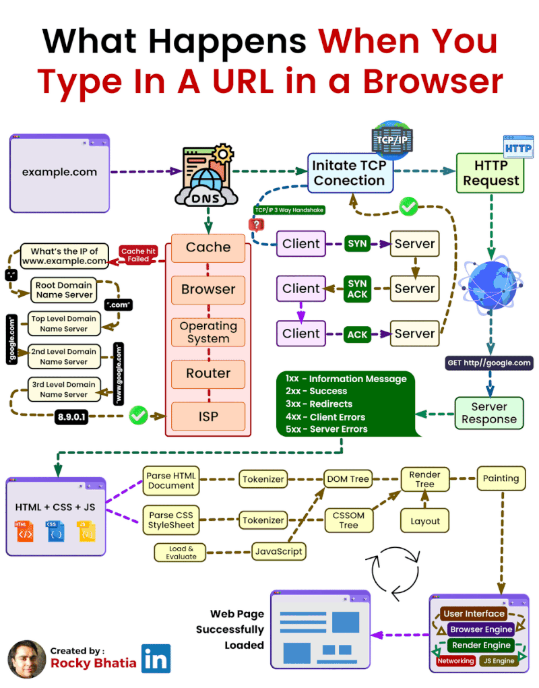
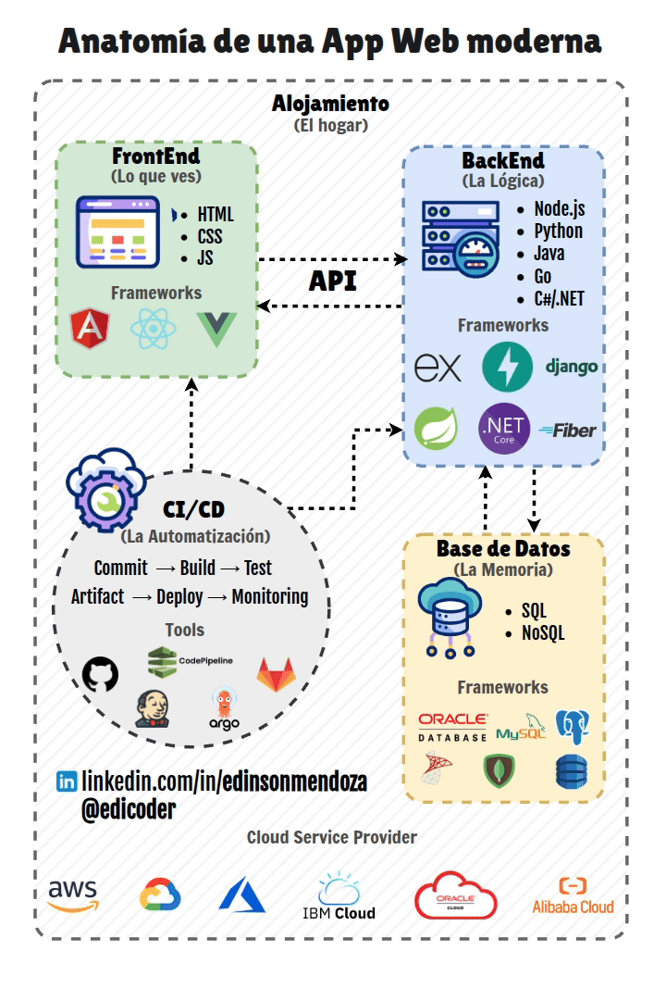
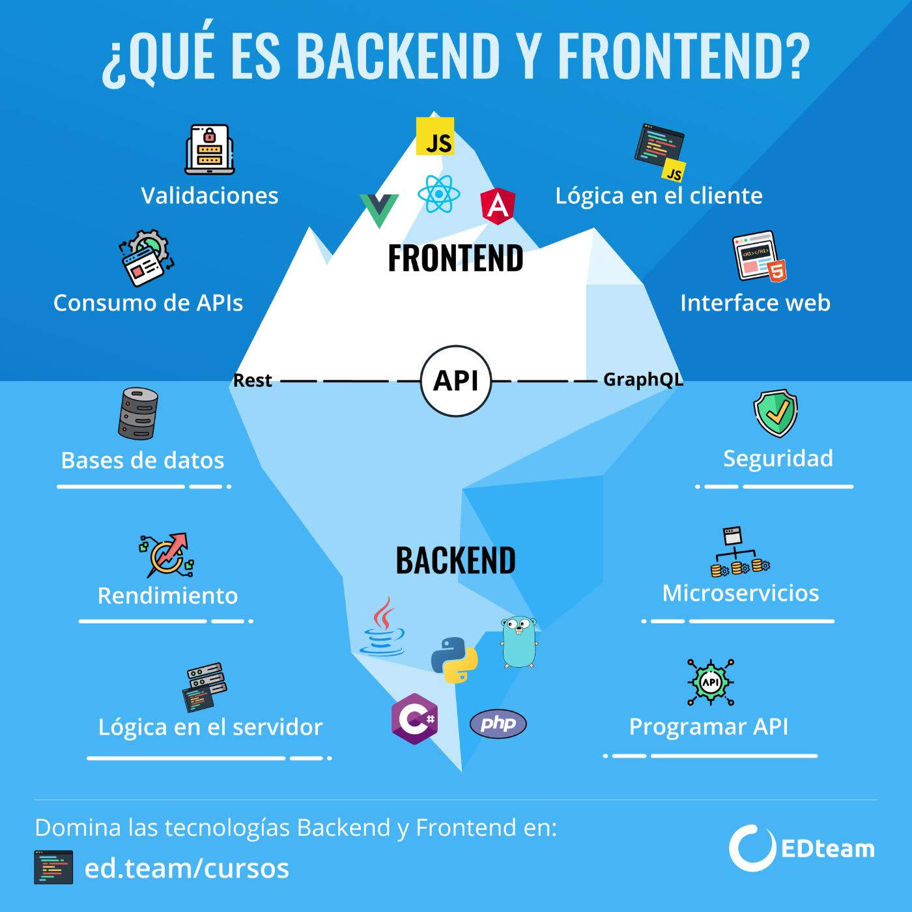
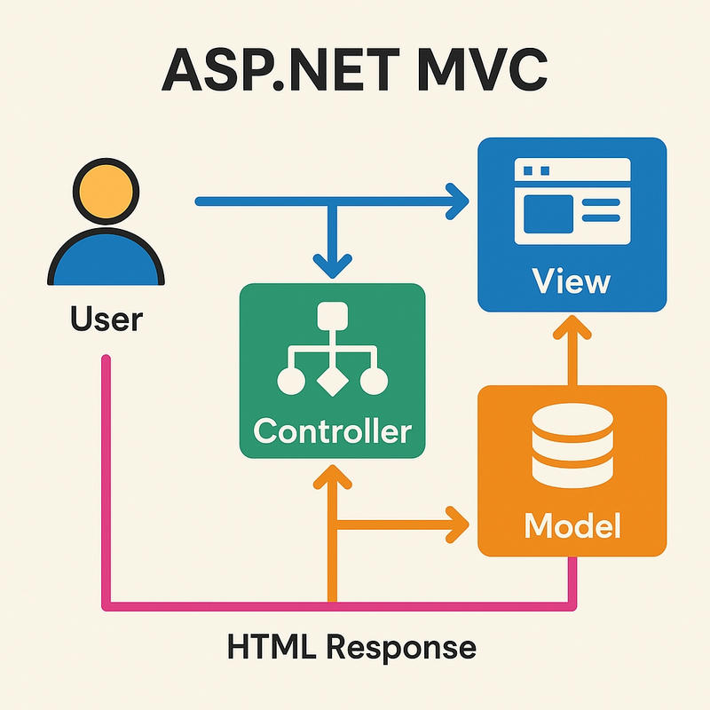
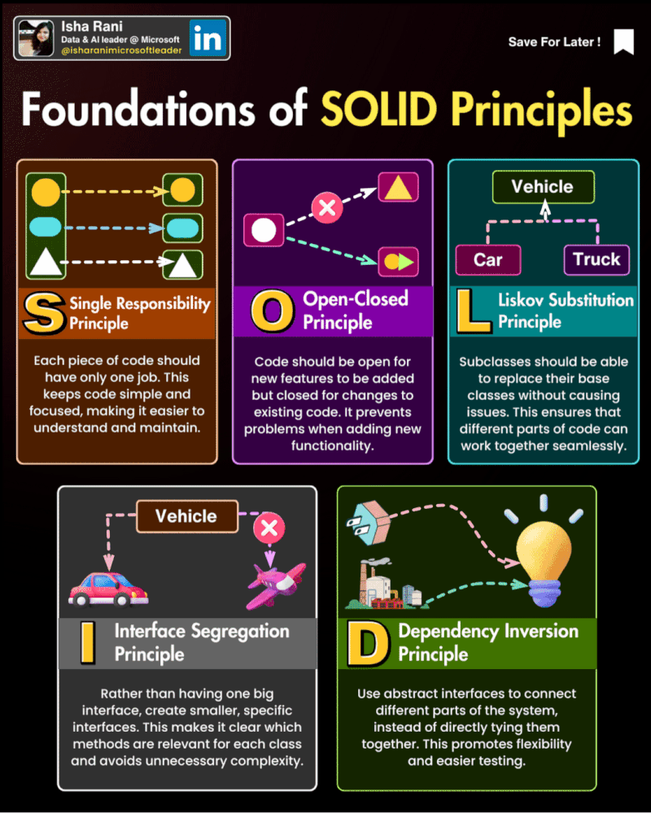
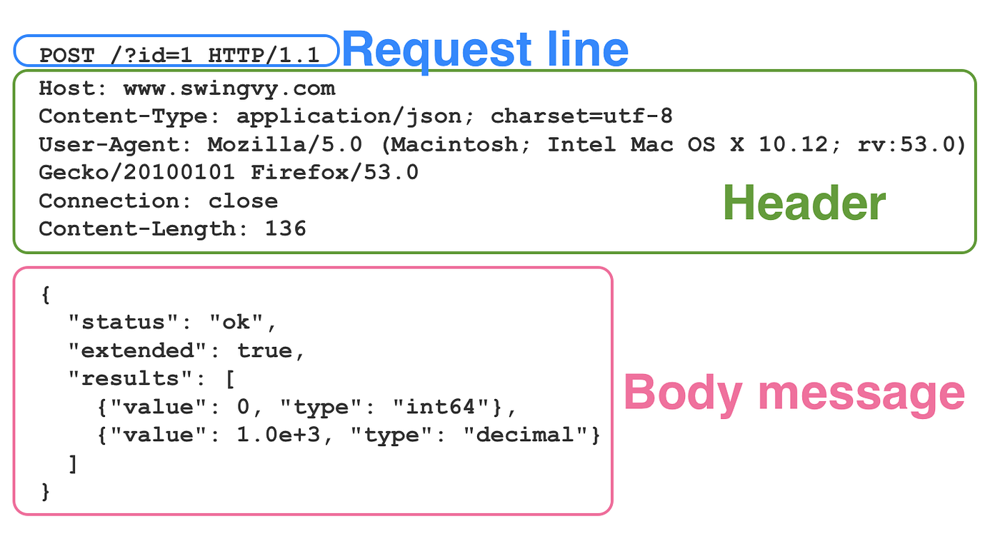
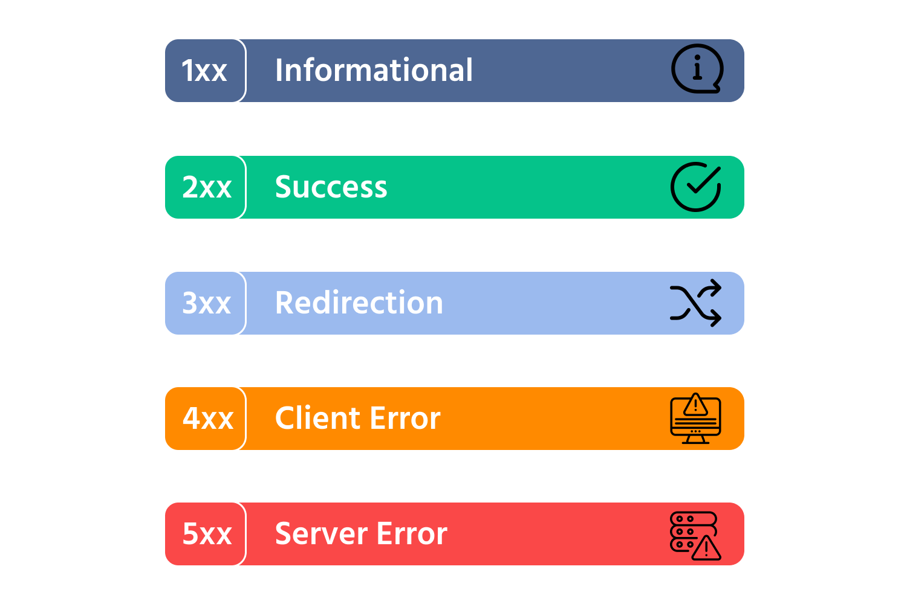
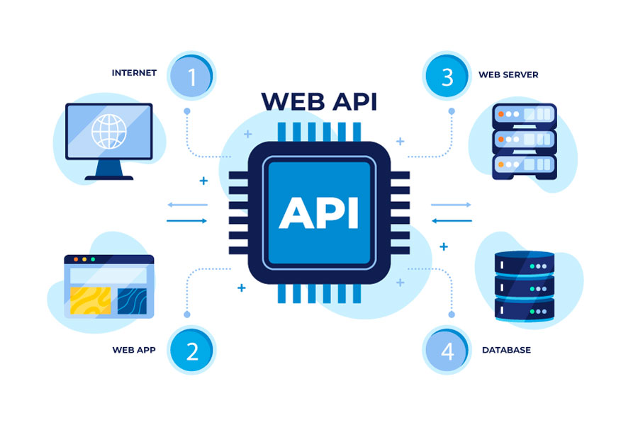
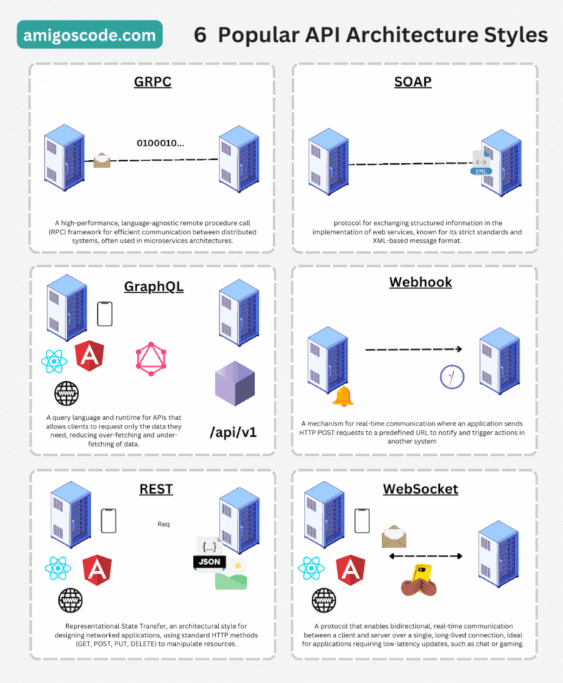
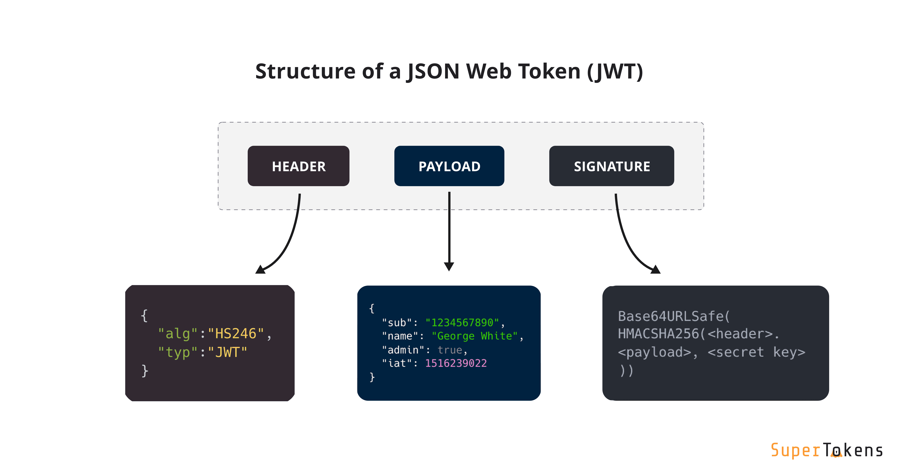

Despliegue de Aplicaciones Web · 2.º DAW¶
Apuntes y actividades del módulo (curso 2025/2026), organizados por unidades de trabajo (UT), cada una asociada a un Resultado de Aprendizaje (RA).
- Contenidos: la teoría de cada unidad con comandos y ejemplos.
- Actividades: ejercicios prácticos que preparan la práctica evaluable de cada RA.
Autoría y licencia
El temario (pestañas de Temario, con sus imágenes y gráficos) es obra de José Luis González Sánchez (joseluisgs), publicado bajo licencia Creative Commons BY-NC-SA 4.0 (uso docente, no comercial y citando al autor). Los resúmenes, actividades y evaluación forman parte de la programación de este módulo.
Cómo verlo (con o sin servidor)¶
Opción A — construir HTML y consultarlo sin servidor (recomendada para repartir):
Genera el sitio ensite/. Abre site/index.html directamente en el navegador: funciona offline, sin mkdocs serve.
Opción B — con servidor local (recarga en caliente mientras editas):
El temario se descarga solo
Las pestañas de Temario son el material original de joseluisgs. La primera vez que ejecutes mkdocs serve, mkdocs build o construir-sitio.sh, se descarga automáticamente en docs/material/ (necesitas conexión solo esa primera vez). También puedes traerlo a mano con bash material-original/traer-material.sh.
Exportar a PDF¶
El sitio incluye una página «Todo el material» que reúne todos los apuntes en una sola vista.
- Ábrela desde el menú, o el fichero
site/print_page.htmltras construir. - Usa Imprimir → Guardar como PDF para exportar todo el temario a un PDF.
- También puedes imprimir/exportar cualquier página suelta (una UT concreta) con Imprimir → Guardar como PDF.
Cómo publicarlo en GitHub Pages¶
O automáticamente en cada push a main con el workflow incluido en .github/workflows/deploy-docs.yml.
El curso
Evaluación y calificación¶
En qué consiste¶
El módulo se evalúa por Resultados de Aprendizaje (RA). Cada RA se califica de 0 a 10 con dos partes:
- Test — 30 %. Cuestionario objetivo (opción múltiple, verdadero/falso y respuesta corta) sobre los conceptos del RA.
- Ejercicio práctico — 70 %. Descargas unos ficheros de configuración/código, los corriges o completas según el enunciado y los entregas. No hay que ejecutarlos ni depender de internet.
Nota de cada RA = 0,30 × Test + 0,70 × Práctica. Un RA está superado si su nota es ≥ 5.
Cuándo se examina¶
Un examen por trimestre, que reúne el test y la práctica de cada RA de ese trimestre:
| Trimestre | RAs que entran |
|---|---|
| 1er trimestre | RA1, RA2, RA3 |
| 2º trimestre | RA4, RA5, RA6 |
Cómo se calcula la nota del módulo¶
La nota final es la media ponderada de los 6 RA:
| RA | Peso |
|---|---|
| RA1 | 10 % |
| RA2 | 20 % |
| RA3 | 20 % |
| RA4 | 20 % |
| RA5 | 20 % |
| RA6 | 10 % |
Para aprobar el módulo hay que tener todos los RA superados (≥ 5). Si queda algún RA por debajo de 5, el módulo no está aprobado y la nota final será como máximo 4 hasta que se recupere.
Formación en Fase Empresa (FFE) — 10 %¶
La Formación en Fase Empresa (FFE) aporta un 10 % a la nota del módulo. Ese 10 % se reparte sobre el conjunto de los RA: el bloque de RAs pasa a pesar el 90 % (cada RA mantiene su peso relativo) y la FFE es el 10 % restante.
$$\text{Nota del módulo} = 0{,}90 \times \text{(media ponderada de los RA)} + 0{,}10 \times \text{FFE}$$
La FFE se evalúa al final, en la convocatoria ordinaria (con una nota de 0 a 10). Hasta entonces, la nota que ves es provisional y solo refleja los RA. Igual que con los RA, si algún RA no está superado la nota final del módulo queda limitada a 4.
Recuperación (convocatorias)¶
- Evaluación continua. Si superas todos los RA, apruebas.
- Ordinaria. Si te queda algún RA (uno, varios o todos), te presentas solo a los RA pendientes; esa nota sustituye a la anterior.
- Extraordinaria. Si tras la ordinaria sigue pendiente algún RA, te presentas a esos.
Sobre el RA6 y la introducción inicial (RA0)¶
Al empezar el curso hay una unidad introductoria (RA0) con Git, GitHub y documentación. El RA0 es solo teoría/base de trabajo: no tiene nota propia. Lo usarás en todas las entregas, pero no se examina por separado.
Todo lo relacionado con el RA6 (documentación, control de versiones e integración/despliegue continuo) se evalúa una única vez al final del 2º trimestre, en el examen de ese trimestre. Por tanto:
- El 1er trimestre solo tiene nota de RA1, RA2 y RA3 (parcial e informativa).
- El RA6 es siempre definitivo: no se promedian dos mitades ni queda una nota provisional del 1er trimestre.
Tecnologías y software necesario¶
Qué vas a instalar y usar a lo largo del curso. Instala primero lo general; el software específico de cada unidad se indica en su fila.
Necesario desde el primer día (todo el curso)¶
- Git — control de versiones. git-scm.com
- Cuenta de GitHub — para tus repos y entregas. github.com
- Editor de código: VS Code (recomendado). code.visualstudio.com
- Docker Desktop (Docker Engine + Docker Compose) — hilo conductor de casi todas las prácticas. docker.com
- Terminal y un navegador con herramientas de desarrollo (DevTools).
Comprueba que todo va con:
git --version,docker --version,docker compose version.
Software por unidad¶
| UT / RA | Qué necesitas | Cómo obtenerlo / notas |
|---|---|---|
| UT0 · RA0/RA6 · Git y documentación | Git · cuenta GitHub · VS Code · Markdown | Documentación de código con Javadoc (incluido en el JDK) o XMLDoc (.NET). |
| UT1 · RA1 · Arquitecturas web | curl · navegador con DevTools · Postman (opcional) |
curl viene con macOS/Linux. Postman: postman.com. |
| UT2 · RA2 · Servidores web | Docker + Compose · imágenes nginx y httpd (Apache) · OpenSSL · cuenta Netlify |
OpenSSL para certificados de prueba. GitHub Pages no requiere instalar nada; Netlify: netlify.com. |
| UT3 · RA3 · Servidores de aplicaciones | JDK 21 + Maven · .NET SDK 8 · imagen postgres · carga (ab, k6 o JMeter) |
JDK: Temurin. .NET: dotnet.microsoft.com. k6: k6.io. |
| UT4 · RA4 · Transferencia de archivos | Docker (imágenes atmoz/sftp, fauria/vsftpd) · FileZilla · cliente sftp/ftp · OpenSSH |
FileZilla: filezilla-project.org. sftp/ssh vienen con el sistema. |
| UT5 · RA5 · Verificación y servicios de red | JUnit + Mockito + Testcontainers (Maven) · Node.js + Newman · Playwright · imagen osixia/openldap · ldapsearch |
Newman: npm i -g newman. Playwright: npx playwright install. Node: nodejs.org. |
| UT6 · RA6 · Integración y despliegue continuo | GitHub Actions (en la nube, no se instala) · GitHub CLI (gh, opcional) · Docker |
GitHub CLI: cli.github.com. |
Para ver/construir estos apuntes (opcional)¶
- Python 3 +
pip. Dependencias:pip install -r requirements.txt(instala MkDocs Material y el plugin de PDF).
Instalación mínima para empezar¶
Temario
UT0 · Control de versiones y documentación
Temario
- 1. Introducción a Git y Control de Versiones
- 1.1. ¿Qué es el Control de Versiones?
- 1.2. Introducción a Git
- 1.3. Conceptos Clave en Git
- 1.4. El Ciclo de Vida de los Archivos en Git
1. Introducción a Git y Control de Versiones¶
En este módulo aprenderás los fundamentos del control de versiones con Git y GitHub, pilares esenciales para la eficiencia, calidad y colaboración en el desarrollo de software.
1.1. ¿Qué es el Control de Versiones?¶
El control de versiones es un sistema que registra los cambios realizados en un archivo o conjunto de archivos a lo largo del tiempo. Su propósito principal es permitir a los desarrolladores recuperar versiones específicas de sus proyectos en cualquier momento.
📝 Nota del Profesor: "El control de versiones es como un 'guardar partida' avanzado. Cada commit es un punto de restauración. Si mañana descubres que tu código tiene un error, puedes volver a cualquier versión anterior en segundos."
Beneficios del Control de Versiones:
- Recuperación: Puedes volver a cualquier versión anterior
- Historial completo: Cada cambio queda registrado con autor, fecha y razón
- Colaboración: Múltiples desarrolladores pueden trabajar simultáneamente
- Trazabilidad: Saber quién hizo qué cambio y por qué
graph LR
subgraph "Evolucion del Proyecto"
V1["Version 1.0"] -->|"Correccion errores"| V2["Version 1.1"]
V2 -->|"Nueva funcion"| V3["Version 2.0"]
V3 -->|"Bug critico"| V4["Version 2.0.1"]
end💡 Tip del Examinador: Pregunta tipica: "¿Cuales son los tres objetivos principales del control de versiones?" Respuesta: Recuperar versiones anteriores, coordinar trabajo en equipo, y mantener historial de cambios.
1.2. Introducción a Git¶
Git es un software de control de versiones distribuido, diseñado por Linus Torvalds en 2005 para gestionar el desarrollo del núcleo Linux.
1.2.1. ¿Qué hace especial a Git?¶
A diferencia de los sistemas centralizados (como Subversion), Git otorga a cada desarrollador una copia local completa del historial del proyecto.
📝 Analogía del distribuidor: "Imagina que en lugar de ir a una biblioteca central a consultar un libro (sistema centralizado), cada usuario tiene una fotocopia completa de toda la biblioteca en su casa. Puede leer, estudiar y hasta hacer anotaciones sin ir a la biblioteca central. Cuando quiere compartir sus cambios, los envía a la biblioteca central y viceversa. Eso es Git: cada desarrollador tiene todo el historial."
graph TD
subgraph "Sistemas Centralizados vs Distribuidos"
subgraph "Centralizado SVN"
CENT["Servidor Central"] --> US1[Usuario 1]
CENT --> US2[Usuario 2]
CENT --> US3[Usuario 3]
US1 -.->|"Solo tiene ultimos archivos"| CENT
US2 -.->|"Solo tiene ultimos archivos"| CENT
US3 -.->|"Solo tiene ultimos archivos"| CENT
end
subgraph "Distribuido Git"
REM["GitHub GitLab"] --- US1G[Usuario 1]
REM --- US2G[Usuario 2]
REM --- US3G[Usuario 3]
US1G <-->|"Clona TODO el historial"| US2G
US2G <-->|"Comparte cambios"| US3G
US1G <-->|"Sin conexion"| REM
end
end1.2.2. Ventajas del Modelo Distribuido¶
| Característica | Sistema Centralizado | Git Distribuido |
|---|---|---|
| Velocidad | Limitada por red | Instantánea (todo local) |
| Trabajo offline | Imposible | Totalmente posible |
| Copia de seguridad | Solo servidor | Cada cliente es backup |
| Colaboración | Solo con servidor | P2P entre desarrolladores |
1.2.3. El Flujo de Trabajo Git¶
graph LR
subgraph "Flujo de Trabajo Git"
WT["Directorio de Trabajo"] -->|"git add"| SA["Area de Preparacion Staging"]
SA -->|"git commit"| REPO["Repositorio Local"]
REPO -->|"git push"| REMOTO["Repositorio Remoto"]
REMOTO -->|"git pull"| REPO
end💡 Tip del Examinador: Pregunta tipica: "¿Cuales son los tres estados de un archivo en Git?" Respuesta: Modificado Working Directory, Preparado Staging Area, y Confirmado Repository.
1.3. Conceptos Clave en Git¶
Para comprender Git, es fundamental familiarizarse con estos conceptos:
1.3.1. Repositorio (Repository)¶
Es el corazón del proyecto. Un repositorio es el lugar donde se almacenan todos los datos actualizados y el historial completo de cambios de un proyecto.
- Contiene todas las versiones previas
- Incluye ramas y etiquetas
- Cuando clonas, obtienes TODO el historial
1.3.2. Commit (Confirmación)¶
Un commit es un punto de control en el proceso de desarrollo. Es una "instantánea" de tu proyecto en un momento específico.
- Identificado por un código hash SHA-1 de 40 caracteres
- Incluye metadatos: autor, fecha, mensaje
- Los mensajes deben ser claros y concisos (menos de 50 caracteres en primera línea)
graph LR
COMMIT1["commit a1b2c3"] --> COMMIT2["commit d4e5f6"] --> COMMIT3["commit g7h8i9"]
MAIN["rama main"] --> COMMIT31.3.3. Rama (Branch)¶
Las ramas representan líneas de desarrollo independientes.
- Una rama es un simple puntero a un commit específico
- Crear y destruir ramas es extremadamente rápido en Git
- Permite trabajar en funcionalidades sin afectar el código principal
📝 Truco visual: "Una rama en Git es como una vía de tren. Puedes tener varias vías (ramas) donde los trenes (commits) circulan independientemente. Cuando terminas, puedes unir las vías (merge)."
1.3.4. Área de Preparación (Staging Area / Index)¶
Es una zona intermedia donde se seleccionan los cambios que se incluirán en el próximo commit.
- Permite construir commits precisos
- Elige exactamente qué cambios guardarán
- Archivos "preparados" están listos para confirmar
1.3.5. Directorio de Trabajo (Working Directory)¶
Es la copia de los archivos del proyecto en tu máquina local.
- Aquí realizas las modificaciones directamente
- Los archivos se extraen de la base de datos Git
- Si un archivo ha cambiado pero no está preparado, está "modificado"
1.3.6. HEAD¶
Es un puntero a la referencia de rama actual, que a su vez es un puntero al último commit realizado.
📝 Truco visual: "Piensa en HEAD como el indicador de página de un libro. Siempre está en la página que estás leyendo (el commit actual). Cuando avanzas página (haces commit), el indicador se mueve."
graph LR
COMMIT1["commit 1"] --> COMMIT2["commit 2"] --> COMMIT3["commit 3 HEAD main"]1.4. El Ciclo de Vida de los Archivos en Git¶
El flujo de trabajo básico en Git sigue una secuencia lógica:
stateDiagram-v2
[*] --> Modificado: Crear/Modificar archivo
Modificado --> Preparado: git add
Preparado --> Confirmado: git commit
Confirmado --> [*]
Modificado --> [*]: Descartar cambios
Preparado --> Modificado: git resetPasos del Ciclo:¶
- Modificar archivos: Realizas cambios en tu directorio de trabajo
- Preparar archivos: Añades los cambios al área de preparación con
git add - Confirmar cambios: Ejecutas
git commitpara guardar la instantánea
Los Tres Estados de un Archivo:¶
| Estado | Descripción | Comando para avanzar |
|---|---|---|
| Modificado | Has cambiado el archivo, pero no lo has preparado | git add |
| Preparado | Has marcado el archivo modificado para el próximo commit | git commit |
| Confirmado | Los datos están seguros en tu repositorio local | - |
💡 Regla nemotécnica: "Los archivos van de Modificado → Preparado → Confirmado. Como subir una escalera: cada paso es más alto (más seguro)."
- 2. Git Básico: Comandos Esenciales
- 2.1. Configuración Inicial
- 2.2. Creación y Clonación de Repositorios
- 2.3. Gestión de Cambios: El Ciclo de Trabajo Diario
- 2.4. Historial y Deshacer Cambios
- 2.5. Ramificación y Fusión
- 2.6. Ignorar Archivos
- 2.7. Etiquetado (Tags)
- 2.8. Trabajar con Remotos
- 2.9. Resumen de Comandos Diarios
- 2.5. Ramificación y Fusión
- 2.6. Ignorar Archivos
- 2.7. Etiquetado (Tags)
- 2.8. Trabajar con Remotos
2. Git Básico: Comandos Esenciales¶
En este módulo aprenderás los comandos fundamentales de Git para gestionar tus proyectos de forma efectiva. Dominar estos comandos es esencial para cualquier desarrollador.
📝 Nota del Profesor: "Los comandos de Git siguen un patrón: 'verbo sustantivo'.
git commit= 'git, confirma'.git push= 'git, empuja'. Es como darle órdenes a un asistente."
2.1. Configuración Inicial¶
Antes de empezar, es crucial configurar Git con tu identidad. Estas configuraciones solo necesitan hacerse una vez por máquina.
git config¶
Establece las opciones de configuración para Git en tres niveles:
| Nivel | Alcance | Archivo |
|---|---|---|
--local |
Solo este repositorio | .git/config |
--global |
Todos tus repositorios | ~/.gitconfig |
--system |
Todos los usuarios | /etc/gitconfig |
# Configurar nombre de usuario (global)
git config --global user.name "Tu Nombre"
# Configurar correo electrónico (debe coincidir con GitHub)
git config --global user.email "tu.email@ejemplo.com"
# Configurar VS Code como editor por defecto
git config --global core.editor "code --wait"
# Activar coloreado de la salida
git config --global color.ui auto
# Ver toda la configuración
git config --list
# Ver solo el nombre
git config user.name
# Ver ayuda sobre un comando de configuración
git config --help
💡 Tip del Examinador: Pregunta típica: "¿Qué comando usarías para configurar tu nombre en Git?" Respuesta:
git config --global user.name "Tu Nombre"📝 Nota importante: "El correo electrónico que configures debe coincidir con el que uses en GitHub para que tus commits aparezcan como tuyos."
flowchart TD
A[Configuración Git] --> B[System\n/etc/gitconfig]
A --> C[Global\n~/.gitconfig]
A --> D[Local\n.proyecto/.git/config]
B --> E[Todos los usuarios]
C --> F[Tus proyectos]
D --> G[Proyecto actual]
2.2. Creación y Clonación de Repositorios¶
git init vs git clone¶
Entiende la diferencia entre estas dos operaciones:
| Comando | Cuándo usarlo | Qué hace |
|---|---|---|
git init |
Nuevo proyecto | Crea un repositorio vacío desde cero |
git clone |
Proyecto existente | Descarga un repositorio completo |
git init¶
Inicializa un nuevo repositorio Git en el directorio actual.
# Crear y entrar en el directorio
mkdir mi-proyecto
cd mi-proyecto
# Inicializar repositorio Git
git init
# Salida: Initialized empty Git repository in /ruta/a/mi-proyecto/.git/
📝 Nota del Profesor: "El comando
git initcrea una carpeta oculta.gitque contiene toda la información del repositorio. Esta carpeta es el 'corazón' de Git. ¡No la borres!"
Estructura del directorio .git:
.git/
├── HEAD # Apunta a la rama actual
├── config # Configuración del repositorio
├── objects/ # Base de datos de commits, árboles, blobs
│ ├── pack/ # Objetos comprimidos
│ └── info/ # Información adicional
├── refs/ # Referencias a commits (ramas, tags)
│ ├── heads/ # Ramas locales
│ └── tags/ # Etiquetas
└── index # Área de preparación (staging)
git clone¶
Descarga una copia idéntica de un repositorio remoto.
# Clonar desde HTTPS
git clone https://github.com/usuario/repositorio.git
# Clonar y renombrar la carpeta automáticamente
git clone https://github.com/usuario/repositorio.git mi-nombre-proyecto
# Clonar una rama específica
git clone -b nombre-rama https://github.com/usuario/repositorio.git
# Clonar desde SSH (requiere clave SSH configurada)
git clone git@github.com:usuario/repositorio.git
📝 Analogía visual: "Clonar es como fotocopiar un libro entero. Obtienes todas las páginas (archivos) y todo el historial de correcciones (commits) desde que se escribió."
graph LR
REMOTO[GitHub\nRepositorio Original] -->|"git clone"| LOCAL[Tu Computadora\nCopia completa]
REMOTO -->|"También clonado"| METADATOS["Metadatos:\n- Historia completa\n- Ramas\n- Tags"]
2.3. Gestión de Cambios: El Ciclo de Trabajo Diario¶
Este es el flujo más común que usarás a diario:
flowchart TD
A[1. Trabajar en archivos] --> B[2. git status\n¿qué cambió?]
B --> C[3. git add\npreparar cambios]
C --> D[4. git commit\nconfirmar cambios]
D --> E[5. git push\nsubir a remoto]
git status¶
Muestra el estado actual del directorio de trabajo y del área de preparación.
git status
# Salida típica cuando todo está limpio:
# On branch main
# Your branch is up to date with 'origin/main'.
# nothing to commit, working tree clean
# Salida con cambios:
# On branch main
# Changes not staged for commit:
# modified: archivo.txt
# Untracked files:
# nuevo_archivo.txt
Interpretando la salida de git status:
| Sección | Significado | Ejemplo |
|---|---|---|
| Changes not staged | Modificado, sin preparar | modified: archivo.txt |
| Changes to be committed | Preparado, listo para commit | new file: nuevo.txt |
| Untracked files | Nuevo archivo, sin rastrear | nuevo_archivo.txt |
📝 Truco visual: "Usa
git status -spara una salida más compacta y fácil de leer."
# Salida compacta
M archivo.txt # Modificado (espacio = unstaged)
M archivo.txt # Modificado (staged)
A nuevo.txt # Añadido (staged)
?? nuevo.txt # Sin rastrear (untracked)
git add¶
Añade los cambios al área de preparación (staging).
# Añadir un archivo específico
git add archivo.txt
# Añadir todos los archivos modificados
git add .
# Añadir todos los archivos con extensión específica
git add *.java
git add *.py
# Añadir con patrón glob
git add "**/*.css" # Todos los CSS en cualquier carpeta
# Añadir interactivamente (seleccionar cambios línea a línea)
git add -p
# Ver qué se añadirá sin hacerlo
git add --dry-run .
💡 Tip del Examinador: Pregunta típica: "¿Cuál es la diferencia entre
git add archivo.txtygit add .?" Respuesta:git add archivo.txtañade un archivo específico, mientras quegit add .añade todos los archivos modificados."📝 Nota del Profesor: "El staging es como preparar una caja de mudanza. Decides qué cosas quieres meter antes de cerrarla. Puedes añadir más cosas (
git add), quitar cosas (git reset), o ver qué hay dentro (git diff --cached)."
git commit¶
Registra los cambios preparados en el historial del proyecto.
# Commit con mensaje inline
git commit -m "Añadida función de login"
# Commit con mensaje multilínea
git commit -m "Título del commit" -m "Descripción más detallada..."
# Commit de todos los cambios (skip staging)
git commit -a -m "Commit directo"
# Modificar el último commit (si no se ha hecho push)
git commit --amend -m "Mensaje corregido"
# Añadir al último commit sin cambiar mensaje
git commit --amend --no-edit
Anatomía de un buen mensaje de commit:
Tipos de commit convencionales:
| Tipo | Descripción | Ejemplo |
|---|---|---|
feat |
Nueva característica | feat: añadir búsqueda |
fix |
Corrección de bug | fix: error en login |
docs |
Solo documentación | docs: actualizar README |
style |
Formato, sin código | style: formatear código |
refactor |
Reestructuración | refactor: separar lógica |
test |
Tests | test: añadir unit tests |
chore |
Mantenimiento | chore: actualizar dependencias |
📝 Nota del Profesor: "Un buen mensaje de commit debería completar la frase: 'Si aplico este commit, entonces...'"
💡 Regla nemotécnica: "Para un buen commit, usa el imperativo: 'Añadir función' no 'Añadida función'. Es como dar una orden."
git diff¶
Muestra las diferencias entre archivos, commits, ramas, etc.
# Ver cambios NO preparados (working directory vs staging)
git diff
# Ver cambios YA preparados (staging vs último commit)
git diff --staged
git diff --cached # Alias de --staged
# Ver cambios en un archivo específico
git diff archivo.txt
# Comparar con el commit anterior
git diff HEAD~1
# Comparar con un commit específico
git diff a1b2c3d
# Ver diff resumido (solo estadísticas)
git diff --stat
# Ver diff entre ramas
git diff main develop
Cómo leer el output de git diff:
diff --git a/archivo.txt b/archivo.txt
index abc1234..def5678 100644
--- a/archivo.txt # Versión original
+++ b/archivo.txt # Versión nueva
@@ -1,3 +1,4 @@
- Línea eliminada # Signo menos = quitada
+ Línea añadida # Signo más = añadida
+ Nueva línea añadida # Nueva funcionalidad
📝 Nota del Profesor: "El output de
diffse parece a un editor de texto. Las lineas con-son las que quitaron, las con+son las que anadieron."
flowchart LR
A["Working Directory"] -->|"git diff"| B["Tus cambios"]
C["Staging Area"] -->|"git diff --staged"| D["Cambios preparados"]
E["Commit HEAD"] -->|"git diff HEAD~1"| F["Vs. Commit anterior"]2.4. Historial y Deshacer Cambios¶
Dominar el historial y saber deshacer cambios es crucial para trabajar con confianza en Git.
git log¶
Explora las revisiones anteriores del proyecto de múltiples formas.
# Ver historial completo (salida paginada)
git log
# Formato resumido (una línea por commit)
git log --oneline
# Ver últimos N commits
git log -5
# Ver cambios en cada commit
git log -p
# Formato gráfico de ramas
git log --graph --oneline --all
# Ver commits de un autor específico
git log --author="Nombre"
# Ver commits desde una fecha
git log --since="2024-01-01"
# Ver commits que modificaron un archivo específico
git log --follow archivo.txt
# Buscar commits que contengan un texto
git log --grep="login"
# Formato personalizado
git log --pretty=format:"%h - %an, %ar : %s"
Opciones de formato para git log --pretty=format:
| Código | Significado |
|---|---|
%h |
Hash corto del commit |
%H |
Hash completo |
%an |
Nombre del autor |
%ae |
Email del autor |
%ar |
Fecha relativa |
%s |
Asunto del commit |
%b |
Cuerpo del commit |
# Salida de git log --oneline:
# a1b2c3d (HEAD -> main) Añadida función de logout
# e5f6g7h Corregido bug en login
# i9j0k1l Añadida función de login
📝 Truco visual: "Usa
git log --graph --oneline --allpara ver una representacion visual de todas las ramas."
graph TD
subgraph "git log oneline"
A[a1b2c3d Anadida funcion de logout]
B[e5f6g7h Corregido bug en login]
C[i9j0k1l Anadida funcion de login]
D[f3g4h5j6 Primera version]
end
A --> B
B --> C
C --> Dgit show¶
Muestra los detalles de un commit específico.
# Ver último commit (HEAD)
git show HEAD
# Ver commit específico (primeros 7 caracteres del hash)
git show a1b2c3d
# Ver cambios de un archivo en un commit
git show a1b2c3d -- archivo.txt
# Ver solo el stats (qué archivos cambiaron)
git show --stat a1b2c3d
# Ver commit anterior
git show HEAD~1
git blame¶
Muestra quién modificó cada línea de un archivo (útil para encontrar al autor de un bug).
# Ver autoría línea a línea
git blame archivo.txt
# Ver un rango específico de líneas
git blame -L 10,20 archivo.txt # Líneas 10 a 20
# Ver blame sin saltos de línea (más fácil de leer)
git blame -w archivo.txt
# Ver blame con formato personalizado
git blame --line-porcelain archivo.txt
📝 Nota del Profesor: "
git blamees tu detective privado. Te dice exactamente quién escribió cada línea y en qué commit. Úsalo para entender el 'por qué' del código, no para señalar dedos."
flowchart LR
A[Archivo] -->|"git blame"| B[Historial línea a línea]
B --> C[Hash]
B --> D[Autor]
B --> E[Fecha]
B --> F[Contenido]
git revert¶
Deshace cambios creando un nuevo commit (no borra el historial).
# Revertir el último commit
git revert HEAD
# Revertir un commit específico
git revert a1b2c3d
# Revertir sin confirmar automáticamente
git revert --no-commit a1b2c3d
# Revertir merge commit (más complejo)
git revert -m 1 a1b2c3d
📝 Nota del Profesor: "
git revertes seguro para repositorios compartidos porque NO reescribe el historial. Crea un nuevo commit que 'deshace' los cambios, dejando evidencia de que se hizo una corrección."
flowchart TD
A[Commit original] -->|"Cambio problematico"| B[Commit buggy]
B -->|"git revert"| C[Commit de revert]
C --> D[Código restaurado]
git reset¶
Deshace cambios moviendo el puntero HEAD hacia atrás.
⚠️ Advertencia importante: "
git resetpuede ser peligroso. Nunca lo uses en commits que ya hayas compartido (hecho push)."
# Reset suave (soft) - solo mueve HEAD
# Los cambios vuelven al staging
git reset --soft HEAD~1
# Reset mixto (mixed, predeterminado)
# Los cambios vuelven al working directory
git reset HEAD~1
# Reset duro (hard) - ¡BORRA TODO!
# Los cambios se pierden completamente
git reset --hard HEAD~1
# Volver a un commit específico (hard)
git reset --hard a1b2c3d
# Reset a main/origin
git reset --hard origin/main
Comparación de los tres tipos de reset:
| Tipo | HEAD | Staging | Working Directory | Cuándo usarlo |
|---|---|---|---|---|
--soft |
✓ | ✗ | ✗ | "Solo quiero deshacer el commit" |
--mixed |
✓ | ✓ | ✗ | "Quiero rehacer el commit" |
--hard |
✓ | ✓ | ✓ | "Quiero descartar todo" |
💡 Tip del Examinador: Pregunta típica: "¿Qué diferencia hay entre
git reset --softygit reset --hard?" Respuesta:--softsolo mueve HEAD, los cambios vuelven al staging.--hardborra todo, los cambios se pierden."
flowchart TD
A[Antes del reset] -->|git reset --soft| B[HEAD mueve\nStaging igual\nWorking igual]
A -->|git reset --mixed| C[HEAD mueve\nStaging igual\nWorking igual]
A -->|git reset --hard| D[HEAD mueve\nStaging vacío\nWorking vacío]
📝 Analogía del reset: "Imagina que hiciste un commit por error. Con
--soft, Git te devuelve el contenido a la caja de mudanza (staging). Con--mixed, te lo devuelve fuera de la caja. Con--hard, Git tira todo a la basura."
git rm¶
Elimina archivos del repositorio.
# Eliminar archivo del working directory Y staging
git rm archivo.txt
# Eliminar solo del staging (mantener archivo en disco)
git rm --cached archivo.txt
# Eliminar múltiples archivos
git rm *.log
# Eliminar directorio completo
git rm -r nombre-directorio/
# Forzar eliminación (si hay cambios sin commit)
git rm -f archivo.txt
2.5. Ramificación y Fusión¶
Las ramas son una de las características más poderosas de Git. Permiten trabajar en múltiples funcionalidades de forma aislada.
Concepto de Rama¶
Una rama en Git es simplemente un puntero móvil a un commit. Cuando creas una nueva rama, Git crea un nuevo puntero que puede moverse independientemente.
graph LR
COMMIT1["commit a1b2c3 raiz"] --> COMMIT2["commit d4e5f6"]
COMMIT2 --> COMMIT3["commit g7h8i9 main"]
COMMIT2 -->|"git branch feature"| COMMIT4["commit j0k1l2 feature"]
COMMIT4 --> COMMIT5["commit m3n4o5 feature"]
MAIN["main"] --> COMMIT3
FEATURE["feature"] --> COMMIT5git branch¶
Gestiona las ramas del repositorio.
# Listar ramas locales
git branch
# Listar todas las ramas (incluye remotas)
git branch -a
# Listar ramas con su último commit
git branch -v
# Listar ramas que ya fueron fusionadas
git branch --merged
# Listar ramas que NO han sido fusionadas
git branch --no-merged
# Crear una nueva rama
git branch feature-nueva
# Crear y cambiarte a la nueva rama (atajo)
git checkout -b feature-nueva
# Renombrar rama actual
git branch -m nombre-antiguo nombre-nuevo
# Eliminar rama (si está fusionada)
git branch -d feature-nueva
# Forzar eliminación (sin fusionar)
git branch -D feature-nueva
# Eliminar rama remota
git push origin --delete feature-nueva
💡 Tip del Examinador: Pregunta típica: "¿Qué comando crea una nueva rama y te cambia a ella?" Respuesta:
git checkout -b nombre-ramaogit switch -c nombre-rama"📝 Nota del Profesor: "Las ramas en Git son 'baratas' (ligeras). Crear una rama solo crea un puntero, no copia archivos. Por eso podemos tener cientos de ramas."
git checkout / git switch¶
Cambia entre ramas o restaura archivos.
# Cambiar a otra rama
git checkout feature-nueva
# Cambiar a la rama anterior
git checkout -
# Cambiar a un commit específico (modo detach)
git checkout a1b2c3d
# Restaurar archivo al último commit
git checkout -- archivo.txt
# Restaurar archivo desde un commit específico
git checkout a1b2c3d -- archivo.txt
# Desde Git 2.23, usa switch (más claro)
git switch feature-nueva
git switch - # Volver a la rama anterior
git switch -c feature # Crear y cambiar
📝 Nota del Profesor: "Desde Git 2.23,
git switches el comando recomendado para cambiar de rama.git checkouttodavía funciona, pero 'switch' es más seguro y su nombre es más descriptivo."
git merge¶
Integra los cambios de una rama en otra.
# Fusionar feature en main
git checkout main
git merge feature
# Fusionar con mensaje personalizado
git merge feature -m "Merge: nueva funcionalidad"
# Fusionar sin fast-forward (siempre crea merge commit)
git merge --no-ff feature
# Fusionar con estrategia de 'theirs' (si hay conflictos)
git merge -X theirs feature
# Fusionar abortando si hay conflictos
git merge --abort
Tipos de Merge:
| Tipo | Descripción | Cuándo usarlo |
|---|---|---|
| Fast-forward | Mueve el puntero hacia adelante | No hay cambios en main |
| Merge commit | Crea un nuevo commit | Hay cambios divergentes |
| Conflict | Requiere resolución manual | Mismos archivos modificados |
flowchart TD
subgraph "Merge Fast-Forward"
A[main] --> B[commit C1]
B --> C[commit C2 feature]
C -->|"git merge feature"| D[main apunta a C2]
endflowchart TD
subgraph "Merge con Commit"
A[main] --> B[commit C1]
B --> C[commit C3]
A2[feature] --> D[commit C2]
D --> E[commit C4]
C -->|"git merge feature"| F[Merge Commit C5]
E --> F
end📝 Nota del Profesor: "La fusion a tres bandas es como拼图(puzzle): Git usa el ancestro comun la imagen original y las dos versiones actuales para determinar que cambio en cada una."
graph TD
ANC["Ancestro comun A"] -->|Desarrollo 1| Rama1["Rama feature B"]
ANC -->|Desarrollo 2| Rama2["Rama main C"]
Rama1 --> MERGE{Fusion}
Rama2 --> MERGE
MERGE --> RESULT["Resultado D"]Resolucion de Conflictos¶
Cuando Git no puede fusionar automáticamente, debes resolver los conflictos manualmente.
Pasos para resolver conflictos:
- Identifica los archivos en conflicto
- Abre los archivos y busca los marcadores de conflicto
- Edita el archivo para resolver el conflicto
- Elimina los marcadores de conflicto
- Añade el archivo resuelto
- Confirma la fusión
# Ver estado de conflictos
git status
# Ver conflictos
git diff
# Marcadores de conflicto en el archivo:
# <<<<<<< HEAD
# código de main
# =======
# código de feature
# >>>>>>> feature
# Después de resolver, añade el archivo
git add archivo-resuelto
# Finalizar el merge
git commit
git rebase¶
Reorganiza la historia del proyecto moviendo commits a una nueva base.
# Rebase de feature sobre main
git checkout feature
git rebase main
# Continuar después de resolver conflictos
git rebase --continue
# Abortar el rebase
git rebase --abort
# Rebase interactivo (editar, eliminar, combinar commits)
git rebase -i HEAD~5
# Rebase sin confirmar automáticamente
git rebase --no-verify
Operaciones en rebase interactivo:
| Comando | Descripción |
|---|---|
pick |
Mantener el commit |
reword |
Cambiar el mensaje |
edit |
Detener para modificar |
squash |
Fusionar con commit anterior |
fixup |
Fusionar, descartar mensaje |
drop |
Eliminar commit |
⚠️ Regla de Oro del Rebase: "Nunca uses
git rebaseen ramas públicas que ya han sido compartidas. Rebase reescribe el historial y puede causar problemas a otros desarrolladores."📝 Diferencia Merge vs Rebase: - Merge: Conserva el historial tal cual, crea commit de fusión - Rebase: Historial lineal, reescribe commits
flowchart TD
subgraph "Antes de rebase"
A[main] --> B[commit C1]
A1[feature] --> C[commit C2]
C --> D[commit C3]
end
subgraph "Después de rebase"
A --> B --> E[commit C4 base reescrita]
E --> F[commit C5 base reescrita]
end💡 Regla nemotécnica: "Merge es como pegar una foto en un álbum (queda el momento exacto). Rebase es como reorganizar las páginas del álbum para que la historia fluya mejor."
2.6. Ignorar Archivos¶
.gitignore¶
Archivo donde listes los patrones que Git debe ignorar.
# Ejemplo de .gitignore
# Ignorar todos los archivos .log
*.log
# Ignorar el directorio node_modules
node_modules/
# Ignorar archivos temporales
*~
*.swp
*.tmp
# Ignorar directorio de compilación
build/
dist/
# No ignorar archivo específico
!importante.txt
# Ignorar solo en la raíz
/*.log
# Ignorar en cualquier subdirectorio
**/*.log
# Ignorar archivos de un directorio específico
carpeta/*.tmp
Plantillas de .gitignore por lenguaje:
| Lenguaje/Framework | Incluir |
|---|---|
| Node.js | node_modules/, package-lock.json |
| Python | pycache/, *.pyc, venv/ |
| Java | target/, *.jar, .class |
| .NET | bin/, obj/, *.dll |
| macOS | .DS_Store |
| Windows | Thumbs.db |
📝 Nota del Profesor: "El archivo
.gitignoredebe crearse al inicio del proyecto para evitar añadir archivos no deseados. También puedes tener un.gitignoreglobal en tu directorio personal."
2.7. Etiquetado (Tags)¶
git tag¶
Etiqueta puntos específicos del historial para marcar versiones.
# Listar etiquetas
git tag
# Listar etiquetas con patrón
git tag -l "v1.*"
# Crear etiqueta ligera
git tag v1.0.0
# Crear etiqueta anotada (recomendado)
git tag -a v1.0.0 -m "Versión 1.0.0 estable"
# Ver información de etiqueta
git show v1.0.0
# Etiquetar un commit específico
git tag -a v0.9 a1b2c3d
# Eliminar etiqueta local
git tag -d v1.0.0
# Eliminar etiqueta remota
git push origin --delete v1.0.0
# Subir etiquetas al remoto
git push origin --tags
| Tipo | Descripción | Uso |
|---|---|---|
| Ligera | Simple puntero a commit | git tag v1.0 |
| Anotada | Objeto completo con metadata | git tag -a v1.0 -m "mensaje" |
💡 Tip del Examinador: Pregunta típica: "¿Qué diferencia hay entre una etiqueta ligera y una anotada en Git?" Respuesta: Las etiquetas ligeras son simples punteros a commits. Las anotadas son objetos completos con autor, fecha y mensaje, y están firmadas criptográficamente."
2.8. Trabajar con Remotos¶
git remote¶
Gestiona los repositorios remotos.
# Añadir remoto
git remote add origin https://github.com/usuario/proyecto.git
# Ver remotos configurados
git remote -v
# Ver información del remoto
git remote show origin
# Cambiar URL del remoto
git remote set-url origin nuevo-url.git
# Renombrar remoto
git remote rename origin upstream
# Eliminar remoto
git remote remove origin
# Recargar información del remoto
git remote update
git push¶
Sube los commits al repositorio remoto.
# Subir rama main
git push origin main
# Primera vez (establecer tracking)
git push -u origin main
# Subir etiqueta específica
git push origin v1.0.0
# Forzar push (¡peligroso!)
git push --force
# Forzar con lease (más seguro)
git push --force-with-lease
# Subir todas las etiquetas
git push origin --tags
# Eliminar rama remota
git push origin --delete nombre-rama
⚠️ Advertencia: "Nunca uses
git push --forceen ramas compartidas. Usa--force-with-leaseque verifica que nadie más haya pushado."
git fetch¶
Descarga cambios sin fusionarlos.
# Fetch de todos los remotos
git fetch
# Fetch de un remoto específico
git fetch origin
# Fetch de todas las ramas
git fetch --all
# Fetch y podar ramas eliminadas
git fetch --prune
git pull¶
Descarga y fusiona cambios.
# Pull con fetch + merge
git pull origin main
# Pull con rebase
git pull --rebase origin main
# Pull solo si no hay cambios locales
git pull --ff-only origin main
# Pull sin autocommit
git pull --no-commit
flowchart LR
A[Remoto] -->|"git fetch"| B[Descarga sin integrar]
A -->|"git pull"| C[Descarga y fusiona]
B --> D[Revisar cambios]
D --> E[git merge]
💡 Tip del Examinador: Pregunta típica: "¿Cuál es la diferencia entre
git fetchygit pull?" Respuesta:git fetchsolo descarga los cambios,git pulllos descarga Y fusiona automáticamente."
2.9. Resumen de Comandos Diarios¶
# Flujo de trabajo típico
# 1. Empezar el día: sincronizar
git checkout main
git pull origin main
# 2. Crear rama para tu tarea
git checkout -b feature/mi-tarea
# 3. Trabajar y hacer commits
git add .
git commit -m "Añadido componente X"
# 4. Subir regularmente
git push origin feature/mi-tarea
# 5. Actualizar mientras trabajas
git fetch origin
git rebase origin/main
# 6. Cuando esté listo: crear PR en GitHub
💡 Regla nemotécnica: "Merge es como pegar una foto en un álbum (queda el momento exacto). Rebase es como reorganizar las páginas del álbum para que la historia fluya mejor."
### git revert Deshace cambios creando un nuevo commit (no borra el historial). ```bash # Revertir el último commit git revert HEAD # Revertir un commit específico git revert a1b2c3d # Revertir sin confirmar automáticamente git revert --no-commit a1b2c3d📝 Nota del Profesor: "
git revertes seguro para repositorios compartidos porque no reescribe el historial. Crea un nuevo commit que 'deshace' los cambios."
git reset¶
Deshace cambios moviendo el puntero HEAD.
# Reset suave (mantiene cambios en staging)
git reset --soft HEAD~1
# Reset mixto (predeterminado, mantiene cambios en working directory)
git reset HEAD~1
# Reset duro (¡BORRA TODO!)
git reset --hard HEAD~1
# Volver a un commit específico (borra todo lo posterior)
git reset --hard a1b2c3d
⚠️ Advertencia: "
git reset --hardelimina permanentemente los cambios. ¡Úsalo con extrema precaución!"
flowchart TD
A[Commit actual] -->|git reset --soft| B[Mueve HEAD, staging igual]
A -->|git reset --mixed| C[Mueve HEAD, staging vacío]
A -->|git reset --hard| D[Mueve HEAD, TODO borrado]
git rm¶
Elimina archivos del repositorio.
# Eliminar archivo del working directory y staging
git rm archivo.txt
# Eliminar solo del staging (mantener en disco)
git rm --cached archivo.txt
# Eliminar múltiples archivos
git rm *.log
2.5. Ramificación y Fusión¶
git branch¶
Gestiona las ramas del repositorio.
# Listar ramas locales
git branch
# Listar todas las ramas (incluye remotas)
git branch -a
# Crear una nueva rama
git branch feature-nueva
# Crear y cambiarte a la nueva rama
git checkout -b feature-nueva
# Renombrar rama actual
git branch -m nombre-antiguo nombre-nuevo
# Eliminar rama (si está fusionada)
git branch -d feature-nueva
# Forzar eliminación
git branch -D feature-nueva
graph LR
MAIN["main"] --> COMMIT1
COMMIT1 -->|"git branch feature"| FEATURE["feature"]
FEATURE --> COMMIT2[commit en feature]
MAIN --> COMMIT3[commit en main]
git checkout¶
Cambia entre ramas o restaura archivos.
# Cambiar a otra rama
git checkout feature-nueva
# Cambiar a rama anterior
git checkout -
# Restaurar archivo al último commit
git checkout -- archivo.txt
# Restaurar desde un commit específico
git checkout a1b2c3d -- archivo.txt
📝 Nota del Profesor: "Desde Git 2.23, puedes usar
git switchpara cambiar de rama (más seguro que checkout)."
git merge¶
Integra los cambios de una rama en otra.
# Fusionar feature en main
git checkout main
git merge feature
# Fusionar sin fast-forward (crea merge commit)
git merge --no-ff feature
# Fusionar con estrategia de recursive
git merge -X theirs feature # Si hay conflictos, usar cambios de feature
graph TD
ANC["Ancestro comun A"] -->|Desarrollo 1| Rama1["Rama feature B"]
ANC -->|Desarrollo 2| Rama2["Rama main C"]
Rama1 --> MERGE{Fusion}
Rama2 --> MERGE
MERGE --> RESULT["Resultado D"]📝 Nota del Profesor: "La fusion a tres bandas es como拼图(puzzle): Git usa el ancestro comun la imagen original y las dos versiones actuales para determinar que cambio en cada una."
git rebase¶
Reorganiza la historia del proyecto.
# Rebase de feature sobre main
git checkout feature
git rebase main
# Continuar después de resolver conflictos
git rebase --continue
# Abortar el rebase
git rebase --abort
# Rebase interactivo (editar, eliminar, combinar commits)
git rebase -i HEAD~5
⚠️ Regla de Oro del Rebase: "Nunca uses
git rebaseen ramas públicas que ya han sido compartidas."
2.6. Ignorar Archivos¶
.gitignore¶
Archivo donde listes los patrones que Git debe ignorar.
# Ejemplo de .gitignore
# Ignorar todos los archivos .log
*.log
# Ignorar el directorio node_modules
node_modules/
# Ignorar archivos temporales
*~
*.swp
*.tmp
# Ignorar directorio de compilación
build/
dist/
# No ignorar archivo específico
!importante.txt
# Ignorar solo en la raíz
/*.log
# Ignorar en cualquier subdirectorio
**/*.log
📝 Nota del Profesor: "El archivo
.gitignoredebe crearse al inicio del proyecto para evitar añadir archivos no deseados."
2.7. Etiquetado (Tags)¶
git tag¶
Etiqueta puntos específicos del historial.
# Listar etiquetas
git tag
# Crear etiqueta ligera
git tag v1.0.0
# Crear etiqueta anotada (recomendado)
git tag -a v1.0.0 -m "Versión 1.0.0 estable"
# Ver información de etiqueta
git show v1.0.0
# Etiquetar un commit específico
git tag -a v0.9 a1b2c3d
# Eliminar etiqueta local
git tag -d v1.0.0
# Subir etiquetas al remoto
git push origin --tags
| Tipo | Descripción | Uso |
|---|---|---|
| Ligera | Simple puntero a commit | git tag v1.0 |
| Anotada | Objeto completo con metadata | git tag -a v1.0 -m "mensaje" |
2.8. Trabajar con Remotos¶
git remote¶
Gestiona los repositorios remotos.
# Añadir remoto
git remote add origin https://github.com/usuario/proyecto.git
# Ver remotos configurados
git remote -v
# Ver información del remoto
git remote show origin
# Cambiar URL del remoto
git remote set-url origin nuevo-url.git
# Eliminar remoto
git remote remove origin
git push¶
Sube los commits al repositorio remoto.
# Subir rama main
git push origin main
# Primera vez (establecer tracking)
git push -u origin main
# Forzar push (¡peligroso!)
git push --force
# Subir etiquetas
git push origin v1.0.0
git fetch¶
Descarga cambios sin fusionarlos.
git pull¶
Descarga y fusiona cambios.
# Pull con fetch + merge
git pull origin main
# Pull con rebase
git pull --rebase origin main
# Pull solo si no hay cambios locales
git pull --ff-only origin main
flowchart LR
A[Remoto] -->|"git fetch"| B[Descarga sin integrar]
A -->|"git pull"| C[Descarga y fusiona]
B --> D[Revisar cambios]
D --> E[git merge]
💡 Tip del Examinador: Pregunta típica: "¿Cuál es la diferencia entre
git fetchygit pull?" Respuesta:git fetchsolo descarga los cambios,git pulllos descarga Y fusiona automáticamente.
- 3. GitHub y Flujos de Trabajo Colaborativos
- 3.1. GitHub para la Colaboración
- 3.2. Pull Requests (Solicitudes de Incorporación de Cambios)
- 3.3. Fork (Bifurcación)
- 3.4. Flujos de Trabajo Comunes en Git
- 3.5. Buenas Practicas de Colaboracion
3. GitHub y Flujos de Trabajo Colaborativos¶
En este módulo aprenderás a utilizar GitHub como plataforma de colaboración y los flujos de trabajo más comunes en equipos de desarrollo. GitHub no es solo un servidor Git, es un ecosistema completo de colaboración.
3.1. GitHub para la Colaboración¶
GitHub es una plataforma de alojamiento de repositorios Git que va más allá de ser un simple servidor. Es un centro de colaboración, gestión de proyectos y una red social para desarrolladores.
¿Qué ofrece GitHub?¶
| Herramienta | Descripción | Uso Principal |
|---|---|---|
| Repositories | Alojamiento de código | Almacenar proyectos |
| Pull Requests | Revisión de código | Colaboración |
| Issues | Seguimiento de tareas | Gestión de proyectos |
| Actions | CI/CD | Automatización |
📝 Nota del Profesor: "GitHub es como 'Facebook para desarrolladores'. No solo aloja tu código, sino que facilita la colaboración entre equipos y la contribución a proyectos de código abierto. Cada perfil es tu currículum técnico."
3.2. Pull Requests (Solicitudes de Incorporación de Cambios)¶
Una Pull Request (PR) es una herramienta de comunicación fundamental en el desarrollo colaborativo. Es el corazón de la colaboración en GitHub.
¿Qué es una Pull Request?¶
Es una solicitud para incorporar cambios de una rama a otra. Permite:
- Proponer cambios: Mostrar qué cambios quieres aportar
- Solicitar revisión: Que otros developers revisen tu código
- Discutir modificaciones: Conversación sobre el código
- Mantener historial limpio: Solo se fusiona código aprobado
💡 Tip del Examinador: Pregunta típica: "¿Qué es un Pull Request y para qué sirve?" Respuesta: Es una solicitud para fusionar cambios de una rama a otra. Sirve para revisar código antes de integrarlo, discutir cambios, y mantener la calidad del código."
Anatomía de una Buena Pull Request¶
## Título
feat: Añadir sistema de notificaciones
## Descripción
Este PR implementa el sistema de notificaciones descrito en #123.
### Cambios realizados
- Creado componente NotificationCard
- Añadido servicio NotificationService
- Integración con WebSocket para tiempo real
### Capturas de pantalla
![notificaciones]
### Testing
- Tests unitarios para NotificationService ✓
- Tests de integración con WebSocket ✓
### Checklist
- [x] Código formateado
- [x] Tests pasando
- [x] Documentación actualizada
- [x] Sin warnings de linting
Flujo Completo de una Pull Request¶
flowchart TD
subgraph "Desarrollo Local"
A1[1. Crear rama feature] --> B1[2. Desarrollar]
B1 --> C1[3. Commits]
C1 --> D1[4. git push]
end
subgraph "GitHub"
D1 --> E1[5. Abrir PR]
E1 --> F1[6. Revision de codigo]
F1 --> G1{7. Cambios}
G1 -->|Si| H1[8. Nuevos commits]
H1 --> F1
G1 -->|No| I1[9. Aprobacion]
I1 --> J1[10. Merge]
end
subgraph "Limpieza"
J1 --> K1[11. Eliminar rama]
K1 --> L1[12. Sincronizar main]
endBuenas Prácticas para Pull Requests¶
📝 Regla nemotécnica: "PR PEQUEÑO = Revision RAPIDA. Divide tu trabajo en PRs manejables."
| Práctica | Descripción | Por qué |
|---|---|---|
| PRs pequeños | Menos de 400 líneas | Más fácil de revisar |
| Titulo claro | Describe el cambio | Busqueda y referencia |
| Descripcion completa | Explica contexto | Entienden mejor el cambio |
| Self-review | Revísate tú primero | Detecta errores obvios |
| Responde rapido | A comments y reviews | Mantiene el flujo |
| Un PR = Una cosa | Cambios relacionados | Facilita el review |
💡 Tip del Examinador: Pregunta tipica: "¿Por que es importante hacer Pull Requests pequenas?" Respuesta: Son mas faciles de revisar, reducen errores, permiten identificar problemas mas rapido y facilitan la integracion continua."
3.3. Fork (Bifurcación)¶
Un Fork es crear una copia de un repositorio existente en tu propia cuenta de GitHub. Es fundamental para contribuir a proyectos de código abierto.
Fork vs Clone¶
| Operacion | Que hace | Donde esta |
|---|---|---|
| Clone | Copia repositorio a tu maquina | Tu ordenador |
| Fork | Copia repositorio a tu cuenta GitHub | GitHub tu cuenta |
¿Cuándo usar Fork?¶
- Proyectos de código abierto donde no tienes permisos
- Contribuir a proyectos ajenos
- Experimentar sin afectar el original
📝 Analogia del Fork: "Fork es como fotocopiar un libro entero y llevártelo a casa. Puedes modificarlo como quieras (es tu copia), y si quieres que tus cambios aparezcan en el original, envías las páginas modificadas al autor original."
Flujo de Trabajo Completo con Fork¶
flowchart LR
subgraph "GitHub"
A[Original upstream] -->|"Click Fork"| B[Tu Fork origin]
B -->|"git clone"| C[Local]
C -->|"git remote add upstream"| A
end
subgraph "Desarrollo"
C --> D[Crear rama]
D --> E[Trabajo local]
E --> F[git push]
F --> B
B -->|"Create PR"| A
endPasos Detallados para Contribuir¶
# 1. HACER FORK EN GITHUB
# Click en boton "Fork" en la pagina del repositorio original
# 2. CLONAR TU FORK
git clone https://github.com/TU-USUARIO/proyecto.git
cd proyecto
# 3. AÑADIR REMOTO ORIGINAL (llamado upstream)
git remote add upstream https://github.com/ORIGINAL/proyecto.git
# 4. VER REMOTOS CONFIGURADOS
git remote -v
# origin https://github.com/TU-USUARIO/proyecto.git (fetch)
# origin https://github.com/TU-USUARIO/proyecto.git (push)
# upstream https://github.com/ORIGINAL/proyecto.git (fetch)
# upstream https://github.com/ORIGINAL/proyecto.git (push)
# 5. CREAR RAMA PARA TUS CAMBIOS
git checkout -b mi-contribucion
# 6. TRABAJAR Y HACER COMMITS
git add .
git commit -m "feat: añadir mi contribucion"
# 7. SUBIR A TU FORK
git push origin mi-contribucion
# 8. CREAR PULL REQUEST DESDE GITHUB
# Ir a tu fork en GitHub -> Click en "Compare and pull request"
Sincronizar Fork con Original¶
# Metodo 1: Fetch + Merge
git fetch upstream
git checkout main
git merge upstream/main
# Metodo 2: Pull directo
git pull upstream main
# Metodo 3: Rebase (historial mas limpio)
git fetch upstream
git checkout main
git rebase upstream/main
# Subir cambios a tu fork
git push origin main
⚠️ Importante: "Nunca hagas cambios directamente en la rama main de tu fork. Siempre crea una nueva rama para cada contribucion."
3.4. Flujos de Trabajo Comunes en Git¶
Para coordinar el trabajo de un equipo, es necesario acordar cómo se utilizará Git. Los flujos de trabajo definen las reglas del juego.
3.4.1. GitHub Flow¶
Flujo de trabajo simple y agil, centrado en ramas de vida corta y despliegues continuos.
Principios del GitHub Flow:
flowchart TD
A[main] -->|Nueva rama| B[feature-x]
B -->|Commits| C[Push a GitHub]
C --> D[Pull Request]
D -->|Aprobado| E[Merge a main]
E --> F[Deploy automatico]- La rama
mainsiempre esta lista para desplegar - En cualquier momento puedes hacer deploy - Trabaja en ramas - Cada funcionalidad = nueva rama
- Commits regulares - Historial detallado
- Abre PR para cada cambio - incluso pequeno
- Merge despues de approval - Codigo revisado
- Deploy inmediatamente - Entrega continua
💡 Tip del Examinador: Pregunta tipica: "¿Cuándo usar GitHub Flow?" Respuesta: En proyectos web con despliegue continuo, equipos pequenos, y cuando quieres mover rapido."
Ejemplo de GitHub Flow:
# 1. Empezar desde main actualizado
git checkout main
git pull origin main
# 2. Crear rama para nueva funcionalidad
git checkout -b feature/nuevo-login
# 3. Trabajar y hacer commits
git add .
git commit -m "feat: añadir formulario de login"
# 4. Subir y crear PR
git push origin feature/nuevo-login
# -> Crear PR en GitHub -> Review -> Merge
# 5. Despues del merge
git checkout main
git pull origin main # Tu main ya tiene los cambios
3.4.2. GitFlow¶
Metodologia mas estructurada para proyectos con ciclos de release definidos.
flowchart TD
subgraph "Ramas de Larga Vida"
MAIN["main produccion"]
DEVELOP["develop desarrollo"]
end
subgraph "Ramas Temporales"
FEATURE["feature"] --> DEVELOP
RELEASE["release"] --> MAIN
RELEASE --> DEVELOP
HOTFIX["hotfix"] --> MAIN
HOTFIX --> DEVELOP
end
DEVELOP -.->|"merge no-ff"| MAIN
MAIN -->|"tag"| RELEASEEstructura de Ramas en GitFlow:
| Rama | Proposito | Vida | Cuando crearla |
|---|---|---|---|
main |
Produccion, versiones estables | Permanente | Inicial |
develop |
Integracion de features | Permanente | Inicial |
feature/ |
Nuevas funcionalidades | Temporal | De develop |
release/ |
Preparacion de release | Temporal | De develop |
hotfix/ |
Correcciones urgentes | Temporal | De main |
Comandos con GitFlow:
# Inicializar GitFlow
git flow init
# Feature
git flow feature start mi-feature # Crear
git flow feature finish mi-feature # Merge a develop
# Release
git flow release start 1.0.0 # Crear de develop
git flow release finish 1.0.0 # Merge a main + develop + tag
# Hotfix
git flow hotfix start bug-urgente # Crear de main
git flow hotfix finish bug-urgente # Merge a main + develop
📝 Nota del Profesor: "GitFlow es ideal para proyectos con versiones numeradas (v1.0, v2.0) como software comercial o librerias. GitHub Flow es mejor para aplicaciones web con despliegues frecuentes."
Comparacion de Flujos¶
| Caracteristica | GitHub Flow | GitFlow |
|---|---|---|
| Complejidad | Simple | Media-Alta |
| Ramas principales | Solo main |
main + develop |
| Release management | Continuo | Con versiones |
| Hotfixes | Rama desde main | Rama dedicada |
| Mejor para | Web apps, DevOps | Software comercial |
| Release branches | No | Si |
💡 Regla nemotecnica: "Web continuo = GitHub Flow. Versiones definidas = GitFlow."
3.5. Buenas Practicas de Colaboracion¶
Commits Significativos¶
# ❌ Malos mensajes
git commit -m "fix"
git commit -m "updates"
git commit -m "wip"
# ✅ Buenos mensajes
git commit -m "Corregido error de login cuando email esta vacio"
git commit -m "Añadida validacion de contrasena minima (minimo 8 caracteres)"
git commit -m "Actualizada dependencia axios a v1.0.0 para seguridad"
📝 Regla del imperativo: "Escribe tus mensajes como si dieras una orden: 'Añadir funcion' no 'Añadida funcion'."
Nombres de Ramas¶
| Prefijo | Uso | Ejemplo |
|---|---|---|
feature/ |
Nueva funcionalidad | feature/login-redes-sociales |
bugfix/ |
Correccion de error | bugfix/error-500-login |
hotfix/ |
Correccion urgente | hotfix/security-patch |
release/ |
Preparacion release | release/v2.1.0 |
docs/ |
Solo documentacion | docs/update-readme |
refactor/ |
Reestructuracion | refactor/auth-service |
Workflow Diario Recomendado¶
# 1. Empezar el dia: sincronizar
git checkout main
git pull origin main
# 2. Crear rama para tu tarea
git checkout -b feature/mi-tarea
# 3. Trabajar y hacer commits pequenos
git add .
git commit -m "feat: paso 1 del componente"
# 4. Subir regularmente
git push origin feature/mi-tarea
# 5. Mantener actualizado mientras trabajas
git fetch origin
git rebase origin/main
# 6. Cuando este listo: crear PR en GitHub
💡 Tip del Examinador: Pregunta tipica: "¿Cual es la diferencia entre Fork y Clone?" Respuesta: Clone copia un repositorio a tu maquina local. Fork copia un repositorio completo a tu cuenta de GitHub para poder contribuir a proyectos donde no tienes permisos."
- 4. Herramientas Complementarias para Git y GitHub
- 4.1. Editores de Código con Integración Git
- 4.2. Clientes Git Gráficos
- 4.3. Herramientas de Línea de Comandos Avanzadas
- 4.4. Herramientas de Comparación
- 4.5. Herramientas de Recuperación
- 4.6. Comparativa de Herramientas
- 4.7. Configuración de Entorno de Desarrollo
4. Herramientas Complementarias para Git y GitHub¶
En este módulo conocerás las herramientas GUI y extensiones que facilitan el trabajo con Git y GitHub.
4.1. Editores de Código con Integración Git¶
Visual Studio Code (VS Code)¶
Editor de código muy popular con fuerte integración Git.
Extensiones esenciales:
| Extensión | Descripción |
|---|---|
| Git Lens | Muestra autoría de líneas, historial de commits |
| Git Graph | Visualiza el historial de commits y ramas |
| Gitflow Actions | Interfaz gráfica para GitFlow |
| GitHub Copilot | IA para autocompletar código |
📝 Nota del Profesor: "VS Code con Git Lens es como tener 'git blame' visible permanentemente. Puedes ver quién escribió cada línea con solo pasar el mouse."
graph LR
VSCODE[VS Code] -->|Usa| GIT[Git]
VSCODE -->|Con| LENS[Git Lens]
VSCODE -->|Con| GRAPH[Git Graph]
VSCODE -->|Con| COPILOT[Copilot]
Atajos útiles en VS Code:
| Atajo | Acción |
|---|---|
Ctrl+Shift+G |
Abrir panel Git |
Ctrl+Enter |
Ver cambios del commit seleccionado |
M |
Stage/unstage archivo |
4.2. Clientes Git Gráficos¶
GitKraken¶
Considerado por muchos como la mejor herramienta GUI para Git.
Características:
- Interfaz visual e interactiva
- Gestión de repositorios, ramas, merges
- Soporte integrado para GitFlow
- Consola de logs con comandos ejecutados
- Integración con GitHub, GitLab, Bitbucket
📝 Nota del Profesor: "GitKraken es excelente para aprender Git porque muestra los comandos que ejecuta por cada acción. ¡Es como ver la receta mientras cocina!"
graph TD
subgraph GitKraken Features
A[Visualización Gráfica] --> B[Historial de Commits]
A --> C[Árbol de Ramas]
D[Operaciones] --> E[Merge]
D --> F[Rebase]
D --> G[Stash]
H[Integración] --> I[GitHub]
H --> J[GitLab]
H --> K[Bitbucket]
end
GitHub Desktop¶
Cliente gráfico oficial de GitHub para Windows y Mac.
Enfoque:
- Simplifica operaciones comunes
- Interfaz intuitiva para principiantes
- Centrado en flujo de trabajo GitHub
- Crear ramas, commits y Pull Requests fácil
flowchart LR
A[GitHub Desktop] --> B[Cambios staged]
A --> C[Commit]
A --> D[Push]
A --> E[Pull Request]
4.3. Herramientas de Línea de Comandos Avanzadas¶
Git Alias¶
Crea accesos directos para comandos frecuentes.
# Ver todos los alias
git config --get-regexp alias
# Crear alias
git config --global alias.st status
git config --global alias.co checkout
git config --global alias.br branch
git config --global alias.ci commit
git config --global alias.df diff
# Alias útiles
git config --global alias.unstage 'reset HEAD --'
git config --global alias.last 'log -1 HEAD'
git config --global alias.visual '!gitk'
# Ver log resumido
git config --global alias.lg "log --color --graph --pretty=format:'%Cred%h%Creset -%C(yellow)%d%Creset %s %Cgreen(%cr) %C(bold blue)<%an>%Creset' --abbrev-commit"
Oh My Zsh con plugin git¶
Si usas Zsh, el plugin git proporciona muchos atajos:
# En ~/.zshrc
plugins=(git git-flow)
# Atajos disponibles:
gst # git status
ga # git add
gcmsg # git commit -m
gp # git push
gco # git checkout
gb # git branch
gl # git pull
4.4. Herramientas de Comparación¶
gitk¶
Visor gráfico de historial de Git (incluido en Git).
GitHub/GitLab Diff¶
Plataformas web con comparación visual:
- GitHub: Comparación de commits, PRs, branches
- GitLab: Merge requests con diff side-by-side
- Bitbucket: Pull requests con anotaciones
💡 Tip del Examinador: Pregunta típica: "¿Qué herramienta usarías para ver el historial de un archivo de forma visual?" Respuesta:
gitk --follow archivo.txto extensiones como Git Lens en VS Code."
4.5. Herramientas de Recuperación¶
git reflog¶
Recupera commits "perdidos".
# Ver historial de referencias
git reflog
# Recuperar commit específico
git checkout a1b2c3d
git branch recuperada
git fsck¶
Verifica la integridad del repositorio.
# Ver objetos huérfanos
git fsck --unreachable --no-reflogs
# Recuperar objetos huérfanos
git fsck --lost-found
4.6. Comparativa de Herramientas¶
| Herramienta | Tipo | Nivel | Mejor para |
|---|---|---|---|
| Git CLI | Terminal | Avanzado | Desarrolladores experimentados |
| VS Code + Git Lens | Editor | Intermedio | Desarrollo diario |
| GitKraken | GUI | Todos | Visualización y aprendizaje |
| GitHub Desktop | GUI | Principiante | Flujo GitHub básico |
| gitk | GUI CLI | Intermedio | Revisión rápida de historial |
📝 Regla nemotécnica: "Para aprender Git bien: usa CLI. Para trabajar rápido: usa GUI. Para entender qué pasó: usa visualización."
4.7. Configuración de Entorno de Desarrollo¶
.gitconfig personal¶
[user]
name = Tu Nombre
email = tu@email.com
[core]
editor = code --wait
autocrlf = input
[alias]
st = status
co = checkout
br = branch
ci = commit
df = diff
lg = log --oneline --graph --all
[color]
ui = auto
[push]
default = simple
[pull]
rebase = false
.gitignore global¶
# Crear gitignore global
touch ~/.gitignore_global
# Configurar Git para usarlo
git config --global core.excludesFile ~/.gitignore_global
Contenido típico del .gitignore_global:
- 5. Documentación de Código
- 5.1. ¿Por qué Documentar?
- 5.2. Markdown
- 📁 Estructura
- 🛠️ Comandos
- 🤝 Contribución
- 📄 Licencia
- 5.4. XMLdoc (C#)
- 5.5. Comparativa: JavaDoc vs XMLdoc
- 5.6. Buenas Prácticas de Documentación
5. Documentación de Código¶
En este módulo aprenderás la importancia de documentar el código y las herramientas más utilizadas para hacerlo.
5.1. ¿Por qué Documentar?¶
La documentación del código es fundamental para el mantenimiento futuro de cualquier proyecto.
Beneficios de la Documentación:
- Mantenibilidad: Otros desarrolladores pueden entender tu código
- Colaboración: Facilita el trabajo en equipo
- Onboarding: Nuevos miembros entienden el proyecto más rápido
- Referencia: Tu yo futuro te lo agradecerá
📝 Nota del Profesor: "El código bien documentado es como un libro de instrucciones. Sin él, los desarrolladores tendrían que 'adivinar' cómo funciona tu código."
💡 Tip del Examinador: Pregunta típica: "¿Por qué es importante documentar el código?" Respuesta: Facilita el mantenimiento, colaboración, onboarding de nuevos desarrolladores y comprensión del código a largo plazo."
5.2. Markdown¶
Markdown es un lenguaje de marcado ligero diseñado para máxima legibilidad y facilidad de escritura.
¿Por qué Markdown?¶
- Sintaxis sencilla e intuitiva
- Formato por defecto en GitHub (README.md, wikis)
- Portable (texto plano)
- Versatilidad (notas, libros, documentación)
Sintaxis Básica¶
# Encabezado 1
## Encabezado 2
### Encabezado 3
**Negrita** o __Negrita__
*Cursiva* o _Cursiva_
***Negrita y cursiva***
- Lista con viñetas
1. Lista numerada
1. Sub-lista indentada
[Enlace](https://ejemplo.com "Título")

`código en línea`
```java
// Bloque de código
public class Hola {
public static void main(String[] args) {
System.out.println("Hola Mundo!");
}
}
### Tablas
```markdown
| Columna 1 | Columna 2 | Columna 3 |
|-----------|:---------:|----------:|
| Izquierda | Centro | Derecha |
| Texto | 123 | Más texto |
Ejemplo de README.md Completo¶
# Mi Proyecto
Descripción breve del proyecto.
## 🚀 Inicio Rápido
```bash
git clone https://github.com/usuario/proyecto.git
cd proyecto
npm install
npm start
📁 Estructura¶
🛠️ Comandos¶
| Comando | Descripción |
|---|---|
npm start |
Iniciar servidor |
npm test |
Ejecutar tests |
🤝 Contribución¶
- Fork el proyecto
- Crea tu rama (
git checkout -b feature/amazing) - Commit (
git commit -m 'Add amazing feature') - Push (
git push origin feature/amazing) - Abre un Pull Request
📄 Licencia¶
MIT
> 📝 **Regla nemotécnica:** "README.md es la tarjeta de presentación de tu proyecto. Debe responder: ¿Qué es? ¿Cómo lo instalo? ¿Cómo lo uso?"
---
## 5.3. JavaDoc (Java)
**Javadoc** genera documentación HTML desde el código fuente Java.
### Sintaxis de JavaDoc
```java
/**
* Descripción breve de la clase/método.
* Descripción más detallada si es necesaria.
*
* @author Tu Nombre
* @version 1.0.0
* @since 2024-01-01
*/
public class MiClase {
/**
* Descripción del método.
*
* @param parametro Descripción del parámetro
* @return Descripción del valor de retorno
* @throws Excepcion Descripción de cuándo se lanza
*/
public tipo metodo(tipo parametro) throws Excepcion {
// implementación
}
}
Etiquetas JavaDoc Comunes¶
| Etiqueta | Descripción | Ejemplo |
|---|---|---|
@author |
Autor del código | @author Juan Pérez |
@version |
Versión | @version 1.0.0 |
@param |
Parámetro de método | @param nombre descripción |
@return |
Valor de retorno | @return el resultado calculado |
@throws |
Excepción posible | @throws IOException si falla |
@see |
Referencia relacionada | @seeOtraClase |
@deprecated |
Código obsoleto | @deprecated usar nuevoMétodo() |
💡 Regla nemotécnica: "Las 4 @ del desarrollo JavaDoc son: @param, @return, @throws, @author."
Ejemplo Completo¶
/**
* La clase {@code Calculadora} proporciona operaciones matemáticas básicas.
* Esta clase es inmutable y Thread-safe.
*
* @author José Luis González
* @version 2.0.0
* @since 1.0.0
* @see Math
*/
public class Calculadora {
/**
* Constructor por defecto.
*/
public Calculadora() {
// Inicialización
}
/**
* Suma dos números enteros.
*
* @param a El primer número a sumar (no puede ser null)
* @param b El segundo número a sumar (no puede ser null)
* @return La suma de {@code a} y {@code b}
* @throws IllegalArgumentException si algún parámetro es null
* @example Calculadora.sum(2, 3) returns 5
*/
public Integer sum(Integer a, Integer b) {
if (a == null || b == null) {
throw new IllegalArgumentException("Los parámetros no pueden ser null");
}
return a + b;
}
/**
* Calcula la división de dos números.
*
* @param dividendo El número a dividir
* @param divisor El número por el que se divide (no puede ser cero)
* @return El resultado de la división
* @throws ArithmeticException si el divisor es cero
*/
public Double divide(Double dividendo, Double divisor) {
if (divisor == 0) {
throw new ArithmeticException("No se puede dividir por cero");
}
return dividendo / divisor;
}
}
5.4. XMLdoc (C#)¶
XMLdoc es el mecanismo de C# para documentar código mediante comentarios XML.
Sintaxis de XMLdoc¶
/// <summary>
/// Descripción breve de la clase/método.
/// </summary>
/// <remarks>
/// Descripción más detallada si es necesaria.
/// </remarks>
public class MiClase
{
/// <summary>
/// Descripción del método.
/// </summary>
/// <param name="parametro">Descripción del parámetro</param>
/// <returns>Descripción del valor de retorno</returns>
/// <exception cref="Excepcion">Descripción de cuándo se lanza</exception>
public tipo Metodo(tipo parametro)
{
// implementación
}
}
Etiquetas XMLdoc Comunes¶
| Etiqueta | Descripción | Ejemplo |
|---|---|---|
<summary> |
Descripción breve | <summary>Calcula el total</summary> |
<param> |
Parámetro | <param name="x">El valor X</param> |
<returns> |
Valor de retorno | <returns>El resultado</returns> |
<exception> |
Excepción | <exception cref="Exception">Si hay error</exception> |
<example> |
Ejemplo de uso | <example>Calc.Sum(2,3)</example> |
<code> |
Fragmento de código | <code>int x = 5;</code> |
<see> |
Referencia | <see cref="Console.WriteLine"/> |
<remarks> |
Notas adicionales | <remarks>Thread-safe</remarks> |
Ejemplo Completo¶
/// <summary>
/// La clase <c>Producto</c> representa un artículo individual en un inventario.
/// Cada producto tiene un identificador único, un nombre, un precio y una cantidad en stock.
/// </summary>
/// <remarks>
/// Esta clase es fundamental para la gestión de inventario y asegura la encapsulación
/// de los detalles del producto.
/// </remarks>
/// <example>
/// <code>
/// Producto p = new Producto("P001", "Laptop", 1200.50, 10);
/// Console.WriteLine(p.Nombre); // Salida: Laptop
/// </code>
/// </example>
public class Producto
{
/// <summary>
/// Obtiene el identificador único del producto.
/// </summary>
/// <value>Un <see cref="System.String"/> que representa el ID del producto.</value>
public string Id { get; }
/// <summary>
/// Obtiene o establece el nombre del producto.
/// </summary>
/// <value>El nombre del producto.</value>
/// <exception cref="System.ArgumentException">
/// Se lanza cuando el nombre es nulo o vacío.
/// </exception>
public string Nombre
{
get => _nombre;
set
{
if (string.IsNullOrWhiteSpace(value))
throw new ArgumentException("El nombre no puede estar vacío");
_nombre = value;
}
}
private string _nombre;
/// <summary>
/// Obtiene el precio unitario del producto.
/// </summary>
/// <value>El precio del producto.</value>
public decimal Precio { get; }
/// <summary>
/// Constructor para crear un nuevo producto.
/// </summary>
/// <param name="id">El identificador único del producto.</param>
/// <param name="nombre">El nombre del producto.</param>
/// <param name="precio">El precio unitario (debe ser mayor que cero).</param>
/// <exception cref="System.ArgumentException">
/// Si el precio es menor o igual a cero.
/// </exception>
public Producto(string id, string nombre, decimal precio)
{
Id = id ?? throw new ArgumentNullException(nameof(id));
Nombre = nombre;
if (precio <= 0)
throw new ArgumentException("El precio debe ser mayor que cero");
Precio = precio;
}
}
5.5. Comparativa: JavaDoc vs XMLdoc¶
| Característica | JavaDoc | XMLdoc |
|---|---|---|
| Lenguaje | Java | C# |
| Símbolo inicio | /** |
/// |
| Generación | HTML directo | XML → HTML |
| Referencia código | {@code} |
<code> |
| Enlace miembros | {@link} |
<see> |
💡 Tip del Examinador: Pregunta típica: "¿Cómo documentarías un método en Java que suma dos números?" Respuesta: Usaría Javadoc con
@param,@returny descripción.
/**
* Suma dos números enteros.
*
* @param a El primer número (no puede ser null)
* @param b El segundo número (no puede ser null)
* @return La suma de a y b
* @throws IllegalArgumentException si algún parámetro es null
*/
public int sumar(int a, int b) {
return a + b;
}
5.6. Buenas Prácticas de Documentación¶
✅ Lo que DEBES hacer¶
- Documentar clases públicas y métodos
- Explicar el "por qué", no solo el "qué"
- Mantener la documentación actualizada
- Usar comentarios significativos
- Incluir ejemplos de uso
❌ Lo que NO debes hacer¶
- Documentar código obvious
- Dejar código comentado (elimínalo)
- Usar comentarios para "descrédito" (// esto está mal)
- Documentar después (hazlo al escribir)
📝 Regla de oro: "Comenta el 'por qué', no el 'qué'. El código debería ser auto-explicativo."
flowchart TD
A[Escribir código] --> B[¿Es público?]
B -->|Sí| C[¿Necesita explicación?]
B -->|No| D[No documentar]
C -->|Sí| E[Añadir documentación]
C -->|No| D
E --> F[¿Mantiene la documentación?]
F -->|No| G[Eliminar documentación]
F -->|Sí| H[¡Listo!]
- 6. Resumen y Conclusiones
- 6.1. Mapa Conceptual de la Unidad
- 6.2. Conceptos Clave Detallados
- 6.3. Principios y Buenas Prácticas
- 6.4. Checklist de Supervivencia
- 6.5. Errores Comunes a Evitar
- 6.6. Recursos Adicionales
6. Resumen y Conclusiones¶
En esta unidad hemos explorado los fundamentos del control de versiones con Git y GitHub, así como la importancia de documentar el código. Estos pilares son esenciales para la eficiencia, calidad y colaboración en el desarrollo de software.
6.1. Mapa Conceptual de la Unidad¶
graph TD
UD01[UD01: Git/GitHub y Documentación] --> CVS[Control de Versiones]
UD01 --> GIT[Git]
UD01 --> GITHUB[GitHub]
UD01 --> DOCS[Documentación]
CVS --> OBJETIVOS[Objetivos]
CVS --> BENEFICIOS[Beneficios]
GIT --> CONCEPTOS[Conceptos Clave]
GIT --> COMANDOS[Comandos]
GIT --> RAMAS[Ramas y Fusión]
CONCEPTOS --> REPO[Repositorio]
CONCEPTOS --> COMMIT[Commit]
CONCEPTOS --> BRANCH[Rama]
CONCEPTOS --> HEAD[HEAD]
CONCEPTOS --> STAGING[Staging Area]
COMANDOS --> BASICOS[git init, clone, add, commit]
COMANDOS --> CONSULTA[git status, log, diff, show]
COMANDOS --> DESHACER[git reset, revert, rm]
COMANDOS --> RAMAS[git branch, checkout, merge, rebase]
COMANDOS --> REMOTOS[git push, pull, fetch, remote]
RAMAS --> LIFECYCLE[Ciclo de Vida]
RAMAS --> MERGE[Merge]
RAMAS --> REBASE[Rebase]
RAMAS --> CONFLICT[Conflictos]
GITHUB --> COLAB[Colaboración]
GITHUB --> PR[Pull Requests]
GITHUB --> FORK[Fork]
GITHUB --> WORKFLOWS[Flujos de Trabajo]
COLAB --> ISSUES[Issues]
COLAB --> REVIEWS[Code Reviews]
WORKFLOWS --> GITHUBFLOW[GitHub Flow]
WORKFLOWS --> GITFLOW[GitFlow]
DOCS --> MARKDOWN[Markdown]
DOCS --> JAVADOC[JavaDoc]
DOCS --> XMLDOC[XMLdoc]
6.2. Conceptos Clave Detallados¶
Git y el Control de Versiones¶
¿Qué es Git? Git es un sistema de control de versiones distribuido creado por Linus Torvalds en 2005. Cada desarrollador tiene una copia local completa del historial del proyecto.
Los Tres Estados de Git: | Estado | Descripción | Donde está | |--------|-------------|------------| | Modificado | Has cambiado el archivo | Working Directory | | Preparado | Marcado para el próximo commit | Staging Area | | Confirmado | Guardado permanentemente | Repository |
Conceptos Fundamentales:
- Commit: Instantánea del proyecto identificada por hash SHA-1
- Branch: Línea de desarrollo independiente (puntero a commit)
- HEAD: Puntero a la rama/commit actual
- Remote: Repositorio en otro ordenador (GitHub)
Ramas y Fusión¶
Comandos de Rama:
git branch nombre # Crear
git checkout nombre # Cambiar
git branch -d nombre # Eliminar
git merge nombre # Fusionar
Merge vs Rebase: - Merge: Conserva el historial, crea commit de fusión - Rebase: Historial lineal, reescribe commits
Flujos de Trabajo: - GitHub Flow: Simple, continuous deployment, una rama main - GitFlow: Estructurado, versiones, ramas develop y release
Documentación¶
Tipos de Documentación:
| Tipo | Uso | Sintaxis |
|------|-----|----------|
| Markdown | README, documentación general | #, **, [](), ``` |
| JavaDoc | APIs Java | /** */, @param, @return |
| XMLdoc | APIs C# | ///, <summary>, <param> |
6.3. Principios y Buenas Prácticas¶
Commits Significativos¶
📝 Regla del imperativo: "Escribe mensajes como órdenes: 'Añadir función' no 'Añadida función'."
Buen commit:
Añadida validación de email en formulario de registro
- Verifica formato email con regex
- Muestra mensaje de error específico
- Incluye tests unitarios
Estructura del commit: - Título: < 50 caracteres - Cuerpo: Explicación detallada - Pie: Referencias a issues
Ramas Efectivas¶
| Prefijo | Uso | Ejemplo |
|---|---|---|
feature/ |
Nueva funcionalidad | feature/login-social |
bugfix/ |
Corrección de error | bugfix/error-500 |
hotfix/ |
Corrección urgente | hotfix/security-patch |
release/ |
Preparación release | release/v2.0.0 |
Documentación Profesional¶
Lo que SÍ documentamos: - APIs públicas - Decisiones de diseño complejas - Workarounds conocidos - Configuraciones importantes
Lo que NO documentamos: - Código obvious - Código autodescriptivo - Código obsoleto (eliminarlo)
6.4. Checklist de Supervivencia¶
Antes de dar por cerrada la unidad, asegúrate de poder responder SÍ a estas preguntas:
Git Básico¶
- [ ] ¿Entiendo la diferencia entre los tres estados de un archivo en Git?
- [ ] ¿Sé usar
git add,git commitygit pushcorrectamente? - [ ] ¿Puedo explicar qué es HEAD y cómo funciona?
- [ ] ¿Sé la diferencia entre
git fetchygit pull?
Ramas y Fusión¶
- [ ] ¿Entiendo qué es una rama en Git?
- [ ] ¿Puedo crear, cambiar y eliminar ramas?
- [ ] ¿Sé qué es un merge y cuándo ocurre?
- [ ] ¿Conozco la diferencia entre merge y rebase?
- [ ] ¿Sé qué son los conflictos y cómo resolverlos?
GitHub y Colaboración¶
- [ ] ¿Entiendo qué es un Pull Request y para qué sirve?
- [ ] ¿Sé la diferencia entre Fork y Clone?
- [ ] ¿Puedo explicar los dos flujos de trabajo principales (GitHub Flow vs GitFlow)?
- [ ] ¿Sé cómo contribuir a un proyecto de código abierto con Fork?
Documentación¶
- [ ] ¿Puedo escribir documentación en Markdown?
- [ ] ¿Sé las diferencias entre JavaDoc y XMLdoc?
- [ ] ¿Conozco las etiquetas más importantes de JavaDoc (
@param,@return,@throws)? - [ ] ¿Entiendo por qué es importante documentar el código?
Comandos Avanzados¶
- [ ] ¿Sé usar
git reset(soft, mixed, hard) y cuándo usar cada uno? - [ ] ¿Puedo usar
git revertpara deshacer commits publicados? - [ ] ¿Sé crear y usar
.gitignorecorrectamente? - [ ] ¿Puedo usar
git logcon diferentes formatos?
6.5. Errores Comunes a Evitar¶
| Error | Solución |
|---|---|
| Commit sin mensaje descriptivo | Usar git commit -m "título\n\ndescripción" |
| Hacer commit de archivos no deseados | Usar git add -p para seleccionar cambios |
Perder cambios con git reset --hard |
Usar git reflog para recuperar |
| Merge conflicts sin resolver bien | Revisar ambos cambios antes de resolver |
| Push a rama compartida sin permiso | Verificar rama y permisos antes de push |
| Olvidar sincronizar fork | Hacer git fetch upstream regularmente |
| Documentación desactualizada | Actualizar al hacer cambios |
6.6. Recursos Adicionales¶
Documentación Oficial¶
Herramientas¶
- Oh My Zsh - Terminal mejorada
- GitKraken - Cliente GUI
- VS Code + Git Lens - Editor con Git
Cheat Sheets¶
# Comandos más usados
git init # Inicializar repo
git clone url # Clonar repo
git add . # Preparar cambios
git commit -m "msg" # Confirmar
git push # Subir
git pull # Bajaryfusionar
git status # Ver estado
git log --oneline # Ver historial
git branch # Ver ramas
git checkout -b # Crear y cambiar
git merge # Fusionar
UT0 · Control de versiones y documentación (RA6)¶
1. Por qué el control de versiones¶
Un sistema de control de versiones (SCV) guarda la historia de cambios de un proyecto: quién cambió qué, cuándo y por qué, y permite volver a cualquier punto anterior. Sin él trabajamos con copias tipo proyecto_final_v2_DEFINITIVO_bueno.zip, que no escala ni permite trabajo en equipo.
Dos modelos:
- Centralizado (SVN): un único servidor guarda la historia; si cae, nadie versiona.
- Distribuido (Git): cada clon es un repositorio completo con toda la historia. Es el estándar actual.
2. Git en local: el ciclo básico¶
Git trabaja con tres "zonas": el directorio de trabajo (tus archivos), el staging area / índice (lo que vas a confirmar) y el repositorio (los commits ya guardados).
Configuración inicial (una vez por equipo):
git config --global user.name "Nombre Apellido"
git config --global user.email "tu@correo.com"
git config --global init.defaultBranch main
Ciclo de trabajo diario:
git init # crea el repositorio (.git)
git status # ¿qué ha cambiado?
git add archivo.txt # lleva cambios al staging (git add . = todo)
git commit -m "Mensaje" # confirma una instantánea
git log --oneline # historial resumido
git diff # diferencias sin confirmar
git restore archivo.txt # descarta cambios del working dir
Buenas prácticas de commit: mensajes claros en imperativo ("Añade validación de login"), commits pequeños y atómicos (un cambio lógico por commit).
.gitignore¶
Lista de patrones de archivos que Git no debe versionar (dependencias, binarios, secretos):
3. GitHub y trabajo colaborativo¶
GitHub es una plataforma que aloja repositorios Git remotos y añade colaboración (Issues, Pull Requests, Actions).
git remote add origin https://github.com/usuario/repo.git
git push -u origin main # sube tu rama al remoto
git pull # trae y fusiona cambios del remoto
git clone <url> # copia un repo remoto
Ramas y Pull Requests¶
Una rama (branch) permite desarrollar una funcionalidad aislada sin tocar main:
git switch -c feature/login # crea y cambia a la rama
# ...trabajo y commits...
git push -u origin feature/login
Después se abre un Pull Request (PR): una propuesta de fusión que el equipo revisa antes de integrar en main. Un merge integra la rama; si dos ramas tocaron las mismas líneas, hay que resolver el conflicto manualmente (Git marca las zonas con <<<<<<<, =======, >>>>>>>).
Estrategias habituales: GitHub Flow (rama por funcionalidad + PR a main) o Git Flow (ramas develop, release, hotfix).
4. Documentación¶
- Markdown: lenguaje de marcado ligero para README y documentación. Encabezados (
#), listas (-), tablas, bloques de código con`` y enlaces (sintaxistexto`). - Un README debe tener: descripción, requisitos, instalación, uso, y licencia.
- Generadores de documentación de código: extraen documentación a partir de comentarios estructurados. Javadoc (Java), XMLDoc (C#/.NET), JSDoc (JavaScript). Se documentan clases, métodos, parámetros y retornos.
Ejemplo de comentario Javadoc:
/**
* Suma dos enteros.
* @param a primer sumando
* @param b segundo sumando
* @return la suma de a y b
*/
public int suma(int a, int b) { return a + b; }
- Accesibilidad y seguridad del código versionado: control de acceso al repositorio (privado/colaboradores), nunca subir secretos (usar
.env+.gitignorey secrets del repositorio), y copias mediante los remotos.
5. Comandos clave (chuleta)¶
| Acción | Comando |
|---|---|
| Inicializar | git init |
| Estado | git status |
| Preparar | git add . |
| Confirmar | git commit -m "..." |
| Historial | git log --oneline --graph |
| Crear rama | git switch -c rama |
| Subir | git push -u origin rama |
| Traer | git pull |
| Clonar | git clone <url> |
6. Resumen¶
Git versiona el código en local (add → commit); GitHub lo aloja en remoto y habilita el trabajo en equipo con ramas y Pull Requests. La documentación (Markdown + generadores tipo Javadoc) forma parte del entregable. Estos hábitos se usan durante todo el módulo: cada práctica se entrega en un repositorio documentado.
Actividades — UT0 · Control de versiones y documentación (RA6)¶
Trabaja cada actividad en tu repositorio y autoevalúate con el agente IA antes de darla por hecha.
A0.1 · Tu primer repositorio (nivel básico)¶
Objetivo: dominar el ciclo local de Git.
Pasos: crea mi-primer-repo, configura tu identidad, haz ≥ 5 commits con sentido, añade un .gitignore y un README.md. Rompe un archivo y recupéralo con git restore.
Entregable: carpeta del repo con historial limpio (git log --oneline).
Autocorrección (agente): ≥ 5 commits, existe .gitignore y README.md, mensajes no vacíos.
A0.2 · GitHub, ramas y Pull Request (nivel medio)¶
Objetivo: trabajar en remoto con ramas.
Pasos: sube el repo a GitHub; crea la rama feature/mejora, haz cambios y abre un Pull Request; provoca y resuelve un conflicto sencillo; fusiona el PR.
Entregable: enlace al repo con la rama y el PR fusionado.
Autocorrección: existe rama distinta de main, hay ≥ 1 PR fusionado.
A0.3 · Documentación (nivel medio)¶
Objetivo: documentar proyecto y código. Pasos: escribe un README con secciones (descripción, requisitos, instalación, uso, licencia) y genera documentación del código con Javadoc/XMLDoc de una clase de ejemplo. Entregable: README completo + carpeta de documentación generada. Autocorrección: README con las 5 secciones y documentación presente.
UT1 · Arquitecturas web
Temario
- 1. Introducción al Desarrollo Web en Entorno Servidor
- 1.1. El Desarrollo Web Actual Web
- 1.2. Modelos de Ejecución de Código en el Servidor y en el Cliente
1. Introducción al Desarrollo Web en Entorno Servidor¶
1.1. El Desarrollo Web Actual Web¶
¿Algunas vez has pensado lo que pasa una vez le das al botón de "Enviar" en un formulario web? ¿O cómo es posible que puedas ver tu perfil en una red social, comprar en una tienda online o ver una película en streaming desde cualquier dispositivo? ¿O que pasa cuando pones una URL en el navegador? Detrás de estas acciones aparentemente simples, hay un complejo ecosistema de tecnologías y procesos que hacen posible la experiencia web moderna.

📝 Nota del Profesor: Esta sección es fundamental para que el alumno entienda el "por qué" del módulo. El despliegue no es un paso aislado, sino el resultado de todo un proceso de desarrollo.
El desarrollo web moderno es un campo en constante evolución que abarca la creación y mantenimiento de sitios web y aplicaciones que operan a través de Internet. En la actualidad, el desarrollo no solo se enfoca en la funcionalidad, sino también en cómo estas aplicaciones se pondrán a disposición de los usuarios, un proceso crucial conocido como despliegue. Este proceso es fundamental para la viabilidad de cualquier proyecto web, ya que permite que la aplicación pase del entorno de desarrollo a un entorno de producción, donde será accesible para los usuarios finales.
Los principales objetivos del despliegue son garantizar la accesibilidad, la estabilidad, la escalabilidad y la seguridad de las aplicaciones. Un despliegue eficiente contribuye a una rapidez en el Time-to-Market, lo que permite a las empresas lanzar productos más rápidamente. Facilita la iteración rápida y la entrega continua de nuevas funcionalidades y mejoras, esencial para adaptarse a las necesidades del mercado y de los usuarios. La automatización de los procesos de despliegue reduce los errores humanos y aumenta la eficiencia, liberando a los equipos de desarrollo para tareas más estratégicas. Un despliegue eficaz mejora la competitividad de una empresa al proporcionar un servicio fiable y de alta calidad. Además, la documentación de todos los procesos de despliegue es indispensable para asegurar que puedan ser replicados, para la resolución de problemas y para la formación de nuevos miembros del equipo.
💡 Tip del Examinador: En el examen suele preguntar qué significa Time-to-Market y por qué es importante. Respuesta corta: tiempo desde que se idea un producto hasta que está disponible para el usuario.

1.2. Modelos de Ejecución de Código en el Servidor y en el Cliente¶
La lógica de una aplicación web se divide y ejecuta en dos entornos principales, cada uno con responsabilidades específicas: el lado del cliente y el lado del servidor.
graph LR
subgraph Cliente
A[Navegador Web]
end
subgraph Servidor
B[Servidor Web]
C[Base de Datos]
end
A <-->|HTTP/HTTPS| B
B <-->|SQL| C
style A fill:#e1f5fe
style B fill:#fff3e0
style C fill:#f3e5f5El código que se ejecuta en el lado del cliente (Front-end) opera en el navegador web del usuario. Se desarrolla principalmente con HTML y CSS para la estructura y el estilo, y JavaScript para la interactividad y la lógica dinámica que ocurre en el navegador. Este código permite animaciones, validaciones de formularios y la modificación del contenido de la página sin recargarla completamente, gracias a técnicas como AJAX.
📝 Nota del Profesor: La validación en el cliente es una mejora de UX, pero NUNCA sustituye la validación en el servidor. El usuario puede deshabilitar JavaScript o manipular las peticiones.
Por otro lado, el código que se ejecuta en el lado del servidor (Back-end) corre en un servidor web o de aplicaciones. Es responsable de la lógica de negocio, la interacción con bases de datos y la generación del contenido dinámico que luego se envía al navegador del cliente.
⚠️ Advertencia de Seguridad: El código del servidor es la única fuente de verdad. Nunca confíes en datos que vienen del cliente sin validarlos.
Ambos modelos trabajan en conjunto: el servidor puede generar una página con contenido inicial, y el cliente puede ejecutar JavaScript para añadir interactividad, realizar validaciones preliminares en formularios o cargar datos adicionales de forma asíncrona. Por ejemplo, en una aplicación de correo web, el programa que obtiene los mensajes de una base de datos se ejecuta en el servidor, mientras que el navegador ejecuta el código que avisa si se olvida el asunto de un mensaje. Para verificar la longitud mínima de una contraseña, sería preferible que el código de comprobación se ejecutara en el navegador web, ya que no es necesario enviar la contraseña al servidor para esta tarea.
💡 Tip del Examinador: Pregunta típica - "¿Dónde ejecutarías la validación de un formulario de registro?" Respuesta correcta: en ambos lados, pero la del servidor es obligatoria.

📝 Regla Nemotécnica: "Cliente muestra, Servidor piensa". El cliente es la vitrina (muestra), el servidor es la cocina (procesa).
- 2. Componentes de una Web: Front-end, Back-end, Página Web vs. Aplicación Web
- 2.1. Front-end y Back-end: La División y la Universalidad del Back-end
- 2.2. Página Web vs. Aplicación Web: Diferencias y Tecnologías Clave
2. Componentes de una Web: Front-end, Back-end, Página Web vs. Aplicación Web¶
2.1. Front-end y Back-end: La División y la Universalidad del Back-end¶
El desarrollo web actual ha especializado los perfiles en dos roles principales, reflejando la división entre el cliente y el servidor:
| Aspecto | Front-end | Back-end |
|---|---|---|
| Ubicación | Navegador del usuario | Servidor |
| Lenguajes | HTML, CSS, JavaScript | PHP, Python, Java, C#, Node.js |
| Responsabilidad | Interfaz y UX | Lógica de negocio y datos |
| Objetivo | Presentar información | Procesar y almacenar |
-
El Front-end es la parte visible de la aplicación, con la que el usuario interactúa directamente. Se encarga del diseño, maquetación y la lógica interactiva en el navegador, utilizando tecnologías como HTML, CSS y JavaScript (y sus frameworks). Un desarrollador Front-end también se preocupa por la correcta presentación en cualquier tipo de dispositivo e incluso por el posicionamiento en buscadores.
-
El Back-end es la parte del desarrollo que se ejecuta en el servidor. Incluye la lógica de negocio, la interacción con bases de datos y la administración del servidor de aplicaciones. Tecnologías como PHP, Java (Servlets/JSP), Python, ASP.NET (C#) o Ruby se utilizan en el Back-end.
📝 Nota del Profesor: Full-stack developer es el profesional que domina ambos lados. Aunque es posible conocer ambos, en equipos grandes cada especialidad se profundiza más.
La tendencia actual es que el Back-end se vuelva universal o agnóstico. Esto significa que el servidor expone su funcionalidad a través de APIs (Application Programming Interfaces) que pueden ser consumidas por cualquier tipo de cliente. Esta separación del Back-end del Front-end es crucial porque permite que el mismo Back-end pueda servir a:
- Aplicaciones web (ej., Single Page Applications - SPAs) que se ejecutan en navegadores.
- Aplicaciones móviles (iOS y Android).
- Aplicaciones de escritorio (con interfaces nativas).
- Otros servicios o sistemas.
💡 Tip del Examinador: La palabra clave aquí es "API". El Back-end moderno se diseña para ser consumido por múltiples clientes a través de APIs.
De esta manera, el Back-end se desvincula de una interfaz de usuario específica, ofreciendo datos en formatos estandarizados (como JSON o XML) que los clientes interpretan y renderizan según sus propias capacidades. Este enfoque es fundamental para la integración de diferentes servicios y para la creación de aplicaciones más flexibles y escalable.

2.2. Página Web vs. Aplicación Web: Diferencias y Tecnologías Clave¶
Es fundamental distinguir entre una página web y una aplicación web:
| Característica | Página Web | Aplicación Web |
|---|---|---|
| Complejidad | Simple a moderada | Compleja |
| Interactividad | Limitada | Alta |
| Estado | Stateless (sin estado) | Stateful (mantiene estado) |
| Ejemplo | Blog, landing page | Gmail, Netflix, Spotify |
-
Una página web es un documento o un conjunto de documentos que se muestran en un navegador. Puede ser estática (su contenido no cambia dinámicamente, a menos que un desarrollador la modifique manualmente), o dinámica (su contenido varía según interacciones, usuario o datos del servidor). Una página web estática puede visualizarse localmente sin un servidor web, pero una dinámica requiere de uno.
-
Una aplicación web es una herramienta de software más compleja, que utiliza páginas dinámicas (y puede incluir estáticas) y tecnologías web para proporcionar un servicio o conjunto de servicios al usuario. Es similar a una aplicación de escritorio, pero ejecutada en un navegador, lo que la independiza del sistema operativo cliente. Las aplicaciones web siempre requieren de un servidor web y de otros componentes.
📝 Nota del Profesor: La frontera entre página y aplicación web es cada vez más difusa. Hoy en día, hasta un blog tiene funciones de aplicación. Lo importante es entender el espectro de complejidad.
Tabla de Tecnologías más usadas en el lado del cliente y servidor:
| Perfil | Tipo de Entorno | Tecnología | Usos comunes |
|---|---|---|---|
| Front-end / Cliente | Navegador Web | HTML + CSS + JavaScript | Estructura, estilo e interactividad de la interfaz de usuario. Animaciones, validación de formularios, comunicación asíncrona (AJAX). Frameworks JS (React.js, Vue.js, Angular, Svelte) para SPAs. |
| Back-end / Servidor | Servidor Web + BBDD | PHP, Python, Ruby, Java / JSP, .Net / .asp (C#) | Generación de páginas dinámicas, lógica de negocio, acceso a bases de datos, APIs. JavaScript (Node.js) también es popular. |
💡 Tip del Examinador: Pregunta habitual en el examen: "¿Qué diferencia hay entre página web estática y dinámica?" Respuesta: La dinámica se genera en el servidor según la petición, la estática ya existe como archivo.
⚠️ Advertencia de Seguridad: Las páginas web dinámicas son más vulnerables a ataques como SQL Injection y XSS. Siempre hay que sanitizar las entradas del usuario.
- 3. Arquitecturas Web
- 3.1. Aspectos Generales y Evolución de las Arquitecturas Web
- 3.2. Modelos de Arquitectura Software: Monolítica, de Capas, Microservicios y Serverless
- 3.3. Patrones de Diseño Introductorios
3. Arquitecturas Web¶
3.1. Aspectos Generales y Evolución de las Arquitecturas Web¶
Las arquitecturas web son modelos que describen la forma en que los distintos elementos que participan en el intercambio y procesamiento de información a través de Internet se relacionan y funcionan. El modelo fundamental es la Arquitectura Cliente-Servidor, donde uno o varios clientes (navegadores web) solicitan servicios a un servidor.
graph TB
subgraph Cliente
A[Navegador Web]
end
subgraph Servidor
B[Servidor Web]
C[Base de Datos]
D[Servidor Aplicaciones]
end
A <-->|Petición HTTP| B
B <-->|Procesar| D
D <-->|SQL| C
style A fill:#e1f5fe
style B fill:#fff3e0
style C fill:#f3e5f5
style D fill:#e8f5e9Ventajas de la Arquitectura Cliente-Servidor:
- Centralización del control: El servidor gestiona accesos, recursos y la integridad de los datos, facilitando actualizaciones.
- Escalabilidad: Se puede aumentar la capacidad de clientes y servidores por separado.
- Portabilidad: La ejecución de la aplicación web en un navegador web independiza el software del sistema operativo cliente.
- Fácil mantenimiento: Al distribuir las funciones y responsabilidades entre varios ordenadores independientes, es posible reemplazar, reparar, actualizar, o incluso trasladar un servidor, sin que sus clientes se vean afectados (o mínimamente). Esta independencia de los cambios también se conoce como encapsulación.
- Existen tecnologías suficientemente desarrolladas para seguridad en transacciones, usabilidad de la interfaz y facilidad de uso.
📝 Nota del Profesor: La arquitectura cliente-servidor es el modelo fundamental sobre el que se construye toda la web. Entiende esto y el resto te será más fácil.
Desventajas de la Arquitectura Cliente-Servidor (sin técnicas de mitigación):
- Congestión del tráfico: Puede ocurrir sobrecarga si muchos clientes envían peticiones simultáneas.
- Fallo del servidor: Si el servidor cae, las peticiones no pueden ser satisfechas.
- Software y hardware específico: Puede requerir soluciones específicas que aumentan el coste.
💡 Tip del Examinador: Las desventajas se mitigan con escalabilidad vertical (más potente) y horizontal (más servidores). Esta es una pregunta típica de examen.
⚠️ Advertencia de Seguridad: Un punto único de fallo (SPOF) en el servidor es un riesgo. Usar redundancia y balanceo de carga.

La web ha experimentado una notable evolución:
| Generación | Características | Ejemplo |
|---|---|---|
| Web 1.0 | Contenidos estáticos, escasa interacción | Webs corporativas informativas |
| Web 1.5 | Primeros sitios dinámicos, bases de datos | Foros, portales con CMS |
| Web 2.0 | Contenido generado por usuario, redes sociales | Facebook, YouTube, Wikipedia |
| Web 2.5 | Web simbiótica, personalización | Recomendaciones, anuncios personalizados |
| Web 3.0 | Web semántica, IA, datos enlazados | Asistentes inteligentes, blockchain |
📝 Regla Nemotécnica: "1.0 = Leer, 2.0 = Escribir/Participar, 3.0 = Entender/Semántico"
3.2. Modelos de Arquitectura Software: Monolítica, de Capas, Microservicios y Serverless¶
Una arquitectura de software se refiere a la estructura organizativa fundamental de un sistema de software. Define cómo se dividen, combinan y coordinan sus componentes para lograr los objetivos del sistema. En el desarrollo de aplicaciones web del lado del servidor (backend), existen varias arquitecturas principales.
3.2.1. Monolítica, de Capas, Servicios Web, Microservicios y Serverless¶
| Arquitectura | Descripción | Cuándo Usarla |
|---|---|---|
| Monolítica | Todo en un solo bloque. Lógica, UI y datos juntos. | Proyectos pequeños, MVPs |
| De Capas | Separación en capas lógicas (presentación, negocio, datos). | Aplicaciones empresariales |
| Microservicios | Servicios pequeños e independientes que se comunican. | Grandes sistemas, equipos múltiples |
| Serverless | El proveedor gestiona la infraestructura. | Funciones esporádicas, bajo coste |
-
Arquitectura Monolítica: Es un enfoque tradicional en el que todos los componentes de una aplicación web se agrupan en un solo bloque. La lógica de negocio, la interfaz de usuario y la capa de acceso a datos se encuentran dentro de la misma aplicación. Es fácil de desarrollar y desplegar inicialmente, pero puede volverse complejo y difícil de mantener a medida que la aplicación crece. Todos los componentes se ejecutan en el mismo proceso y comparten recursos. La escalabilidad puede ser un desafío, ya que la aplicación se ejecuta en una sola instancia. Los cambios en una parte de la aplicación pueden afectar a otras partes.
-
Arquitectura de Capas: Esta arquitectura divide la aplicación en diferentes capas lógicas, donde cada capa tiene una responsabilidad específica. Las capas típicas incluyen la capa de presentación, la capa de lógica de negocio y la capa de acceso a datos. Cada capa se comunica con la capa adyacente a través de interfaces bien definidas. Mejora la modularidad y la reutilización del código, permite cambios en una capa sin afectar a las demás y facilita la escalabilidad y el mantenimiento del sistema.
-
Arquitectura de Servicios Web: Esta arquitectura se basa en la comunicación entre diferentes servicios a través de protocolos web estándar, como HTTP. Cada servicio es una unidad independiente que se puede desarrollar, desplegar y escalar de forma independiente. Los servicios se comunican entre sí para cumplir con los requisitos de la aplicación. Favorece la modularidad y la independencia de los servicios, permite la integración de diferentes tecnologías y lenguajes de programación y facilita la escalabilidad horizontal.
-
Arquitectura Basada en Microservicios: Es una evolución de la arquitectura de servicios web, donde los servicios se dividen en componentes aún más pequeños y autónomos llamados microservicios. Cada microservicio se enfoca en una tarea específica y se comunica con otros microservicios a través de protocolos ligeros. Cada microservicio se puede desarrollar, desplegar y escalar de forma independiente. Mejora la flexibilidad y la agilidad del desarrollo y permite la adopción de diferentes tecnologías y enfoques dentro de cada microservicio. Un ejemplo notable es la arquitectura de backend de Netflix.
-
Arquitectura Serverless: En este modelo, el proveedor de nube gestiona toda la infraestructura del servidor, y los desarrolladores solo se preocupan por escribir el código de la aplicación. Esto ofrece escalabilidad automática y pago por uso.
-
Service-Oriented Architecture (SOA): Es un enfoque de diseño de software donde los componentes del sistema se organizan como servicios independientes que se comunican entre sí a través de interfaces bien definidas. Cada servicio es una unidad autónoma que realiza una función específica y puede ser reutilizado en diferentes aplicaciones. SOA promueve la interoperabilidad, la flexibilidad y la escalabilidad al permitir que los servicios se desarrollen, desplieguen y mantengan de forma independiente.
-
Event Driven Architecture (EDA): En esta arquitectura, los componentes del sistema se comunican mediante eventos. Un componente emite un evento cuando ocurre una acción significativa, y otros componentes pueden suscribirse a estos eventos para reaccionar en consecuencia. Esto permite una mayor flexibilidad y desacoplamiento entre los componentes del sistema.
📝 Nota del Profesor: No existe una arquitectura "mejor". Cada una tiene sus casos de uso. Elegir microservicios para una aplicación simple es como usar un Fórmula 1 para ir al supermercado.

Tabla Comparativa de Arquitecturas Software:
| Característica | Monolítica | De Capas | Microservicios | Serverless |
|---|---|---|---|---|
| Complejidad Inicial | Baja (fácil desarrollo y despliegue) | Media (modular, pero aún una única aplicación) | Alta (gestión y despliegue complejos) | Media (abstracción, pero desafíos de monitoreo) |
| Escalabilidad | Difícil de escalar componentes independientes | Buena (facilita la escalabilidad y mantenimiento) | Independiente por servicio (alta) | Automática (muy alta) |
| Resiliencia | Un fallo puede afectar toda la aplicación | Un fallo en una capa afecta a su funcionalidad | Alta (fallo de un servicio no afecta al resto) | Alta (proveedor gestiona tolerancia a fallos) |
| Mantenimiento | Se vuelve complejo a medida que crece | Facilita el mantenimiento | Flexible y ágil, fácil de actualizar individualmente | Reducción de la administración del servidor |
| Flexibilidad Tec. | Baja (todo en una pila tecnológica) | Baja (puede permitir diferentes lenguajes por capa) | Alta (diferentes tecnologías por microservicio) | Muy alta (independencia tecnológica por función) |
| Coste | Puede ser bajo inicialmente | Moderado | Puede ser más alto por complejidad de infraestructura | Pago por uso (potencialmente bajo si el uso es esporádico) |
| Tiempo de Desp. | Largos ciclos de despliegue | Moderados | Agilidad en despliegue de pequeños cambios | Muy rápido para funciones individuales |
| Comunicación | En memoria (rápida) | En memoria o a través de interfaces bien definidas | Mayor sobrecarga entre servicios (red) | Vía eventos o API Gateway (latencia de "arranque en frío") |
| Ideal para | Proyectos pequeños, MVPs | Aplicaciones empresariales con requisitos claros | Aplicaciones complejas, grandes empresas (ej. Netflix) | Funciones esporádicas, microservicios específicos |
💡 Tip del Examinador: Pregunta frecuente: "¿Cuáles son las ventajas de microservicios sobre monolito?" Respuesta: Escalabilidad independiente, equipos autónomos, resiliencia, tecnología heterogénea.
Macroservicios vs. Microservicios vs. Serverless vs SOA vs EDA:
El término "Macroservicios" no es una arquitectura formal, pero a menudo se usa para describir aplicaciones que, aunque modularizadas, no alcanzan la granularidad y autonomía de los microservicios, o bien para referirse a arquitecturas monolíticas grandes.
La tendencia hacia los Microservicios se debe a la necesidad de construir sistemas más flexibles, escalables y resilientes en un entorno de desarrollo ágil. Mientras que un monolito requiere escalar toda la aplicación incluso si solo una pequeña parte tiene alta demanda, los microservicios permiten escalar de forma independiente cada componente. Esto facilita que equipos pequeños trabajen de forma autónoma, elijan sus propias tecnologías y desplieguen con mayor frecuencia y menor riesgo. El fallo de un microservicio no afecta a toda la aplicación, mejorando la resiliencia. Sin embargo, esta flexibilidad viene con una mayor complejidad de gestión y despliegue.
📝 Regla Nemotécnica: "Mono = Uno para todo, Micro = Muchos para cada cosa"
Serverless va un paso más allá, eliminando la preocupación por los servidores. Aunque puede verse como una evolución de los microservicios, no todos los microservicios son Serverless. Serverless es ideal para funciones cortas y bajo demanda que pueden beneficiarse de la escalabilidad automática y el pago por uso, pero tiene limitaciones de tiempo de ejecución y posibles latencias de "arranque en frío".
Service-Oriented Architecture (SOA) es un enfoque más amplio que puede incluir microservicios, pero se centra en la interoperabilidad y la reutilización de servicios a través de una arquitectura orientada a servicios. SOA puede ser más adecuado para organizaciones grandes con sistemas heredados que necesitan integrarse.
Event Driven Architecture (EDA) es un enfoque que puede complementar tanto a los microservicios como a las arquitecturas Serverless. En EDA, los componentes del sistema reaccionan a eventos, lo que permite una mayor flexibilidad y desacoplamiento. Esto es especialmente útil en sistemas distribuidos donde la comunicación asíncrona puede mejorar la escalabilidad y la resiliencia.
⚠️ Advertencia de Seguridad: Los microservicios tienen más superficie de ataque. Cada servicio es un potencial punto de entrada para atacantes.
3.2.2. Modelo-Vista-Controlador (MVC)¶
El Modelo-Vista-Controlador (MVC) es un modelo de arquitectura que separa los datos y la lógica de negocio de la interfaz de usuario y el componente encargado de gestionar los eventos y las comunicaciones.
classDiagram
class Controlador {
+ manejarPeticion()
+ actualizarModelo()
+ seleccionarVista()
}
class Vista {
+ mostrar(datos)
+ renderizar()
}
class Modelo {
+ obtenerDatos()
+ guardarDatos()
+ validar()
}
Controlador --> Vista : muestra
Controlador --> Modelo : actualiza/consulta
Vista --> Modelo : lee datosAl separar los componentes en elementos conceptuales permite reutilizar el código y mejorar su organización y mantenimiento. Sus elementos son:
- Modelo: representa la información y gestiona todos los accesos a ésta, tanto consultas como actualizaciones provenientes, normalmente, de una base de datos. Se accede via el controlador.
- Controlador: Responde a las acciones del usuario, y realiza peticiones al Modelo para solicitar información. Tras recibir la respuesta del modelo, le envía los datos a la Vista.
- Vista: Presenta al usuario de forma visual el Modelo y los datos preparados por el Controlador. El usuario interactura con la Vista y realiza nuevas peticiones al Controlador.
📝 Nota del Profesor: MVC es el patrón que vais a usar en el primer proyecto. Entiende bien cómo fluyen los datos: Usuario → Vista → Controlador → Modelo → Controlador → Vista.
💡 Tip del Examinador: En el examen práctico, os pedirán identificar qué parte del código corresponde a Modelo, Vista o Controlador. Memoriza las responsabilidades de cada uno.
En este modelo, es el servidor el que lleva el peso principal tanto del procesado de la información como de su representación. El cliente web se dedica a enviar las peticiones al servidor, recibir la respuesta y representarla en pantalla. La página web (código HTML, JavaScript, etc.) se predetermina en el lado del servidor. Con este modelo, cada petición del cliente al servidor implicará un refresco de la información que se visualiza en la pantalla, aunque su apariencia haya cambiado poco. Esto implica que se vuelvan a descargar todos los datos y ficheros que no se mantengan en la caché del navegador, con lo que los tiempos de respuesta serán mayores. El usuario final apreciará que, por un intervalo corto de tiempo, todos los elementos de la pantalla desaparecen y después se conforma de nuevo la interfaz de usuario. En este caso, se dice que la aplicación no es reactiva. Este modelo de programación MVC se ajustará al primer proyecto del curso.

⚠️ Advertencia de Seguridad: En MVC, el Controlador es el punto de entrada. Validar siempre las entradas antes de pasarlas al Modelo.
3.3. Patrones de Diseño Introductorios¶
Los patrones de diseño son soluciones generalmente aplicables a problemas comunes en el diseño de software. Proporcionan un enfoque probado y estructurado para resolver problemas recurrentes y mejorar la calidad y flexibilidad del código.
Principios SOLID:
graph LR
A[S] --> B[O]
B --> C[L]
C --> D[I]
D --> E[D]
A[S]:::solid
B[O]:::solid
C[L]:::solid
D[I]:::solid
E[D]:::solid
classDef solid fill:#bbdefb,stroke:#1976d2| Principio | Nombre | Descripción | Ejemplo Práctico |
|---|---|---|---|
| S | Single Responsibility | Una clase debe tener una sola razón para cambiar | Clase Usuario solo gestiona datos de usuario |
| O | Open/Closed | Abierto para extensión, cerrado para modificación | Usar interfaces para añadir funcionalidad |
| L | Liskov Substitution | subclases deben poder sustituir a padres | Pajaro/Loro hereda de Ave correctamente |
| I | Interface Segregation | Clientes no dependen de interfaces que no usan | Varias interfaces pequeñas vs una grande |
| D | Dependency Inversion | Depender de abstracciones, no de concreciones | Inyectar repositories en servicios |
- Los Principios SOLID son cinco principios que guían el diseño de software orientado a objetos para crear sistemas más robustos, mantenibles y escalables:
- Principio de responsabilidad única (SRP): Una clase debe tener una, y solo una, razón para cambiar.
- Principio abierto/cerrado (OCP): Las entidades de software deben estar abiertas para la extensión, pero cerradas para la modificación.
- Principio de sustitución de Liskov (LSP): Los objetos de una superclase deben poder ser reemplazados por objetos de una subclase sin afectar la corrección del programa.
- Principio de segregación de interfaces (ISP): Los clientes no deben ser forzados a depender de interfaces que no usan.
- Principio de inversión de dependencias (DIP): Los módulos de alto nivel no deben depender de los módulos de bajo nivel; ambos deben depender de abstracciones.
📝 Nota del Profesor: SOLID parece abstracto ahora, pero cuando tengáis que mantener código de otros (o el vuestro de hace 6 meses), lo agradeceréis.
- Existen otros Tipos de Patrones de Diseño que se clasifican en patrones de creación (cómo se instancian los objetos), estructurales (cómo se componen las clases y objetos), de comportamiento (cómo interactúan los objetos) y arquitectónicos (estructuras globales de las aplicaciones, como MVC o Microservicios).
💡 Tip del Examinador: En el examen teórico, preguntan qué significa cada letra de SOLID. Aprovéchalo, son 5 puntos fáciles.
📝 Regla Nemotécnica: "SOLID = Solo Léeme Introduciendo Documentos" (las iniciales de cada principio)

- 4. El Protocolo HTTP y HTTPS
- 4.1. Características y Ventajas del Protocolo HTTP
- 4.2. Formato de Peticiones y Respuestas HTTP
- 4.3. Cabeceras HTTP
- 4.4. Métodos/Verbos HTTP (GET, POST, PUT, DELETE, HEAD)
- 4.5. Códigos de Estado HTTP
- 4.6. El Protocolo HTTPS (SSL/TLS y Certificados Digitales)
4. El Protocolo HTTP y HTTPS¶
4.1. Características y Ventajas del Protocolo HTTP¶
El Protocolo HTTP (HyperText Transfer Protocol) es la base de la comunicación en la World Wide Web. Es un protocolo no orientado a la conexión, lo que significa que cada petición entre cliente y servidor es independiente y no requiere mantener una conexión continua.
sequenceDiagram
participant Cliente
participant Servidor
Cliente->>Servidor: GET /index.html HTTP/1.1
Servidor-->>Cliente: HTTP/1.1 200 OK
Note over Cliente,Servidor: Cada petición es independiente
Cliente->>Servidor: POST /login HTTP/1.1
Servidor-->>Cliente: HTTP/1.1 200 OKSus principales características son:
- Sencillo: Es en modo texto y fácil de usar directamente por una persona.
- Extensible: Se pueden enviar más metadatos que los que están por defecto.
- Sin estado: Cada petición es independiente. Esto es un problema para sitios como un carrito de la compra, pero se soluciona con cookies y sesiones.
📝 Nota del Profesor: HTTP es la lingua franca de la web. Aunque haya protocolos como gRPC o WebSocket por debajo usan TCP/HTTP2. Entender HTTP es fundamental.
HTTP es fundamental en arquitecturas distribuidas como los microservicios y es la base para la creación de APIs REST. Ofrece ventajas como la mejora de la velocidad al controlar la caché de las páginas, la autenticación de usuarios, el uso transparente de proxies y el mantenimiento del estado entre peticiones gracias a las sesiones. También permite indicar el formato de lo que se envía, pide y retorna.
💡 Tip del Examinador: Pregunta clásica: "¿Qué significa que HTTP sea stateless?" Respuesta: Cada petición es independiente, el servidor no recuerda las anteriores.
4.2. Formato de Peticiones y Respuestas HTTP¶
La interacción en la web se basa en un intercambio constante de peticiones y respuestas HTTP entre el navegador del cliente y el servidor.
Estructura de una Petición HTTP:
GET /pagina/ejemplo.html HTTP/1.1
Host: www.ejemplo.com
User-Agent: Mozilla/5.0
Accept: text/html
Accept-Language: es-ES
Estructura de una Respuesta HTTP:
HTTP/1.1 200 OK
Content-Type: text/html; charset=utf-8
Content-Length: 1234
Server: Apache/2.4.41
<!DOCTYPE html>
<html>...</html>
Una petición HTTP tiene una primera línea que incluye el método (ej. GET), la ruta del recurso solicitado (ej. /index.html), y la versión del protocolo (ej. HTTP/1.1), seguida de varias líneas con cabeceras que proporcionan metadatos.
La respuesta HTTP del servidor comienza con la versión del protocolo (ej. HTTP/1.1), seguida de un código de estado (ej. 200 OK) y un texto que indica el resultado de la operación. Después de una línea vacía, se incluye el contenido del recurso solicitado (ej. HTML).
📝 Nota del Profesor: La línea en blanco entre cabeceras y cuerpo es fundamental. Sin ella, el servidor no sabe dónde terminan las cabeceras y dónde empieza el contenido.

💡 Tip del Examinador: En el examen práctico, os pueden pedir identificar las partes de una petición/respuesta HTTP. Fijaos en la primera línea y en la línea vacía.
4.3. Cabeceras HTTP¶
Las cabeceras HTTP son mensajes adicionales que se envían tanto en las peticiones como en las respuestas para proporcionar información clave sobre la comunicación.
| Cabecera de Petición | Descripción | Ejemplo |
|---|---|---|
Accept |
Formato MIME deseado | application/json |
Accept-Language |
Idioma preferido | es-ES, en-US |
Host |
Dominio destino | www.ejemplo.com |
Content-Type |
Formato del cuerpo | application/x-www-form-urlencoded |
Content-Length |
Tamaño del cuerpo | 1024 |
User-Agent |
Información del cliente | Mozilla/5.0 |
Cabeceras de Petición Comunes:
Accept: El formato MIME type en el que se quieren los datos (ej.,text/html,application/json).Accept-Language: El idioma preferido para la respuesta (ej.,fr).Host: El dominio al que se dirige la petición, muy útil para alojar varios dominios en un mismo servidor.Content-Type: Describe el formato y la codificación de los datos que se envían en el cuerpo de la petición.Content-Length: Tamaño en bytes de los datos que se envían.User-Agent: Información sobre el navegador del cliente.
Cabeceras de Respuesta Comunes:
| Cabecera de Respuesta | Descripción | Ejemplo |
|---|---|---|
Content-Type |
Formato del cuerpo | text/html; charset=utf-8 |
Content-Language |
Idioma del contenido | es |
Content-Length |
Tamaño en bytes | 4096 |
Cache-Control |
Política de caché | max-age=3600 |
Server |
Información del servidor | Apache/2.4.41 |
Content-Type: El formato y la codificación de los datos que se retornan (ej.,text/html; charset=utf-8), crucial para que el navegador interprete correctamente el contenido.Content-Language: El idioma de los datos que se retornan.Content-Length: Tamaño en bytes de los datos que se retornan.Cache-Control: Cuánto tiempo pueden estar cacheados los datos.Server: Indica información del servidor (ej. Apache/2.2.3).
💡 Tip del Examinador: Content-Type es una de las cabeceras más importantes. Un error aquí puede hacer que el navegador muestre texto plano en lugar de HTML renderizado.
⚠️ Advertencia de Seguridad: La cabecera Server revela información del servidor (versión). En producción, es recomendable ocultarla para no facilitar ataques.
4.4. Métodos/Verbos HTTP (GET, POST, PUT, DELETE, HEAD)¶
Los métodos HTTP, también llamados verbos, definen la acción que un cliente desea realizar sobre un recurso en el servidor.
| Método | Acción | ¿Body? | Idempotente | Uso Típico |
|---|---|---|---|---|
| GET | Obtener recurso | No | Sí | Leer datos |
| POST | Crear recurso | Sí | No | Formularios, crear |
| PUT | Actualizar completo | Sí | Sí | Reemplazar recurso |
| PATCH | Actualizar parcial | Sí | No | Modificar parcialmente |
| DELETE | Borrar recurso | No | Sí | Eliminar recurso |
| HEAD | Solo cabeceras | No | Sí | Verificar recurso |
-
GET: Se utiliza para obtener o recuperar un recurso. Generalmente, no se envían datos en el cuerpo de la petición; cualquier parámetro se adjunta a la URL como una cadena de consulta (query string).
-
POST: Se usa para añadir un nuevo recurso o enviar datos al servidor. Los datos se incluyen en el cuerpo de la petición, después de las cabeceras, y no son visibles en la URL.
-
PUT: Se utiliza para actualizar o reemplazar completamente un recurso existente en el servidor con los datos proporcionados.
-
DELETE: Se usa para borrar un recurso o entidad específica del servidor.
-
HEAD: Solicita las mismas cabeceras de respuesta que un método GET, pero sin el cuerpo de la respuesta. Es útil para verificar la existencia de un recurso o sus metadatos sin descargar el contenido completo.
📝 Nota del Profesor: GET no debe modificar estado en el servidor. Si haces un GET que cambia datos, estás violando los principios de HTTP. POST para modificar, GET para leer.
💡 Tip del Examinador: Diferencia clave POST vs GET: POST tiene body (más seguro para contraseñas), GET tiene parámetros en URL (visible en historial).
📝 Regla Nemotécnica: "GET = Obtener (en la URL), POST = Enviar (en el body)"

⚠️ Advertencia de Seguridad: Los parámetros de GET se ven en URLs, logs y historial. Nunca envies contraseñas o datos sensibles por GET.
4.5. Códigos de Estado HTTP¶
Después de cada petición, el servidor envía una respuesta que incluye un código de estado HTTP. Este código es un número de tres dígitos que indica el resultado y el estado de la petición.
graph TD
A[Código de Estado] --> B[1xx Informativa]
A --> C[2xx Éxito]
A --> D[3xx Redirección]
A --> E[4xx Error Cliente]
A --> F[5xx Error Servidor]
B --> B1[100 Continue]
B --> B2[101 Switching Protocols]
C --> C1[200 OK]
C --> C2[201 Created]
C --> C3[204 No Content]
D --> D1[301 Moved Permanently]
D --> D2[302 Found]
D --> D3[304 Not Modified]
E --> E1[400 Bad Request]
E --> E2[401 Unauthorized]
E --> E3[403 Forbidden]
E --> E4[404 Not Found]
F --> F1[500 Internal Server Error]
F --> F2[502 Bad Gateway]
F --> F3[503 Service Unavailable]- 1XX (Informativa): La petición ha sido recibida y el proceso continúa.
- 2XX (Éxito): La acción del cliente fue recibida, entendida y aceptada. Por ejemplo, 200 OK indica que la petición se ha procesado correctamente.
- 3XX (Redirección): El cliente necesita realizar una acción adicional para completar la petición (ej., el recurso se ha movido).
- 4XX (Error del Cliente): La petición contiene un error o no puede ser completada debido a un problema en el lado del cliente (ej. 403 Forbidden, 404 Not Found).
- 5XX (Error del Servidor): El servidor falló al completar una petición aparentemente válida.
| Código | Significado | Uso Típico |
|---|---|---|
| 200 | OK | Petición exitosa |
| 201 | Created | Recurso creado (POST) |
| 204 | No Content | Petición exitosa sin respuesta |
| 301 | Moved Permanently | Redirección permanente |
| 304 | Not Modified | Usar caché |
| 400 | Bad Request | Petición mal formada |
| 401 | Unauthorized | No autenticado |
| 403 | Forbidden | Autenticado pero sin permiso |
| 404 | Not Found | Recurso no existe |
| 500 | Internal Server Error | Error en servidor |
| 503 | Service Unavailable | Servidor sobrecargado |
📝 Nota del Profesor: El 404 es el más famoso, pero conocer los de autenticación (401 vs 403) es importante para seguridad.
💡 Tip del Examinador: Pregunta asegurada: "¿Cuál es la diferencia entre 401 y 403?" 401 = No identificado, 403 = Identificado pero sin permiso.
⚠️ Advertencia de Seguridad: El 500 revela errores internos. En producción, mostrar una página genérica y logger el error real.

4.6. El Protocolo HTTPS (SSL/TLS y Certificados Digitales)¶
HTTPS (HyperText Transfer Protocol Secure) es la versión segura del protocolo HTTP, esencial para la transferencia confidencial y segura de información entre el cliente y el servidor. A diferencia de HTTP, que transmite datos en texto claro y vulnerable a la intercepción, HTTPS cifra la información, asegurando su privacidad.
sequenceDiagram
participant Cliente
participant Servidor
Note over Cliente: Genera clave pública/privada
Cliente->>Servidor: Hola, quiero conectar (certificado)
Servidor-->>Cliente: Aquí está mi certificado (firmado por CA)
Note over Cliente: Verifica certificado con CA
Cliente->>Servidor: Generamos clave compartida (cifrado asimétrico)
Servidor-->>Cliente: OK (cifrado simétrico)
Note over Cliente,Servidor: Comunicación cifradaLa seguridad en HTTPS se basa en el uso de certificados digitales. Estos documentos electrónicos vinculan una clave pública a la identidad de un propietario (servidor web). Son emitidos por Autoridades de Certificación (AC), que son entidades de confianza que firman digitalmente los certificados para validar su autenticidad. Los navegadores web confían en estas AC y alertan al usuario si un certificado no es válido, está autofirmado o no coincide con el sitio, lo que puede generar advertencias de seguridad.
| Componente | Descripción |
|---|---|
| Certificado SSL/TLS | Documento que vincula clave pública a identidad |
| CA (Certificate Authority) | Entidad que firma y verifica certificados |
| Clave Pública | Para cifrar, visible en el certificado |
| Clave Privada | Para descifrar, solo el servidor la conoce |
| Cifrado Asimétrico | Clave pública/privada para establecer conexión |
| Cifrado Simétrico | Una clave única para la comunicación |
El proceso de cifrado utiliza el cifrado de clave pública o asimétrico. El navegador cifra la información con la clave pública del servidor, y solo el servidor, con su clave privada correspondiente, puede descifrarla, garantizando así la confidencialidad. Los protocolos SSL/TLS (Secure Sockets Layer/Transport Layer Security) son los estándares criptográficos que hacen posibles estas conexiones seguras, proporcionando autenticación y privacidad. El cifrado requiere recursos computacionales, lo que puede tener un impacto mínimo en el rendimiento del servidor web. HTTP y HTTPS pueden coexistir en un mismo dominio.
📝 Nota del Profesor: HTTPS es obligatorio hoy en día. Google penaliza en SEO a webs sin HTTPS, y los navegadores muestran advertencias.
💡 Tip del Examinador: En producción, TODO debe ser HTTPS. LetsEncrypt ofrece certificados gratuitos.
⚠️ Advertencia de Seguridad: Un certificado autofirmado no es seguro para producción. Permite ataques man-in-the-middle.
📝 Regla Nemotécnica: "HTTPS = HTTP + Seguridad + TLS/SSL"
- 5. Servicio Web y Comunicación con APIs
- 5.1. ¿Qué es un Servicio Web y Qué Aporta?
- 5.2. Diferencia entre un Servicio Web y una Página Web Dinámica
- 5.3. Protocolos de Comunicación de API
- 5.4. JWT (JSON Web Token) - Concepto de Autenticación y Autorización
- 5.5. Ejemplo de arquitectura Netflix
5. Servicio Web y Comunicación con APIs¶
5.1. ¿Qué es un Servicio Web y Qué Aporta?¶
Un servicio web (o Web Service) es una API (Application Programming Interface) que permite a otra aplicación comunicarse remotamente para acceder a un servicio. Son conjuntos de reglas y protocolos que permiten a diferentes aplicaciones o sistemas comunicarse y compartir datos a través de la web. Se basan en protocolos web estándar como HTTP y utilizan formatos de intercambio de datos como JSON o XML. Cada funcionalidad o servicio expuesto por una API se identifica a menudo mediante un endpoint (URL en el lado servidor).
graph LR
subgraph Cliente
A[Aplicación Web]
B[App Móvil]
C[App Desktop]
end
subgraph API
D[API Gateway]
end
subgraph Servicios
E[Usuario SVC]
E1[Producto SVC]
E2[Pedido SVC]
end
A --> D
B --> D
C --> D
D --> E
D --> E1
D --> E2
style D fill:#bbdefb
style E fill:#c8e6c9
style E1 fill:#c8e6c9
style E2 fill:#c8e6c9Los servicios web son fundamentales en el desarrollo de aplicaciones modernas. Aportan:
- Integración: Permiten que diferentes sistemas se conecten y compartan funcionalidades, como una aplicación de escritorio publicando en Twitter vía su API.
- Flexibilidad y Escalabilidad: Facilitan la creación de aplicaciones más robustas y escalables al dividir funcionalidades en servicios independientes.
- Reutilización: Un servicio puede ser consumido por múltiples clientes (web, móvil, escritorio).
- Agnosticismo: El Back-end se vuelve agnóstico al cliente, entregando datos que cada cliente representa a su manera.
📝 Nota del Profesor: Piensa en una API como un restaurante: la cocina (servidor) prepara la comida (datos), tú (cliente) solo pides (petición) y recibes el plato (respuesta). No necesitas saber cómo cocinaron.
💡 Tip del Examinador: "Endpoint" es simplemente una URL que expone un servicio. Cada endpoint = una funcionalidad.
5.2. Diferencia entre un Servicio Web y una Página Web Dinámica¶
La distinción entre un servicio web y una página web dinámica radica en su propósito y la naturaleza de su interacción:
| Aspecto | Página Web Dinámica | Servicio Web (API) |
|---|---|---|
| Objetivo | Mostrar al usuario final | Compartir datos entre apps |
| Salida | HTML para navegador | JSON/XML para aplicaciones |
| Consumidor | Humanos (navegador) | Máquinas (apps) |
| Ejemplo | Ver perfil de Facebook | App móvil consulta perfil |
-
Una página web dinámica está diseñada para generar contenido HTML (u otros formatos interpretables por un navegador) que el usuario final visualiza en su navegador. Su objetivo principal es la presentación y la interacción directa con el usuario a través de una interfaz gráfica.
-
Un servicio web (API), por el contrario, está diseñado para exponer datos y funcionalidades a otras aplicaciones, no directamente a usuarios finales a través de una interfaz gráfica. Aunque se accede vía HTTP, su respuesta no es una página HTML para el usuario, sino datos estructurados (JSON, XML) que otras aplicaciones consumen para luego mostrarlos o procesarlos. Es el "lenguaje" que hablan las máquinas entre sí.
📝 Nota del Profesor: Analogía: Una página web dinámica es como un restaurante donde te sientas y comes. Una API es como el servicio de reparto a domicilio: tú recibes los ingredientes (datos) y los preparas como quieras.
En una arquitectura moderna, una página web dinámica (especialmente una SPA) puede consumir múltiples servicios web para construir su interfaz y obtener datos, mientras que los servicios web actúan como el backbone de datos para esta y otras aplicaciones.

💡 Tip del Examinador: Pregunta frecuente: "¿Qué devuelve una API?" No devuelve HTML, devuelve datos (JSON/XML).
5.3. Protocolos de Comunicación de API¶
La elección del protocolo de comunicación de API adecuado es una decisión arquitectónica crítica que impactará el rendimiento, la escalabilidad, la experiencia del usuario e incluso los costes del proyecto. Comprender las fortalezas y debilidades de los diferentes protocolos es esencial.
graph TD
A[Elección de API] --> B{¿Necesitas tiempo real?}
B -->|Sí| C[WebSocket]
B -->|No| D{¿Consulta flexible?}
D -->|Sí| E[GraphQL]
D -->|No| F{¿Simplicidad?}
F -->|Sí| G[REST]
F -->|No| H[gRPC]Comparativa de Protocolos de API:
| Protocolo | Formato | Comunicación | Ventajas | Desventajas | Ideal Para |
|---|---|---|---|---|---|
| REST | JSON/XML | HTTP estándar | Simple, escalable, cacheable | Over-fetching | APIs públicas, CRUD |
| GraphQL | JSON | HTTP POST | Flexible, una petición | Complejo servidor | UIs complejas |
| gRPC | Protobuf | HTTP/2 | Rápido, tipado | No legible, proxies | Microservicios |
| WebSocket | Texto/Binario | TCP persistente | Tiempo real, bidireccional | Con estado | Chat, juegos |
| SOAP | XML | HTTP/POST | Formal, seguro | Verboso, complejo | Empresas, legacy |
REST (Representational State Transfer):
- Estilo arquitectónico basado en HTTP para operaciones CRUD (Crear, Leer, Actualizar, Borrar) sobre recursos.
- Los recursos se identifican mediante URLs.
- Utiliza métodos HTTP estándar (GET, POST, PUT, DELETE).
- Ventajas: Sencillo, familiar, escalable, sin estado, fácil de cachear.
- Desventajas: Sobre/sub-obtención de datos.
GraphQL:
- Lenguaje de consulta para APIs web.
- Permite solicitar exactamente los datos que necesitan en una sola petición.
- Ventajas: Evita sobre-obtención, reduce peticiones, tipado fuerte.
- Desventajas: Complejidad en servidor, dificultad para cachear.
gRPC (Google Remote Procedure Call):
- Framework RPC moderno de alto rendimiento.
- Permite llamar a funciones remotas como si fueran locales.
- Utiliza Protocol Buffers (serialización binaria).
- Basado en HTTP/2.
- Ventajas: Extremadamente rápido, bajo latencia, streaming bidireccional.
- Desventajas: Menos legible, requiere proxy para navegadores.
WebSocket:
- Protocolo de comunicación persistente y bidireccional.
- Después de handshake HTTP inicial, conexión TCP persistente.
- Cliente y servidor pueden enviar mensajes en cualquier momento.
- Ventajas: Tiempo real verdadero, comunicación full-duplex.
- Desventajas: Con estado, escalabilidad compleja.
SOAP (Simple Object Access Protocol):
- Protocolo de mensajería basado en XML.
- Más antiguo y formal que REST.
- Ventajas: Altamente estandarizado, extensible, independiente del lenguaje.
- Desventajas: Verboso, complejo, menos legible.
📝 Nota del Profesor: Para este módulo, REST es el estándar que vais a usar. Los demás son para especializaciones posteriores.
💡 Tip del Examinador: En el examen preguntan: "¿Qué protocolo usarías para un chat en tiempo real?" WebSocket.

5.3.6. Otros Protocolos y Estilos de Comunicación (mención breve)¶
- Webhook: Mecanismo de callback HTTP que permite a un servicio enviar notificaciones a una URL preconfigurada cuando ocurre un evento.
- MQTT: Protocolo ligero de publicación-subscripción para dispositivos IoT con recursos limitados.
- Server-Sent Events (SSE): Permite al servidor enviar actualizaciones unidireccionales al cliente a través de HTTP. Más simple que WebSocket.
- Apache Kafka: Plataforma distribuida de streaming de eventos para procesamiento en tiempo real.
5.4. JWT (JSON Web Token) - Concepto de Autenticación y Autorización¶
Un JSON Web Token (JWT) es un estándar abierto para crear tokens de acceso que permiten intercambiar información de forma segura entre dos partes como un objeto JSON firmado digitalmente. Son ampliamente utilizados para la autenticación y autorización en APIs web modernas.
graph LR
A[Usuario] -->|1. Login| B[Servidor Auth]
B -->|2. JWT| A
A -->|3. JWT| C[API]
C -->|4. Verificar| B
C -->|5. Acceso| A
style B fill:#ffecb3
style C fill:#c8e6c9Estructura del JWT:
JWT = Header.Payload.Signature
Ejemplo:
eyJhbGciOiJIUzI1NiIsInR5cCI6IkpXVCJ9.
eyJzdWIiOiIxMjM0NTY3ODkwIiwibmFtZSI6IkpvaG4gRG9lIiwiaWF0IjoxNTE2MjM5MDIyfQ.
SflKxwRJSMeKKF2QT4fwpMeJf36POk6yJV_adQssw5c
- Header (Encabezado): Contiene el tipo de token (JWT) y el algoritmo de firma utilizado.
- Payload (Carga Útil): Contiene las "reclamaciones" (claims), que son declaraciones sobre el usuario (ID, nombre, rol, expiración).
- Signature (Firma): Se crea tomando header + payload codificados y firmándolos con una clave secreta.
Ventajas de JWT:
- Sin estado: El servidor no necesita almacenar sesiones.
- Escalable: Funciona en entornos distribuidos.
- Portátil: Puede usarse entre diferentes dominios.
Desventajas de JWT:
- Difícil de revocar: Hasta que expire, el token es válido.
- Payload limitado: No almacenar datos sensibles.
📝 Nota del Profesor: JWT es como un DNI digital. El servidor "confía" en él porque está firmado (como un DNI tiene un holograma).
💡 Tip del Examinador: Pregunta asegurada: "¿Qué partes tiene un JWT?" Header, Payload, Signature.
⚠️ Advertencia de Seguridad: JWT robado = acceso concedido. Usar HTTPS, expiración corta, y considerar refresh tokens.

5.5. Ejemplo de arquitectura Netflix¶
Netflix utiliza una arquitectura orientada a microservicios que les permite separar su plataforma en servicios pequeños e independientes. Esto mejora la escalabilidad, la disponibilidad y la fiabilidad de la plataforma.
Arquitectura de Microservicios:
| Microservicio | Función |
|---|---|
| Auth Service | Autenticación de usuarios |
| Profile Service | Gestión de perfiles |
| Recommendation Service | Sistema de recomendaciones |
| Streaming Service | Distribución de contenido |
| Billing Service | Pagos y facturación |
- Microservicios: Cada función, como la autenticación de usuarios, la gestión de perfiles o las recomendaciones de contenido, se ejecuta como un servicio individual. Esto permite que los equipos de desarrollo trabajen y desplieguen servicios de forma independiente.
- Basado en la nube: Netflix migró completamente a Amazon Web Services (AWS), lo que le permite escalar recursos de forma dinámica según la demanda.
- Open Connect: Es su propia red de distribución de contenido (CDN) global. Este sistema almacena copias del contenido de Netflix en servidores locales de los proveedores de servicios de internet (ISP) para acercar el contenido a los usuarios, reduciendo la latencia y la carga en la red.
Tecnologías Front-end:
- JavaScript y React: El sitio web y las aplicaciones para Smart TVs utilizan JavaScript con React para construir componentes y páginas de manera eficiente.
- HTML y CSS: Son la base para la estructura y el diseño visual de la interfaz.
Tecnologías Back-end:
- Java: Es el lenguaje principal para la mayoría de los microservicios. Su rendimiento, escalabilidad y robustez lo hacen ideal para el núcleo de la arquitectura.
- Spring Boot: Framework utilizado para crear microservicios de forma rápida y eficiente.
- Cassandra: Base de datos distribuida de Netflix para almacenar grandes volúmenes de datos.
📝 Nota del Profesor: Netflix es el ejemplo clásico de microservicios. Si en el examen preguntan por un caso real de arquitectura de microservicios, Netflix es la respuesta.
- 6. Funcionamiento de una Web Dinámica y Generación de Contenido
- 6.1. Páginas estáticas vs. Páginas dinámicas
- 6.2. Cómo Funciona una Página Web Dinámica
- 6.3. Tecnologías de Generación de Páginas Web Dinámicas y Ejemplos "Hola Mundo"
6. Funcionamiento de una Web Dinámica y Generación de Contenido¶
6.1. Páginas estáticas vs. Páginas dinámicas¶
| Aspecto | Página Estática | Página Dinámica |
|---|---|---|
| Contenido | Fijo, predefinido | Generado en tiempo real |
| Generación | No requiere servidor | Requiere servidor web |
| Base de datos | No usa | Sí usa |
| Interactividad | Limitada | Alta |
| Mantenimiento | Manual | Automático |
| Ejemplo | Landing page corporativa | Panel de usuario, tienda online |
Una página web estática es un archivo HTML que existe tal cual en el servidor. Cuando un cliente lo solicita, el servidor lo envía sin modificar. Es como un documento Word guardado en un servidor: siempre igual.
Una página web dinámica se genera en el momento de la petición. El servidor combina plantillas con datos (normalmente de una base de datos) para crear el HTML específico para esa petición. Es como un restaurante donde el chef prepara tu plato cuando lo pides, no tiene un plato ya hecho esperando.
Comparativa del Flujo de Petición:
sequenceDiagram
participant Cliente
participant Servidor
participant BBDD
Note over Cliente: Petición Estática
Cliente->>Servidor: GET /index.html
Servidor-->>Cliente: 200 OK (archivo.html)
Note over Cliente: Petición Dinámica
Cliente->>Servidor: GET /perfil.php?id=123
Servidor->>BBDD: SELECT * FROM usuarios WHERE id=123
BBDD-->>Servidor: datos usuario
Servidor-->>Cliente: 200 OK (HTML personalizado)📝 Nota del Profesor: Una página .html puede ser estática aunque tenga extensiones .php. Lo que importa es si el servidor la procesa o no.
6.2. Cómo Funciona una Página Web Dinámica¶
El proceso de generación de una página dinámica sigue estos pasos:
1. Petición del Cliente: El navegador envía una petición HTTP al servidor web con una URL que indica el recurso solicitado.
2. Recepción por el Servidor Web: El servidor web recibe la petición y la dirige al módulo de procesamiento correspondiente según la extensión del archivo.
3. Ejecución del Código del Lado del Servidor: El servidor ejecuta el código del script (PHP, Java, Python, etc.). Este código puede: - Acceder a bases de datos - Procesar formularios - Leer/escribir archivos - Generar contenido personalizado
4. Generación del HTML: El código del servidor combina plantillas HTML con los datos procesados para crear el HTML final.
5. Envío de la Respuesta: El servidor envía el HTML generado de vuelta al navegador del cliente con el código de estado apropiado.
6. Renderizado en el Navegador: El navegador recibe el HTML y lo renderiza para mostrar la página al usuario.
graph TD
A[Petición HTTP] --> B[Servidor Web]
B --> C{Motor PHP/Java/Python}
C -->|Consulta| D[Base de Datos]
D --> C
C --> E[Genera HTML]
E --> F[Respuesta HTTP]
F --> G[Navegador Renderiza]
style B fill:#fff3e0
style C fill:#c8e6c9
style D fill:#ffecb3
style E fill:#bbdefb💡 Tip del Examinador: En el examen práctico, os pedirán seguir el flujo de una petición. Identificar cada paso: petición → servidor → BD → generación → respuesta.
⚠️ Advertencia de Seguridad: Cada petición a la BD es una oportunidad para SQL Injection. Siempre usar consultas parametrizadas.
6.3. Tecnologías de Generación de Páginas Web Dinámicas y Ejemplos "Hola Mundo"¶
Lenguajes y Tecnologías del Lado del Servidor¶
| Lenguaje | Tecnología | Extensión Típica | Framework Popular |
|---|---|---|---|
| PHP | PHP nativo | .php | Laravel, Symfony |
| Java | JSP/Servlets | .jsp | Spring Boot |
| Python | Django/Flask | .py | Django, Flask |
| C# | ASP.NET | .aspx | ASP.NET Core |
| JavaScript | Node.js | .js | Express.js |
Ejemplo "Hola Mundo" en Diferentes Lenguajes¶
PHP:
Java JSP:
<%-- hola.jsp --%>
<%
String nombre = request.getParameter("nombre");
if (nombre == null) nombre = "Mundo";
%>
<h1>Hola, <%= nombre %>!</h1>
Python Flask:
# app.py
from flask import Flask, request
app = Flask(__name__)
@app.route('/hola')
def hola():
nombre = request.args.get('nombre', 'Mundo')
return f"<h1>Hola, {nombre}!</h1>"
ASP.NET C#:
// Hola.aspx.cs
protected void Page_Load(object sender, EventArgs e) {
string nombre = Request.QueryString["nombre"] ?? "Mundo";
lblSaludo.Text = $"Hola, {nombre}!";
}
Ciclo de Vida de una Petición en PHP¶
graph LR
A[Petición HTTP] --> B[Parser PHP]
B --> C[Compilación a opcodes]
C --> D[Motor Zend]
D --> E[Ejecución]
E --> F[Envío HTML]
style B fill:#e3f2fd
style C fill:#e3f2fd
style D fill:#c8e6c9
style E fill:#c8e6c9
style F fill:#bbdefb📝 Nota del Profesor: PHP fue creado originalmente para "Personal Home Page Tools", ahora significa "PHP: Hypertext Preprocessor". Es un acrónimo recursivo, como GNU.
Tipos de Ejecución de Lenguajes del Lado del Servidor¶
| Tipo | Descripción | Ejemplos |
|---|---|---|
| Interpretado | Se traduce a código máquina en tiempo de ejecución | PHP, Python, Ruby |
| Compilado | Se traduce completamente antes de ejecutar | Java (bytecode), C# |
| Híbrido | Combina interpretación y compilación | Node.js (V8), PHP 8 (JIT) |
Ventajas de la Interpretación: - Desarrollo más rápido - Flexibilidad en despliegue - Portabilidad
Ventajas de la Compilación: - Mayor rendimiento - Detección de errores en tiempo de compilación - Protección del código fuente
💡 Tip del Examinador: Pregunta típica: "¿Es PHP interpretado o compilado?" Respuesta: Tradicionalmente interpretado, pero PHP 8 tiene JIT (compilación en tiempo de ejecución).
- 7. Lenguajes y Frameworks de Programación en Entorno Servidor
- 7.1. Tipos de Ejecución de Lenguajes del Lado del Servidor
- 7.2. Plataformas Web Libres y Propietarias
- 7.3. Tecnologías para el Desarrollo de Servicios
- 7.4. Integración del Código con Lenguajes de Marcas
7. Lenguajes y Frameworks de Programación en Entorno Servidor¶
7.1. Tipos de Ejecución de Lenguajes del Lado del Servidor¶
Los lenguajes de programación utilizados en el lado del servidor se ejecutan de diferentes maneras. Debemos distinguir tres grandes grupos:
-
Lenguajes de Guiones (Scripting): Los programas se ejecutan directamente a partir de su código fuente. Un intérprete procesa el código línea por línea y genera la respuesta. Pertenecen a este grupo Perl, Python, PHP y ASP (el precursor de ASP.NET). Tienen la ventaja de que no es necesario traducir el código fuente para ser ejecutados, lo que aumenta su portabilidad, pero ofrecen un rendimiento inferior.
-
Lenguajes Compilados a Código Nativo: El código fuente se traduce completamente a código máquina antes de la ejecución. Los programas se almacenan en modo binario y se ejecutan directamente. Son los más rápidos, pero presentan problemas de integración con el servidor web, ya que no están pensados para ejecutarse en este entorno. No son portables entre distintas plataformas y no reutilizan procesos para atender a varias peticiones.
-
Lenguajes Compilados a Código Intermedio: El código fuente se compila a un formato intermedio que luego es ejecutado por una máquina virtual. Operan de esta forma Java EE (Servlets, JSP) y ASP.NET. Ofrecen un equilibrio entre buen rendimiento y portabilidad entre distintas plataformas en las que exista una implementación de la arquitectura (como un contenedor de servlets o un servidor de aplicaciones Java EE).
📝 Nota del Profesor: Entiende la diferencia entre interpretado y compilado. Los interpretados son más flexibles pero más lentos; los compilados son más rápidos pero menos flexibles.
💡 Tip del Examinador: Pregunta típica: "¿Qué tipo de ejecución usa Java?" Respuesta: Compilado a código intermedio (bytecode) que ejecuta la JVM.
7.2. Plataformas Web Libres y Propietarias¶
Una plataforma web es el entorno de desarrollo de software empleado para diseñar y ejecutar un sitio web. Generalmente, se compone de cuatro elementos clave:
-
El sistema operativo: Bajo el cual opera el equipo donde se hospedan las páginas web y que representa la base misma del funcionamiento del computador. En ocasiones limita la elección de otros componentes.
-
El servidor web: Es el software que maneja las peticiones desde equipos remotos a través de Internet. En el caso de páginas estáticas, el servidor web simplemente provee el archivo solicitado, el cual se muestra en el navegador. En el caso de sitios dinámicos, el servidor web se encarga de pasar las solicitudes a otros programas que puedan gestionarlas adecuadamente.
-
El gestor de bases de datos: Se encarga de almacenar sistemáticamente un conjunto de registros de datos relacionados para ser usados posteriormente.
-
Un lenguaje de programación interpretado: Que controla las aplicaciones de software que corren en el sitio web.
📝 Nota del Profesor: Las plataformas web son el "stack" tecnológico. Conocer LAMP o WISA te ayuda a entender cómo se configuran los servidores.
| Plataforma | Componentes | Tipo |
|---|---|---|
| LAMP | Linux, Apache, MySQL, PHP/Perl/Python | Libre |
| WISA | Windows, IIS, SQL Server, ASP.NET | Propietario |
| WAMP | Windows, Apache, MySQL, PHP | Mixto |
| WIMP | Windows, IIS, MySQL, PHP | Mixto |
Algunas plataformas populares incluyen:
-
LAMP: Combina Linux, Apache, MySQL (o MariaDB) y PHP/Perl/Python. Es una plataforma de código abierto muy difundida.
-
WISA: Integra Windows, IIS (Internet Information Services), SQL Server y ASP/ASP.NET. Es una plataforma propietaria de Microsoft.
-
WAMP: Consiste en Windows, Apache, MySQL y PHP. Es una configuración común para entornos de desarrollo local, a menudo facilitada por paquetes como XAMPP.
-
WIMP: Otra combinación para Windows, con Windows, IIS, MySQL y PHP.
💡 Tip del Examinador: En el examen pueden preguntar qué significa cada letra de LAMP o WISA. Asegúrate de conocerlas.
7.3. Tecnologías para el Desarrollo de Servicios¶
El desarrollo de servicios se centra en la creación de APIs para que las aplicaciones se comuniquen. Las tecnologías varían según el lenguaje y el paradigma de la API.
| Tecnología | Lenguaje | Uso Principal | Ejemplos de Frameworks/Librerías |
|---|---|---|---|
| Java con Spring Boot | Java | APIs RESTful, microservicios, aplicaciones web de alta escala, enterprise. | Spring MVC, Spring Web Flux, Spring Data REST, Hibernate. |
| C# con ASP.NET Core | C# | APIs RESTful, microservicios, servicios en la nube, aplicaciones web empresariales. | ASP.NET Core Web API. |
| PHP con Laravel | PHP | APIs RESTful, aplicaciones web con MVC, desarrollo rápido. | Laravel API Resources, Symfony. |
| Node.js (JavaScript) | JavaScript | APIs RESTful, microservicios, aplicaciones en tiempo real, Full-stack JavaScript. | Express.js, NestJS, Hapi.js, Meteor.js. |
| Python con Django/Flask | Python | APIs RESTful, aplicaciones web complejas, Machine Learning, backend de datos. | Django REST Framework, Flask-RESTful. |
| Ruby con Rails | Ruby | APIs RESTful, aplicaciones web con MVC, desarrollo rápido. | Ruby on Rails. |
| gRPC | Varios | Comunicación de alto rendimiento entre microservicios, backend-to-backend. | Soporte nativo en Java, C#, Python, Go, Node.js, etc. |
📝 Nota del Profesor: Node.js permite usar JavaScript en el servidor, lo que facilita el desarrollo full-stack. Es una opción muy popular para APIs modernas.
⚠️ Advertencia de Seguridad: Al desarrollar APIs, siempre implementar autenticación y autorización. No expongas datos sensibles en las respuestas.
7.4. Integración del Código con Lenguajes de Marcas¶
Una técnica fundamental para crear páginas web dinámicas es integrar código de programación directamente dentro de lenguajes de marcado como HTML. Esto permite generar dinámicamente secciones de contenido HTML basándose en la lógica del programa.
-
En el modelo MVC (Modelo-Vista-Controlador), esta combinación se realiza en el lado del servidor. El lenguaje de programación (ej. PHP, Python) se incrusta en el HTML, y el documento web resultante se envía al cliente desde el servidor.
-
En aplicaciones web basadas en servicios REST, la combinación se lleva a cabo en el lado del cliente. El lenguaje de programación (JavaScript o TypeScript) consume datos JSON del servidor y modifica el HTML de forma dinámica en el navegador del usuario.
graph TD
A[Servidor] -->|HTML + Código embebido| B[Cliente]
B -->|Solicitud JS| C[API REST]
C -->|JSON| B
D[Servidor] -->|Solo datos JSON| C
style A fill:#fff3e0
style B fill:#e1f5fe
style C fill:#f3e5f5
style D fill:#e8f5e9Por ejemplo, un bucle en PHP puede recorrer una lista de productos y crear un bloque HTML para cada uno. Los lenguajes de programación utilizan etiquetas especiales (como <?php ... ?> en PHP) para delimitar el código incrustado.
📝 Nota del Profesor: En el primer proyecto usaréis código embebido en el servidor (como JSP o PHP). En proyectos posteriores, migraréis a APIs REST con frontend separado.
💡 Tip del Examinador: En el examen práctico, os pedirán identificar qué código se ejecuta en el servidor y qué código se ejecuta en el cliente.
- 8. Funcionamiento y Configuración de Servidores Web y de Aplicaciones
- 8.1. Servidores Web: Apache y Nginx
- 8.2. Servidores de Aplicaciones: Tomcat
- 8.3. Gestores de Bases de Datos
8. Funcionamiento y Configuración de Servidores Web y de Aplicaciones¶
8.1. Servidores Web: Apache y Nginx¶
Un servidor web es un programa que se ejecuta continuamente en un ordenador, esperando peticiones de un cliente (un navegador) y respondiendo con el recurso solicitado (páginas web, imágenes, etc.). Puede servir contenido estático o delegar la ejecución de aplicaciones para generar contenido dinámico.
graph TB
A[Cliente/Navegador] -->|Petición HTTP| B[Servidor Web]
B -->|¿Recurso Estático?| C[Archivo HTML/IMG/CSS/JS]
B -->|¿Recurso Dinámico?| D[Servidor Aplicaciones]
D --> E[Motor PHP/Java/Python]
E --> F[Base de Datos]
F --> E
E --> D
D --> B
B -->|Respuesta HTTP| AApache HTTP Server es uno de los servidores web más populares y utilizados, conocido por ser de código abierto y gratuito, disponible para Windows y GNU/Linux.
| Característica | Apache | Nginx |
|---|---|---|
| Arquitectura | Proceso-hilo (process-based) | Event-driven (asíncrono) |
| Rendimiento | Bueno para sitios pequeños/medianos | Excelente para alto tráfico |
| Consumo Memoria | Mayor bajo carga alta | Menor uso de recursos |
| Configuración | .htaccess distribuido | Centralizada |
| Uso Común | Alojamiento compartido, CMS | APIs, microservicios, reverse proxy |
- Características de Apache: Apache se caracteriza por su modularidad, lo que permite activar o desactivar módulos específicos (ej., para PHP, SSL, control de acceso) para extender su funcionalidad. El archivo principal de configuración suele ser
apache2.confohttpd.conf.
📝 Nota del Profesor: Apache es ideal para principiantes. Su archivo .htaccess permite configurar el sitio sin acceder al servidor principal. Nginx es más rápido pero más complejo de configurar.
8.1.1. Instalación y Configuración Básica de Apache (Linux)¶
En sistemas Linux basados en Debian/Ubuntu, Apache se instala fácilmente:
# Instalación
sudo apt update
sudo apt install apache2
# Verificar estado
sudo systemctl status apache2
# Probar funcionamiento
curl http://localhost
Apache sirve las páginas web desde el directorio especificado por la directiva DocumentRoot, que por defecto suele ser /var/www/html/.
Directivas Básicas de Configuración:
| Directiva | Descripción | Ejemplo |
|---|---|---|
ServerRoot |
Directorio base de configuración | /etc/apache2/ |
ServerName |
Nombre del servidor | www.ejemplo.local |
Listen |
Puerto de escucha | Listen 80 |
DocumentRoot |
Directorio de documentos | /var/www/html/ |
ErrorLog |
Archivo de errores | /var/log/apache2/error.log |
Timeout |
Tiempo máximo de espera | Timeout 300 |
# Ejemplo de configuración básica
ServerRoot "/etc/apache2"
ServerName www.misitio.local
Listen 80
DocumentRoot "/var/www/misitio"
<Directory "/var/www/misitio">
Options Indexes FollowSymLinks
AllowOverride All
Require all granted
</Directory>
ErrorLog ${APACHE_LOG_DIR}/error.log
📝 Nota del Profesor: Después de modificar la configuración, siempre ejecutad apache2ctl configtest para verificar la sintaxis antes de reiniciar.
8.1.2. Arranque y Detención del Servicio Apache¶
En sistemas Linux, Apache se puede controlar utilizando systemctl o service:
# Con systemctl
sudo systemctl start apache2 # Iniciar
sudo systemctl stop apache2 # Detener
sudo systemctl restart apache2 # Reiniciar
sudo systemctl reload apache2 # Recargar config sin perder conexiones
# Con service (compatible con init.d)
sudo service apache2 start
sudo service apache2 stop
sudo service apache2 restart
sudo service apache2 status
# Verificar sintaxis de configuración
sudo apache2ctl configtest
💡 Tip del Examinador: El comando reload es preferible a restart cuando se modifican configuraciones pero no se necesita reiniciar el servicio por completo.
8.1.3. Configuración de Hosts Virtuales¶
Los Virtual Hosts son una funcionalidad clave que permite a un único servidor físico alojar múltiples sitios web o dominios independientes.
graph LR
A[www.sitio1.local] --> B[Mismo Servidor IP: 192.168.1.100]
C[www.sitio2.local] --> B
D[www.sitio3.local] --> B
B -->|VirtualHost 1| E[Contenido Sitio 1]
B -->|VirtualHost 2| F[Contenido Sitio 2]
B -->|VirtualHost 3| G[Contenido Sitio 3]| Tipo | Descripción | Ejemplo |
|---|---|---|
| Basado en Nombre | Misma IP, diferentes dominios | www.a.com y www.b.com |
| Basado en IP | Diferente IP por sitio | Requiere múltiples IPs |
| Mixto | Combinación de ambos | IP única con varios nombres |
Ejemplo de VirtualHost basado en nombre:
# /etc/apache2/sites-available/sitio1.conf
<VirtualHost *:80>
ServerName www.sitio1.local
ServerAlias sitio1.local
DocumentRoot /var/www/sitio1
<Directory /var/www/sitio1>
Options Indexes FollowSymLinks
AllowOverride All
Require all granted
</Directory>
ErrorLog ${APACHE_LOG_DIR}/sitio1-error.log
CustomLog ${APACHE_LOG_DIR}/sitio1-access.log combined
</VirtualHost>
Comandos para gestionar VirtualHosts:
# Habilitar sitio
sudo a2ensite sitio1.conf
# Deshabilitar sitio
sudo a2dissite sitio1.conf
# Listar sitios habilitados
ls /etc/apache2/sites-enabled/
# Habilitar módulo (ej. SSL)
sudo a2enmod ssl
sudo a2dissite ssl
💡 Tip del Examinador: Los archivos de configuración en sites-available son solo plantillas. Los sitios realmente activos están en sites-enabled mediante enlaces simbólicos.
⚠️ Advertencia de Seguridad: El directorio DocumentRoot nunca debe tener permisos 777. Usar 755 para directorios y 644 para archivos.
8.2. Servidores de Aplicaciones: Tomcat¶
Un servidor de aplicaciones es un software que proporciona servicios adicionales a los de un servidor web. Se especializa en contenido dinámico, ofrece servicios adicionales como balanceo de carga o clustering, y se integra frecuentemente con bases de datos. Simplifican el desarrollo al permitir ensamblar aplicaciones a partir de componentes predefinidos.
graph TB
A[Cliente] -->|HTTP| B[Servidor Web Apache]
B -->|AJP| C[Tomcat]
C -->|JNDI| D[Base de Datos]
C -->|JDBC| D
C --> E[Servlet Container]
E --> F[Aplicación Web .war]
F --> G[JSP compilado]Apache Tomcat es un servidor de aplicaciones muy utilizado, que funciona como un contenedor de servlets y JSP. Es la implementación de referencia para ejecutar aplicaciones Java EE.
| Componente | Función |
|---|---|
| Catalina | Contenedor de Servlets (maneja el ciclo de vida) |
| Jasper | Motor JSP (compila JSP a Servlets) |
| Coyote | Conector HTTP |
| Cluster | Balanceo de carga y replicación de sesiones |
📝 Nota del Profesor: Tomcat NO es un servidor de aplicaciones Java EE completo. Para funcionalidades empresariales completas, necesitarías WildFly, JBoss o WebLogic.
8.2.1. Instalación y Configuración Básica de Tomcat (requisito JDK)¶
La instalación de cualquier versión de Tomcat requiere que el Kit de Desarrollo de Java (JDK) esté previamente instalado:
# Verificar Java instalado
java -version
javac -version
# Instalación de OpenJDK (si no está instalado)
sudo apt install openjdk-17-jdk
# Configurar JAVA_HOME
echo 'export JAVA_HOME=/usr/lib/jvm/java-17-openjdk-amd64' >> ~/.bashrc
echo 'export PATH=$JAVA_HOME/bin:$PATH' >> ~/.bashrc
source ~/.bashrc
Instalación de Tomcat:
# Descargar Tomcat
wget https://archive.apache.org/dist/tomcat/tomcat-10/v10.1.19/bin/apache-tomcat-10.1.19.tar.gz
# Extraer
sudo tar -xzf apache-tomcat-10.1.19.tar.gz -C /opt/
sudo ln -s /opt/apache-tomcat-10.1.19 /opt/tomcat
# Configurar usuarios (editar conf/tomcat-users.xml)
sudo nano /opt/tomcat/conf/tomcat-users.xml
Estructura de directorios de Tomcat:
| Directorio | Descripción | Contenido |
|---|---|---|
/bin |
Scripts de control | startup.sh, shutdown.sh |
/conf |
Archivos configuración | server.xml, web.xml |
/webapps |
Aplicaciones web | .war files desplegados |
/logs |
Archivos de registro | catalina.out |
/lib |
Bibliotecas | JARs del servidor |
Gestión del servicio Tomcat:
# Iniciar Tomcat
/opt/tomcat/bin/startup.sh
# Detener Tomcat
/opt/tomcat/bin/shutdown.sh
# Ver logs
tail -f /opt/tomcat/logs/catalina.out
# Verificar funcionamiento
curl http://localhost:8080
Configuración de conectores (server.xml):
<!-- /opt/tomcat/conf/server.xml -->
<Connector port="8080" protocol="HTTP/1.1"
connectionTimeout="20000"
redirectPort="8443"
maxThreads="150"
minSpareThreads="25"/>
<!-- Conector AJP para Apache -->
<Connector protocol="AJP/1.3"
address="::1"
port="8009"
redirectPort="8443"/>
📝 Nota del Profesor: El puerto 8080 es el por defecto de Tomcat. En producción, se suele usar Apache o Nginx como reverse proxy en el puerto 80/443, y Tomcat en un puerto interno.
💡 Tip del Examinador: Pregunta frecuente: "¿Qué significa AJP?" Apache JServ Protocol. Es un protocolo binario más eficiente que HTTP para comunicar Apache con Tomcat.
8.3. Gestores de Bases de Datos¶
Los gestores de bases de datos son componentes fundamentales en cualquier plataforma web moderna. Son software encargados de almacenar, estructurar y recuperar grandes volúmenes de datos de manera eficiente.
graph LR
A[Aplicación Web] -->|SQL/NoSQL| B[Gestor BD]
B --> C[Base de Datos]
subgraph Tipos de BD
D[Relacionales]
E[NoSQL]
end
C --> D
C --> EComparativa de Gestores de Bases de Datos:
| Gestor | Tipo | Licencia | Uso Común | Ventajas Principal |
|---|---|---|---|---|
| MySQL | Relacional | GPL | Aplicaciones web, CMS | Popularidad, integración PHP |
| MariaDB | Relacional | GPL | Reemplazo de MySQL | Rendimiento, código abierto |
| PostgreSQL | Relacional | BSD | Aplicaciones enterprise | Estándares, extensibilidad |
| SQL Server | Relacional | Propietaria | Entorno Microsoft | Integración .NET, herramientas |
| MongoDB | Documentos | SSPL | Big Data, IoT | Flexibilidad, escalabilidad |
| Redis | Clave-valor | BSD | Caché, sesiones | Velocidad, estructuras datos |
- MySQL / MariaDB: Son gestores de bases de datos relacionales de código abierto, muy populares por su eficiencia y velocidad, a menudo utilizados en combinación con PHP. MariaDB es un fork de MySQL completamente libre.
- PostgreSQL: Otro potente gestor de bases de datos relacionales de código abierto, conocido por su robustez y cumplimiento de estándares.
- SQL Server: Es el sistema gestor de bases de datos de Microsoft, típicamente empleado en plataformas WISA.
- MongoDB: Es un gestor de bases de datos NoSQL orientado a documentos, ideal para aplicaciones que requieren alta escalabilidad y flexibilidad en el esquema de datos.
Ejemplo de conexión desde PHP:
<?php
// MySQLi orientado a objetos
$servername = "localhost";
$username = "usuario";
$password = "contraseña";
$database = "miapp";
$conn = new mysqli($servername, $username, $password, $database);
if ($conn->connect_error) {
die("Conexión fallida: " . $conn->connect_error);
}
$sql = "SELECT id, nombre FROM usuarios";
$result = $conn->query($sql);
while($row = $result->fetch_assoc()) {
echo "ID: " . $row["id"] . " - Nombre: " . $row["nombre"] . "<br>";
}
$conn->close();
?>
📝 Nota del Profesor: Para este módulo, MySQL/MariaDB son los más usados. En ciclos superiores profundizaréis en PostgreSQL y bases de datos NoSQL.
⚠️ Advertencia de Seguridad: NUNCA concatenar variables directamente en SQL. Usar consultas preparadas (prepared statements) para prevenir SQL Injection.
- 9. Despliegue de Aplicaciones Web
- 9.1. Concepto de Despliegue
- 9.2. Escalabilidad (Vertical y Horizontal, Clusters y Balanceadores de Carga)
- 9.3. Despliegue en Contenedores (Docker, Kubernetes)
- 9.4. Despliegue en la Nube (AWS, Google Cloud, Azure)
- 9.5. Introducción a la Integración Continua / Despliegue Continuo (CI/CD)
9. Despliegue de Aplicaciones Web¶
9.1. Concepto de Despliegue¶
El despliegue (deployment) es el proceso de poner en funcionamiento una aplicación web en un entorno de producción, haciéndola accesible para los usuarios finales. Es el paso final del desarrollo donde la aplicación pasa del entorno de desarrollo/pruebas al mundo real.
graph LR
subgraph Desarrollo
A[Código Fuente] --> B[Entorno Local]
B --> C[Pruebas Unitarias]
end
subgraph Staging
C --> D[Integración Continua]
D --> E[Entorno de Pruebas]
E --> F[Validación QA]
end
subgraph Producción
F --> G[Despliegue]
G --> H[Producción]
H --> I[Monitorización]
end
Para desplegar una aplicación web, se necesitan varios elementos:
| Elemento | Descripción | Ejemplos |
|---|---|---|
| Software | Sistema operativo, servidor web, runtime | Linux, Apache, PHP, JDK |
| Hardware | Recursos físicos del servidor | CPU, RAM, almacenamiento |
| Dependencias | Librerías y paquetes del proyecto | Composer, Maven, npm |
| Configuración | Ajustes específicos del entorno | Variables de entorno, .env |
📝 Nota del Profesor: El despliegue NO es solo "subir archivos al servidor". Incluye configurar el entorno, instalar dependencias, configurar la base de datos y verificar que todo funciona.
💡 Tip del Examinador: Pregunta típica de examen: "¿Qué elementos son necesarios para desplegar una aplicación web?" Respuesta: Software, hardware, dependencias y configuración.
9.2. Escalabilidad (Vertical y Horizontal, Clusters y Balanceadores de Carga)¶
La escalabilidad es la capacidad fundamental de un sistema web para soportar un aumento significativo en el número de usuarios o la carga de trabajo sin comprometer su rendimiento o funcionalidad.
graph TB
subgraph "Escalabilidad Vertical"
SV1[Servidor 4GB RAM] --> SV2[Servidor 16GB RAM]
SV2 --> SV3[Servidor 64GB RAM]
end
subgraph "Escalabilidad Horizontal"
SH1[1 Servidor] --> SH2[2 Servidores + Load Balancer]
SH2 --> SH3[4 Servidores + Load Balancer]
SH3 --> SH4[N Servidores + Load Balancer]
endComparativa de Escalabilidad:
| Aspecto | Vertical (Scale Up) | Horizontal (Scale Out) |
|---|---|---|
| Definición | Aumentar recursos de un servidor | Añadir más servidores |
| Coste | Limitado por hardware disponible | Lineal (más servidores) |
| Límite | Techo de hardware | Límite práctico (coste/red) |
| Complejidad | Baja | Alta (sincronización, estado) |
| Downtime | Requiere parada | Sin parada con balanceo |
Conceptos Clave:
- Escalabilidad Vertical ("Scale Up"): Consiste en aumentar los recursos (CPU, RAM, almacenamiento) de un único servidor existente.
- Escalabilidad Horizontal ("Scale Out"): Implica añadir más servidores o "nodos" al sistema para distribuir la carga de trabajo entre ellos.
- Clusters: Son agrupaciones de servidores que operan conjuntamente como una única entidad lógica, lo que mejora la disponibilidad y el rendimiento.
- Balanceadores de Carga: Son dispositivos o software que distribuyen el tráfico de red de manera inteligente entre múltiples servidores.
Algoritmos de Balanceo de Carga:
| Algoritmo | Descripción | Uso |
|---|---|---|
| Round Robin | Ciclo secuencial entre servidores | Servidores equivalentes |
| Least Connections | Menor número de conexiones activas | Sesiones largas |
| IP Hash | Misma IP siempre al mismo servidor | Sesiones sticky |
| Weighted | Reparto según capacidad | Servidores diferentes |
| Least Response Time | Menor tiempo de respuesta | Optimización performance |
graph LR
A[Usuarios] --> LB[Load Balancer]
LB -->|Round Robin| S1[Servidor 1]
LB -->|Round Robin| S2[Servidor 2]
LB -->|Round Robin| S3[Servidor 3]
S1 --> BD[(Base de Datos)]
S2 --> BD
S3 --> BD
LB -.->|Health Check| S1
LB -.->|Health Check| S2
LB -.->|Health Check| S3
📝 Nota del Profesor: La escalabilidad horizontal es más económica y flexible que la vertical, pero requiere que la aplicación esté diseñada para funcionar en集群 (sin estado compartido).
⚠️ Advertencia de Seguridad: Los balanceadores de carga son puntos únicos de fallo (SPOF). Configurar redundancia en los balanceadores.
9.3. Despliegue en Contenedores (Docker, Kubernetes)¶
El despliegue en contenedores es una estrategia muy extendida para aplicaciones dinámicas, ofreciendo portabilidad y consistencia entre diferentes entornos.
graph TB
subgraph "Sin Contenedores"
A1[App 1] --> SO1[Sistema Operativo]
A2[App 2] --> SO1
A3[App 3] --> SO1
end
subgraph "Con Contenedores"
C1[Contenedor 1] --> DE[Docker Engine]
C2[Contenedor 2] --> DE
C3[Contenedor 3] --> DE
DE --> SO2[Sistema Operativo]
end
Docker es una plataforma de gestión de contenedores que facilita la creación, prueba y despliegue rápido de aplicaciones mediante el uso de "imágenes". Los contenedores proporcionan un método de virtualización ligero del sistema operativo.
Estructura Dockerfile:
# Dockerfile para aplicación PHP
FROM php:8.2-apache
# Instalar extensiones necesarias
RUN docker-php-ext-install mysqli pdo pdo_mysql
# Configurar Apache
RUN a2enmod rewrite
# Copiar aplicación
COPY src/ /var/www/html/
# Definir puerto
EXPOSE 80
Comandos Docker básicos:
# Construir imagen
docker build -t miapp:latest .
# Ejecutar contenedor
docker run -d -p 8080:80 --name miapp-container miapp:latest
# Ver contenedores activos
docker ps
# Ver logs
docker logs -f miapp-container
# Detener/iniciar
docker stop miapp-container
docker start miapp-container
# Acceder al contenedor
docker exec -it miapp-container bash
Docker Compose es una herramienta que simplifica la orquestación de múltiples contenedores:
# docker-compose.yml
version: '3.8'
services:
web:
image: nginx:alpine
ports:
- "80:80"
volumes:
- ./src:/usr/share/nginx/html
depends_on:
- php
php:
build: .
volumes:
- ./src:/var/www/html
db:
image: mysql:8.0
environment:
MYSQL_ROOT_PASSWORD: secret
MYSQL_DATABASE: miapp
volumes:
- mysql_data:/var/lib/mysql
volumes:
mysql_data:
Kubernetes es una plataforma de orquestación de contenedores que automatiza el despliegue, el escalado y la gestión de aplicaciones en contenedores.
graph TB
subgraph Cluster Kubernetes
N1[Nodo 1] --> POD1[Pod: Web]
N1 --> POD2[Pod: API]
N2[Nodo 2] --> POD3[Pod: Web]
N2 --> POD4[Pod: API]
SVC[Service/Load Balancer] --> POD1
SVC --> POD2
SVC --> POD3
SVC --> POD4
ING[Ingress] --> SVC
end
| Concepto | Descripción |
|---|---|
| Pod | Unidad más pequeña (uno o más contenedores) |
| Deployment | Define cómo escalar y actualizar pods |
| Service | Punto de acceso estable a pods |
| Ingress | Control de acceso HTTP/HTTPS |
| ConfigMap | Configuración sin código |
📝 Nota del Profesor: Docker es ideal para desarrollo y despliegues simples. Kubernetes es para producción con alta disponibilidad. Para este módulo, basta con saber qué son y sus conceptos básicos.
💡 Tip del Examinador: Diferencia clave: Docker = contenedores individuales, Kubernetes = orquestación de contenedores (múltiples máquinas).
9.4. Despliegue en la Nube (AWS, Google Cloud, Azure)¶
El despliegue en la nube es una estrategia que ofrece escalabilidad automática, acceso a servicios gestionados y alta disponibilidad.
graph LR
Usuario --> CDN[CDN Global]
CDN --> LB[Load Balancer]
LB --> AS[Auto Scaling Group]
AS --> EC2[EC2 Instance 1]
AS --> EC2b[EC2 Instance 2]
AS --> EC2c[EC2 Instance N]
EC2 --> RDS[(Amazon RDS)]
EC2 --> S3[S3 Bucket]
EC2 --> ElastiCache[(ElastiCache)]
Proveedores Comunes de Nube:
| Proveedor | Siglas | Servicios Clave |
|---|---|---|
| Amazon Web Services | AWS | EC2, RDS, S3, Lambda, Elastic Beanstalk |
| Google Cloud Platform | GCP | Compute Engine, Cloud SQL, Cloud Storage, App Engine |
| Microsoft Azure | Azure | Virtual Machines, Azure SQL, Blob Storage, App Service |
Proceso de Despliegue en la Nube:
graph TB
A[Código Fuente] --> B[Repositorio]
B -->|CI/CD Pipeline| C[Build]
C --> D[Tests Automatizados]
D --> E[Staging]
E -->|Aprobación| F[Producción]
F --> G[Escalado Automático]
F --> H[Balanceo de Carga]
F --> I[Monitorización]
F --> J[Logs Centralizados]- Configuración de la Infraestructura: Creación de instancias de servidores virtuales, bases de datos y otros recursos necesarios.
- Implementación del Código: Utilización de servicios PaaS (Plataforma como Servicio).
- Configuración de Autoscaling y Balanceadores de Carga: Ajustes para manejar eficientemente la carga de trabajo.
- Configuración de Seguridad: Firewalls, grupos de seguridad y certificados SSL.
- Pruebas y Validación: Tests exhaustivos para asegurar funcionalidad y rendimiento.
- Monitorización y Alerta: Herramientas para detectar problemas en tiempo real.
Modelos de Servicio en la Nube:
| Modelo | Descripción | Ejemplos |
|---|---|---|
| IaaS | Infraestrutura como servicio | AWS EC2, Azure VMs |
| PaaS | Plataforma como servicio | Heroku, App Engine, Elastic Beanstalk |
| SaaS | Software como servicio | Gmail, Office 365 |
| FaaS/Serverless | Funciones como servicio | AWS Lambda, Cloud Functions |
📝 Nota del Profesor: Para este módulo, el modelo PaaS es el más relevante. Servicios como Heroku o Railway permiten desplegar sin gestionar servidores.
💡 Tip del Examinador: Ventaja principal de la nube: escalabilidad bajo demanda. Pagas solo por lo que usas.
⚠️ Advertencia de Seguridad: La nube no es segura por defecto. Configurar correctamente grupos de seguridad, IAM y cifrado.
9.5. Introducción a la Integración Continua / Despliegue Continuo (CI/CD)¶
Las prácticas de CI/CD (Integración Continua / Entrega Continua / Despliegue Continuo) son un conjunto de metodologías y herramientas que automatizan el ciclo de vida del desarrollo de software.
graph LR
subgraph "Desarrollador"
A[Código] --> B[Commit]
end
subgraph "Pipeline CI/CD"
B --> C[Build]
C --> D[Unit Tests]
D --> E[Integration Tests]
E --> F{¿Pasó Tests?}
F -->|Sí| G[Deploy to Staging]
F -->|No| H[Notificar Fallo]
G --> I[End-to-End Tests]
I --> J{¿Aprobado?}
J -->|Sí| K[Deploy to Production]
J -->|No| H
end
| Práctica | Descripción | Objetivo |
|---|---|---|
| CI (Integración Continua) | Frequent code integration + automated tests | Detectar errores temprano |
| CD (Entrega Continua) | Código siempre listo para desplegar | Deployment automático a staging |
| CD (Despliegue Continuo) | Cada cambio pasa a producción | Release automático |
Herramientas CI/CD Comunes:
| Herramienta | Tipo | Uso |
|---|---|---|
| GitHub Actions | Cloud | Automatización en GitHub |
| GitLab CI/CD | Cloud/Self-hosted | Integrado en GitLab |
| Jenkins | Self-hosted | Muy flexible, extensible |
| CircleCI | Cloud | Rápido, fácil configuración |
| Travis CI | Cloud | Popular en proyectos OSS |
Ejemplo de GitHub Actions:
# .github/workflows/ci.yml
name: CI Pipeline
on:
push:
branches: [main]
pull_request:
branches: [main]
jobs:
build-and-test:
runs-on: ubuntu-latest
steps:
- uses: actions/checkout@v3
- name: Setup Node.js
uses: actions/setup-node@v3
with:
node-version: '18'
- name: Install dependencies
run: npm ci
- name: Run tests
run: npm test
- name: Build
run: npm run build
- name: Deploy to Staging
if: github.ref == 'refs/heads/main'
run: echo "Deploying to staging..."
📝 Nota del Profesor: CI/CD no es solo para grandes empresas. Incluso proyectos pequeños se benefician de una pipeline básica que ejecute tests automáticamente.
💡 Tip del Examinador: Diferencia entre CI, CD y CD: CI = integrar frecuentemente, CD (Delivery) = listo para producción, CD (Deployment) = automático a producción.
⚠️ Advertencia de Seguridad: Las credenciales de CI/CD son muy valiosas. Usar secretos cifrados, nunca hardcodear tokens.
- 10. Resumen y Checklist de Supervivencia
- 10.1. Mapa Conceptual de la Unidad
- 10.2. Conceptos Clave Detallados
- 10.3. Checklist de Supervivencia
10. Resumen y Checklist de Supervivencia¶
10.1. Mapa Conceptual de la Unidad¶
graph TD
UD03[UD03: Arquitectura Web y Despliegue] --> DES[Desarrollo Web]
UD03 --> ARC[Arquitecturas]
UD03 --> PRO[Protocolos]
UD03 --> API[Servicios y APIs]
UD03 --> WEB[Web Dinámica]
UD03 --> LEN[Lenguajes y Frameworks]
UD03 --> SER[Servidores]
UD03 --> DESP[Despliegue]
DES --> CLI[Cliente: HTML/CSS/JS]
DES --> SRV[Servidor: Lógica/BD]
DES --> API1[APIs]
ARC --> MVC[Modelo-Vista-Controlador]
ARC --> MON[Monolítica]
ARC --> MIC[Microservicios]
ARC --> SERVE[Serverless]
PRO --> HTTP[HTTP: Métodos, Cabeceras, Códigos]
PRO --> HTTPS[HTTPS: SSL/TLS, Certificados]
API --> REST[REST: JSON, CRUD]
API --> GQL[GraphQL: Consultas]
API --> WS[WebSocket: Tiempo Real]
API --> JWT[JWT: Autenticación]
WEB --> EST[Estática vs Dinámica]
WEB --> PHP[PHP, Java, Python, Node.js]
LEN --> TIP[Tipos: Scripting, Compilado, Intermedio]
LEN --> PLA[Plataformas: LAMP, WISA, WAMP]
SER --> APACHE[Apache: Módulos, .htaccess]
SER --> NGINX[Nginx: Alto rendimiento]
SER --> TOM[Tomcat: Servlets Java]
SER --> BDD[Gestores BBDD]
DESP --> ESC[Escalabilidad: Vertical/Horizontal]
DESP --> DOC[Docker, Kubernetes]
DESP --> CLOUD[AWS, Azure, GCP]
DESP --> CICD[CI/CD: Pipeline]10.2. Conceptos Clave Detallados¶
Desarrollo Web: Cliente vs Servidor¶
El desarrollo web se divide en dos entornos principales con responsabilidades específicas:
-
Cliente (Front-end): Se ejecuta en el navegador del usuario. Usa HTML, CSS y JavaScript para estructura, estilo e interactividad. Responsible de validaciones preliminares y experiencia de usuario.
-
Servidor (Back-end): Se ejecuta en un servidor web o de aplicaciones. Gestiona la lógica de negocio, acceso a bases de datos y generación de contenido dinámico.
📝 Nota del Profesor: La validación en el cliente es opcional y mejorable (UX), pero la validación en el servidor es OBLIGATORIA por seguridad. El usuario puede deshabilitar JavaScript.
Arquitecturas Web¶
| Arquitectura | Descripción | Ideal para |
|---|---|---|
| Cliente-Servidor | Modelo fundamental donde clientes piden y servidores ofrecen | Todas las aplicaciones web |
| Monolítica | Todo junto en un bloque | Proyectos pequeños, MVPs |
| De Capas | Presentación, negocio, datos separados | Aplicaciones empresariales |
| Microservicios | Servicios pequeños independientes | Grandes sistemas, equipos múltiples |
| MVC | Modelo-Vista-Controlador | Aplicaciones con lógica compleja |
Patrón MVC: - Modelo: Datos y acceso a base de datos - Vista: Presentación al usuario - Controlador: Lógica de flujo, recibe acciones del usuario
Protocolo HTTP/HTTPS¶
HTTP es el fundamento de la web: - Stateless: Cada petición es independiente - Métodos: GET (leer), POST (crear), PUT (actualizar), DELETE (borrar) - Códigos de Estado: 2XX (éxito), 4XX (error cliente), 5XX (error servidor)
HTTPS añade seguridad con SSL/TLS: - Cifrado asimétrico para establecer conexión - Certificados digitales firmados por CA (Autoridad de Certificación) - Cifrado simétrico para la comunicación
Servicios Web y APIs¶
Un servicio web expone datos y funcionalidades a otras aplicaciones (no a usuarios finales).
| Protocolo | Formato | Ideal para |
|---|---|---|
| REST | JSON | APIs públicas, CRUD simple |
| GraphQL | JSON | Interfaces complejas, consultas flexibles |
| WebSocket | Texto/Binario | Chat, tiempo real |
| gRPC | Protobuf | Microservicios alto rendimiento |
| JWT | JSON (token) | Autenticación stateless |
Web Dinámica¶
- Estática: HTML preexistente, sin procesamiento del servidor
- Dinámica: Generada en tiempo real según la petición, usa base de datos
Flujo de una petición dinámica:
Cliente → Servidor Web → Servidor Aplicaciones → Base de Datos
↓
Genera HTML personalizado
↓
Respuesta al cliente
10.3. Checklist de Supervivencia¶
Antes de dar por cerrado el tema, asegúrate de poder responder SÍ a estas preguntas:
- [ ] ¿Entiendo la diferencia entre Front-end y Back-end y dónde se ejecuta cada uno?
- [ ] ¿Sé explicar qué es MVC y las responsabilidades de Modelo, Vista y Controlador?
- [ ] ¿Conozco la diferencia entre página web estática y dinámica?
- [ ] ¿Puedo explicar por qué HTTP es stateless y cómo se解决这个问题 con sesiones/cookies?
- [ ] ¿Sé diferenciar los métodos HTTP (GET vs POST) y cuándo usar cada uno?
- [ ] ¿Conozco los principales códigos de estado HTTP (200, 404, 500, 401 vs 403)?
- [ ] ¿Entiendo qué es HTTPS y cómo funcionan los certificados digitales?
- [ ] ¿Sé qué es una API y la diferencia entre REST, GraphQL y WebSocket?
- [ ] ¿Conozco las ventajas de microservicios frente a arquitectura monolítica?
- [ ] ¿Sé qué es Docker y por qué se usan contenedores en el despliegue?
- [ ] ¿Entiendo los conceptos de escalabilidad vertical y horizontal?
- [ ] ¿Conozco los proveedores cloud principales (AWS, Azure, GCP)?
- [ ] ¿Sé qué significa CI/CD y por qué es importante automatizar despliegues?
- [ ] ¿Entiendo el formato CLF de logs y por qué es importante la rotación?
💡 Tip del Examinador: Las preguntas sobre diferencias (GET vs POST, monolito vs microservicios, estático vs dinámico) son las más frecuentes. Ten claras las comparaciones en formato tabla.
UT1 · Arquitecturas web y fundamentos del despliegue (RA1)¶
1. Desarrollo web en entorno servidor¶
Una aplicación web tiene dos lados: el front-end (lo que se ejecuta en el navegador: HTML, CSS, JS) y el back-end (lo que se ejecuta en el servidor: lógica de negocio, acceso a datos). El navegador (cliente) hace peticiones y el servidor devuelve respuestas.
- Página web estática: archivos que se sirven tal cual (HTML/CSS/JS). Mismo contenido para todos.
- Aplicación web dinámica: el servidor genera el contenido en cada petición (según usuario, base de datos, etc.).
2. Arquitecturas web¶
- Monolítica: todo (interfaz, lógica, datos) en una sola aplicación desplegable. Simple de empezar, difícil de escalar por partes.
- Cliente-servidor / N capas: separación en capas (presentación, lógica, datos).
- Microservicios: la aplicación se divide en servicios pequeños e independientes que se comunican por red (API). Cada uno se despliega y escala por separado; más complejidad operativa.
- Serverless: funciones que ejecuta el proveedor bajo demanda; no gestionas el servidor.
Criterios de funcionalidad para elegir: escalabilidad, mantenibilidad, coste, tolerancia a fallos, complejidad de despliegue.
3. El protocolo HTTP/HTTPS¶
HTTP es el protocolo petición-respuesta de la web. Es sin estado (cada petición es independiente; la "sesión" se simula con cookies/tokens).
Una petición tiene método, URL, cabeceras y, a veces, cuerpo. Métodos principales:
| Método | Uso | Idempotente |
|---|---|---|
| GET | Obtener un recurso | Sí |
| POST | Crear un recurso | No |
| PUT | Reemplazar un recurso | Sí |
| PATCH | Modificar parcialmente | No |
| DELETE | Borrar | Sí |
Códigos de estado: 2xx éxito (200 OK, 201 Created), 3xx redirección (301 permanente, 302 temporal), 4xx error del cliente (400, 401 no autenticado, 403 prohibido, 404 no encontrado), 5xx error del servidor (500, 502, 503).
HTTPS = HTTP sobre TLS: cifra la comunicación y autentica al servidor con un certificado digital. Puerto 80 (HTTP) / 443 (HTTPS).
Inspeccionar peticiones con curl:
curl -i https://api.github.com # -i muestra las cabeceras de respuesta
curl -X POST -d "clave=valor" http://localhost:8080/api
4. Servicios web y APIs¶
Una API (interfaz de programación de aplicaciones) permite que sistemas se comuniquen. Las APIs REST usan los verbos HTTP sobre recursos identificados por URL y suelen intercambiar datos en JSON:
5. Servidor web vs servidor de aplicaciones¶
- Servidor web (Apache, Nginx): sirve contenido (estático o reenviando peticiones) y gestiona HTTP, HTTPS, virtual hosts, logs. Es el "front" de red.
- Servidor de aplicaciones (Tomcat, servidor embebido de Spring Boot, Kestrel de .NET): ejecuta la lógica de la aplicación.
Habitualmente cooperan: el servidor web actúa de proxy inverso delante del servidor de aplicaciones (TLS, caché, balanceo) y este ejecuta el código.
6. Virtualización y contenedores¶
- Virtualización (máquinas virtuales): cada VM incluye un sistema operativo completo sobre un hipervisor. Aislamiento fuerte, más peso.
- Contenedores (Docker): empaquetan la app y sus dependencias, pero comparten el kernel del anfitrión. Ligeros, arrancan en segundos, reproducibles. Son la base del despliegue moderno y se usan en el resto del módulo.
7. El proceso de despliegue¶
Pasos típicos: preparar el artefacto (build), definir el entorno (variables, puertos, dependencias), desplegar (contenedor/servidor), probar el funcionamiento y documentar. Requerimientos a considerar: recursos, seguridad, red, persistencia de datos y monitorización.
8. Resumen¶
Una web puede ser estática o dinámica y adoptar distintas arquitecturas (monolito, microservicios, serverless). Todo se comunica por HTTP/HTTPS con métodos y códigos de estado bien definidos, a menudo mediante APIs REST/JSON. En el despliegue distinguimos servidor web (front, HTTP/TLS) y servidor de aplicaciones (lógica), y usamos contenedores para empaquetar y reproducir el entorno. Este vocabulario sostiene el resto del módulo.
Actividades — UT1 · Arquitecturas web y fundamentos del despliegue (RA1)¶
A1.1 · Comparativa de arquitecturas¶
Objetivo: analizar arquitecturas con criterios de funcionalidad.
Pasos: elige 3 arquitecturas (p. ej. monolito, microservicios, serverless) y compáralas en una tabla por escalabilidad, mantenimiento, coste y complejidad de despliegue. Justifica cuándo usar cada una.
Entregable: arquitecturas.md.
Autocorrección: 3 arquitecturas y ≥ 3 criterios comparados.
A1.2 · HTTP con curl¶
Objetivo: entender el protocolo.
Pasos: con curl -i, realiza peticiones GET y POST a una API pública; captura respuestas que incluyan al menos 3 códigos de estado distintos e interpreta cada una (método, código, cabeceras relevantes).
Entregable: http.md con comandos y salidas.
Autocorrección: aparecen GET y POST y ≥ 3 códigos distintos explicados.
A1.3 · Servidor web vs de aplicaciones¶
Objetivo: situar los conceptos base del despliegue.
Pasos: explica con tus palabras la diferencia entre servidor web y de aplicaciones y entre virtualización y contenedores, con un ejemplo de cada.
Entregable: sección en http.md.
Autocorrección: ambas distinciones presentes y correctas.
UT2 · Servidores web
Temario
1. Contenedores y Docker¶
1.1. Contenedores¶
Un contenedor es una unidad de software que empaqueta una aplicación y todas sus dependencias, de modo que la aplicación se pueda ejecutar rápidamente y de manera fiable en cualquier entorno. Un contenedor estándar incluye todo lo necesario para ejecutar una aplicación: código, tiempo de ejecución, bibliotecas del sistema, herramientas del sistema y bibliotecas, y configuraciones.
1.1.1. Características de los Contenedores¶
graph TD
A[Contenedor] --> B[Aislamiento]
A --> C[Portabilidad]
A --> D[Ligereza]
A --> E[Consistencia]
B --> B1[Procesos]
B --> B2[Sistema de archivos]
B --> B3[Red]
C --> C1[Funciona en cualquier lugar]
C --> C2[Desarrollo → Producción]
D --> D1[Comparte kernel]
D --> D2[Inicio rápido]
D --> D3[Recursos eficientes]
E --> E1[Mismo entorno]
E --> E2[Dependencias controladas]1.2. Docker¶
Docker es una plataforma de código abierto que facilita la creación, implementación y ejecución de aplicaciones en contenedores. Docker permite a los desarrolladores empaquetar una aplicación con todas las partes necesarias en un contenedor, y a continuación, publicarla en un repositorio, desde donde se puede descargar y ejecutar en cualquier máquina.
1.2.1. Componentes Principales de Docker¶
graph LR
subgraph "Docker Ecosystem"
A[Docker Client] --> B[Docker Daemon]
B --> C[Images]
B --> D[Containers]
B --> E[Registries]
C --> E
D --> C
end1.2.2. Ventajas de Usar Docker¶
| Ventaja | Descripción |
|---|---|
| Aislamiento | Cada contenedor tiene su propio entorno aislado |
| Portabilidad | Compatible con cualquier sistema que tenga Docker |
| Escalabilidad | Fácil replicación de contenedores |
| Eficiencia | Uso óptimo de recursos del sistema |
| Reproducibilidad | Entornos consistentes desarrollo-producción |
1.2.3. Conceptos Clave¶
📝 Nota del Profesor: Los contenedores son diferentes de las máquinas virtuales. Mientras que las VMs virtualizan todo el sistema operativo, los contenedores comparten el kernel del sistema operativo host, lo que los hace mucho más ligeros y rápidos de iniciar.
💡 Tip del Examinador: En el examen te pueden preguntar la diferencia entre contenedores y VMs. Recuerda: los contenedores aíslan procesos a nivel de aplicación, mientras que las VMs virtualizan el hardware completo.
1.2.4. Docker vs Máquinas Virtuales¶
graph BT
subgraph "Con Máquinas Virtuales"
A[App 1] --> B[Guest OS 1]
A1[App 2] --> B1[Guest OS 2]
B --> C[Hypervisor]
C --> D[Host OS]
B1 --> C
end
subgraph "Con Contenedores Docker"
E[App 1] --> F[Contenedor 1]
E1[App 2] --> F1[Contenedor 2]
F --> G[Docker Engine]
F1 --> G
G --> H[Host OS]
end1.2.5. Recursos Adicionales¶
⚠️ Advertencia de Seguridad: Nunca almacenes secretos (contraseñas, tokens, claves API) directamente en imágenes Docker. Usa variables de entorno o secretos de Docker Swarm/Kubernetes.
- 2. Despliegue de Web con GitHub Pages
- 2.1. GitHub Pages
- 2.2. Desplegando mi primer sitio personal
- 2.3. Publicando otros proyectos sobre tu usuario
- 2.4. Práctica GitHub Pages
- 2.5. Pipelines CI/CD con GitHub Actions
2. Despliegue de Web con GitHub Pages¶
2.1. GitHub Pages¶
GitHub Pages es un servicio de hosting estático que ofrece GitHub para alojar sitios web directamente desde un repositorio de GitHub. Es ideal para proyectos de documentación, blogs personales, páginas de portafolio y sitios web estáticos.
GitHub Pages utiliza GitHub Actions para compilar y desplegar el sitio web automáticamente cada vez que se realiza un push al repositorio. El sitio web se sirve desde un repositorio especial llamado username.github.io, donde username es tu nombre de usuario de GitHub.
Para crear un sitio web personal, debes crear un repositorio con el nombre username.github.io, donde username es tu nombre de usuario de GitHub. Por ejemplo, si tu nombre de usuario es joseluisgs, el repositorio debe llamarse joseluisgs.github.io.

💡 Tip del Examinador: GitHub Pages solo puede albergar sitios web estáticos (HTML, CSS, JavaScript). No puedes ejecutar código del lado del servidor como PHP, Python o Node.js.
2.2. Desplegando mi primer sitio personal¶
Para desplegar tu primer sitio personal con GitHub Pages, sigue estos pasos:
- Crea un repositorio con el nombre
username.github.io, dondeusernamees tu nombre de usuario de GitHub. - Clona el repositorio en tu máquina local.
- Crea un archivo
index.htmlcon el contenido de tu sitio web. - Añade, commitea y pushea los cambios a GitHub.
- Accede a
https://username.github.iopara ver tu sitio web.
git clone https://github.com/username/username.github.io.git
cd username.github.io
echo "Hola Mundo" > index.html
git add .
git commit -m "Initial commit"
git push -u origin main
2.3. Publicando otros proyectos sobre tu usuario¶
Para publicar otros proyectos bajo tu usuario (no el repositorio especial), puedes usar la rama gh-pages o una carpeta /docs en la rama main.
Usando la rama gh-pages¶
- Crea una rama llamada
gh-pagesen tu repositorio. - Construye tu sitio web estático en la carpeta
/docso en la raíz del proyecto. - Commitea y pushea los cambios a la rama
gh-pages. - Accede a
https://username.github.io/repopara ver tu sitio web.
Usando la carpeta /docs¶
- Crea una carpeta
/docsen la raíz de tu proyecto. - Añade los archivos de tu sitio web estático en la carpeta
/docs. - Configura GitHub Pages para usar la carpeta
/docsen la ramamain. - Commitea y pushea los cambios.
mkdir docs
echo "Hola Mundo" > docs/index.html
git add docs
git commit -m "Add docs"
git push origin main
📝 Nota del Profesor: GitHub Pages puede usar cualquier rama como fuente de tu sitio web. Por defecto, usa la rama gh-pages para proyectos y la rama main para sitios personales.
2.4. Práctica GitHub Pages¶
Crea un sitio web personal con GitHub Pages. El sitio web debe incluir:
- Una página principal (index.html) con tu información personal.
- Una página de proyectos (projects.html) con tus proyectos destacados.
- Una página de contacto (contact.html) con tu información de contacto.
- Un archivo CSS con estilos para todas las páginas.
2.5. Pipelines CI/CD con GitHub Actions¶
GitHub Actions es una plataforma de integración continua y entrega continua (CI/CD) que te permite automatizar tus flujos de trabajo de desarrollo. Puedes usar GitHub Actions para compilar, probar y desplegar tu código directamente desde GitHub.
2.5.1. Flujo propuesto¶
El flujo propuesto para desplegar un sitio web con GitHub Pages es el siguiente:
flowchart LR
A[Push a main] --> B[GitHub Actions]
B --> C[Compilar sitio web]
C --> D[Desplegar a GitHub Pages]
D --> E[ público]2.5.2. Ejemplo: Workflow completo¶
Para desplegar un sitio web con GitHub Pages, puedes crear un workflow de GitHub Actions que compile y despliegue tu sitio web automáticamente cada vez que realices un push al repositorio.
name: Deploy to GitHub Pages
on:
push:
branches:
- main
jobs:
deploy:
runs-on: ubuntu-latest
steps:
- name: Checkout
uses: actions/checkout@v3
- name: Setup Node
uses: actions/setup-node@v3
with:
node-version: '18'
- name: Install dependencies
run: npm install
- name: Build
run: npm run build
- name: Deploy
uses: peaceiris/actions-gh-pages@v3
with:
github_token: ${{ secrets.GITHUB_TOKEN }}
publish_dir: ./build
💡 Tip del Examinador: El token GITHUB_TOKEN es un token de acceso especial que GitHub Actions proporciona automáticamente. No necesitas crear uno manualmente.
2.5.3. Ejemplo alternativo: Push a Docker Hub¶
Si quieres construir y publicar una imagen Docker en Docker Hub, puedes usar el siguiente workflow:
name: Build and Push Docker
on:
push:
branches:
- main
jobs:
build:
runs-on: ubuntu-latest
steps:
- name: Checkout
uses: actions/checkout@v3
- name: Set up Docker Buildx
uses: docker/setup-buildx-action@v2
- name: Log in to Docker Hub
uses: docker/login-action@v2
with:
username: ${{ secrets.DOCKERHUB_USERNAME }}
password: ${{ secrets.DOCKERHUB_TOKEN }}
- name: Build and push
uses: docker/build-push-action@v4
with:
context: .
push: true
tags: username/my-app:latest
2.5.4. Buenas prácticas y consideraciones¶
- Usa un archivo
.gitignorepara excluir archivos y carpetas que no deseas incluir en tu sitio web. - Usa un archivo
README.mdpara documentar tu proyecto y cómo contribuye al sitio web. - Usa un archivo
docker-compose.ymlpara definir los servicios de tu aplicación. - Usa secretos de GitHub para almacenar información sensible como tokens de acceso y contraseñas.
⚠️ Advertencia de Seguridad: Nunca almacenes secretos (contraseñas, tokens, claves API) directamente en tu repositorio. Usa secretos de GitHub Actions para almacenar esta información de forma segura.
2.5.5. ¿Qué modifica la Action en la web¶
Cuando despliegas tu sitio web con GitHub Pages, la Action de GitHub Actions realiza las siguientes modificaciones en tu repositorio:
- Compila tu sitio web estático (si es necesario).
- Copia los archivos compilados en una carpeta especial llamada
gh-pages. - Committea y pushea los cambios a la rama
gh-pages. - GitHub Pages sirve los archivos de la rama
gh-pagesen la URLhttps://username.github.io/repo.
📝 Nota del Profesor: GitHub Pages solo sirve archivos estáticos. Si tu sitio web requiere compilación (como un sitio web de React o Angular), debes compilarlo antes de desplegarlo.
- 3. Despliegue de Web con Netlify
- 3.1. Netlify
- 3.2. Desplegando una web con Netlify
- 3.3. Continuous Deployment en Netlify
- 3.4. Integración con registros de contenedores y Docker
- 3.5. Netlify Functions y Formularios
- 3.6. Seguridad y SSL/TLS
- 3.7. Protegiendo rutas
- 3.8. Monitorización y Logs de despliegue
- 3.9. Netlify CLI y flujos locales
- 3.10. Práctica Netlify
- 3.11. Buenas prácticas y consideraciones
3. Despliegue de Web con Netlify¶
3.1. Netlify¶
Netlify es una plataforma de desarrollo web moderna que ofrece servicios de hosting, almacenamiento, funciones serverless, formularios y mucho más. Es ideal para sitios web estáticos, aplicaciones web progresivas y aplicaciones web modernas.
Netlify ofrece las siguientes características principales: - Hosting de sitios web estáticos: Netlify puede alojar cualquier sitio web estático (HTML, CSS, JavaScript, imágenes, etc.) y sirve los archivos desde una red de distribución global (CDN). - Funciones serverless: Netlify Functions son funciones serverless que puedes ejecutar en respuesta a eventos (como solicitudes HTTP, cambios en la base de datos, etc.). - Formularios: Netlify Forms es un servicio de gestión de formularios que te permite recibir y gestionar envíos de formularios sin necesidad de un backend. - SSL/TLS: Netlify proporciona certificados SSL/TLS gratuitos para todos los sitios web alojados en su plataforma. - Despliegue continuo: Netlify puede desplegar automáticamente tu sitio web cada vez que realices un push a tu repositorio de Git.

💡 Tip del Examinador: Netlify es ideal para sitios web estáticos y aplicaciones web modernas. Ofrece una amplia gama de funciones que facilitan el desarrollo y despliegue de aplicaciones web.
3.2. Desplegando una web con Netlify¶
Netlify ofrece varias formas de desplegar un sitio web:
3.2.1. Deploy manually¶
Puedes desplegar un sitio web manualmente arrastrando y soltando una carpeta con los archivos de tu sitio web en el panel de control de Netlify.
- Accede a Netlify e inicia sesión.
- Haz clic en "Add new site" y selecciona "Deploy manually".
- Arrastra y suelta la carpeta con los archivos de tu sitio web.
- Netlify desplegará tu sitio web y te proporcionará una URL única.
3.2.2. Start from template¶
Netlify ofrece una serie de plantillas preconfiguradas que puedes usar para comenzar tu proyecto.
- Accede a Netlify e inicia sesión.
- Haz clic en "Add new site" y selecciona "Start from template".
- Elige una plantilla que se adapte a tus necesidades.
- Netlify creará un repositorio en tu cuenta de GitHub con la plantilla seleccionada.
- Netlify desplegará automáticamente tu sitio web.
3.2.3. Import an existing project¶
Puedes importar un proyecto existente desde GitHub, GitLab o Bitbucket.
- Accede a Netlify e inicia sesión.
- Haz clic en "Add new site" y selecciona "Import an existing project".
- Conecta tu cuenta de GitHub, GitLab o Bitbucket.
- Selecciona el repositorio que deseas desplegar.
- Netlify configurará automáticamente el despliegue continuo.
- Haz clic en "Deploy site" para desplegar tu sitio web.
📝 Nota del Profesor: Netlify puede detectar automáticamente el framework de tu proyecto (React, Vue, Angular, Hugo, Jekyll, etc.) y configurar los comandos de compilación y la carpeta de salida.
3.3. Continuous Deployment en Netlify¶
Netlify ofrece despliegue continuo (Continuous Deployment) para que tu sitio web se actualice automáticamente cada vez que realices un push a tu repositorio.
3.3.1. Build settings y deploy contexts¶
Puedes configurar los ajustes de compilación y los contextos de despliegue en el archivo netlify.toml.
[build]
command = "npm run build"
publish = "dist"
[context.production]
environment = { NODE_ENV = "production" }
[context.deploy-preview]
environment = { NODE_ENV = "preview" }
[context.branch-deploy]
environment = { NODE_ENV = "staging" }
3.3.2. Deploy Previews y Branch Deploys¶
Netlify ofrece Deploy Previews y Branch Deploys para que puedas previsualizar los cambios antes de desplegarlos en producción.
- Deploy Previews: Cada pull request genera un Deploy Preview que te permite previsualizar los cambios antes de fusionarlos.
- Branch Deploys: Cada rama genera un Branch Deploy que te permite previsualizar los cambios en un entorno de staging.
3.3.3. Deploy hooks y Webhooks¶
Netlify ofrece deploy hooks y webhooks para que puedas activar despliegues manualmente o en respuesta a eventos externos.
- Deploy hooks: Puedes crear un deploy hook que active un despliegue cuando reciba una solicitud HTTP.
- Webhooks: Puedes configurar un webhook en tu repositorio de GitHub para que active un despliegue cuando se produzcan ciertos eventos (por ejemplo, un push a la rama main).
💡 Tip del Examinador: Los deploy hooks son útiles para activar despliegues en respuesta a eventos externos, como una compilación de CI/CD o un webhook de un servicio de terceros.
3.4. Integración con registros de contenedores y Docker¶
Netlify puede integrarse con registros de contenedores y Docker para construir y desplegar imágenes Docker.
3.4.1. Ejemplo: GitHub Actions para build Docker¶
Puedes usar GitHub Actions para construir una imagen Docker y desplegarla en Netlify.
name: Build and Deploy Docker
on:
push:
branches:
- main
jobs:
build:
runs-on: ubuntu-latest
steps:
- name: Checkout
uses: actions/checkout@v3
- name: Set up Docker Buildx
uses: docker/setup-buildx-action@v2
- name: Build and push
uses: docker/build-push-action@v4
with:
context: .
push: true
tags: netlify/my-app:latest
3.4.2. Ejemplo alternativo: Push a Docker Hub¶
Puedes usar GitHub Actions para construir y publicar una imagen Docker en Docker Hub.
name: Build and Push Docker
on:
push:
branches:
- main
jobs:
build:
runs-on: ubuntu-latest
steps:
- name: Checkout
uses: actions/checkout@v3
- name: Set up Docker Buildx
uses: docker/setup-buildx-action@v2
- name: Log in to Docker Hub
uses: docker/login-action@v2
with:
username: ${{ secrets.DOCKERHUB_USERNAME }}
password: ${{ secrets.DOCKERHUB_TOKEN }}
- name: Build and push
uses: docker/build-push-action@v4
with:
context: .
push: true
tags: username/my-app:latest
📝 Nota del Profesor: Netlify puede ejecutar funciones serverless en respuesta a eventos de Docker, como la construcción de imágenes o el despliegue de contenedores.
⚠️ Advertencia de Seguridad: Nunca almacenes secretos (contraseñas, tokens, claves API) directamente en tu repositorio. Usa secretos de GitHub Actions para almacenar esta información de forma segura.
3.5. Netlify Functions y Formularios¶
Netlify ofrece funciones serverless (Netlify Functions) y formularios (Netlify Forms) para que puedas añadir funcionalidad dinámica a tu sitio web estático.
- Netlify Functions: Puedes crear funciones serverless que se ejecutan en respuesta a eventos (como solicitudes HTTP, cambios en la base de datos, etc.).
- Netlify Forms: Puedes añadir formularios a tu sitio web y recibir envíos de formularios sin necesidad de un backend.
// Netlify Function
exports.handler = async function(event, context) {
return {
statusCode: 200,
body: JSON.stringify({ message: "¡Hola desde Netlify Functions!" })
};
};
3.6. Seguridad y SSL/TLS¶
Netlify proporciona certificados SSL/TLS gratuitos para todos los sitios web alojados en su plataforma. Los certificados se generan automáticamente mediante Let's Encrypt y se renuevan automáticamente.
Para configurar SSL/TLS, sigue estos pasos:
- Accede a tu sitio web en el panel de control de Netlify.
- Haz clic en "Domain management" y selecciona "SSL/TLS certificate".
- Haz clic en "Provision certificate" para generar un certificado SSL/TLS.
- Netlify generará y configurará automáticamente el certificado.
💡 Tip del Examinador: Netlify ofrece HTTPS forzado y HSTS (HTTP Strict Transport Security) para mejorar la seguridad de tu sitio web.
3.7. Protegiendo rutas¶
Puedes proteger rutas de tu sitio web usando autenticación básica o acceso restringido.
- Autenticación básica: Puedes añadir autenticación básica a tu sitio web para restringir el acceso a ciertas rutas.
- Acceso restringido: Puedes configurar el acceso restringido para que solo ciertos usuarios puedan acceder a tu sitio web.
[[headers]]
for = "/admin/*"
[headers.values]
X-Frame-Options = "DENY"
X-XSS-Protection = "1; mode=block"
Referrer-Policy = "strict-origin-when-cross-origin"
3.8. Monitorización y Logs de despliegue¶
Netlify ofrece monitorización y logs de despliegue para que puedas supervisar el estado de tu sitio web.
- Logs de despliegue: Puedes ver los logs de cada despliegue en el panel de control de Netlify.
- Monitorización: Puedes ver métricas de rendimiento, uso de ancho de banda y errores de tu sitio web.
📝 Nota del Profesor: Los logs de despliegue son útiles para depurar errores y optimizar el rendimiento de tu sitio web.
3.9. Netlify CLI y flujos locales¶
Netlify CLI es una herramienta de línea de comandos que te permite gestionar tus sitios web de Netlify desde tu máquina local.
# Instalar Netlify CLI
npm install -g netlify-cli
# Iniciar sesión en Netlify
netlify login
# Desplegar un sitio web localmente
netlify dev
# Desplegar un sitio web en producción
netlify deploy --prod
💡 Tip del Examinador: Netlify CLI es útil para probar funciones serverless y configuraciones de redireccionamiento localmente antes de desplegarlas en producción.
3.10. Práctica Netlify¶
Crea un sitio web con Netlify que incluya: - Un formulario de contacto con Netlify Forms. - Una función serverless que envíe un correo electrónico cuando se envíe el formulario. - Autenticación básica para una ruta de administración.
3.11. Buenas prácticas y consideraciones¶
- Usa un archivo
netlify.tomlpara configurar los ajustes de compilación y los contextos de despliegue. - Usa variables de entorno para almacenar información sensible (contraseñas, tokens, claves API).
- Usa deploy hooks para activar despliegues en respuesta a eventos externos.
- Usa Netlify Functions para añadir funcionalidad dinámica a tu sitio web estático.
- Usa Netlify Forms para gestionar envíos de formularios sin necesidad de un backend.
- Usa SSL/TLS para proteger la comunicación entre el cliente y el servidor.
- Usa monitorización y logs de despliegue para supervisar el estado de tu sitio web.
⚠️ Advertencia de Seguridad: Nunca almacenes secretos (contraseñas, tokens, claves API) directamente en tu repositorio. Usa variables de entorno y secretos de Netlify para almacenar esta información de forma segura.
- 4. Despliegue de Servidores Web con Apache
- 4.1. Servidor Web
- 4.2. Apache Server
- 4.2.1. Características de Apache
- 4.2.2. Estructura de Directorios
- 4.2.3. Comandos de Gestión
- 4.2.4. Configuración Principal
- 4.2.5. Host Virtuales
- 4.2.6. Sites Available/Enables
- 4.2.7. Dar de alta en la resolución de nombres del sistema operativo
- 4.2.8. Despliegue con Docker
- 4.2.9. Activación Modular en Docker
- 4.2.10. Logs y Monitorización en Contenedores
- 4.3. Práctica Apache 01
- 4.4. Protegiendo un directorio o dominio
- 4.5. Practica Apache 02
- 4.6. Seguridad con SSL/TSL
- 4.7. Práctica Apache 03
- 4.8. Administración y Documentación Esencial
- 4.9. Monitorización de Logs Estructurados
- 4.9.1. Logs y Rotación Básica (json-file driver)
- 4.9.2. Consolidación y Análisis Centralizado (Log Shippers)
- 4.9.3. Consolidación de Logs con Fluentd
- Paso 1: Estructura de Archivos
- Configuración de Fluentd (
fluentd/td-agent.conf) - Paso 3: Actualizar Docker Compose (
docker-compose.yml) - Paso 4: Ejecución y Verificación
- 4.9.4. Herramientas Clave de Visualización de Logs
- 4.9.5. Kibana (Elastic Stack)
4. Despliegue de Servidores Web con Apache¶
4.1. Servidor Web¶
Un servidor web es un software que utiliza el protocolo HTTP para servir archivos que forman páginas web a los usuarios, en respuesta a sus solicitudes, que son reenviadas por sus aplicaciones clientes, normalmente un navegador web.
Los servidores web son componentes esenciales de la infraestructura de Internet. Todos los sitios web y aplicaciones web necesitan un servidor web para servir sus archivos a los usuarios.
Los servidores web pueden ser servidores web estáticos o servidores web dinámicos. Los servidores web estáticos sirven archivos estáticos, como páginas HTML, CSS, imágenes y otros archivos multimedia, mientras que los servidores web dinámicos generan contenido de forma dinámica, normalmente a partir de una base de datos usando un lenguaje de programación del lado del servidor, como PHP, Python, Ruby, Java, Node.js, etc.
💡 Tip del Examinador: En el examen pueden pedirte la diferencia entre servidor web estático y dinámico. El estático sirve archivos predefinidos, el dinámico genera contenido bajo demanda.
Algunos de los servidores web más populares son: - Apache HTTP Server: Apache - Nginx: Nginx - Microsoft Internet Information Services (IIS): IIS
4.1.1. Protocolo HTTP¶
El protocolo de transferencia de hipertexto (HTTP) es un protocolo de comunicación que se utiliza para la transmisión de información en la World Wide Web. HTTP define cómo se envían y reciben las solicitudes y respuestas entre los clientes y los servidores web.
HTTP es un protocolo sin estado, lo que significa que cada solicitud y respuesta es independiente de las anteriores. Cada solicitud HTTP se trata de forma independiente, sin tener en cuenta las solicitudes anteriores.
Una solicitud HTTP consta de un método (GET, POST, PUT, DELETE, etc.), una URL, una versión del protocolo, encabezados y, opcionalmente, un cuerpo de mensaje. Una respuesta HTTP consta de una versión del protocolo, un código de estado, encabezados y, opcionalmente, un cuerpo de mensaje.
sequenceDiagram
participant C as Cliente
participant S as Servidor Web
C->>S: GET /index.html HTTP/1.1
S->>C: HTTP/1.1 200 OK
S->>C: Content-Type: text/html
S->>C: [Contenido HTML]Algunos de los códigos de estado HTTP más comunes son: - 200 OK: La solicitud se ha completado correctamente. - 404 Not Found: El recurso solicitado no se ha encontrado en el servidor. - 500 Internal Server Error: Error interno del servidor.
📝 Nota del Profesor: Memoriza los códigos de estado más comunes (200, 301, 404, 500). Son fundamentales para troubleshooting.
4.2. Apache Server¶
Apache HTTP Server, comúnmente conocido como Apache, es un servidor web de código abierto y gratuito desarrollado y mantenido por la Apache Software Foundation. Apache es uno de los servidores web más populares del mundo y se utiliza para servir una gran cantidad de sitios web y aplicaciones web.

Apache es un servidor web multiplataforma que se ejecuta en sistemas operativos Unix, Linux, Windows y otros sistemas operativos. Apache es altamente configurable y extensible, y soporta una amplia variedad de módulos y extensiones que permiten añadir funcionalidades adicionales al servidor web.
4.2.1. Características de Apache¶
mindmap
root((Apache HTTP Server))
Protocolos
HTTP
HTTPS
FTP
Lenguajes
PHP
Python
Perl
Ruby
Java
Funcionalidades
Autenticación
Compresión
Caché
Virtual Hosting
SSL/TLS
Configuración
Archivos .conf
Módulos
Variables entornoAlgunas de las características de Apache son: - Soporte para múltiples protocolos, incluyendo HTTP, HTTPS, FTP, y más. - Soporte para múltiples lenguajes de programación, incluyendo PHP, Python, Perl, Ruby, Java, y más. - Soporte para autenticación y autorización basada en usuarios y grupos. - Soporte para compresión de contenido y caché de páginas web. - Soporte para virtual hosting, que permite alojar múltiples sitios web en un solo servidor. - Soporte para SSL/TLS, que permite cifrar la comunicación entre el servidor y los clientes. - Soporte para módulos y extensiones que añaden funcionalidades adicionales al servidor web. - Soporte para la configuración mediante archivos de configuración y variables de entorno. - Soporte para la monitorización y el registro de eventos y errores.
Para instalar Apache en un sistema Linux, puedes utilizar el gestor de paquetes de tu distribución. Por ejemplo, en Ubuntu puedes instalar Apache con el siguiente comando:
sudo apt-get install apache2 # servidor web
sudo apt-get install apache2-utils # utilidades de apache
4.2.2. Estructura de Directorios¶
La configuración de Apache está distribuida en varios archivos y directorios para facilitar su gestión y modularidad. La estructura es la siguiente:
/etc/apache2/
|-- apache2.conf
| `-- ports.conf
|-- mods-enabled
| |-- *.load
| |-- *.conf
|-- conf-enabled
| `-- *.conf
`-- sites-enabled
`-- *.conf
- apache2.conf: Archivo de configuración principal de Apache donde se realizan cambios generales.
- envvars: Configuración de las variables de entorno.
- ports.conf: Configuración de los puertos en los que Apache escucha.
- conf-available: Ficheros de configuración adicionales para varios aspectos de Apache o aplicaciones web.
- conf-enabled: Enlaces simbólicos a los ficheros de configuración adicionales para activarlos. Se gestionan con los comandos a2enconf y a2disconf.
- mods-available: Módulos disponibles para usar con Apache.
- mods-enabled: Enlaces simbólicos a los módulos de Apache que están activados.
- sites-available: Ficheros de configuración de hosts virtuales disponibles. Se gestionan con los comandos a2enmod y a2dismod.
- sites-enabled: Enlaces simbólicos a los fiche ros de configuración de hosts virtuales activos. Se gestionan con los comandos a2ensite y a2dissite.
4.2.3. Comandos de Gestión¶
Comprobar el estado:
Detener el servidor:
Iniciar el servicio:
Reiniciar el servidor:
Obtener información del servidor:
4.2.4. Configuración Principal¶
apache2.conf:
Archivo principal de configuración con directivas generales. Incluye configuraciones como:
<Directory /var/www/>
Options Indexes FollowSymlinks
AllowOverride None
Require all granted
</Directory>
AccessFileName .htaccess # nombre del archivo de configuración
Include ports.conf # incluye el archivo de configuración de puertos
KeepAlive On # mantiene la conexión abierta
ports.conf:
Configura los puertos en los que Apache escucha. Ejemplo de configuración:
Listen 80 # puerto por defecto
<IfModule ssl_module>
Listen 443
</IfModule>
<IfModule mod_gnutls.c>
Listen 443
</IfModule>
4.2.5. Host Virtuales¶
Los hosts virtuales permiten alojar múltiples sitios web en un solo servidor. Cada host virtual tiene su propio directorio raíz, configuración y archivos de registro.
Por defecto, Apache tiene un host virtual configurado en /etc/apache2/sites-available/000-default.conf. Puedes añadir nuevos hosts virtuales creando archivos de configuración en el directorio /etc/apache2/sites-available/ y activándolos con los comandos a2ensite y a2dissite.
La estructura de un archivo de configuración de host virtual es la siguiente:
<VirtualHost *:80>
ServerAdmin joseluis.gonzalez@iesluisvives.org # dirección de correo del administrador
DocumentRoot /var/www/dominio.com # directorio raíz del sitio web
ServerName dominio.com # nombre del servidor
ServerAlias www.dominio.com # alias del servidor
#LogLevel info ssl:warn
ErrorLog ${APACHE_LOG_DIR}/error.log
CustomLog ${APACHE_LOG_DIR}/access.log combined
<Directory /var/www/dominio.com>
Options Indexes FollowSymLinks # opciones del directorio
AllowOverride All # habilita la reescritura de URL
Require all granted # permisos de acceso
</Directory>
</VirtualHost>
💡 Tip del Examinador: El VirtualHost es la clave para alojar múltiples sitios en un mismo servidor. Cada dominio tiene su propia configuración.
4.2.6. Sites Available/Enables¶
- sites-available: Directorio que contiene los archivos de configuración de los hosts virtuales disponibles.
- sites-enabled: Directorio que contiene enlaces simbólicos a los archivos de configuración de los hosts virtuales activos.
Para activar un host virtual, puedes crear un archivo de configuración en sites-available y activarlo con el comando a2ensite. Por ejemplo:
sudo cp /etc/apache2/sites-available/000-default.conf /etc/apache2/sites-available/mi-sitio.conf
sudo a2ensite mi-sitio.conf
sudo service apache2 reload
Para desactivar un host virtual, puedes usar el comando a2dissite. Por ejemplo:
4.2.7. Dar de alta en la resolución de nombres del sistema operativo¶
Para que el servidor web pueda ser accedido por un nombre de dominio en lugar de una dirección IP, es necesario dar de alta el nombre en la resolución de nombres del sistema operativo.
En Linux lo haremos en el archivo /etc/hosts. Por ejemplo, si queremos acceder al servidor web con el nombre dominio.com, añadiremos la siguiente línea al archivo /etc/hosts:
En Windows, el archivo de hosts se encuentra en C:\Windows\System32\drivers\etc\hosts. Para editarlo, necesitarás permisos de administrador.
⚠️ Advertencia de Seguridad: El archivo hosts es un objetivo común para malware. Modificarlo puede afectar la resolución de nombres.
4.2.8. Despliegue con Docker¶
Imaginemos que queremos desplegar un servidor web Apache en un contenedor Docker con dos dominios virtuales llamado dominio-one.com y dominio-two.com usando Docker-Compose.
En nuestro directorio de trabajo podemos tener los siguientes archivos de configuración: - docker-compose.yml: Archivo de configuración de Docker-Compose. - sites-available: Directorio con los archivos de configuración de los hosts virtuales. - dominio-one.conf: Archivo de configuración del host virtual dominio-one.com. - dominio-two.conf: Archivo de configuración del host virtual dominio-two.com. - websites: Directorio con los archivos de los sitios web. - dominio-one: Directorio con los archivos del sitio web dominio-one.com. - dominio-two: Directorio con los archivos del sitio web dominio-two.com. - apache2.conf: Archivo de configuración principal de Apache. - ports.conf: Archivo de configuración de los puertos de Apache.
De esta manera un ejemplo de docker-compose.yml sería:
services:
web:
image: ubuntu/apache2 # imagen de Apache
container_name: apache_server # nombre del contenedor
ports:
- "8080:80" # mapeo de puertos
volumes:
- ./apache2.conf:/etc/apache2/apache2.conf # archivo de configuración principal
- ./sites-available:/etc/apache2/sites-available # archivos de configuración de hosts virtuales
- ./websites:/var/www/html/ # directorio de los sitios web
restart: always # reinicio automático
# comando para activar los hosts virtuales y arrancar Apache
📝 Nota del Profesor: Usar Docker para Apache permite reproducir entornos de producción fácilmente y facilita la portabilidad.
4.2.9. Activación Modular en Docker¶
Para habilitar módulos como rewrite o ssl, lo hacemos durante la construcción de la imagen en el Dockerfile o al inicio del contenedor o mediante un script de entrypoint.
4.2.10. Logs y Monitorización en Contenedores¶
Concepto Clave: Los servidores en Docker deben enviar sus logs a STDOUT (Salida Estándar) y STDERR (Salida de Error Estándar). El Docker Engine es el que los recolecta y los gestiona, permitiendo monitorización externa.
En las imágenes oficiales de Apache, los logs ya están redirigidos a estas salidas:
Ahora solo tendríamos que ejecutar el comando docker-compose up -d para desplegar el servidor web Apache en un contenedor Docker.
Añade estas entradas al archivo /etc/hosts:
Ahora entramos al contenedor y activamos los dominios virtuales y reiniciamos apache
docker exec -it apache_server bash
a2ensite dominio-one.com.conf
a2ensite dominio-two.com.conf
service apache2 reload
Para agilizar el proceso, en el ejemplo apache-init, se ha hecho un script que automatiza la activación de los dominios virtuales y el reinicio de Apache y añadido este script al archivo de configuración de Docker-Compose como su entrypoint.
#!/bin/bash
#!/bin/bash
# Habilitar los sitios
a2ensite dominio-one.com
a2ensite dominio-two.com
# Recargar la configuración de Apache
service apache2 reload
# Iniciar Apache en primer plano
apache2ctl -D FOREGROUND
💡 Tip del Examinador: El script de entrypoint es esencial para automatizar la configuración al iniciar el contenedor.
Y acceder a los sitios web dominio-one.com y dominio-two.com en el navegador web. ¡OJO con los puertos! quizás debas usarlos, por ejemplo http://dominio-one.com:8080 según lo que hayas configurado.
4.3. Práctica Apache 01¶
Crear dos paginas web en dos dominios tunombre.net (por ejemplo pepeperez.net) y tunombre.org (por ejemplo pepeperez.org) con un mensaje de bienvenida en cada una de ellas. Desplegar un servidor web Apache en un contenedor Docker con dos dominios virtuales usando Docker-Compose.
4.4. Protegiendo un directorio o dominio¶
Podemos proteger un dominio o directorio de un dominio gracias a Apache. Para ello debemos ejecutar el comando:
Este comando genera el archivo .htpasswd en el directorio /etc/apache2/ y añade el usuario usuario con su contraseña. Para añadir más usuarios, ejecutamos el comando sin la opción -c.
A partir de aquí podemos proteger un directorio o dominio añadiendo las siguientes líneas al archivo de configuración del host virtual:
<Directory /var/www/dominio.com/privado>
AuthType Basic
AuthName "Área restringida"
AuthUserFile /etc/apache2/.htpasswd
Require valid-user
</Directory>
De manera global, podemos hacerlo añadiendo las siguientes líneas al archivo de configuración principal de Apache:
<Directory /var/www/>
Options Indexes FollowSymLinks
AllowOverride All
Require all granted
</Directory>
Y luego teniendo un archivo .htaccess en el directorio que queremos proteger con el siguiente contenido:
Puedes personalizar el mensaje de error 404 y otras añadiendo las siguientes líneas al archivo de configuración del host virtual:
Reiniciamos y listo. Puedes ver el ejemplo en la carpeta apache-htpasswd.
4.5. Practica Apache 02¶
Crea un directorio privado en el dominio tunombre.org (por ejemplo pepeperez.org) y protegelo con una contraseña, por ejemplo pepeperez. Despliega un servidor web Apache en un contenedor Docker con dos dominios virtuales usando Docker-Compose. Además añade páginas personalizadas de error 404 y 500.
4.6. Seguridad con SSL/TSL¶
Lo primero que debemos hacer es generar un certificado con OpenSSL. Puedes instalarlo en tu sistema con el siguiente comando:
O en Windows desde la página oficial de Win32OpenSSL.
Para ello ejecutamos el siguiente comando en un directorio llamado certs:
El siguiente paso es ajustar la seguridad de nuestro Virtual Host añadiendo las siguientes líneas al archivo de configuración del host virtual:
<VirtualHost *:80>
# Redireccion de todo 80 a 443
ServerName dominio-two.com
ServerAlias www.dominio-two.com
Redirect / https://dominio-two.com/
</VirtualHost>
<VirtualHost *:443>
ServerAdmin joseluis.gonzalez@iesluisvives.org
DocumentRoot /var/www/html/dominio-two.com
ServerName dominio-two.com
ServerAlias www.dominio-two.com
# Configuración SSL
SSLEngine On
SSLCertificateFile /etc/apache2/certs/dominio-two.crt
SSLCertificateKeyFile /etc/apache2/certs/dominio-two.key
# Habilitar protocolos seguros
SSLProtocol All -SSLv3
# Protección de directorio
<Directory "/var/www/html/dominio-two.com/privado">
AuthType Basic
AuthName "Acceso Restringido a Usuarios"
AuthUserFile /etc/apache2/.htpasswd
Require valid-user
Options -Indexes
</Directory>
</VirtualHost>
⚠️ Advertencia de Seguridad: Los certificados autofirmados solo deben usarse en desarrollo. En producción usa Let's Encrypt o certificados de una CA.
debemos copiar los archivos dominio-two.crt y dominio-two.key al directorio /etc/apache2/certs y reiniciar el servidor Apache.
Posteriormente debemos instalar el módulo SSL de Apache:
Y reiniciar el servidor Apache:
No olvides en docker-compose.yml mapear el puerto 443:
Se ha automatizado el proceso en el archivo entrypoint.sh.
Puedes ver un ejemplo en la carpeta apache-ssl.
4.7. Práctica Apache 03¶
Configura el dominio tunombre.org (por ejemplo pepeperez.org) con SSL/TSL. Despliega un servidor web Apache en un contenedor Docker con dos dominios virtuales usando Docker-Compose.
4.8. Administración y Documentación Esencial¶
Para administrar un despliegue de Apache en Docker Compose de manera eficiente, es crucial dominar los comandos clave de Docker y establecer una documentación clara que sirva como manual de operaciones (runbook).
4.8.1. Comandos de Administración de Contenedores¶
La administración del servidor web ya no se hace con sudo service apache2 <comando> en el host, sino a través de la CLI de Docker Compose, dirigida al servicio específico.
| Tarea | Comando Clave | Descripción y Contexto |
|---|---|---|
| Despliegue inicial | docker-compose up -d |
Lanza todos los servicios definidos en docker-compose.yml en modo detached (segundo plano). Si se usa la directiva build, primero construye la imagen. |
| Acceso a Consola | docker exec -it apache_server bash |
Acceso esencial para la administración. Ejecuta una terminal (bash) interactiva (-i) y con TTY (-t) dentro del contenedor llamado apache_server. Permite realizar tareas internas (ej. a2ensite, htpasswd). |
| Verificar Configuración | docker exec apache_server apache2ctl configtest |
Comando de seguridad. Ejecuta la utilidad de chequeo de sintaxis de Apache dentro del contenedor. Se usa para verificar que un nuevo Virtual Host o cambio de módulo no romperá el servidor antes de recargar. |
| Recarga de Config. | docker exec apache_server service apache2 reload |
Recarga suave. Envía la señal al proceso principal de Apache para que relea los archivos de configuración (ej. nuevos Hosts Virtuales montados por volumen) sin detener el servicio, minimizando el downtime. |
| Parada segura | docker-compose stop |
Detiene la ejecución de los contenedores de forma controlada, preservando su estado (si se reinicia con start, continuarán). |
| Limpieza total | docker-compose down |
Detiene y elimina los contenedores, redes y volúmenes no nombrados. Use docker-compose down -v para eliminar volúmenes nombrados, ideal para empezar desde cero. |
| Reconstrucción forzada | docker-compose up -d --build |
Fuerza la reconstrucción de la imagen, incluso si no ha habido cambios en el Dockerfile. Necesario si cambias la base de la imagen o dependencias. |
💡 Tip del Examinador: El comando apache2ctl configtest es tu mejor amigo antes de recargar Apache. Siempre úsalo.
4.8.2. Documentación Esencial (README.md)¶
Una buena práctica es incluir un archivo README.md en la raíz del proyecto para documentar los pasos de despliegue, la arquitectura y los comandos clave. Esto facilita el trabajo a cualquier desarrollador o administrador nuevo.
Contenido Mínimo de Documentación:
Despliegue de Apache con Docker Compose¶
- Requisitos
- Docker Engine (v20.10+)
-
Docker Compose (v2.0+)
-
Estructura del Proyecto
docker-compose.yml: Define los servicios (web, logs).websites/: Contiene el código fuente de los sitios web (DocumentRoot).sites-available/: Configuraciones de Virtual Hosts (montados en /etc/apache2/sites-available).-
certs/: Certificados SSL/TLS. -
Despliegue y Acceso
-
Configuración de Hosts Local (Solo pruebas): Añada las siguientes líneas a su archivo
/etc/hosts(o equivalente en Windows): -
Iniciar el Servidor:
-
Acceso:
- Sitio 1 (HTTP):
http://dominio-one.com:8080 - Sitio 2 (HTTPS):
https://dominio-two.com:8443
- Sitio 1 (HTTP):
4. Comandos de Mantenimiento
| Tarea | Comando |
|---|---|
| Verificar logs en tiempo real | docker logs -f web |
| Acceder a la consola | docker exec -it apache_server bash |
| Verificar sintaxis de Apache | docker exec apache_server apache2ctl configtest |
| Recargar configuración | docker exec apache_server service apache2 reload |
4.9. Monitorización de Logs Estructurados¶
Para un entorno de producción, la monitorización eficaz requiere que los logs no se queden en el contenedor, sino que sean consolidables y analizables.
4.9.1. Logs y Rotación Básica (json-file driver)¶
Por defecto, Docker Engine captura la salida de STDOUT y STDERR en formato JSON y la almacena en el sistema de archivos del host. Es crucial limitar el tamaño de estos archivos con la rotación de logs para evitar que consuman todo el espacio del disco.
Ejemplo de configuración de Rotación en docker-compose.yml:
version: '3.8'
services:
web:
image: httpd:2.4
container_name: apache_server
ports:
- "80:80"
# --- CONFIGURACIÓN DE LOGGING ---
logging:
driver: "json-file" # Usar el driver JSON por defecto
options:
max-size: "10m" # Tamaño máximo que tendrá cada archivo de log (10 MB)
max-file: "3" # Número máximo de archivos a mantener (mantiene 3 archivos de 10 MB)
Resultado: Docker Engine rotará los logs del contenedor web al alcanzar 10 MB, manteniendo solo los 3 archivos más recientes.
4.9.2. Consolidación y Análisis Centralizado (Log Shippers)¶
Para la monitorización de logs de múltiples servicios (ej. un servidor de aplicaciones, una base de datos y Apache), se utiliza un driver de logging para enviar los logs a un recolector centralizado (un log shipper) como Fluentd, Logstash, o directamente a un servidor Syslog (como Graylog o Splunk).
Ejemplo Avanzado con Fluentd para Consolidación de Logs:
Este ejemplo define dos servicios en Docker Compose: web (Apache) que emite logs y fluentd que los recibe y almacena.
a) Archivo docker-compose.yml (Configuración Avanzada):
version: '3.8'
services:
# 1. Servicio Apache: Emisor de Logs
web:
image: httpd:2.4
container_name: apache_web
ports:
- "8080:80"
volumes:
- ./websites:/usr/local/apache2/htdocs
# Configuración para usar el driver fluentd
logging:
driver: "fluentd"
options:
# Dirección del colector (el servicio 'fluentd') y el puerto por defecto (24224)
fluentd-address: fluentd:24224
tag: httpd.access.apache # Etiqueta para identificar este origen de log en el colector
# 2. Servicio Fluentd: Colector de Logs (Necesitaría su propia configuración para guardar/analizar)
fluentd:
image: fluent/fluentd:latest
container_name: log_collector
ports:
- "24224:24224"
volumes:
# Montar la configuración para que Fluentd sepa dónde enviar los logs
- ./fluentd/conf:/fluentd/etc
- ./fluentd/log:/fluentd/log
# Asegurar que se reinicia si falla
restart: always
# Definir la red para que los contenedores puedan comunicarse por nombre de servicio
networks:
default:
name: logs_network
b) Funcionamiento:
- Apache genera un log (ej. un acceso
200 OK). - Docker Engine captura la salida (STDOUT/STDERR).
- El logging driver
fluentdredirige este log al serviciofluentd:24224. - El servicio
fluentdrecibe el log, lo etiqueta conhttpd.access.apachey, según su configuración interna (en./fluentd/conf), lo envía a un almacén central (ej. Elasticsearch, base de datos).
Este método permite la monitorización, consolidación y análisis en tiempo real de la actividad del servidor web.
📝 Nota del Profesor: Centralizar logs es fundamental en producción para debugging y análisis de seguridad.
4.9.3. Consolidación de Logs con Fluentd¶
Para centralizar, estructurar y analizar los logs de Apache en un entorno de producción, puedes usar Fluentd (un Log Shipper de código abierto).
Objetivo: Configurar Apache para que envíe sus logs a un servicio Fluentd en un entorno Docker Compose.
Paso 1: Estructura de Archivos¶
Crea un nuevo directorio llamado fluentd en la raíz de tu proyecto, junto a tu docker-compose.yml.
/tu_proyecto
├── docker-compose.yml
├── apache-init.sh
├── sites-available/
├── websites/
└── fluentd/
└── td-agent.conf <-- Archivo de configuración de Fluentd
Configuración de Fluentd (fluentd/td-agent.conf)¶
Crea un archivo de configuración básico para Fluentd. En este ejemplo, configuramos un input para recibir logs por TCP/TLS (por defecto del driver de Docker) y un output para escribirlos en un archivo simple de texto (para propósitos de demostración).
# 1. INPUT: Recibir logs de Docker a través del driver Fluentd (puerto 24224)
<source>
@type forward
port 24224
bind 0.0.0.0
</source>
# 2. MATCH: Filtrar logs etiquetados como 'httpd.access.apache'
# Esta etiqueta se define en el docker-compose.yml del servicio Apache.
<match httpd.access.apache>
@type file
# Path donde Fluentd guardará los logs recibidos dentro de su contenedor
path /fluentd/log/apache_access
# Formato de los logs guardados
<buffer>
timekey 1d # Rota cada día
timekey_use_utc true
flush_interval 1s
</buffer>
</match>
Paso 3: Actualizar Docker Compose (docker-compose.yml)¶
Añade el servicio fluentd y configura el servicio web para usar el logging driver fluentd.
version: '3.8'
services:
# 1. Servicio APACHE (Emisor de Logs)
web:
build: .
container_name: apache_server
ports:
- "8080:80"
volumes:
# ... otros volúmenes
- ./apache-init.sh:/usr/local/bin/apache-init.sh
restart: always
entrypoint: /usr/local/bin/apache-init.sh
# --- CONFIGURACIÓN DE LOGGING: ENVIAR A FLUENTD ---
logging:
driver: "fluentd"
options:
# Apunta al nombre del servicio Fluentd y el puerto 24224
fluentd-address: fluentd:24224
# Etiqueta de logs usada para el filtrado en td-agent.conf
tag: httpd.access.apache
# 2. Servicio FLUENTD (Colector de Logs)
fluentd:
image: fluent/fluentd:latest
container_name: log_collector
ports:
# Puerto para recibir logs
- "24224:24224"
volumes:
# Montar la configuración de Fluentd
- ./fluentd/td-agent.conf:/fluentd/etc/td-agent.conf:ro
# Volumen persistente para almacenar los logs recibidos (Output File)
- ./fluentd/logs:/fluentd/log
restart: always
# Definir una red para que los servicios se encuentren fácilmente
networks:
default:
name: logs_network
Paso 4: Ejecución y Verificación¶
-
Despliega el stack:
-
Genera tráfico: Accede a tu servidor Apache (
http://dominio-one.com:8080) varias veces desde el navegador. -
Verifica los logs en el host: Comprueba el nuevo directorio
fluentd/logsque se ha creado en tu host. Deberías encontrar un archivo (apache_access.<fecha>.log) con los logs de acceso de Apache, confirmando que Fluentd está recibiendo y procesando la información.
Este método centraliza los logs, permitiendo una gestión y monitorización avanzada separada del servidor web.
4.9.4. Herramientas Clave de Visualización de Logs¶
| Herramienta | Función Principal | Contexto |
|---|---|---|
| Kibana | Visualización, Dashboards y Exploración | La interfaz gráfica de usuario estándar para buscar, analizar y visualizar los datos indexados por Elasticsearch. |
| Elasticsearch | Almacenamiento e Indexación | El motor de búsqueda y análisis distribuido donde se almacenan y estructuran los logs recibidos (por ejemplo, a través de Fluentd o Logstash). |
| Logstash | Procesamiento y Transformación | Una herramienta alternativa a Fluentd (o complementaria) que toma datos de múltiples fuentes, los transforma (normaliza, etiqueta) y los envía a Elasticsearch. |
| Grafana | Visualización de Métricas y Logs | Una plataforma open-source muy popular para crear dashboards sobre logs y métricas. Se conecta a Elasticsearch (u otras bases de datos) para visualizar los datos. |
| Graylog | Plataforma Completa de Gestión de Logs | Es una solución integral que ofrece agregación, almacenamiento, análisis y visualización en una única plataforma, a menudo vista como una alternativa a todo el Elastic Stack. |
💡 Tip del Examinador: ELK (Elasticsearch, Logstash, Kibana) es la combinación más popular para gestión de logs en producción.
4.9.5. Kibana (Elastic Stack)¶
La opción más común para visualizar logs centralizados es usar Kibana junto con Elasticsearch.
Si ya estás usando Fluentd para recolectar logs de Apache, el siguiente paso es configurar Fluentd para que envíe esos logs a un contenedor de Elasticsearch, y luego levantar un contenedor de Kibana para visualizarlo.
Extender la Configuración de Fluentd¶
En lugar de que Fluentd guarde los logs en un archivo (@type file), lo reconfiguramos para que los envíe al servicio de Elasticsearch.
Archivo fluentd/td-agent.conf (Actualizado):
# 1. INPUT: (Se mantiene igual)
<source>
@type forward
port 24224
bind 0.0.0.0
</source>
# 2. OUTPUT: Enviar a Elasticsearch
# Necesitarás instalar el plugin de Elasticsearch en tu imagen de Fluentd
<match httpd.access.apache>
@type elasticsearch
host elasticsearch # Nombre del servicio en docker-compose
port 9200
logstash_format true
# Índice donde se guardarán los logs (ejemplo: apache-YYYY.MM.DD)
index_name apache-logs
type_name apache_access
# Buffer se mantiene igual
</match>
Actualizar Docker Compose para ELK¶
Añadimos los servicios Elasticsearch y Kibana a tu docker-compose.yml:
version: '3.8'
services:
# ... (Servicio 'web' de Apache se mantiene igual, enviando a fluentd:24224)
# ... (Servicio 'fluentd' se mantiene igual, aunque podría requerir una imagen con plugins ES)
# 3. Almacenamiento: Elasticsearch
elasticsearch:
image: elasticsearch:8.10.2 # Versión estable
container_name: es_log_store
environment:
# Configuración mínima, es crucial en producción ajustarlo
- discovery.type=single-node
# Deshabilita el auto-generado de passwords para simplificar la demo
- xpack.security.enabled=false
volumes:
- esdata:/usr/share/elasticsearch/data
ports:
- "9200:9200"
# 4. Visualización: Kibana
kibana:
image: kibana:8.10.2 # Debe coincidir con la versión de Elasticsearch
container_name: kibana_dashboard
ports:
- "5601:5601" # Puerto de acceso web a Kibana
environment:
# Apunta a nuestro servicio Elasticsearch
ELASTICSEARCH_HOSTS: http://elasticsearch:9200
depends_on:
- elasticsearch
volumes:
esdata: # Volumen persistente para los datos de Elasticsearch
Ejecución y Uso de Kibana¶
-
Despliega el nuevo stack (puede tardar la primera vez):
-
Acceso a Kibana: Abre tu navegador y navega a
http://localhost:5601. -
Configura el Índice: Dentro de Kibana (en la sección Stack Management), debes crear un patrón de índice que coincida con lo que Fluentd está enviando (ej.
apache-logs*). -
Visualiza los Logs: En la sección Discover, podrás ver todos los logs de acceso de Apache, buscar, filtrar y analizar la actividad de tu servidor web de forma gráfica y centralizada.
- 5. Despliegue de Servidores Web Nginx
- 5.1. Nginx Server
- 5.2. Estructura de Directorios
- 5.3. Comandos de Gestión
- 5.4. Configuración Principal
- 5.5. Host Virtuales
- 5.6. Sites Available/Enables
- 5.7. Dar de alta en la resolución de nombres del sistema operativo
- 5.8. Despliegue con Docker
- 5.9. Práctica Nginx 01
- 5.10. Protegiendo un directorio o dominio
- 5.11. Practica Nginx 02
- 5.12. Seguridad con SSL/TSL
- 5.13. Practica Nginx 03
- 5.14. Administración y Documentación Esencial
- 5.15. Monitorización de Logs Estructurados
- 5.15.1. Logs y Rotación Básica (json-file driver)
- 5.15.2. Consolidación y Análisis Centralizado (Log Shippers)
- 5.15.3. Consolidación de Logs con Fluentd
- Paso 1: Estructura de Archivos
- Configuración de Fluentd (
fluentd/td-agent.conf) - Paso 3: Actualizar Docker Compose (
docker-compose.yml) - Paso 4: Ejecución y Verificación
- 5.16. Herramientas Clave de Visualización de Logs
5. Despliegue de Servidores Web Nginx¶
5.1. Nginx Server¶
Nginx es un servidor web de alto rendimiento usado tanto como servidor estático como proxy reverso, balanceador y servidor de aplicaciones (via FastCGI/uWSGI). Sirve archivos estáticos, proxy-pasa peticiones a backends y gestiona TLS/SSL, compresión, caché y más.
💡 Tip del Examinador: Nginx es conocido por su alto rendimiento y bajo consumo de memoria. Es ideal para servir contenido estático y como proxy inverso.
5.1.1. Protocolo HTTP¶
(NOTA: la sección de HTTP ya está explicada en el documento de Apache. Aplican los mismos conceptos: métodos, códigos de estado, encabezados, stateless, etc.)
5.2. Estructura de Directorios¶
En sistemas Debian/Ubuntu la estructura típica es:
/etc/nginx/
|-- nginx.conf
|-- conf.d/
| `-- *.conf
|-- sites-available/
| `-- *.conf
`-- sites-enabled/
`-- *.conf
/var/www/
|-- dominio-one/
|-- dominio-two/
/var/log/nginx/
|-- access.log
|-- error.log
- nginx.conf: archivo principal.
- conf.d/: configuraciones adicionales.
- sites-available/: bloques server (virtual hosts) disponibles.
- sites-enabled/: enlaces a los sites activados.
- /var/www/: document roots.
- /var/log/nginx/: logs de acceso y error.
graph TD
subgraph "/etc/nginx/"
A[nginx.conf] --> B[conf.d/*.conf]
A --> C[sites-enabled/*]
C --> D[sites-available/*]
end
subgraph "/var/www/"
E[dominio-one]
F[dominio-two]
end
subgraph "/var/log/nginx/"
G[access.log]
H[error.log]
end5.3. Comandos de Gestión¶
Comprobar el estado:
Parar, iniciar, reiniciar:
sudo systemctl stop nginx
sudo systemctl start nginx
sudo systemctl restart nginx
sudo systemctl reload nginx # recarga sin cortar conexiones
Ver versión:
Validar la configuración:
Listar procesos:
Ver logs en tiempo real:
📝 Nota del Profesor: El comando nginx -t es esencial antes de recargar. Valida la sintaxis de todos los archivos de configuración.
5.4. Configuración Principal¶
Ejemplo simplificado de /etc/nginx/nginx.conf:
user www-data;
worker_processes auto;
pid /run/nginx.pid;
error_log /var/log/nginx/error.log warn;
include /etc/nginx/modules-enabled/*.conf;
events {
worker_connections 1024;
use epoll;
}
http {
sendfile on;
tcp_nopush on;
tcp_nodelay on;
keepalive_timeout 65;
types_hash_max_size 2048;
include /etc/nginx/mime.types;
default_type application/octet-stream;
access_log /var/log/nginx/access.log;
error_log /var/log/nginx/error.log warn;
gzip on;
include /etc/nginx/conf.d/*.conf;
include /etc/nginx/sites-enabled/*;
}
Explicaciones rápidas: - include sites-enabled: permite añadir virtual hosts. - gzip y sendfile: optimizaciones. - keepalive_timeout y worker_processes: ajustes de rendimiento.
5.5. Host Virtuales¶
Un bloque server (virtual host) para HTTP:
server {
listen 80;
server_name dominio.com www.dominio.com;
root /var/www/dominio.com;
index index.html index.htm index.php;
/log/nginx/domin access_log /vario.com_access.log;
error_log /var/log/nginx/dominio.com_error.log;
location / {
try_files $uri $uri/ =404;
}
# Ejemplo para PHP usando php-fpm
location ~ \.php$ {
include snippets/fastcgi-php.conf;
fastcgi_pass unix:/run/php/php8.1-fpm.sock;
}
}
Para HTTPS (más abajo en la sección SSL/TSL se amplía).
💡 Tip del Examinador: Los bloques location son muy flexibles. Pueden hacer match por prefijo, expresiones regulares, y más.
5.6. Sites Available/Enables¶
Activar un site:
sudo cp /etc/nginx/sites-available/default /etc/nginx/sites-available/mi-sitio.conf
sudo ln -s /etc/nginx/sites-available/mi-sitio.conf /etc/nginx/sites-enabled/
sudo nginx -t
sudo systemctl reload nginx
Desactivar:
Es habitual usar scripts que crean/suprimen enlaces si trabajas con contenedores.
5.7. Dar de alta en la resolución de nombres del sistema operativo¶
Para pruebas locales añade en /etc/hosts (Linux/Mac) o C:\Windows\System32\drivers\etc\hosts (Windows):
⚠️ Advertencia de Seguridad: Modificar el archivo hosts puede ser usado por malware para redireccionar sitios legítimos.
5.8. Despliegue con Docker¶
Se puede desplegar Nginx en Docker con configuración montada por volúmenes para sites-available y contenidos.
Estructura propuesta en el proyecto:
/nginx-project
├─ docker-compose.yml
├─ Dockerfile (opcional, para añadir utilidades)
├─ nginx/
│ ├─ nginx.conf
│ ├─ sites-available/
│ │ ├─ dominio-one.conf
│ │ └─ dominio-two.conf
│ └─ conf.d/
├─ websites/
│ ├─ dominio-one/
│ │ └─ index.html
│ └─ dominio-two/
│ └─ index.html
├─ certs/
│ ├─ dominio-two.crt
│ └─ dominio-two.key
└─ nginx-init.sh
Ejemplo mínimo de docker-compose.yml para desarrollo:
version: '3.8'
services:
web:
image: nginx:stable
container_name: nginx_server
ports:
- "8080:80"
- "8443:443"
volumes:
- ./nginx/nginx.conf:/etc/nginx/nginx.conf:ro
- ./nginx/sites-available:/etc/nginx/sites-available:ro
- ./nginx/sites-enabled:/etc/nginx/sites-enabled:rw
- ./websites:/var/www:ro
- ./certs:/etc/nginx/certs:ro
- ./nginx-init.sh:/usr/local/bin/nginx-init.sh:ro
entrypoint: ["/usr/local/bin/nginx-init.sh"]
restart: always
networks:
- webnet
networks:
webnet:
nginx-init.sh (entrypoint) — se encarga de crear enlaces y lanzar nginx:
#!/bin/bash
set -e
# Crear enlaces simbólicos a sites-enabled si no existen
for f in /etc/nginx/sites-available/*; do
fname=$(basename "$f")
if [ ! -L /etc/nginx/sites-enabled/"$fname" ]; then
ln -s "$f" /etc/nginx/sites-enabled/"$fname"
fi
done
# Validar configuración
nginx -t
# Iniciar Nginx en primer plano
nginx -g 'daemon off;'
5.8.1. Activación Modular en Docker¶
Nginx no usa a2enmod/a2dismod: los módulos están incorporados en la binario o como módulos dinámicos. Si necesitas módulos adicionales, construye una imagen custom basada en alpine/nginx o nginx:stable con los módulos compilados o instalados (ej. nginx-extras en Debian). Ejemplo Dockerfile para añadir paquetes:
FROM nginx:stable
RUN apt-get update && apt-get install -y vim curl apache2-utils
# Copia de config si es necesario
COPY ./nginx /etc/nginx
5.8.2. Logs y Monitorización en Contenedores¶
Concepto: Nginx debe enviar logs a stdout/stderr para que Docker los recoja. En la imagen oficial los access/error logs están en /var/log/nginx y la imagen normalmente ya escribe a stdout via configuración o se puede configurar:
En nginx.conf:
Así Docker los captura y el logging driver del motor (json-file, fluentd, etc.) los procesa.
Para producción es recomendable redirigir a stdout/stderr y usar logging drivers o sidecars (Fluentd/Logstash).
📝 Nota del Profesor: En Docker, los logs deben ir a stdout/stderr. Docker los captura y permite verlos con docker logs.
5.9. Práctica Nginx 01¶
Crear dos páginas web en dos dominios tunombre.net y tunombre.org con un mensaje de bienvenida en cada una. Desplegar Nginx con Docker-Compose y configurar virtual hosts.
Pasos resumidos: 1. Crear carpetas websites/tunombre.net e websites/tunombre.org con index.html. 2. Crear archivos nginx/sites-available/tunombre.net.conf y tunombre.org.conf. 3. Montar volúmenes y lanzar docker-compose. 4. Añadir entradas a /etc/hosts para pruebas.
Ejemplo de archivo de site (tunombre.net.conf):
server {
listen 80;
server_name tunombre.net www.tunombre.net;
root /var/www/tunombre.net;
index index.html;
location / {
try_files $uri $uri/ =404;
}
}
5.10. Protegiendo un directorio o dominio¶
Nginx soporta autenticación HTTP Basic con un archivo htpasswd. Para generarlo:
Opción 1: usar apache2-utils (htpasswd):
sudo apt-get install apache2-utils
htpasswd -c ./nginx/.htpasswd usuario
# para añadir más usuarios:
htpasswd ./nginx/.htpasswd otro-usuario
Opción 2: usar openssl para generar MD5 apr1 (menos directo). Mejor usar htpasswd.
Ejemplo de configuración en el server block:
location /privado {
auth_basic "Área restringida";
auth_basic_user_file /etc/nginx/.htpasswd;
try_files $uri $uri/ =404;
}
En Docker, monta el archivo .htpasswd en /etc/nginx/.htpasswd.
5.11. Practica Nginx 02¶
Crea un directorio privado en tunombre.org y menghubégalo con contraseña (por ejemplo usuario pepeperez). Despliega Nginx en Docker-Compose con dos dominios virtuales y añade páginas personalizadas de error 404 y 500.
Ejemplo de error pages:
error_page 404 /custom_404.html;
error_page 500 502 503 504 /custom_50x.html;
location = /custom_404.html {
root /var/www/tunombre.org;
internal;
}
location = /custom_50x.html {
root /var/www/tunombre.org;
internal;
}
Asegúrate de que los archivos custom_404.html y custom_50x.html existan en el document root.
5.12. Seguridad con SSL/TSL¶
Generar certificados autofirmados (para pruebas) con OpenSSL:
mkdir -p certs
openssl req -x509 -nodes -days 365 -newkey rsa:2048 \
-keyout certs/dominio-two.key -out certs/dominio-two.crt \
-subj "/C=ES/ST=Estado/L=Ciudad/O=Org/OU=IT/CN=dominio-two.com"
Configurar server blocks para redirigir HTTP a HTTPS y configurar TLS:
# Redirigir todo HTTP a HTTPS
server {
listen 80;
server_name dominio-two.com www.dominio-two.com;
return 301 https://$host$request_uri;
}
# HTTPS
server {
listen 443 ssl;
server_name dominio-two.com www.dominio-two.com;
ssl_certificate /etc/nginx/certs/dominio-two.crt;
ssl_certificate_key /etc/nginx/certs/dominio-two.key;
ssl_protocols TLSv1.2 TLSv1.3;
ssl_prefer_server_ciphers on;
ssl_ciphers 'ECDHE-ECDSA-AES256-GCM-SHA384:ECDHE-RSA-AES256-GCM-SHA384:...';
root /var/www/dominio-two.com;
index index.html index.htm;
location / {
try_files $uri $uri/ =404;
}
# Protegido con Basic Auth
location /privado {
auth_basic "Acceso Restringido";
auth_basic_user_file /etc/nginx/.htpasswd;
}
}
En docker-compose mapear puerto 443 (ej. "8443:443" para no requerir privilegios o evitar conflicto).
Habilitar HSTS y mejoras de seguridad (ejemplo mínimo):
add_header Strict-Transport-Security "max-age=31536000; includeSubDomains; preload" always;
add_header X-Frame-Options DENY;
add_header X-Content-Type-Options nosniff;
⚠️ Advertencia de Seguridad: Los certificados autofirmados muestran advertencias en el navegador. Solo para desarrollo.
Para producción usa certificados de Let's Encrypt (certbot) y configuración ACME. En Docker puedes usar containers como certbot/certbot o Traefik para manejo automático de certificados.
5.13. Practica Nginx 03¶
Configura tunombre.org con SSL/TLS en Docker-Compose. Pasos: 1. Generar/copiar certificados a ./certs. 2. Definir server blocks con listen 443 ssl y redirección 80->443. 3. Montar volúmenes en docker-compose y exponer puertos. 4. Probar con https://tunombre.org:8443 (según mapeo).
5.14. Administración y Documentación Esencial¶
Para administrar Nginx en Docker Compose se usan comandos de Docker. Mantén un README con pasos de despliegue y runbook.
5.14.1. Comandos de Administración de Contenedores¶
-
Despliegue inicial:
-
Acceso a consola:
-
Verificar configuración de Nginx dentro del contenedor:
-
Recarga de configuración:
-
Parada segura:
-
Limpieza total:
-
Reconstrucción forzada:
💡 Tip del Examinador: nginx -s reload permite actualizar la configuración sin cortar las conexiones activas.
5.14.2. Documentación Esencial (README.md)¶
Contenido mínimo recomendado para el proyecto (ejemplo en texto):
- Requisitos: Docker Engine, Docker Compose.
- Estructura del proyecto (lista de carpetas y archivos).
- Pasos para ejecutar:
- Añadir entradas en /etc/hosts para pruebas locales.
- docker-compose up -d
- docker logs -f nginx_server
- Comandos de mantenimiento y comprobaciones (nginx -t, nginx -s reload).
- Descripción de cómo generar certificados y cómo proteger rutas (htpasswd).
- Enlace a directorio de fluentd/ELK para monitorización de logs.
Despliegue de Nginx con Docker Compose¶
Ejemplo de README breve:
Requisitos:
- Docker
- Docker Compose
Iniciar:
1. Copiar ejemplo de .env si existe.
2. docker-compose up -d
3. Validar: docker exec nginx_server nginx -t
4. Accede a http://dominio-one.com:8080 y https://dominio-two.com:8443 (según mapeo)
5.15. Monitorización de Logs Estructurados¶
Nginx debe enviar access_log a stdout y error_log a stderr. Ya vimos la configuración en nginx.conf:
5.15.1. Logs y Rotación Básica (json-file driver)¶
En docker-compose, configura logging driver json-file con rotación:
services:
web:
image: nginx:stable
logging:
driver: "json-file"
options:
max-size: "10m"
max-file: "3"
5.15.2. Consolidación y Análisis Centralizado (Log Shippers)¶
Mejor opción para múltiples contenedores: usar fluentd/logstash/rsyslog para centralizar.
Ejemplo con Fluentd: el servicio web envía sus logs al colector fluentd usando el logging driver fluentd.
5.15.3. Consolidación de Logs con Fluentd¶
Objetivo: enviar logs de Nginx a Fluentd y desde Fluentd a almacenamiento o Elasticsearch.
Paso 1: Estructura de Archivos¶
Configuración de Fluentd (fluentd/td-agent.conf)¶
Archivo básico:
<source>
@type forward
port 24224
bind 0.0.0.0
</source>
<match nginx.access>
@type file
path /fluentd/log/nginx_access
<buffer>
timekey 1d
timekey_use_utc true
flush_interval 1s
</buffer>
</match>
<match nginx.error>
@type file
path /fluentd/log/nginx_error
<buffer>
timekey 1d
timekey_use_utc true
flush_interval 1s
</buffer>
</match>
En este ejemplo el tag que el logging driver debe usar será nginx.access o nginx.error.
Paso 3: Actualizar Docker Compose (docker-compose.yml)¶
Ejemplo combinado:
version: '3.8'
services:
web:
image: nginx:stable
container_name: nginx_server
ports:
- "8080:80"
volumes:
- ./websites:/var/www:ro
- ./nginx/sites-available:/etc/nginx/sites-available:ro
- ./nginx/sites-enabled:/etc/nginx/sites-enabled:rw
logging:
driver: "fluentd"
options:
fluentd-address: fluentd:24224
tag: nginx.access
fluentd:
image: fluent/fluentd:v1.15-1
container_name: log_collector
ports:
- "24224:24224"
volumes:
- ./fluentd/td-agent.conf:/fluentd/etc/td-agent.conf:ro
- ./fluentd/logs:/fluentd/log
restart: always
networks:
default:
name: logs_network
Nota: dependiendo de la imagen de Fluentd podría necesitar plugins (ej. output-elasticsearch).
Paso 4: Ejecución y Verificación¶
- docker-compose up -d
- Generar tráfico a Nginx
- Comprobar archivos en fluentd/logs en el host
5.16. Herramientas Clave de Visualización de Logs¶
Las mismas herramientas aplican: Kibana + Elasticsearch (ELK), Grafana, Graylog, etc.
5.16.1. Kibana (Elastic Stack)¶
Si quieres enviar logs a Elasticsearch en lugar de archivo:
Extender td-agent.conf para enviar a Elasticsearch:
<match nginx.access>
@type elasticsearch
host elasticsearch
port 9200
logstash_format true
index_name nginx-logs
</match>
Actualizar Docker Compose para ELK¶
Añadir servicios elasticsearch y kibana:
elasticsearch:
image: docker.elastic.co/elasticsearch/elasticsearch:8.10.2
environment:
- discovery.type=single-node
- xpack.security.enabled=false
volumes:
- esdata:/usr/share/elasticsearch/data
ports:
- "9200:9200"
kibana:
image: docker.elastic.co/kibana/kibana:8.10.2
environment:
- ELASTICSEARCH_HOSTS=http://elasticsearch:9200
ports:
- "5601:5601"
depends_on:
- elasticsearch
Volumes:
Ejecución y Uso de Kibana¶
- docker-compose up -d (puede tardar)
- Abrir http://localhost:5601
- Crear patrón de índice en Kibana que coincida con lo que Fluentd envía (nginx-logs* o similar)
- Usar Discover y Dashboards para visualizar.
📝 Nota del Profesor: ELK es el estándar de facto para centralización de logs. Dominarlo es muy valorado en la industria.
- 6. Proxy Inverso con Nginx, Balanceo de Carga y SSL con Docker Compose
- 6.1. ¿Qué es un proxy inverso?
- 6.2. Ventajas del uso de un proxy inverso
- 6.3. Configuración de un proxy inverso con Nginx
- 6.4. Ejemplo básico de configuración
- 6.5. Proxy Inverso como API Gateway
- 6.6. Balanceo de carga con Nginx (
upstream) - 6.7. Alta disponibilidad y escalabilidad con Docker Compose (
--scale) - 6.8. Service Discovery en Docker Compose
- 6.9. Redes internas en Docker Compose
- 6.10. Arquitectura del sistema
- 6.11. Estructura de archivos del proyecto
- 6.12. Ficheros completos del proyecto
- 6.13. Laboratorio: Proxy Inverso con Nginx, Balanceo y SSL
- 6.14. Verificación y pruebas
- 6.15. Ejercicios propuestos
- 6.16. Conclusiones
6. Proxy Inverso con Nginx, Balanceo de Carga y SSL con Docker Compose¶
6.1. ¿Qué es un proxy inverso?¶
Un proxy inverso es un servidor que recibe solicitudes de clientes y las reenvía a uno o más servidores de origen o backend.
El cliente nunca se comunica directamente con los servidores backend, sino que lo hace siempre a través del proxy.
Un proxy inverso se puede utilizar para:
- Balancear la carga entre varios servidores de origen.
- Proporcionar alta disponibilidad y escalabilidad.
- Proteger los servidores de origen de los ataques de denegación de servicio.
- Cachear contenido estático para mejorar el rendimiento.
- Enmascarar la dirección IP del servidor o del cliente.
- Gestionar certificados SSL de forma centralizada.
flowchart TB
subgraph Cliente
C[Navegador Web]
end
subgraph DMZ
P[Proxy Inverso Nginx]
end
subgraph Red Interna
B1[Backend 1]
B2[Backend 2]
B3[Backend 3]
end
C -->|Solicitud HTTP| P
P -->|Redirige| B1
P -->|Redirige| B2
P -->|Redirige| B3
B1 -->|Respuesta| P
B2 -->|Respuesta| P
B3 -->|Respuesta| P
P -->|Respuesta| C💡 Tip del Examinador: El proxy inverso es el punto de entrada único. Esto permite balanceo, caché y seguridad centralizados.
6.2. Ventajas del uso de un proxy inverso¶
- Balanceo de carga: distribuye las peticiones entre varios servidores backend.
- Alta disponibilidad: si una instancia falla, otras continúan atendiendo.
- Seguridad: oculta los servidores internos del acceso directo.
- Caché y compresión: mejora el rendimiento y reduce la carga.
- Centralización de SSL: el proxy gestiona los certificados.
- Escalabilidad: permite añadir o quitar instancias sin afectar al cliente.
📝 Nota del Profesor: Nginx como proxy inverso es una arquitectura muy común en producción. Aprende a configurarlo bien.
6.3. Configuración de un proxy inverso con Nginx¶
En un entorno Dockerizado, no necesitamos instalar Nginx manualmente, ya que se utiliza como contenedor.
La idea es tener un contenedor proxy que reciba las peticiones externas y las distribuya a uno o varios contenedores backend.
6.4. Ejemplo básico de configuración¶
events {}
http {
server {
listen 80;
server_name dominio.com;
location / {
proxy_pass http://nginx_server;
proxy_set_header Host $host;
proxy_set_header X-Real-IP $remote_addr;
proxy_set_header X-Forwarded-For $proxy_add_x_forwarded_for;
proxy_set_header X-Forwarded-Proto $scheme;
}
location /one {
proxy_pass http://nginx_server;
}
location /two {
proxy_pass http://apache_server;
}
}
}
⚠️ Advertencia de Seguridad: Los headers como X-Forwarded-For pueden ser spoofados. Valida siempre en backend si es crítico.
6.5. Proxy Inverso como API Gateway¶
Un proxy inverso puede actuar como un API Gateway, dirigiendo las peticiones a diferentes servicios según la ruta solicitada. De esta manera , se centraliza el acceso a múltiples APIs siendo uno de los enfoques más comunes en arquitecturas de microservicios.
http {
server {
listen 80;
location /api {
proxy_pass http://api_server;
}
location /auth {
proxy_pass http://auth_server;
}
}
}
💡 Tip del Examinador: El API Gateway es el patrón estándar en microservicios. Un solo punto de entrada para múltiples servicios.
6.6. Balanceo de carga con Nginx (upstream)¶
Nginx permite agrupar varios servidores backend mediante la directiva upstream.
Así, el proxy puede distribuir las peticiones de manera automática.
http {
upstream web_backend {
server web_backend1:80;
server web_backend2:80;
server web_backend3:80;
}
server {
listen 80;
location / {
proxy_pass http://web_backend;
proxy_set_header Host $host;
proxy_set_header X-Real-IP $remote_addr;
}
}
}
6.6.1. Algoritmos de balanceo¶
Nginx permite distintos algoritmos de balanceo:
- round-robin (por defecto): envía las peticiones de manera alternada.
- least_conn: envía la petición al servidor con menos conexiones activas.
- ip_hash: siempre envía al mismo servidor en función de la IP del cliente.
- hash $variable: se puede usar cualquier variable para el reparto.
flowchart LR
A[Cliente] --> P[Proxy Nginx]
subgraph "Upstream Group"
B1[Server 1]
B2[Server 2]
B3[Server 3]
end
P -->|1ª petición| B1
P -->|2ª petición| B2
P -->|3ª petición| B3
P -->|4ª petición| B16.7. Alta disponibilidad y escalabilidad con Docker Compose (--scale)¶
Docker Compose permite ejecutar múltiples instancias del mismo servicio de forma sencilla:
Esto lanzará tres contenedores (web_backend_1, web_backend_2, web_backend_3) que recibirán las peticiones balanceadas por el proxy.
6.8. Service Discovery en Docker Compose¶
Docker Compose ofrece un sistema de descubrimiento automático de servicios (Service Discovery). Cada contenedor puede resolver el nombre de otro servicio dentro de la misma red usando su nombre como hostname.
Por ejemplo:
Docker resolverá automáticamente ese nombre al conjunto de contenedores correspondientes.
💡 Tip del Examinador: No necesitas IPs fijas. Docker resuelve el nombre del servicio a todas las IPs de los contenedores.
6.9. Redes internas en Docker Compose¶
Para garantizar la seguridad del entorno:
- Solo el proxy debe exponer puertos al exterior.
- Los backends deben comunicarse exclusivamente a través de la red interna.
De esta forma, las peticiones externas llegan solo al proxy, y los contenedores internos no son accesibles directamente.
flowchart TB
subgraph "Red Externa"
C[Navegador]
end
subgraph "Docker Network: internal_net"
P[Proxy\nPuerto: 80, 443]
subgraph "Backend Network"
B1[Nginx 1]
B2[Nginx 2]
B3[Apache]
end
end
C -->|Acceso público| P
P -->|Solo red interna| B1
P -->|Solo red interna| B2
P -->|Solo red interna| B3⚠️ Advertencia de Seguridad: Los backends nunca deben exponer puertos directamente. Solo el proxy es accesible públicamente.
6.10. Arquitectura del sistema¶
- El cliente se conecta al proxy Nginx.
- Nginx reenvía la petición al backend correspondiente (
web_backend,apache_server, etc.). - Los backends devuelven la respuesta al proxy.
- El proxy entrega la respuesta al cliente.
6.11. Estructura de archivos del proyecto¶
nginx-proxy-lb/
├── docker-compose.yml
├── proxy/
│ ├── nginx.conf
│ ├── sites-enabled/
│ │ ├── default.conf
│ │ └── ssl.conf
│ └── certs/
├── web/
│ └── index.html
├── apache/
│ ├── Dockerfile
│ ├── sites-available/
│ │ └── 000-default.conf
│ └── website/
│ └── index.html
├── make-certs.sh
└── README-LAB.md
6.12. Ficheros completos del proyecto¶
6.12.1. docker-compose.yml¶
version: '3.8'
services:
web_backend:
image: nginx:stable-alpine
volumes:
- ./web:/usr/share/nginx/html:ro
networks:
- internal_net
apache_server:
build: ./apache
networks:
- internal_net
proxy:
image: nginx:stable-alpine
container_name: proxy_server
ports:
- "80:80"
- "443:443"
volumes:
- ./proxy/nginx.conf:/etc/nginx/nginx.conf:ro
- ./proxy/sites-enabled:/etc/nginx/conf.d:ro
- ./proxy/certs:/etc/nginx/certs:ro
depends_on:
- web_backend
- apache_server
networks:
- internal_net
networks:
internal_net:
driver: bridge
6.12.2. proxy/nginx.conf¶
user nginx;
worker_processes auto;
error_log /var/log/nginx/error.log warn;
pid /var/run/nginx.pid;
events {
worker_connections 1024;
}
http {
include /etc/nginx/mime.types;
default_type application/octet-stream;
access_log /var/log/nginx/access.log main;
resolver 127.0.0.11 valid=10s;
server {
listen 80;
server_name _;
set $backend_host "web_backend:80";
location /apellidos {
proxy_pass http://apache_server;
proxy_set_header Host $host;
proxy_set_header X-Real-IP $remote_addr;
}
location /nombre {
proxy_pass http://web_backend;
proxy_set_header Host $host;
proxy_set_header X-Real-IP $remote_addr;
}
location / {
proxy_pass http://$backend_host;
proxy_set_header Host $host;
proxy_set_header X-Real-IP $remote_addr;
}
}
}
6.12.3. proxy/sites-enabled/default.conf¶
server {
listen 80;
server_name dominio.local;
location = / {
return 302 /welcome;
}
location /welcome {
root /usr/share/nginx/html;
index index.html;
}
location /one {
proxy_pass http://nginx_server;
}
location /two {
proxy_pass http://apache_server;
}
location /nombre {
proxy_pass http://web_backend;
}
location /apellidos {
auth_basic "Área privada";
auth_basic_user_file /etc/nginx/.htpasswd;
proxy_pass http://apache_server;
}
}
6.12.4. web/index.html¶
<!DOCTYPE html>
<html lang="es">
<head>
<meta charset="UTF-8">
<title>Servidor Web Backend</title>
<style>
body { font-family: Arial, sans-serif; text-align: center; margin-top: 5em; }
h1 { color: #3366cc; }
</style>
</head>
<body>
<h1>¡Hola desde el servidor backend!</h1>
<p>Esta página se sirve desde una de las instancias balanceadas.</p>
</body>
</html>
6.12.5. apache/Dockerfile¶
FROM httpd:2.4-alpine
COPY ./website/ /usr/local/apache2/htdocs/
COPY ./sites-available/000-default.conf /usr/local/apache2/conf/extra/httpd-vhosts.conf
6.12.6. apache/sites-available/000-default.conf¶
<VirtualHost *:80>
DocumentRoot "/usr/local/apache2/htdocs"
<Directory "/usr/local/apache2/htdocs">
Options Indexes FollowSymLinks
AllowOverride None
Require all granted
</Directory>
</VirtualHost>
6.12.7. apache/website/index.html¶
<!DOCTYPE html>
<html lang="es">
<head><meta charset="UTF-8"><title>Zona Privada Apache</title></head>
<body>
<h1>Zona Privada - Apellidos</h1>
<p>Esta es la zona privada del servidor Apache protegida por usuario y contraseña.</p>
</body>
</html>
6.12.8. make-certs.sh¶
#!/usr/bin/env bash
set -e
mkdir -p proxy/certs
cd proxy/certs
DOMAIN="dominio.local"
DAYS=365
openssl genrsa -out ${DOMAIN}.key 2048
openssl req -new -key ${DOMAIN}.key -out ${DOMAIN}.csr -subj "/C=ES/ST=Madrid/CN=${DOMAIN}/O=DAW"
openssl x509 -req -in ${DOMAIN}.csr -signkey ${DOMAIN}.key -out ${DOMAIN}.crt -days ${DAYS}
cat ${DOMAIN}.key ${DOMAIN}.crt > ${DOMAIN}.pem
echo "Certificados generados en proxy/certs: ${DOMAIN}.key ${DOMAIN}.crt ${DOMAIN}.pem"
6.12.9. proxy/sites-enabled/ssl.conf¶
server {
listen 443 ssl;
server_name dominio.local;
ssl_certificate /etc/nginx/certs/dominio.local.crt;
ssl_certificate_key /etc/nginx/certs/dominio.local.key;
ssl_session_cache shared:SSL:10m;
ssl_session_timeout 10m;
ssl_protocols TLSv1.2 TLSv1.3;
ssl_prefer_server_ciphers on;
location / {
proxy_pass http://web_backend;
proxy_set_header Host $host;
proxy_set_header X-Real-IP $remote_addr;
proxy_set_header X-Forwarded-Proto https;
}
}
server {
listen 80;
server_name dominio.local;
return 301 https://$host$request_uri;
}
6.13. Laboratorio: Proxy Inverso con Nginx, Balanceo y SSL¶
6.13.1. Objetivos¶
- Comprender el funcionamiento de un proxy inverso.
- Configurar Nginx como balanceador de carga.
- Escalar backends con Docker Compose (
--scale). - Implementar Service Discovery en Docker.
- Configurar SSL con certificados autofirmados.
6.13.2. Pasos¶
-
Generar certificados:
-
Iniciar el entorno:
-
Comprobar contenedores:
-
Acceder en el navegador:
- http://localhost
-
Escalar y observar:
-
Ver logs:
6.13.3. Ejercicios¶
- Cambiar el algoritmo de balanceo a
least_conn. - Añadir autenticación básica a
/apellidos. - Mostrar el
hostnamedel contenedor en la página web. - Simular la caída de una instancia y observar el balanceo.
- Activar HTTPS y probar la conexión segura.
6.13.4. Comprobaciones¶
curl http://localhostcurl -k https://localhostdocker exec proxy_server nginx -s reload
6.14. Verificación y pruebas¶
docker compose up --scale web_backend=3 -d
docker ps
curl http://localhost/
curl -k https://localhost/
docker logs proxy_server
6.15. Ejercicios propuestos¶
- Configurar el proxy con algoritmo
ip_hash. - Implementar healthchecks para backends.
- Analizar los logs de Nginx para comprobar la distribución de carga.
- Configurar HTTPS con certificados reales (Let's Encrypt).
- Implementar una caché en el proxy para recursos estáticos.
📝 Nota del Profesor: Los healthchecks son esenciales en producción. Permiten detectar backends caídos automáticamente.
6.16. Conclusiones¶
- Nginx puede actuar como proxy inverso y balanceador de carga.
- Docker Compose permite escalar servicios fácilmente.
- Service Discovery simplifica la conexión entre contenedores.
- Las redes internas protegen los backends del acceso externo.
- La terminación SSL en el proxy centraliza la seguridad y simplifica la gestión de certificados.
UT2 · Despliegue en servidores web (RA2)¶
1. Contenedores y Docker¶
Docker empaqueta una aplicación con sus dependencias en una imagen; al ejecutarla obtenemos un contenedor.
Conceptos: imagen (plantilla), contenedor (instancia en ejecución), Dockerfile (receta para construir la imagen), volumen (persistencia de datos), puerto publicado (-p host:contenedor).
docker run -d -p 8080:80 --name web nginx # levanta nginx en el puerto 8080
docker ps # contenedores en marcha
docker logs web # logs del contenedor
docker exec -it web bash # entrar al contenedor
docker stop web && docker rm web # parar y borrar
Servir una página propia con un volumen:
docker compose describe varios servicios en un docker-compose.yml:
2. Despliegue estático: GitHub Pages y Netlify¶
- GitHub Pages: publica un sitio estático desde una rama/carpeta del repo. Ideal para portfolios y documentación. Se activa en Settings → Pages.
- Netlify: conecta un repo Git y despliega en cada push, con previews por PR, HTTPS automático y dominios personalizados.
Ambos son hosting gestionado: no administras servidor, solo publicas.
3. Servidor web Apache¶
Estructura típica (Debian/Ubuntu): configuración en /etc/apache2/, sitios en sites-available/ que se activan con a2ensite, módulos con a2enmod.
<VirtualHost *:80>
ServerName ejemplo.local
DocumentRoot /var/www/ejemplo
ErrorLog ${APACHE_LOG_DIR}/ejemplo_error.log
CustomLog ${APACHE_LOG_DIR}/ejemplo_access.log combined
</VirtualHost>
a2enmod rewrite ssl # activa módulos
a2ensite ejemplo.conf # activa el sitio
apachectl configtest # comprueba la config
- DocumentRoot: carpeta raíz del sitio.
- Módulos: amplían funcionalidad (rewrite, ssl, headers…).
- Virtual hosts: varios sitios (por nombre o puerto) en un mismo servidor.
4. Servidor web Nginx, proxy inverso y balanceo¶
Nginx destaca como servidor estático y sobre todo como proxy inverso y balanceador.
upstream backend {
server app1:8080;
server app2:8080; # balanceo round-robin entre dos instancias
}
server {
listen 80;
server_name ejemplo.local;
location / {
proxy_pass http://backend; # proxy inverso
proxy_set_header Host $host;
}
}
- Proxy inverso: Nginx recibe la petición y la reenvía a la app (oculta el backend, centraliza TLS/caché).
- Balanceo de carga: reparte peticiones entre varias instancias (
upstream), mejorando disponibilidad y escalado. - Apache vs Nginx: Apache es muy flexible (
.htaccess, módulos); Nginx es muy eficiente sirviendo estáticos y como proxy. Es habitual usar Nginx delante.
5. Seguridad: autenticación, certificados, HTTPS y logs¶
- Autenticación básica (
.htpasswd): protege una ruta con usuario/contraseña. Solo va en base64, así que exige HTTPS. - Control de acceso por IP (
allow/deny). - Certificados y HTTPS/TLS: certificado autofirmado (pruebas) o Let's Encrypt (gratuito y automatizable) en producción. Redirección HTTP→HTTPS.
Certificado autofirmado para pruebas:
- Logs:
access.log(accesos) yerror.log(errores). La monitorización consolida y analiza estos registros (por ejemplo con una pila de logs) para detectar problemas.
Verificación:
curl -k https://localhost/ # -k acepta certificado autofirmado
curl -u usuario:clave https://localhost/privado/ # 401 sin credenciales, 200 con ellas
6. Resumen¶
Docker permite levantar servidores web reproducibles. Para estáticos, GitHub Pages/Netlify. Apache y Nginx sirven aplicaciones con virtual hosts; Nginx además hace de proxy inverso y balanceador. La capa de seguridad (autenticación, certificados, HTTPS) y la gestión de logs completan un despliegue "seguro". Todo se documenta con sus comandos de verificación.
Actividades — UT2 · Despliegue en servidores web (RA2)¶
A2.1 · Sitio estático con Docker¶
Pasos: crea un docker-compose.yml que sirva una página estática propia con Nginx (con volumen). Compruébalo con curl.
Entregable: carpeta con docker-compose.yml, el sitio y un README con la verificación.
Autocorrección: el contenedor arranca y responde 200 en el puerto esperado.
A2.2 · Despliegue gestionado¶
Pasos: publica el mismo sitio en GitHub Pages y en Netlify. Compara ambos flujos. Entregable: las 2 URLs públicas + breve comparativa. Autocorrección: ambas URLs responden 200.
A2.3 · Apache con virtual hosts¶
Pasos: en un contenedor Apache, activa un módulo y crea 2 virtual hosts que sirvan contenidos distintos.
Entregable: configuración + capturas de la respuesta por cada Host.
Autocorrección: responden 2 sitios distintos; módulo activado.
A2.4 · Nginx: proxy inverso y balanceo¶
Pasos: monta Nginx delante de 2 backends y reparte carga con upstream. Verifica que las respuestas alternan.
Entregable: docker-compose.yml + evidencia del balanceo.
Autocorrección: las respuestas alternan entre los 2 backends.
A2.5 · Seguridad (integradora del RA2)¶
Pasos: añade HTTPS (certificado), protege una ruta con autenticación y activa logs de acceso. Redirige HTTP→HTTPS.
Entregable: proyecto con docker-compose.yml, config y README de administración segura.
Autocorrección: certificado servido, 401 sin credenciales y 200 con ellas, logs presentes.
UT3 · Servidores de aplicaciones
Temario
- 7. Despliegue de aplicación JVM
- 7.1. Despliegue de aplicación JVM
- 7.2. Compilando y Desplegar usando Docker
7. Despliegue de aplicación JVM¶
7.1. Despliegue de aplicación JVM¶
Para desplegar una aplicación Java en un contenedor Docker, necesitarás un Dockerfile que defina cómo se va a construir tu contenedor y tu fichero jar.
# Usa una imagen base de Java 11 (puedes cambiar a la versión que necesites)
FROM openjdk:11-jdk
# Copia el archivo .jar de tu aplicación al contenedor, cuidado donde esta por ejemplo si
# esta en un directorio target, lo copiará al directorio raíz del contenedor (Gradle o Maven)
COPY target/mi-aplicacion.jar mi-aplicacion.jar
# Define el comando para ejecutar tu aplicación
ENTRYPOINT ["java","-jar","/mi-aplicacion.jar"]
💡 Tip del Examinador: El Dockerfile multi-stage es la forma moderna de construir aplicaciones Java. Separa compilación de ejecución.
Este Dockerfile asume que tienes un archivo .jar llamado mi-aplicacion.jar en el directorio target de tu proyecto.
Para construir la imagen de Docker a partir de este Dockerfile, puedes usar el siguiente comando:
Y para ejecutar el contenedor, puedes usar el siguiente comando, si por ejemplo usa un puerto:
Este comando ejecutará tu aplicación y mapeará el puerto 8080 del contenedor al puerto 8080 de tu máquina local.
7.2. Compilando y Desplegar usando Docker¶
Para compilar y construir el archivo .jar dentro del contenedor Docker, puedes usar un enfoque de múltiples etapas en tu Dockerfile. Aquí hay un ejemplo de cómo hacerlo:
# Etapa de compilación su usas gradle cambia, esta etapa se llama build
FROM maven:3.8.1-openjdk-11-slim AS build
# Directorio de trabajo
WORKDIR /workspace/app
# Copia los archivos pom.xml y src. Cammbia al metodo con gadle
COPY mvnw .
COPY .mvn .mvn
COPY pom.xml .
COPY src src
# Compila y construye el proyecto, evita los test
RUN ./mvnw install -DskipTests
# Etapa de ejecución
FROM openjdk:11-jdk-slim
# Directorio de trabajo
WORKDIR /app
# Copia el archivo .jar de la etapa de compilación
COPY --from=build /workspace/app/target/mi-aplicacion.jar mi-aplicacion.jar
# Define el comando para ejecutar tu aplicación
ENTRYPOINT ["java","-jar","mi-aplicacion.jar"]
📝 Nota del Profesor: El patrón multi-stage reduce el tamaño final de la imagen. La imagen de producción solo contiene el JRE, no el JDK.
Si usamos Gradle
# Etapa de compilación, un docker especifico, que se etiqueta como build
FROM gradle:jdk17 AS build
# Directorio de trabajo
WORKDIR /app
# Copia los archivos build.gradle y src de nuestro proyecto
COPY build.gradle.kts .
COPY gradlew .
COPY gradle gradle
COPY src src
# Compila y construye el proyecto, podemos evitar los test evitando con -x test
RUN ./gradlew build
# Etapa de ejecución, un docker especifico, que se etiqueta como run
# Con una imagen de java
FROM openjdk:17-jdk AS run
# Directorio de trabajo
WORKDIR /app
# Copia el jar de la aplicación, ojo que esta en la etapa de compilación, etiquetado como build
# Cuidado con la ruta definida cuando has copiado las cosas en la etapa de compilación
# Para copiar un archivo de una etapa a otra, se usa la instrucción COPY --from=etapaOrigen
COPY --from=build /app/build/libs/*.jar /app/my-app.jar
# Expone el puerto 8080, pero en esta imagen no es necesario
# EXPOSE 8080
# Ejecuta el jar
ENTRYPOINT ["java","-jar","/app/my-app.jar"]
Este Dockerfile utiliza una imagen base de Maven para compilar y construir tu aplicación, y luego copia el archivo .jar resultante a una nueva imagen basada en OpenJDK.
Para ejecutar esta imagen hacemos lo siguiente:
# crear la imagen desde el dockerfile y la ejecuta. Abre los puertos si los necesitas
docker build -t my-app .
docker run -p 8080:8080 my-app
A continuación, puedes utilizar Docker Compose para gestionar tu aplicación. Aquí tienes un ejemplo básico de un archivo docker-compose.yml:
version: '3.8'
services:
mi-aplicacion:
build:
context: .
dockerfile: Dockerfile
ports:
- "8080:8080"
Este archivo Docker Compose construirá y ejecutará tu aplicación utilizando el Dockerfile en el directorio actual, y mapeará el puerto 8080 (si no lo necessitas quítalo) del contenedor al puerto 8080 de tu máquina local.
Para construir y ejecutar tu aplicación con Docker Compose, puedes usar el siguiente comando:
Este comando construirá la imagen de tu aplicación (si no se ha construido ya) y luego ejecutará el contenedor.
flowchart TD
A[Código Fuente Java] --> B[Build con Maven/Gradle]
B --> C[Archivo JAR]
C --> D[Docker Multi-stage Build]
D --> E[Imagen Final]
E --> F[Contenedor Docker]
F --> G[Ejecución]
subgraph "Build Stage"
B1[Maven/Gradle]
B2[JDK]
end
subgraph "Runtime Stage"
D1[JRE]
D2[JAR]
end
B --> B1
B1 --> B2
D --> D1
D --> D2💡 Tip del Examinador: En producción, usa imágenes openjdk:*-jre-slim para reducir el tamaño. Solo necesitas el JDK para compilar.
⚠️ Advertencia de Seguridad: Las imágenes base oficiales de OpenJDK son seguras, pero siempre verifica que usas versiones actualizadas sin vulnerabilidades conocidas.
8. Despliegue de aplicación .NET¶
8.1. Despliegue de aplicación .NET¶
Para desplegar una aplicación .Net en un contenedor Docker, necesitarás un Dockerfile que defina cómo se va a construir tu contenedor y tu ejecutable
# Etapa de compilación
FROM mcr.microsoft.com/dotnet/sdk:8.0 AS build-env
WORKDIR /app
# Copia csproj y restaura dependencias
COPY *.csproj ./
RUN dotnet restore
# Copia todo lo demás y compila
COPY . ./
RUN dotnet publish -c Release -o out
# Etapa de prueba
FROM build-env AS test-env
WORKDIR /app/tests
COPY ./tests ./
RUN dotnet test --logger:trx
# Etapa de ejecución
FROM mcr.microsoft.com/dotnet/aspnet:8.0
WORKDIR /app
COPY --from=build-env /app/out .
ENTRYPOINT ["dotnet", "your-app-name.dll"]
💡 Tip del Examinador: Microsoft mantiene imágenes oficiales en MCR (Microsoft Container Registry). Usa siempre las etiquetas de versión específicas.
Para construir la imagen de Docker a partir de este Dockerfile, puedes usar el siguiente comando:
Y para ejecutar el contenedor, puedes usar el siguiente comando, si por ejemplo usa un puerto:
Este comando ejecutará tu aplicación y mapeará el puerto 8080 del contenedor al puerto 8080 de tu máquina local.
📝 Nota del Profesor: .NET tiene excelente soporte nativo para Docker. Las imágenes son ligeras y optimizadas.
flowchart TD
A[Código .NET] --> B[dotnet restore]
B --> C[dotnet build]
C --> D[dotnet publish]
D --> E[Imagen Docker]
E --> F[Contenedor]
subgraph "SDK Image"
B
C
D
end
subgraph "Runtime Image"
E
F
endA continuación, puedes utilizar Docker Compose para gestionar tu aplicación. Aquí tienes un ejemplo básico de un archivo docker-compose.yml con una aplicación web y una base de datos MySQL:
version: '3.8'
services:
web:
build:
context: .
dockerfile: Dockerfile
ports:
- "8000:8080"
depends_on:
- db
db:
image: mysql:5.7
environment:
MYSQL_ROOT_PASSWORD: password
MYSQL_DATABASE: testdb
MYSQL_USER: user
MYSQL_PASSWORD: password
volumes:
- db_data:/var/lib/mysql
ports:
- "3306:3306"
volumes:
db_data:
Para construir y ejecutar tu aplicación con Docker Compose, puedes usar el siguiente comando:
Este comando construirá la imagen de tu aplicación (si no se ha construido ya) y luego ejecutará el contenedor.
⚠️ Advertencia de Seguridad: Nunca expongas bases de datos directamente. En producción, usa redes internas y variables de entorno para secretos.
flowchart TB
subgraph "Docker Compose"
W[Web App .NET\nPuerto 8000] -->|depends_on| D[MySQL\nPuerto 3306]
end
subgraph "Red interna"
W --> D
end
subgraph "Exterior"
U[Usuario] -->|8000| W
end💡 Tip del Examinador: depends_on solo espera a que el contenedor inicie, no a que el servicio esté listo. Usa healthchecks para MySQL.
- 9. Resumen
- 9.1. Mapa Conceptual de la Unidad
- 9.2. Conceptos Clave Detallados
- 9.3. Comparativa de Tecnologías y Servidores
- 9.4. Checklist de Supervivencia
9. Resumen¶
9.1. Mapa Conceptual de la Unidad¶
graph TD
UD04[UD04: Despliegue de Aplicaciones Web] --> PLA[Plataformas de Despliegue]
UD04 --> SER[Servidores Web]
UD04 --> PRO[Proxy y Balanceo]
UD04 --> CONT[Contenedores]
UD04 --> TEC[Tecnologías Server-Side]
PLA --> GHP[GitHub Pages]
PLA --> NET[Netlify]
SER --> APA[Apache]
SER --> NGI[Nginx]
APA --> VHA[Virtual Hosts]
APA --> SSLA[SSL/TLS]
APA --> HTA[htpasswd]
NGI --> VHN[Server Blocks]
NGI --> SSLN[Certificados]
NGI --> RPN[Reverse Proxy]
PRO --> LB[Balanceo de Carga]
PRO --> HAD[Alta Disponibilidad]
CONT --> DOK[Docker]
CONT --> COM[Docker Compose]
TEC --> JVM[Java/JVM]
TEC --> DOT[.NET]9.2. Conceptos Clave Detallados¶
Plataformas de Hosting Estático¶
GitHub Pages es un servicio de alojamiento gratuito para sitios web estáticos directamente desde un repositorio de GitHub. Se configura creando un repositorio username.github.io y habilitando Pages en Settings. Soporta Jekyll para generación estática y permite desplegar con GitHub Actions para CI/CD.
Netlify es una plataforma para desplegar sitios estáticos y aplicaciones JAMstack con integración con repositorios Git. Proporciona HTTPS automático, CDN global, funciones serverless (Netlify Functions), formularios y deploy previews.
Servidores Web: Apache vs Nginx¶
Apache HTTP Server es un servidor web de código abierto muy popular. Utiliza archivos .htaccess para configuración por directorio, tiene una estructura modular con sites-available/sites-enabled y soporta múltiples lenguajes de programación via módulos.
Nginx es un servidor web de alto rendimiento usado como servidor estático y proxy reverso. Tiene una configuración más ligera que Apache, excelente manejo de conexiones concurrentes y se configura mediante archivos de bloques server.
Proxy Inverso y Balanceo de Carga¶
Un proxy inverso es un servidor que recibe solicitudes de clientes y las reenvía a uno o más servidores de origen. Las ventajas incluyen balanceo de carga entre varios servidores, alta disponibilidad, seguridad al ocultar servidores internos, caché y compresión, y centralización de SSL.
Nginx permite balanceo de carga mediante la directiva upstream, distribuyendo peticiones entre varios backends usando algoritmos como round-robin, least_conn o ip_hash.
Contenedores y Docker¶
Un contenedor es una unidad de software que empaqueta una aplicación y todas sus dependencias, de modo que la aplicación se pueda ejecutar rápidamente y de manera fiable en cualquier entorno. Docker facilita la creación, implementación y ejecución de aplicaciones en contenedores.
Despliegue de Aplicaciones JVM y .NET¶
Para desplegar aplicaciones Java en Docker se usa un Dockerfile multietapa. La primera etapa compila el código (usando Maven o Gradle) y la segunda etapa copia el JAR ejecutable a una imagen base de OpenJDK.
Las aplicaciones .NET se despliegan en Docker usando la imagen base mcr.microsoft.com/dotnet/sdk para compilar y mcr.microsoft.com/dotnet/aspnet para ejecución.
9.3. Comparativa de Tecnologías y Servidores¶
| Aspecto | Apache | Nginx |
|---|---|---|
| Modelo de proceso | Por petición (hilos) | Event-driven (async) |
| Rendimiento estático | Bueno | Excelente |
| Configuración | .htaccess distribuida | Centralizada |
| Proxy inverso | Con módulo mod_proxy | Nativo y optimizado |
| Plataforma | Tipo | Ideal para |
|---|---|---|
| GitHub Pages | Estático | Documentación, portfolios |
| Netlify | Estático + Serverless | JAMstack, Functions |
| Docker | Contenedores | Cualquier aplicación |
| JVM/.NET | Contenedores | Aplicaciones empresariales |
9.4. Checklist de Supervivencia¶
Antes de dar por cerrado el tema, asegúrate de poder responder SÍ a estas preguntas:
- [ ] ¿Sé configurar virtual hosts en Apache y server blocks en Nginx?
- [ ] ¿Entiendo la diferencia entre un servidor web estático y uno dinámico?
- [ ] ¿Puedo explicar qué es un proxy inverso y para qué sirve?
- [ ] ¿Sé configurar balanceo de carga con Nginx usando
upstream? - [ ] ¿Conozco los comandos básicos de gestión de Apache y Nginx (
service,systemctl,nginx -t)? - [ ] ¿Puedo generar certificados SSL autofirmados con OpenSSL?
- [ ] ¿Sé proteger un directorio con autenticación Basic Auth (htpasswd)?
- [ ] ¿Entiendo cómo funciona Service Discovery en Docker Compose?
- [ ] ¿Puedo crear un Dockerfile multietapa para Java?
- [ ] ¿Sé escalar servicios con
docker compose up --scale?
📝 Nota del Profesor: Este checklist te ayuda a verificar que dominas todos los conceptos de la UD04. Repasa los que no tengas marcados.
💡 Tip del Examinador: Practica el despliegue completo de un sitio con SSL desde cero. Es un ejercicio clásico de examen.
UT3 · Despliegue en servidores de aplicaciones (RA3)¶
1. Qué es un servidor de aplicaciones¶
Mientras el servidor web sirve contenido y gestiona HTTP, el servidor de aplicaciones ejecuta la lógica de negocio: gestiona el ciclo de vida de la aplicación, la conexión con la base de datos, la seguridad y los componentes web. Ejemplos: Tomcat o el servidor embebido de Spring Boot (JVM), Kestrel en .NET.
Elementos clave: componentes/servicios que ofrece, archivos de configuración, bibliotecas compartidas (dependencias) y mecanismos de seguridad.
2. Docker en profundidad: imágenes multi-etapa¶
Para desplegar una app se usa un build multi-etapa: una etapa compila y otra, más ligera, solo ejecuta. Reduce el tamaño y la superficie de ataque.
# Etapa 1: build
FROM maven:3.9-eclipse-temurin-21 AS build
WORKDIR /app
COPY . .
RUN mvn -q clean package -DskipTests
# Etapa 2: runtime (imagen ligera)
FROM eclipse-temurin:21-jre
WORKDIR /app
COPY --from=build /app/target/app.jar app.jar
ENV SPRING_PROFILES_ACTIVE=prod
EXPOSE 8080
ENTRYPOINT ["java","-jar","app.jar"]
Orquestar app + base de datos con redes y dependencias:
services:
app:
build: .
environment:
- SPRING_PROFILES_ACTIVE=prod
depends_on:
- db
db:
image: postgres:16
environment:
- POSTGRES_PASSWORD=secreto
volumes:
- dbdata:/var/lib/postgresql/data
volumes:
dbdata:
depends_on fija el orden de arranque; los servicios se resuelven por nombre dentro de la red de Docker (app puede conectar a db).
3. Despliegue de aplicaciones JVM/Java¶
- Empaquetar:
mvn packagegenera un.jar(o.war) ejecutable. - Contenerizar: imagen multi-etapa (ver arriba).
- Configurar: variables de entorno y perfiles (
application-prod.properties), nunca secretos en el código. - Cooperar con el servidor web: Nginx como proxy inverso delante de la app JVM (puerto típico 8080), reutilizando el HTTPS de la UT2.
4. Despliegue de aplicaciones .NET¶
Análogo con imagen multi-etapa (mcr.microsoft.com/dotnet/sdk para build y .../aspnet para runtime). La app escucha en Kestrel y se pone Nginx/Apache por delante como proxy inverso. Configuración por appsettings.json y variables de entorno (ASPNETCORE_ENVIRONMENT=Production).
5. Seguridad y pruebas de rendimiento¶
- Seguridad: perfil de producción, variables/secretos fuera del código, HTTPS en el proxy, y las cabeceras de seguridad adecuadas.
- Pruebas de funcionamiento: comprobar que la app responde a través del proxy.
- Pruebas de rendimiento/carga con una herramienta de benchmark HTTP:
# Apache Benchmark: 1000 peticiones, 50 concurrentes
ab -n 1000 -c 50 http://localhost/
# Alternativas: k6, JMeter
Se interpretan peticiones/segundo, latencia media y errores.
6. Resumen¶
El servidor de aplicaciones ejecuta la lógica; lo empaquetamos en una imagen Docker multi-etapa, lo configuramos con variables/perfiles y lo ponemos a cooperar con un servidor web que actúa de proxy inverso (y aporta HTTPS). Cerramos con pruebas de funcionamiento y de rendimiento, y su documentación. Vale tanto para JVM/Java como para .NET.
Actividades — UT3 · Despliegue en servidores de aplicaciones (RA3)¶
A3.1 · Imagen multi-etapa app + BD¶
Pasos: escribe un Dockerfile multi-stage de una app de ejemplo y un docker-compose.yml que la conecte a una base de datos por la red de Docker.
Entregable: proyecto que levanta con docker compose up.
Autocorrección: build correcto y la app conecta con la BD.
A3.2 · App JVM tras proxy inverso¶
Pasos: despliega una app Spring Boot en contenedor detrás de Nginx (reutiliza el HTTPS de UT2); configura el perfil de producción por variable de entorno. Entregable: proyecto + README con verificación a través del proxy. Autocorrección: la app responde a través del proxy; perfil prod aplicado.
A3.3 · App .NET y prueba de rendimiento¶
Pasos: despliega una app .NET en contenedor tras el servidor web y ejecuta una prueba de carga con ab (o k6). Interpreta los resultados.
Entregable: proyecto + salida de la prueba comentada.
Autocorrección: la app responde y se adjunta el resultado del benchmark.
UT4 · Transferencia de archivos
Temario
- 1. FTP
- 1.1. Puertos de Control y de Datos
- 1.2. FTP Modo Activo (El Predeterminado)
- 1.3. FTP Modo Pasivo (La Solución)
- 1.4. Resumen y Problemas Frecuentes
- 1.5. Comandos FTP
1. FTP¶
El FTP (File Transfer Protocol) es un protocolo basado en TCP (Protocolo de Control de Transmisión) que se utiliza para la transferencia de archivos entre un cliente y un servidor a través de una red. Fue uno de los primeros protocolos desarrollados para la transferencia de archivos en redes y sigue siendo ampliamente utilizado hoy en día, especialmente en entornos donde se requiere una transferencia eficiente y confiable de archivos grandes.
Se distingue por su arquitectura cliente-servidor y su capacidad para manejar la subida y descarga de archivos, así como la gestión de directorios (creación, eliminación, listado). Aunque ha sido complementado y, en algunos casos, superado por protocolos más seguros como FTPS (FTP sobre SSL/TLS) y SFTP (SSH File Transfer Protocol), el FTP clásico sigue siendo relevante para tareas internas o en entornos controlados. En estos casos, la velocidad y la simplicidad son prioritarias, como en la administración de sitios web o la transferencia de datos entre servidores.
1.1. Puertos de Control y de Datos¶
Una característica clave del FTP es que utiliza dos conexiones TCP separadas entre el cliente y el servidor:
| Conexión | Propósito |
|---|---|
| Canal de Control (o Comandos) | Se utiliza para enviar instrucciones (comandos) desde el cliente al servidor (ej. GET, PUT, PORT, PASV) y recibir las respuestas. |
| Canal de Datos | Se utiliza para la transferencia real de archivos y contenido de directorios. |
Esta separación es vital porque permite que los comandos se envíen y procesen sin tener que detener o encolar la transmisión de datos, lo que hace el proceso más eficiente.
flowchart TB
subgraph Cliente
PC[Puerto Control Aleatorio P]
PD[Puerto Datos P+1]
end
subgraph Servidor
SC[Puerto Control 21]
SD[Puerto Datos 20 o Rango Q]
end
PC --> SC
PD <--> SD📝 Nota del Profesor: La separación de canales es lo que hace que FTP sea especial pero también complejo. El canal de control siempre está abierto durante la sesión, mientras que el canal de datos se abre y cierra por cada transferencia.
1.1.1. Asignación de Puertos¶
La asignación de puertos varía según si hablamos del Servidor o el Cliente, y si estamos en modo Activo o Pasivo.
| Actor | Función | Modo Activo | Modo Pasivo |
|---|---|---|---|
| Servidor | Puerto de Control | 21 | 21 |
| Servidor | Puerto de Datos | 20 | Rango Q (aleatorio, $>1023$) |
| Cliente | Puerto de Control | P (aleatorio, $>1023$) | P (aleatorio, $>1023$) |
| Cliente | Puerto de Datos | P + 1 | P + 1 |
1.2. FTP Modo Activo (El Predeterminado)¶
El Modo Activo fue el primero en desarrollarse y es donde el Servidor juega un papel más activo en la conexión de datos.
1.2.1. Secuencia de Conexión¶
- Cliente inicia Control: El Cliente abre su puerto aleatorio P y envía un comando (
PORT) al puerto de Control (21) del Servidor. - Servidor responde Control: El Servidor responde desde el puerto 21. El canal de Control está establecido.
- Servidor inicia Datos (Problema): El Servidor inicia el Canal de Datos, contactando desde su puerto de Datos (20) hacia el puerto de Datos del Cliente (P + 1).
- Cliente responde Datos: El Cliente acepta la conexión y el canal de Datos está establecido.
sequenceDiagram
participant C as Cliente
participant S as Servidor
Note over C,S: Canal de Control (Puerto 21)
C->>S: 1. PORT P (Cliente abre puerto P)
S-->>C: 2. Respuesta 200 OK
Note over C,S: Canal de Datos (Puerto 20 -> P+1)
S->>C: 3. Servidor INICIA conexión de datos
C-->>S: 4. Cliente acepta
Note over C,S: Transferencia de datos
S->>C: 5. Envío de archivo⚠️ Advertencia: El modo activo esproblemático con NATs y firewalls modernos. Evítalo en producción si es posible.
1.2.2. El Principal Inconveniente: El Firewall del Cliente¶
El problema principal de este modo surge en el Paso 3.
- El Firewall (Cortafuegos) del Cliente está diseñado para bloquear conexiones entrantes que no hayan sido solicitadas por el propio Cliente.
- En el Modo Activo, es el Servidor quien inicia la conexión de datos hacia el Cliente (del puerto 20 al puerto P+1).
- El Firewall del Cliente, al ver esta conexión entrante como un intento de conexión no autorizada (porque fue iniciada por el Servidor y no por el Cliente), la bloquea.
Por lo tanto, si el Cliente tiene un firewall o NAT (Network Address Translation) estricto y sin configuración específica, el canal de datos será bloqueado, impidiendo la transferencia.
| Rol en la Conexión de Datos | Modo Activo |
|---|---|
| Quién Inicia | Servidor |
| Riesgo | Bloqueo por el Firewall del Cliente |
1.3. FTP Modo Pasivo (La Solución)¶
El Modo Pasivo se creó para resolver los problemas de conectividad causados por los firewalls del lado del cliente. En este modo, el Cliente es quien inicia ambas conexiones.
1.3.1. Secuencia de Conexión¶
- Cliente inicia Control: El Cliente abre su puerto aleatorio P y envía un comando (
PASV) al puerto de Control (21) del Servidor. - Servidor responde Control y Negocia Puerto: El Servidor responde desde el puerto 21 y, crucialmente, le informa al Cliente el puerto Q (aleatorio, $>1023$) que el Servidor estará "escuchando" para la transferencia de datos.
- Cliente inicia Datos: El Cliente inicia el Canal de Datos, contactando desde su puerto de Datos (P + 1) hacia el puerto Q del Servidor.
- Servidor responde Datos: El Servidor acepta la conexión y el canal de Datos está establecido.
sequenceDiagram
participant C as Cliente
participant S as Servidor
Note over C,S: Canal de Control (Puerto 21)
C->>S: 1. PASV (Cliente pide modo pasivo)
S-->>C: 2. Respuesta con puerto Q
Note over C,S: Canal de Datos (P+1 -> Q)
C->>S: 3. Cliente INICIA conexión de datos
S-->>C: 4. Servidor acepta
Note over C,S: Transferencia de datos
C->>S: 5. Envío/Recepción de archivo1.3.2. La Ventaja: El Firewall del Cliente no Bloquea¶
- En este modo, el Cliente inicia ambas conexiones.
- Para el Firewall del Cliente, la conexión de datos (Paso 3) es una conexión de salida solicitada por un programa interno, no una conexión entrante no solicitada.
- Por lo tanto, el Firewall del Cliente permite la conexión de datos sin problemas.
| Rol en la Conexión de Datos | Modo Pasivo |
|---|---|
| Quién Inicia | Cliente |
| Riesgo | Funciona mejor con Firewalls de Cliente |
1.3.3. El Principal Inconveniente: Seguridad del Servidor¶
El problema del Modo Pasivo pasa al lado del Servidor:
- El Servidor necesita abrir un rango de puertos (Q), a veces amplio, para escuchar las conexiones de datos pasivas.
- Abrir un rango de puertos en el Servidor y su firewall asociado representa un mayor riesgo de seguridad y una superficie de ataque más grande, ya que hay más puertos accesibles desde el exterior.
Para mitigar esto, los administradores de Servidores FTP deben configurar el rango de puertos Q para que sea lo más pequeño posible.
1.4. Resumen y Problemas Frecuentes¶
| Característica | Modo Activo | Modo Pasivo |
|---|---|---|
| Puerto de Datos del Servidor | 20 (Fijo) | Rango Q (Aleatorio, $>1023$) |
| Inicia Conexión de Datos | Servidor | Cliente |
| Problema Principal | Bloqueo por Firewall del Cliente (no permite conexión entrante). | Riesgo de Seguridad en el Servidor (debe abrir un rango de puertos). |
| Comando de Inicio | PORT |
PASV |
1.4.1. Conclusiones¶
El Modo Activo es como si el Servidor te llamara a tu casa para entregarte el archivo. Si tienes un firewall muy estricto, cuelga la llamada.
El Modo Pasivo es como si, después de hablar, el Servidor te dijera su dirección y tú lo vuelves a llamar a ese número para recoger el archivo. Como la llamada la inicias tú, tu firewall la permite.
💡 Tip del Examinador: En el examen pueden preguntarte sobre los modos activo y pasivo. Recuerda que el modo pasivo es el más común hoy en día porque los clientes están detrás de firewalls domesticos/NATs.
Imágenes obtenidas de CCNA desde Cero
1.5. Comandos FTP¶
FTP utiliza una serie de comandos para transferir archivos y directorios entre sistemas. Algunos de los comandos más comunes incluyen:
| Comando y argumentos | Acción que realiza |
|---|---|
open puerta |
Inicia una conexión con un servidor FTP. |
close o disconnect |
Finaliza una conexión FTP sin cerrar el programa cliente. |
bye o quit |
Finaliza una conexión FTP y la sesión de trabajo con el programa cliente. |
cd directorio |
Cambia el directorio de trabajo en el servidor. |
delete archivo |
Borra un archivo en el servidor. |
mdelete patrón |
Borra múltiples archivos basado en un patrón que se aplica al nombre. |
dir |
Muestra el contenido del directorio en el que estamos en el servidor. |
get archivo |
Obtiene un archivo. |
noop |
Se le comunica al servidor que el cliente está en modo de no operación, el servidor usualmente responde con un «ZZZ» y refresca el contador de tiempo inactivo del usuario. |
mget archivos |
Obtiene múltiples archivos. |
hash |
Activa la impresión de caracteres # a medida que se transfieren archivos, a modo de barra de progreso. |
lcd directorio |
Cambia el directorio de trabajo local. |
ls |
Muestra el contenido del directorio en el servidor. |
prompt |
Activa/desactiva la confirmación por parte del usuario de la ejecución de comandos. Por ejemplo al borrar múltiples archivos. |
put archivo |
Envía un archivo al directorio activo del servidor. |
mput archivos |
Envía múltiples archivos. |
pwd |
Muestra el directorio activo en el servidor. |
rename archivo |
Cambia el nombre a un archivo en el servidor. |
rmdir directorio |
Elimina un directorio en el servidor si ese directorio está vacío. |
status |
Muestra el estado actual de la conexión. |
bin o binary |
Activa el modo de transferencia binario. |
ascii |
Activa el modo de transferencia en modo texto ASCII. |
! |
Permite salir a línea de comandos temporalmente sin cortar la conexión. Para volver, teclear exit en la línea de comandos. |
? nombre de comando |
Muestra la información relativa al comando. |
? o help |
Muestra una lista de los comandos disponibles. |
append nombre del archivo |
Continua una descarga que se ha cortado previamente. |
bell |
Activa/desactiva la reproducción de un sonido cuando ha terminado cualquier proceso de transferencia de archivos. |
glob |
Activa/desactiva la visualización de nombres largos de nuestro PC. |
literal |
Con esta orden se pueden ejecutar comandos del servidor de forma remota. Para saber los disponibles se utiliza: literal help. |
mkdir |
Crea el directorio indicado de forma remota. |
quote |
Hace la misma función que literal. |
send nombre del archivo |
Envía el archivo indicado al directorio activo del servidor. |
user |
Para cambiar nuestro nombre de usuario y contraseña sin necesidad de salir de la sesión ftp. |
1.5.1. Códigos de Respuesta FTP¶
FTP utiliza una serie de códigos de respuesta para indicar el estado de una solicitud. Algunos de los códigos de respuesta más comunes incluyen:
| Primer Dígito | Descripción |
|---|---|
2yz |
Éxito de la respuesta |
4yz o 5yz |
No hay respuesta |
1yz o 3yz |
Un error o una respuesta incompleta |
| Segundo Dígito | Descripción |
|---|---|
x0z |
Sintaxis. Estas respuestas se refieren a errores de sintaxis. |
x1z |
Información. Las respuestas a las solicitudes de información. |
x2z |
Conexiones. Respuestas en referencia al control y las conexiones de datos. |
x3z |
Autenticación y contabilidad. Respuestas para el proceso de inicio de sesión y los procedimientos contables. |
x4z |
No definido. |
x5z |
Sistema de archivos. Estas respuestas transmiten códigos de estado del sistema de archivos del servidor. |
El tercer dígito del código de respuesta se utiliza para proporcionar detalles adicionales para cada una de las categorías definidas por el segundo dígito.
Códigos más frecuentes:
| Código | Significado |
|---|---|
| 220 | Servicio listo para nuevo usuario |
| 230 | Login exitoso |
| 331 | Especifica la contraseña |
| 150 | Estado de la conexión de datos |
| 226 | Transferencia completada |
| 425 | No se puede abrir la conexión de datos |
| 500 | Error de sintaxis, comando no reconocido |
| 530 | Login incorrecto |
📝 Nota del Profesor: Los códigos de respuesta FTP siguen un patrón numérico. El primer dígito indica la categoría general (2 = éxito, 4/5 = error). Memoriza los códigos más comunes (220, 230, 331, 426, 530).
1.5.2. Ejemplo de uso de FTP¶
Para conectarse a un servidor FTP, puede utilizar un cliente FTP como ftp o lftp en la línea de comandos o un cliente FTP gráfico como FileZilla. A continuación se muestra un ejemplo de cómo conectarse a un servidor FTP utilizando el cliente ftp en la línea de comandos para un usuario usery password user1234, crear un directorio, listar sus ficheros, subir un fichero llamado README.md y obtener un fichero llamado OTHER.md, borrarlo, y finalmente salir.:
# Conectarse a un servidor FTP
$ ftp ftp.example.com
Connected to ftp.example.com.
220 (vsFTPd 3.0.3)
# Iniciar sesión con un nombre de usuario y contraseña
Name (ftp.example.com:usuario): user
331 Please specify the password.
Password: user1234
230 Login successful.
# Crear un directorio en el servidor
ftp> mkdir directorio
257 "/directorio" created
# Cambiar al directorio creado
ftp> cd directorio
250 Directory successfully changed.
# Listar los archivos en el directorio
ftp> ls
200 PORT command successful. Consider using PASV.
150 Here comes the directory listing.
226 Directory send OK.
# Subir un archivo al servidor
ftp> put README.md
200 PORT command successful. Consider using PASV.
150 Ok to send data.
226 Transfer complete.
# Obtener un archivo del servidor
ftp> get OTHER.md
200 PORT command successful. Consider using PASV.
150 Opening BINARY mode data connection for OTHER.md (10240 bytes).
226 Transfer complete.
# Borrar un archivo del servidor
ftp> delete OTHER.md
250 Delete operation successful.
# Salir del servidor FTP
ftp> bye
221 Goodbye.
⚠️ Advertencia: FTP transmite contraseñas en texto plano. Nunca uses FTP para transferir datos sensibles sobre redes no confiables. Usa FTPS o SFTP en su lugar.
- 2. Servidor VSFTPD
- 2.1. VSFTPD con Docker
- 2.2. Configuración de un servidor FTP con Docker Compose
- 2.3. Añadiendo más usuarios
- 2.4. ¿Cómo hacer la jaula al usuario?
2. Servidor VSFTPD¶
vsftpd (Very Secure FTP Daemon) es un servidor FTP para Unix que se destaca por su seguridad. Se encuentra en el repositorio oficial de la mayoría de las distribuciones de Linux y puede ser instalado fácilmente.
Aquí están algunas de las opciones de configuración más comunes que puedes encontrar en el archivo de configuración de vsftpd (generalmente localizado en /etc/vsftpd/vsftpd.conf):
-
anonymous_enable: Esta opción permite a los usuarios anónimos iniciar sesión en el servidor FTP. Si se establece en "NO", se desactivan las conexiones anónimas. -
local_enable: Esta opción permite a los usuarios locales iniciar sesión en el servidor FTP. Si se establece en "YES", se permiten las conexiones de usuarios locales. -
write_enable: Esta opción determina si las operaciones de escritura están permitidas. Si se establece en "YES", los usuarios pueden realizar operaciones de escritura como crear o eliminar archivos. -
chroot_local_user: Si se establece en "YES", los usuarios locales estarán limitados a su directorio de inicio después de iniciar sesión. Esto se conoce como "jail" y puede ser útil para la seguridad. -
xferlog_enable: Esta opción permite el registro de las transferencias de archivos. Si se establece en "YES", se registrarán todas las transferencias de archivos. -
listen: Si se establece en "YES",vsftpdse ejecutará en modo standalone. Si se establece en "NO",vsftpdse ejecutará en modo inetd. -
pasv_enable: Si se establece en "YES", se permite el modo pasivo de FTP. Esto es útil si el servidor está detrás de un firewall. -
pasv_min_portypasv_max_port: Estas opciones definen el rango de puertos que se utilizará para las conexiones de datos en modo pasivo. -
userlist_enable: Si se establece en "YES", se activa la lista de usuarios. Puedes especificar una lista de usuarios permitidos o denegados en el archivouser_list.
Estas son solo algunas de las muchas opciones de configuración disponibles en vsftpd. Para obtener una lista completa, consulta la página del manual de vsftpd.conf (man vsftpd.conf).
2.1. VSFTPD con Docker¶
Configuración de un servidor FTP usando Docker - https://hub.docker.com/r/fauria/vsftpd/ - Para ejecutar el contenedor Docker, ejecuta el siguiente comando en tu terminal:
docker run --platform linux/amd64 -d -v /Users/tu_nombre_de_usuario/Documents/ftp:/home/vsftpd \
-p 21:21 -p 21100-21110:21100-21110 \
-e FTP_USER=myuser -e FTP_PASS=mypass \
-e PASV_ADDRESS=127.0.0.1 -e PASV_MIN_PORT=21100 -e PASV_MAX_PORT=21110 \
--name ftp-server fauria/vsftpd
Explicación del comando:
--platform linux/amd64
Especifica que el contenedor debe emular la arquitectura AMD64. Esto es útil cuando se ejecutan imágenes que no tienen soporte nativo para la arquitectura ARM64, como en las Macs con chips M1/M2.
-d
Ejecuta el contenedor en segundo plano (modo desacoplado).
-v /Users/tu_nombre_de_usuario/Documents/ftp:/home/vsftpd
La bandera -v (volumen) vincula un archivo o directorio del host al contenedor. Esto permite que el contenedor acceda y manipule archivos en tu máquina host.
Los contenidos de /Users/tu_nombre_de_usuario/Documents/ftp de tu máquina estarán accesibles desde /home/vsftpd dentro del contenedor, asegurando un acceso persistente a los archivos.
Reemplaza /Users/tu_nombre_de_usuario/Documents/ftp con tu propia ruta.
-p 21:21 -p 21100-21110:21100-21110
La bandera -p especifica las asignaciones de puerto entre el contenedor y el sistema host.
Puerto 21 Conexión de Control Utilizado para iniciar sesión, enviar comandos y recibir respuestas.
Puerto 21100–21110 Conexión de Datos en Modo Pasivo Rango Especificado (ej: 21100–21110).
-e FTP_USER=myuser -e FTP_PASS=mypass
La bandera -e se utiliza para establecer variables de entorno dentro del contenedor que se está ejecutando.
Especifica tu propio nombre de usuario y contraseña del servidor.
-e PASV_ADDRESS=127.0.0.1 -e PASV_MIN_PORT=21100 -e PASV_MAX_PORT=21110
PASV_ADDRESS=127.0.0.1 especifica que el servidor FTP anunciará localhost como la dirección IP a los clientes en modo pasivo.
PASV_MIN_PORT=21100 y PASV_MAX_PORT=21110 definen el rango de puerto del servidor FTP en modo pasivo, desde el cual el servidor selecciona un puerto disponible para las transferencias de datos y dirige al cliente a conectar.
--name ftp-server fauria/vsftpd
La bandera --name especifica el nombre del contenedor, que en este caso es ftp-server, luego la imagen docker fauria/vsftpd.
flowchart TB
subgraph Host[Mi Máquina]
subgraph Docker[Contenedor Docker]
FTP[Servidor VSFTPD]
FTP --> Home["/home/vsftpd"]
end
LocalDir["/Users/.../ftp"]
end
Users[Clientes FTP] --> |21| FTP
Users --> |21100-21110| FTP
LocalDir <--> |Volumen| Home📝 Nota del Profesor: VSFTPD es considerado el servidor FTP más seguro porque fue diseñado desde cero pensando en seguridad. Es el estándar en muchos servidores Linux profesionales.
2.2. Configuración de un servidor FTP con Docker Compose¶
version: '3'
services:
ftp-server:
image: fauria/vsftpd
platform: linux/amd64
volumes:
- ftp-data:/home/vsftpd
ports:
- "21:21"
- "21100-21110:21100-21110"
environment:
FTP_USER: myuser
FTP_PASS: mypass
PASV_ADDRESS: 127.0.0.1
PASV_MIN_PORT: 21100
PASV_MAX_PORT: 21110
volumes:
ftp-data:
💡 Tip del Examinador: En el examen, recuerda que el puerto 21 es para control y el rango 21100-21110 es para datos en modo pasivo. La variable PASV_ADDRESS debe ser la IP donde el servidor está escuchando.
2.3. Añadiendo más usuarios¶
Para añadir más usuarios a tu servidor FTP vsftpd en Docker, puedes seguir estos pasos:
docker exec -i -t vsftpd bash
mkdir /home/vsftpd/myuser
echo -e "myuser\nmypass" >> /etc/vsftpd/virtual_users.txt
/usr/bin/db_load -T -t hash -f /etc/vsftpd/virtual_users.txt /etc/vsftpd/virtual_users.db
exit
docker restart vsftpd
¿Cómo funciona esto?
1. docker exec -i -t vsftpd bash: Este comando te permite acceder al contenedor en ejecución llamado vsftpd y abrir una sesión de bash interactiva dentro de él.
2. mkdir /home/vsftpd/myuser: Crea un nuevo directorio para el usuario myuser dentro del contenedor.
3. echo -e "myuser\nmypass" >> /etc/vsftpd/virtual_users.txt: Añade el nombre de usuario y la contraseña al archivo virtual_users.txt, separándolos por una nueva línea.
4. /usr/bin/db_load -T -t hash -f /etc/vsftpd/virtual_users.txt /etc/vsftpd/virtual_users.db: Convierte el archivo de texto virtual_users.txt en una base de datos hash que vsftpd puede utilizar para autenticar a los usuarios.
5. exit: Sal de la sesión de bash dentro del contenedor.
6. docker restart vsftpd: Reinicia el contenedor vsftpd para que los cambios surtan efecto y el nuevo usuario pueda iniciar sesión.
7. Ahora, el usuario myuser con la contraseña mypass debería poder iniciar sesión en el servidor FTP.
flowchart LR
A[Ejecutar bash] --> B[Crear directorio]
B --> C[Agregar usuario a virtual_users.txt]
C --> D[Generar DB]
D --> E[Reiniciar contenedor]2.4. ¿Cómo hacer la jaula al usuario?¶
La imagen fauria/docker-vsftpd es excelente, pero tiene una peculiaridad: por defecto ya intenta enjaular a los usuarios virtuales, pero suele fallar o dar errores de permisos (el famoso error "500 OOPS") si la carpeta donde los encierras tiene permisos de escritura. Tenlo en cuenta que no debería psar y debería funcionar, pero si no es así, para hacerlo correctamente y evitar errores, debemos inyectar nuestra propia configuración.
2.4.1. El concepto: chroot_local_user¶
En VSFTPD, la directiva mágica es chroot_local_user=YES. Esto encierra al usuario en su directorio home.
El problema común: Por seguridad, VSFTPD prohíbe conectarse si la jaula (la carpeta raíz del usuario) tiene permisos de escritura.
La solución: Usar la directiva allow_writeable_chroot=YES.
graph TD
subgraph "Sin chroot"
A[Usuario FTP] --> B["/var/www"]
B --> C["/etc"]
C --> D["/home"]
end
subgraph "Con chroot_local_user"
E[Usuario FTP] --> F["/home/usuario"]
F --> G[archivos/]
G --> H[docs/]
end⚠️ Advertencia: El error "500 OOPS: vsftpd: refusing to run with writable root inside chroot()" es muy común. La solución es
allow_writeable_chroot=YESo cambiar los permisos de la carpeta raíz.
2.4.2. Paso 1: Crear el archivo de configuración personalizado¶
Como la imagen fauria genera su propia configuración al arrancar, para tener control total debemos sobreescribirla con la nuestra.
Crea un archivo llamado vsftpd.conf en tu carpeta del proyecto y pega esto. He comentado las líneas clave para la jaula:
# --- CONFIGURACIÓN BÁSICA ---
listen=NO
listen_ipv6=YES
anonymous_enable=NO
local_enable=YES
write_enable=YES
local_umask=022
dirmessage_enable=YES
use_localtime=YES
xferlog_enable=YES
connect_from_port_20=YES
# --- LA JAULA (CHROOT) ---
# 1. Habilita el encierro
chroot_local_user=YES
# 2. IMPORTANTE: Permite que la jaula sea escribible.
# Sin esto, si intentas subir archivos a la raíz, te dará error 500.
allow_writeable_chroot=YES
# 3. Opcional: Lista de excepciones (si quisieras que el admin NO esté enjaulado)
# chroot_list_enable=YES
# chroot_list_file=/etc/vsftpd/chroot_list
# --- OTRAS CONFIGURACIONES DE DOCKER/RED ---
# Estas son necesarias para que funcione bien el modo pasivo en Docker
pam_service_name=vsftpd
seccomp_sandbox=NO
pasv_enable=YES
# Rango de puertos pasivos (debe coincidir con tu docker-compose)
pasv_min_port=21100
pasv_max_port=21110
# Si estás en local usa 127.0.0.1, si es un servidor real usa tu IP pública
pasv_address=127.0.0.1
2.4.3. Paso 2: Modificar el Docker Compose¶
Ahora debemos decirle al contenedor que ignore su configuración por defecto y use la que acabamos de crear.
Modifica tu docker-compose.yml añadiendo la línea en volumes:
version: '3'
services:
ftp:
image: fauria/vsftpd
container_name: vsftpd_jaula
volumes:
# Carpeta de datos (tus archivos)
- ./ftp_data:/home/vsftpd
# --- AQUÍ ESTÁ LA CLAVE ---
# Montamos nuestro archivo de configuración sobre el del contenedor
- ./vsftpd.conf:/etc/vsftpd/vsftpd.conf
ports:
- "20:20"
- "21:21"
- "21100-21110:21100-21110"
environment:
# Definimos el usuario y contraseña
FTP_USER: miusuario
FTP_PASS: micontrasena
# Estas variables PASV son ignoradas si usas tu propio vsftpd.conf,
# pero no está de más dejarlas por si acaso quitas el volumen.
PASV_ADDRESS: 127.0.0.1
PASV_MIN_PORT: 21100
PASV_MAX_PORT: 21110
2.4.4. Paso 3: Entender la estructura de carpetas resultante¶
Con la imagen fauria/vsftpd y esta configuración, esto es lo que sucederá:
- La imagen crea automáticamente una carpeta para el usuario dentro de
/home/vsftpd/. - Si tu volumen local es
./ftp_data, dentro se creará una carpetamiusuario. - La Jaula: Cuando
miusuariose conecte por FTP, "aterrizará" dentro de su carpeta. Para él, esa carpeta será la raíz/. No podrá salir de ahí.
graph TD
subgraph "Host"
Local[./ftp_data]
Config[./vsftpd.conf]
end
subgraph "Contenedor"
Home["/home/vsftpd"]
VSFTPD[VSFTPD Config /etc/vsftpd/vsftpd.conf]
UserHome["/home/vsftpd/miusuario"]
end
Local --> Home
Config --> VSFTPD
Home --> UserHome2.4.5. ¿Cómo verifico que funciona?¶
- Arranca el contenedor:
docker-compose up -d - Conéctate con FileZilla.
- Intenta subir de nivel (ir a la carpeta padre
..). - Resultado esperado:
- Si la jaula funciona: El servidor no hará nada o volverá a mostrarte la misma carpeta raíz. En el log de FileZilla verás que el comando es exitoso pero sigues en
/. - Si la jaula falla: Podrás ver carpetas del sistema Linux como
/bin,/etc, etc.
- Si la jaula funciona: El servidor no hará nada o volverá a mostrarte la misma carpeta raíz. En el log de FileZilla verás que el comando es exitoso pero sigues en
💡 Tip del Examinador: Para verificar la jaula, intenta navegar a
../en tu cliente FTP. Si te quedas en el mismo directorio, la jaula funciona correctamente.
2.4.6. Resumen de seguridad¶
Al añadir chroot_local_user=YES y allow_writeable_chroot=YES, has creado un entorno seguro donde el usuario puede borrar y editar sus archivos, pero es imposible que acceda a los archivos de configuración del servidor o de otros usuarios que estén al mismo nivel.
- 3. Configuración de FTPS (FTP seguro con SSL/TLS)
- 3.1. Generación de certificados con OpenSSL
- 3.2. Archivo de configuración (vsftpd.conf)
- 3.3. Docker Compose para FTPS
- 3.4. Cómo conectarse con FileZilla u otro cliente
3. Configuración de FTPS (FTP seguro con SSL/TLS)¶
Nota importante: A menudo se confunde SFTP (SSH File Transfer Protocol) con FTPS (FTP over SSL).
- SFTP: Funciona sobre el protocolo SSH (puerto 22 normalmente). VSFTPD no hace esto; OpenSSH sí.
- FTPS: Es lo que configuraremos aquí. Es el protocolo FTP tradicional envuelto en una capa de cifrado SSL/TLS (similar a HTTPS). Es la forma nativa de asegurar VSFTPD.
3.1. Generación de certificados con OpenSSL¶
Primero, necesitamos crear los certificados locales (autofirmados) que utilizará el servidor para cifrar la conexión.
Crea una carpeta en tu host para guardar los certificados (por ejemplo, dentro de tu carpeta ftp actual o una carpeta certs):
mkdir -p /Users/tu_nombre_de_usuario/Documents/ftp/certs
cd /Users/tu_nombre_de_usuario/Documents/ftp/certs
Ejecuta el siguiente comando para generar la clave privada (.key) y el certificado público (.crt):
openssl req -x509 -nodes -days 365 -newkey rsa:2048 \
-keyout vsftpd.key -out vsftpd.crt \
-subj "/C=ES/ST=Madrid/L=Leganes/O=MiEmpresa/CN=localhost"
-days 365: El certificado será válido por un año.vsftpd.key: Es tu llave privada (nunca la compartas).vsftpd.crt: Es el certificado que el servidor mostrará al cliente.
flowchart TB
subgraph OpenSSL
CMD[openssl req -x509 -nodes -days 365 -newkey rsa:2048]
end
subgraph Certificados
KEY[vsftpd.key<br/>Clave Privada]
CRT[vsftpd.crt<br/>Certificado Público]
end
CMD --> KEY
CMD --> CRT📝 Nota del Profesor: Los certificados autofirmados son válidos para entornos de desarrollo y pruebas. En producción, deberías usar certificados de una autoridad certificadora (CA) como Let's Encrypt, DigiCert, etc.
⚠️ Advertencia: Nunca expongas la clave privada (
vsftpd.key) fuera de tu servidor. Contiene la información necesaria para descifrar todas las comunicaciones.
3.2. Archivo de configuración (vsftpd.conf)¶
La imagen de Docker fauria/vsftpd no habilita SSL por defecto mediante variables de entorno simples. debemos inyectar nuestra propia configuración.
Crea un archivo llamado vsftpd_ssl.conf en tu carpeta de documentos (/Users/tu_nombre_de_usuario/Documents/ftp/) y añade el siguiente contenido. Esto habilita el cifrado y apunta a los certificados que acabamos de crear:
# Configuraciones básicas (heredadas del default)
anonymous_enable=NO
local_enable=YES
write_enable=YES
local_umask=022
dirmessage_enable=YES
xferlog_enable=YES
connect_from_port_20=YES
xferlog_std_format=YES
listen=NO
listen_ipv6=YES
pam_service_name=vsftpd
userlist_enable=YES
tcp_wrappers=YES
# --- CONFIGURACIÓN SSL/TLS ---
ssl_enable=YES
allow_anon_ssl=NO
force_local_data_ssl=YES
force_local_logins_ssl=YES
# Versiones de protocolo (Desactivamos los inseguros SSLv2/v3 y usamos TLS)
ssl_tlsv1=YES
ssl_sslv2=NO
ssl_sslv3=NO
# Rutas a los certificados (Rutas internas del contenedor)
rsa_cert_file=/etc/ssl/private/vsftpd.crt
rsa_private_key_file=/etc/ssl/private/vsftpd.key
# Compatibilidad con clientes FTP (FileZilla, WinSCP)
require_ssl_reuse=NO
ssl_ciphers=HIGH
Explicación de directivas SSL importantes:
| Directiva | Descripción |
|---|---|
ssl_enable=YES |
Habilita el soporte SSL/TLS |
force_local_data_ssl=YES |
Fuerza cifrado para la transferencia de datos |
force_local_logins_ssl=YES |
Fuerza cifrado para el inicio de sesión |
ssl_tlsv1=YES |
Habilita TLS v1 (recomendado) |
ssl_sslv2=NO |
Deshabilita SSL v2 (inseguro) |
ssl_sslv3=NO |
Deshabilita SSL v3 (inseguro, vulnerable a POODLE) |
💡 Tip del Examinador: FTPS puede funcionar en modo "explícito" (el cliente solicita TLS) o "implícito" (TLS es obligatorio desde el inicio). FileZilla usa explícito por defecto.
3.3. Docker Compose para FTPS¶
Ahora modificamos el docker-compose.yml para montar los certificados y el archivo de configuración dentro del contenedor.
version: '3'
services:
ftp-server-ssl:
image: fauria/vsftpd
platform: linux/amd64
container_name: ftps_server
volumes:
# 1. Datos de los usuarios
- ./ftp_data:/home/vsftpd
# 2. Archivo de configuración personalizado
- ./vsftpd_ssl.conf:/etc/vsftpd/vsftpd.conf
# 3. Certificados SSL
- ./certs/vsftpd.crt:/etc/ssl/private/vsftpd.crt
- ./certs/vsftpd.key:/etc/ssl/private/vsftpd.key
ports:
- "21:21"
- "21100-21110:21100-21110"
environment:
FTP_USER: myuser
FTP_PASS: mypass
PASV_ADDRESS: 127.0.0.1
PASV_MIN_PORT: 21100
PASV_MAX_PORT: 21110
flowchart TB
subgraph Host
FTPData[./ftp_data]
Config[./vsftpd_ssl.conf]
Cert[./certs/]
end
subgraph Contenedor
Home["/home/vsftpd"]
VSFTPD["/etc/vsftpd/vsftpd.conf"]
SSL["/etc/ssl/private/"]
end
FTPData --> Home
Config --> VSFTPD
Cert --> SSL⚠️ Advertencia: Los volúmenes montan archivos desde tu host al contenedor. Asegúrate de que las rutas sean correctas o el contenedor fallará al iniciar.
3.4. Cómo conectarse con FileZilla u otro cliente¶
Al usar certificados autofirmados y SSL, la conexión cambia ligeramente:
- Host:
127.0.0.1(o tu IP). - Protocolo: Selecciona FTP - File Transfer Protocol.
- Cifrado: Selecciona Requiere FTP explícito sobre TLS (Explicit FTP over TLS).
- Aviso de certificado: Al conectar, recibirás una advertencia indicando que el certificado es desconocido (porque lo firmaste tú mismo). Debes aceptar/confiar en el certificado para continuar.
sequenceDiagram
participant C as Cliente FileZilla
participant S as Servidor FTPS
C->>S: 1. Conexión al puerto 21
S-->>C: 2. Solicita negociación TLS
C->>S: 3. Inicia handshake TLS
S-->>C: 4. Presenta certificado
Note over C: Usuario acepta certificado
C->>S: 5. USER (usuario)
S-->>C: 6. 331 Password required
C->>S: 7. PASS (contraseña)
S-->>C: 8. 230 Login successful
C->>S: 9. PASV (modo pasivo)
S-->>C: 10. 227 Entering Passive Mode (puerto Q)
C->>S: 11. Conexión datos al puerto Q
S-->>C: 12. 150 Opening BINARY mode
Note over C,S: Transferencia cifrada💡 Tip del Examinador: Si FileZilla muestra "Certificate verification failed", es normal con certificados autofirmados. Marca "Confiar siempre en este certificado en futuras sesiones" para evitar el mensaje.
- 4. Servidor SFTP Seguro con OpenSSH
- 4.1. Preparación del entorno
- 4.2. Generación de Claves SSH (Adiós contraseñas)
- 4.3. El archivo Docker Compose
- 4.4. Desplegar el servidor
- 4.5. Cómo conectarse (Cliente)
- 4.6. Gestión de Permisos (Solución de problemas comunes)
4. Servidor SFTP Seguro con OpenSSH¶
Antes de escribir comandos, es fundamental entender qué estamos construyendo. En este apartado vamos a abandonar el viejo protocolo FTP para implementar un servidor SFTP (SSH File Transfer Protocol) utilizando la potencia de los contenedores Docker.
Vamos a crear una "caja fuerte" digital para intercambiar archivos. A diferencia de los servidores FTP tradicionales que requieren múltiples puertos y configuraciones complejas de cifrado (TLS/SSL), este servidor utilizará el estándar de seguridad de la industria: SSH.
¿Qué es SSH y SFTP? * SSH (Secure Shell): Es un protocolo de red que permite la comunicación segura entre dos sistemas. Proporciona autenticación fuerte y cifrado de datos. Además de permitir el acceso remoto seguro a sistemas, SSH también soporta la transferencia segura de archivos a través de SFTP. * SFTP (SSH File Transfer Protocol): Es un protocolo de transferencia de archivos que funciona sobre SSH. A diferencia del FTP tradicional, SFTP cifra tanto los comandos como los datos, proporcionando una capa adicional de seguridad.
Usaremos dos conceptos clave para garantizar la seguridad y simplicidad de nuestro servidor SFTP:
-
OpenSSH (El Protocolo): Usaremos la imagen
atmoz/sftp, que utiliza OpenSSH bajo el capó. Esto nos permite:- Usar un único puerto de conexión (mucho más fácil de configurar en firewalls).
- Tener cifrado total de extremo a extremo por defecto.
- Prescindir de certificados SSL complejos y caducables.
-
Autenticación con Llaves (Sin contraseñas): En lugar de usar una contraseña (que puede ser adivinada por fuerza bruta), configuraremos el acceso mediante pares de claves criptográficas (SSH Keys).
- El servidor tiene una cerradura (Clave Pública).
- Tú tienes la llave única (Clave Privada).
- Sin el archivo de la llave privada, es matemáticamente imposible entrar, aunque sepan tu usuario.
¿Qué es el "Chroot" (La Jaula)?
Configuraremos una característica vital de seguridad llamada Chrooting (o enjaulado).
Esto significa que cuando el usuario se conecte, verá su carpeta como si fuera la raíz (/) del sistema. No podrá "subir" niveles para ver los archivos de configuración del servidor u otros datos del sistema. Estará confinado estrictamente a su directorio asignado.
4.1. Preparación del entorno¶
Para que esto funcione de manera ordenada y segura, primero crearemos una estructura de directorios en tu máquina anfitriona (tu ordenador).
Ejecuta esto en tu terminal:
# 1. Crear carpeta principal del proyecto
mkdir -p ~/docker-sftp
# 2. Crear carpeta para guardar las claves de seguridad
mkdir -p ~/docker-sftp/ssh_keys
# 3. Crear la carpeta que contendrá los archivos compartidos (la "jaula")
mkdir -p ~/docker-sftp/datos_compartidos
# 4. Entrar al directorio
cd ~/docker-sftp
flowchart TB
subgraph docker-sftp
subgraph ssh_keys
SK[ssh_keys/]
end
subgraph datos_compartidos
DC[datos_compartidos/]
end
DCW[docker-compose.yml]
end📝 Nota del Profesor: SFTP no es lo mismo que FTPS. SFTP funciona sobre SSH (puerto 22) y usa autenticación de claves, mientras que FTPS usa certificados SSL sobre FTP. Ambos son seguros, pero SFTP es más simple de configurar.
4.2. Generación de Claves SSH (Adiós contraseñas)¶
En lugar de usar certificados OpenSSL (que son para HTTPS/FTPS), en SFTP usamos pares de claves SSH. Esto es mucho más seguro que una contraseña.
Genera las claves dentro de la carpeta que acabamos de crear:
Lo que acabas de crear:
sftp_key: Clave Privada. Esta es la "llave física" que debes entregarle al usuario o configurar en tu FileZilla. No la compartas con nadie más.sftp_key.pub: Clave Pública. Esta es la "cerradura" que pondremos dentro del servidor Docker.
flowchart TB
subgraph ssh-keygen
CMD[ssh-keygen -t rsa -b 4096 -f ./ssh_keys/sftp_key -N ""]
end
subgraph ssh_keys
PRIV[ sftp_key <br/> 🔐 Clave Privada ]
PUB[ sftp_key.pub <br/> 🔓 Clave Pública ]
end
CMD --> PRIV
CMD --> PUB⚠️ Advertencia: La clave privada (
sftp_key) es como la llave de tu casa. Si alguien la obtiene, puede acceder a tu servidor. Usa-N ""con contraseña vacía solo para desarrollo; en producción usa una frase de paso.
4.3. El archivo Docker Compose¶
Crea un archivo llamado docker-compose.yml dentro de ~/docker-sftp/ y pega el siguiente contenido.
He configurado el "Chroot" (jaula) automáticamente a través de la estructura de volúmenes.
version: '3'
services:
sftp:
image: atmoz/sftp
container_name: servidor_sftp_seguro
volumes:
# 1. Montamos la clave PÚBLICA para que el servidor reconozca al usuario
- ./ssh_keys/sftp_key.pub:/home/miusuario/.ssh/keys/sftp_key.pub:ro
# 2. Montamos la carpeta de datos.
# IMPORTANTE: Mapeamos a /home/miusuario/archivos
# El usuario estará "enjaulado" y solo podrá escribir DENTRO de 'archivos'.
- ./datos_compartidos:/home/miusuario/archivos
ports:
# Mapeamos el puerto 2222 de tu PC al 22 del Docker
- "2222:22"
environment:
# Opcional: Mensaje de bienvenida al conectarse
SFTP_MOTD: "Bienvenido al Servidor SFTP Seguro"
# COMANDO DE INICIO: usuario:contraseña:UID:GID:Directorios
# Dejamos la contraseña vacía (::) porque usamos claves.
# Usamos UID 1000 para que coincida (probablemente) con tu usuario local y puedas editar los archivos.
command: miusuario::1000:1000:archivos
restart: always
Explicación del "Truco" del Chroot:
La imagen atmoz/sftp aplica la seguridad Chroot obligatoriamente.
- La carpeta raíz
/home/miusuario/será propiedad derooty no se puede escribir en ella. - La carpeta
/home/miusuario/archivoses donde el usuario tiene permisos de escritura. - Si intentas subir algo fuera de la carpeta
archivos, te dará error. ¡Esto es seguridad!
graph TD
subgraph Contenedor
Root["/home/miusuario"]
Files["/home/miusuario/archivos"]
end
subgraph Archivos Compartidos
DC[./datos_compartidos en Host]
end
DC --> Files
Root --> Files4.4. Desplegar el servidor¶
Simplemente ejecuta:
Verifica que todo esté bien con docker ps. Deberías ver el contenedor corriendo en el puerto 0.0.0.0:2222.
4.5. Cómo conectarse (Cliente)¶
Ahora que el servidor está listo, vamos a probarlo.
4.5.1. Opción A: Desde la Terminal (Linux/Mac)¶
Necesitas usar la clave privada que generamos en el paso 2.
# Sintaxis: sftp -P [puerto] -i [ruta_clave_privada] usuario@host
sftp -P 2222 -i ./ssh_keys/sftp_key miusuario@localhost
Una vez dentro, prueba subir algo:
4.5.2. Opción B: Desde FileZilla (Gráfico)¶
- Abre FileZilla y ve a Archivo > Gestor de Sitios.
- Crea un Nuevo Sitio:
- Protocolo: SFTP - SSH File Transfer Protocol.
- Servidor:
127.0.0.1(o la IP de tu servidor). - Puerto:
2222. - Modo de acceso: Archivo de claves (Key file).
- Usuario:
miusuario. - Archivo de claves: Navega y selecciona el archivo
sftp_key(el que no tiene extensión .pub) que creaste en el paso 2.
- Dale a Conectar.
Verás la carpeta /archivos. Debes entrar en esa carpeta para poder subir documentos. Si intentas soltar un archivo en la raíz /, fallará por los permisos del Chroot.
sequenceDiagram
participant C as Cliente SFTP
participant S as Servidor SSH/SFTP
C->>S: 1. Conexión al puerto 2222
S-->>C: 2. Challenge SSH
C->>S: 3. Autenticación con clave privada
S-->>C: 4. Autenticación exitosa
C->>S: 5. cd archivos
S-->>C: 6. Cambio de directorio
C->>S: 7. put archivo.txt
S-->>C: 8. Transferencia completada
Note over C,S: Toda la comunicación cifrada con SSH💡 Tip del Examinador: En FileZilla, el campo "Contraseña" queda vacío cuando usas autenticación con clave. Si te pide contraseña, algo está mal en la configuración.
4.6. Gestión de Permisos (Solución de problemas comunes)¶
Si tienes problemas para editar los archivos que sube el usuario SFTP desde tu propia máquina (fuera de Docker), es por los UIDs (Identificadores de Usuario).
En el docker-compose.yml pusimos command: miusuario::1000.
- El
1000es el ID estándar del primer usuario en Linux. - Si en tu Mac/Linux tu ID es diferente (puedes verlo escribiendo
id -uen la terminal), cambia ese número en eldocker-compose.ymlpara que coincida con el tuyo. - Al coincidir los IDs, cualquier archivo que suba el SFTP aparecerá en tu carpeta
datos_compartidoscomo si fuera tuyo, permitiéndote abrirlo y editarlo sin usarsudo.
📝 Nota del Profesor: Coincidir los UIDs es especialmente útil para entornos de desarrollo donde quieres editar los archivos subidos por el contenedor desde tu IDE nativo.
- 5. FTP con Spring Boot
- 5.1. Controller
- 5.2. Service
- 5.3. Ejemplo de uso de FTP con Spring Boot y Postman
5. FTP con Spring Boot¶
FTP puede ser una alternativa para almacenar archivos en un servidor remoto en vez de gestionar el almacenamiento localmente. Puede ser interesante para ficheros que no necesitan ser accesibles muy rápidamente o que su tamaño es muy grande.
Para usarlo en un servicio como Spring Boot, puedes usar la librería commons-net de Apache. Aquí tienes un ejemplo de cómo subir un archivo a un servidor FTP:
5.1. Controller¶
dependencies {
// Lombok Dependency
compileOnly 'org.projectlombok:lombok'
annotationProcessor 'org.projectlombok:lombok'
// Spring Web Dependency
implementation 'org.springframework.boot:spring-boot-starter-web'
// Apache Commons Net Dependency for FTP
implementation 'commons-net:commons-net:3.8.0'
}
Y la configuración del servidor FTP sigue siendo la misma:
@RestController
@RequiredArgsConstructor
public class FtpController {
private final FtpService ftpService;
@PostMapping("/upload-file")
public ResponseEntity<String> uploadFile(@RequestParam("file") MultipartFile file,
@RequestParam("uploadPath") String uploadPath) {
try {
ftpService.uploadFile(file.getInputStream(), uploadPath);
return ResponseEntity.status(HttpStatus.OK).body("File uploaded successfully.");
} catch (Exception e) {
return ResponseEntity.status(HttpStatus.INTERNAL_SERVER_ERROR).body("Failed to upload file: " + e.getMessage());
}
}
@PostMapping("/download-file")
public ResponseEntity<String> downloadFile(@RequestParam("remoteFilePath") String remoteFilePath,
@RequestParam("localPath") String localPath) {
try {
// remoteFilePath = /uploads/hello.png , localPath = /Users/gydaalmohaimeed/Documents/hi.png
ftpService.downloadFile(remoteFilePath, localPath);
return ResponseEntity.status(HttpStatus.OK).body("File downloaded successfully to " + localPath);
} catch (Exception e) {
return ResponseEntity.status(HttpStatus.INTERNAL_SERVER_ERROR).body("Failed to download file: " + e.getMessage());
}
}
@DeleteMapping("/delete-file")
public ResponseEntity<String> deleteFile(@RequestParam("remoteFilePath") String remoteFilePath) {
try {
// remoteFilePath = /uploads/hello.png
ftpService.deleteFile(remoteFilePath);
return ResponseEntity.status(HttpStatus.OK).body("File deleted successfully.");
} catch (Exception e) {
return ResponseEntity.status(HttpStatus.INTERNAL_SERVER_ERROR).body("Failed to delete file: " + e.getMessage());
}
}
}
💡 Tip del Examinador: En el examen pueden pedirte implementar un controller para FTP. Recuerda usar
MultipartFilepara接收 archivos subidos y configurar elFTPClienten modo pasivo para evitar problemas de firewall.
5.2. Service¶
Y el servicio:
@Service
public class FtpService {
@Value("${ftp.host}")
private String ftpHost;
@Value("${ftp.port}")
private int ftpPort;
@Value("${ftp.username}")
private String ftpUsername;
@Value("${ftp.password}")
private String ftpPassword;
// configures and returns a connected and logged-in FTPClient.
private FTPClient configureFtpClient() throws IOException {
FTPClient ftpClient = new FTPClient();
ftpClient.connect(ftpHost, ftpPort);
ftpClient.login(ftpUsername, ftpPassword);
// enter passive mode
ftpClient.enterLocalPassiveMode();
// set file type to binary for file transfers
ftpClient.setFileType(FTPClient.BINARY_FILE_TYPE);
return ftpClient;
}
public void uploadFile(InputStream inputStream, String uploadPath) throws IOException {
FTPClient ftpClient = configureFtpClient();
try {
boolean result = ftpClient.storeFile(uploadPath, inputStream);
if (!result") {
throw new IOException("Could not upload the file to the FTP server.");
}
} finally {
// ensure FTPClient is disconnected
if (ftpClient.isConnected()) {
ftpClient.logout();
ftpClient.disconnect();
}
}
}
public void downloadFile(String remoteFilePath, String localPath) throws IOException {
FTPClient ftpClient = configureFtpClient();
try {
FileOutputStream outputStream = new FileOutputStream(localPath);
boolean result = ftpClient.retrieveFile(remoteFilePath, outputStream);
outputStream.flush();
outputStream.close();
if (!result) {
throw new IOException("Could not download the file from the FTP server.");
}
} finally {
if (ftpClient.isConnected()) {
ftpClient.logout();
ftpClient.disconnect();
}
}
}
public void deleteFile(String remoteFilePath) throws IOException {
FTPClient ftpClient = configureFtpClient();
try {
boolean result = ftpClient.deleteFile(remoteFilePath);
if (!result) {
throw new IOException("Could not delete the file from the FTP server.");
}
} finally {
if (ftpClient.isConnected()) {
ftpClient.logout();
ftpClient.disconnect();
}
}
}
}
flowchart TB
subgraph Spring Boot
Controller[FtpController]
Service[FtpService]
end
subgraph Apache Commons Net
FTP[FTPClient]
end
subgraph FTP Server
FS[Servidor FTP]
end
Controller --> Service
Service --> FTP
FTP --> FS📝 Nota del Profesor: El método
enterLocalPassiveMode()es crucial. Sin él, el cliente Spring Boot intentará establecer el canal de datos en modo activo, lo que fallará si está detrás de un firewall o NAT.⚠️ Advertencia: Siempre cierra las conexiones FTP en el bloque
finally. Las conexiones no cerradas agotarán los recursos del servidor.
5.3. Ejemplo de uso de FTP con Spring Boot y Postman¶
Subir un archivo (POST /upload-file)¶
- Abrir Postman
- Método: POST
- URL:
http://localhost:8080/upload-file - Body: form-data
- Key:
file(tipo File) - Key:
uploadPath(tipo Text) → Valor:/uploads/archivo.txt
- Key:
- Send
Descargar un archivo (POST /download-file)¶
- Abrir Postman
- Método: POST
- URL:
http://localhost:8080/download-file - Body: form-data
- Key:
remoteFilePath(tipo Text) → Valor:/uploads/archivo.txt - Key:
localPath(tipo Text) → Valor:/ruta/local/archivo.txt
- Key:
- Send
Eliminar un archivo (DELETE /delete-file)¶
- Abrir Postman
- Método: DELETE
- URL:
http://localhost:8080/delete-file?remoteFilePath=/uploads/archivo.txt - Send
sequenceDiagram
participant P as Postman
participant C as FtpController
participant S as FtpService
participant FTP as FTPClient
participant F as Servidor FTP
Note over P,F: Flujo de Subida de Archivo
P->>C: POST /upload-file<br/>file: archivo.txt
C->>S: uploadFile(inputStream, "/uploads/archivo.txt")
S->>FTP: connect(host, port)
FTP->>F: Conexión FTP
F-->>FTP: 220 Ready
S->>FTP: login(user, pass)
FTP->>F: AUTH
F-->>FTP: 230 Login OK
S->>FTP: storeFile("/uploads/archivo.txt", inputStream)
FTP->>F: STOR /uploads/archivo.txt
F-->>FTP: 150 Opening BINARY mode
F-->>FTP: 226 Transfer complete
S->>FTP: logout()
FTP->>F: QUIT
S-->>C: void
C-->>P: 200 OK: File uploaded successfully💡 Tip del Examinador: En el examen, asegúrate de mostrar que manejas las excepciones correctamente y cierras el
FTPClienten el bloquefinally. Esto demuestra buenas prácticas de programación.
- 6. Resumen
- 6.1. Mapa Conceptual de la Unidad
- 6.2. Conceptos Clave Detallados
- 6.3. Comparativa FTP vs FTPS vs SFTP
- 6.4. Checklist de Supervivencia
6. Resumen¶
6.1. Mapa Conceptual de la Unidad¶
graph TD
UD05[UD05: Servicios de Almacenamiento] --> FTP[FTP]
UD05 --> FTPS[FTPS]
UD05 --> SFTP[SFTP]
UD05 --> VSFTPD[VSFTPD]
UD05 --> SPRING[Spring Boot]
FTP --> ACT[Modo Activo]
FTP --> PAS[Modo Pasivo]
VSFTPD --> CHROOT[Jaula de Seguridad]
VSFTPD --> USU[Usuarios Virtuales]
FTPS --> SSL[Certificados SSL/TLS]
SFTP --> SSH[Claves SSH]
SFTP --> PUERTO1[Puerto 22]
FTP --> PUERTO2[Puertos 21/20]6.2ave Detallados¶
FTP. Conceptos Cl: File Transfer Protocol¶
FTP es un protocolo basado en TCP para transferencia de archivos. Usa dos conexiones: control (puerto 21) y datos (puerto 20 activo o rango aleatorio pasivo).
Modo Activo: El servidor inicia la conexión de datos hacia el cliente. Problema: firewalls bloquean conexiones entrantes.
Modo Pasivo: El cliente inicia ambas conexiones. Solución: el firewall del cliente permite conexiones salidas.
VSFTPD: Very Secure FTP Daemon¶
Servidor FTP destacar por su seguridad. Configuración clave:
- chroot_local_user=YES para enjaular usuarios
- allow_writeable_chroot=YES para permitir escritura en la jaula
- pasv_enable=YES con rango de puertos definido
FTPS: FTP Seguro con SSL/TLS¶
FTP clásico cifrado con SSL/TLS. Requiere certificados generados con OpenSSL:
SFTP: SSH File Transfer Protocol¶
Funciona sobre SSH (puerto 22). Más seguro que FTP/FTPS porque: - Un solo puerto - Cifrado por defecto - Autenticación con claves SSH
Generación de claves:
6.3. Comparativa FTP vs FTPS vs SFTP¶
| Aspecto | FTP | FTPS | SFTP |
|---|---|---|---|
| Puerto(s) | 21, 20/rango | 21, 20/rango | 22 |
| Cifrado | Ninguno | SSL/TLS | SSH |
| Seguridad | Baja | Alta | Muy Alta |
| Firewall | Problemático | Problemático | Simple |
| Autenticación | Password | Password + Cert | Claves SSH |
6.4. Checklist de Supervivencia¶
Antes de dar por cerrado el tema, asegúrate de poder responder SÍ a estas preguntas:
- [ ] ¿Entiendo la diferencia entre modo activo y pasivo de FTP?
- [ ] ¿Puedo explicar qué es el chroot y por qué es importante para la seguridad?
- [ ] ¿Sé configurar un servidor VSFTPD básico con Docker Compose?
- [ ] ¿Puedo generar certificados SSL con OpenSSL para FTPS?
- [ ] ¿Sé generar un par de claves SSH y configurar un servidor SFTP?
- [ ] ¿Conozco los puertos necesarios para cada protocolo?
- [ ] ¿Entiendo cuándo usar FTP, FTPS o SFTP según el caso?
📝 Nota del Profesor: Este checklist te ayuda a verificar que dominas todos los conceptos de la UD05.
💡 Tip del Examinador: Las preguntas sobre diferencias entre protocolos (FTP vs SFTP) y problemas de firewall son las más frecuentes.
UT4 · Servidores de transferencia de archivos (RA4)¶
1. FTP: protocolo y modos¶
FTP (File Transfer Protocol) transfiere archivos entre cliente y servidor. Usa dos canales: el de control (puerto 21, comandos) y el de datos (la transferencia en sí).
- Modo activo: el servidor abre la conexión de datos hacia el cliente. Problemas con firewalls/NAT del cliente.
- Modo pasivo: el cliente abre la conexión de datos hacia un puerto que indica el servidor. Es el habitual hoy.
Limitación crítica: FTP transmite usuario y contraseña en texto claro. No debe usarse sin cifrado.
2. Servidor VSFTPD con Docker¶
vsftpd (Very Secure FTP Daemon) es un servidor FTP común en Linux.
services:
ftp:
image: fauria/vsftpd
ports:
- "21:21"
- "21100-21110:21100-21110" # rango pasivo
environment:
- FTP_USER=alumno
- FTP_PASS=secreto
- PASV_MIN_PORT=21100
- PASV_MAX_PORT=21110
volumes:
- ./datos:/home/vsftpd
- Usuarios y grupos: se crean para el acceso remoto; cada uno con sus permisos.
chroot: "encierra" al usuario en su directorio, no puede subir por el árbol de ficheros (aislamiento).
3. Clientes: CLI y gráficos¶
ftp localhost # cliente en línea de comandos
# comandos: ls, cd, get archivo, put archivo, bye
lftp -u alumno,secreto localhost # cliente CLI más potente
Cliente gráfico: FileZilla (host, usuario, contraseña, modo pasivo). Útil para comprobar subidas/descargas visualmente.
4. Transferencia segura: FTPS y SFTP¶
Dos formas de cifrar (¡no confundir!):
- FTPS = FTP sobre SSL/TLS. Es FTP con cifrado añadido; usa certificados. Mantiene el modelo de dos canales.
- SFTP = SSH File Transfer Protocol. No es FTP: viaja sobre SSH (puerto 22). Un solo canal cifrado, más simple con firewalls. Suele ser la opción recomendada.
Servidor SFTP con OpenSSH en Docker:
5. Transferencia integrada en aplicaciones¶
Las aplicaciones pueden ofrecer transferencia de archivos integrada. Por ejemplo, una app Spring Boot puede exponer o consumir FTP/SFTP mediante librerías (Spring Integration), de modo que la subida/descarga forme parte del servicio web.
6. Comandos clave¶
| Acción | Comando |
|---|---|
| Conectar FTP | ftp host |
| Conectar SFTP | sftp -P 2222 user@host |
| Descargar | get archivo |
| Subir | put archivo |
| Listar | ls |
7. Resumen¶
FTP transfiere archivos con canal de control (21) y de datos (activo/pasivo), pero en claro. Por eso se usa cifrado: FTPS (FTP+TLS) o SFTP (sobre SSH, puerto 22). Montamos los servidores en contenedores (vsftpd, OpenSSH), creamos usuarios con chroot, y probamos con clientes CLI y gráficos (FileZilla). La transferencia también puede integrarse en la propia aplicación.
Actividades — UT4 · Servidores de transferencia de archivos (RA4)¶
A4.1 · Servidor FTP con vsftpd¶
Pasos: levanta vsftpd en Docker con 2 usuarios (con chroot) y modo pasivo. Conéctate desde cliente CLI y desde FileZilla; sube y descarga un archivo.
Entregable: docker-compose.yml + capturas de las transferencias.
Autocorrección: login de los 2 usuarios y subida/descarga correcta.
A4.2 · Transferencia segura (integradora del RA4)¶
Pasos: monta un servidor SFTP (OpenSSH) y/o FTPS; conéctate de forma cifrada y transfiere un archivo. Documenta la configuración. Entregable: proyecto + capturas de la conexión segura. Autocorrección: conexión cifrada (SFTP/FTPS) y transferencia correcta; ≥ 2 usuarios con permisos.
UT5 · Verificación y servicios de red
Temario
- 1. Introducción: La Cultura del QA en el Despliegue
- 1.1. ¿Por qué importa la Verificación y Validación?
- 1.2. Verificación vs Validación
- 1.3. La Pirámide de Tests
- 1.4. El Coste del Error en Producción
- 1.5. Analizadores de Código y Calidad
- 1.6. Testing en el Contexto del Despliegue
1. Introducción: La Cultura del QA en el Despliegue¶
1.1. ¿Por qué importa la Verificación y Validación?¶
En el mundo del desarrollo de software moderno, desplegar no es suficiente. Una aplicación puede compilar correctamente, ejecutarse sin errores evidentes y aún así no cumplir con las expectativas del usuario o contener fallos críticos que solo aparecen en producción.
La Verificación y Validación (V&V) son dos pilares fundamentales que garantizan no solo que el software funcione, sino que funcione correctamente y como se espera.
1.2. Verificación vs Validación¶
Aunque a menudo se utilizan indistintamente, estos términos tienen significados distintos:
| Concepto | Pregunta Clave | Enfoque |
|---|---|---|
| Verificación | ¿Estamos construyendo el producto correctamente? | Comprueba que el software cumple con las especificaciones técnicas |
| Validación | ¿Estamos construyendo el producto correcto? | Verifica que el software satisface las necesidades del usuario |
Ejemplo práctico:
Imagina que desarrollas un sistema de login:
- Verificación: ¿El método
hashPassword()utiliza SHA-256 como especifica la documentación técnica? - Validación: ¿El usuario puede acceder a su cuenta de forma intuitiva y segura?
1.3. La Pirámide de Tests¶
La industria del software ha consolidado un modelo conceptual conocido como la Pirámide de Tests, que establece la proporción ideal de tipos de pruebas:
graph TD
Top["E2E / UI Tests\n10% - Lentas, completas"]
Mid["Integration Tests\n20% - Medias"]
Bottom["Unit Tests\n70% - Rápidas, aisladas"]
Bottom --> Mid --> Top1.3.1. Distribución Recomendada¶
- Pruebas Unitarias (70%): Rápidas, aisladas, enfocadas en funciones individuales
- Pruebas de Integración (20%): Verifican la comunicación entre componentes
- Pruebas E2E (10%): Simulan el comportamiento completo del usuario
1.4. El Coste del Error en Producción¶
Los estudios de la industria demuestran que el coste de corregir un bug crece exponencialmente según la fase en que se detecta:
| Fase de Detección | Coste Relativo | Tiempo de Corrección |
|---|---|---|
| Desarrollo | 1x | Minutos |
| Testing | 10x | Horas |
| Staging | 50x | Días |
| Producción | 100x-1000x | Semanas + Daño reputacional |
💡 Nota del Profesor: Un bug detectado en producción no solo requiere tiempo de desarrollo para corregirse, sino que involucra reuniones de crisis, análisis de impacto, comunicación con clientes afectados, posible compensación y pérdida de confianza. Por eso, invertir en testing es siempre rentable.
1.5. Analizadores de Código y Calidad¶
Los analizadores de código estático y las herramientas de calidad son aliados esenciales en la estrategia de QA. Estas herramientas ayudan a identificar problemas potenciales antes de que se conviertan en errores en tiempo de ejecución. Además ayudan a mantener estándares de codificación y mejorar la mantenibilidad del código.
SonarQube, ESLint, StyleCop, y otros son ejemplos de herramientas que pueden integrarse en el proceso de desarrollo para proporcionar retroalimentación continua sobre la calidad del código.
En el caso de proyectos en Java y .NET, estas herramientas pueden configurarse para ejecutarse automáticamente durante el proceso de integración continua (CI), asegurando que cada cambio en el código sea evaluado por su calidad antes de ser fusionado en la rama principal.
Esto no solo mejora la calidad del software, sino que también fomenta una cultura de responsabilidad y excelencia entre los desarrolladores.
1.6. Testing en el Contexto del Despliegue¶
En esta unidad no nos limitaremos a escribir tests aislados. Vamos a integrar la verificación y validación en el ciclo completo de despliegue, utilizando:
- Docker para entornos reproducibles
- Testcontainers para pruebas con infraestructura real
- Automatización de tests en todos los niveles
- Orquestación de servicios complejos
Al finalizar esta unidad, serás capaz de diseñar y ejecutar una estrategia de testing completa que garantice la calidad desde el código hasta la producción.
- 2. Pruebas Unitarias y Dobles de Prueba
- 2.1. Filosofía del Testing Unitario
- 2.2. Java 25: JUnit 5 y Mockito
- 2.3. .NET 10: NUnit y Moq
- 2.4. Cobertura de Código (Code Coverage)
- 2.4.1. 🛠️ JaCoCo en Java (Gradle Kotlin DSL)
- 2.4.1.1. Aplicar el Plugin
- 2.4.1.2. Configurar el Reporte
- 2.4.1.3. Forzar el "Build Fail" por Cobertura
- 2.4.1.4. Ejecución en Terminal
- 2.4.2. 🛠️ Coverlet en .NET 10 (C# 14)
- 2.4.2.1. Instalación de Dependencias
- 2.4.2.2. Ejecución y Recolección de Datos
- 2.4.2.3. Generar el Reporte HTML Profesional
- 2.4.2.4. Automatización en un script
- 2.4.3. 💡 Resumen para el Alumno: ¿Qué mirar en el reporte?
2. Pruebas Unitarias y Dobles de Prueba¶
2.1. Filosofía del Testing Unitario¶
Antes de tocar una sola línea de código de test, debemos entender qué hace que un test sea "bueno". La industria se rige por dos estándares fundamentales: los principios F.I.R.S.T. y el patrón AAA.
2.1.1. Los Principios F.I.R.S.T.¶
Un test unitario de calidad debe cumplir estas cinco reglas:
- F (Fast - Rápido): Los tests deben ejecutarse en milisegundos. Si el programador siente pereza al ejecutarlos porque tardan demasiado, dejará de hacerlo.
- I (Independent - Independiente): Un test no debe depender de otro. No debe importar el orden de ejecución. Cada test debe preparar su propio estado y limpiarlo al terminar.
- R (Repeatable - Repetible): Debe devolver el mismo resultado en cualquier entorno (tu PC, el servidor de CI, el PC de un compañero) sin importar factores externos como la hora, el clima o la base de datos.
- S (Self-Validating - Auto-validable): El test debe pasar o fallar por sí solo. No debe requerir que un humano mire un log para saber si el resultado fue correcto.
- T (Timely - Oportuno): Se escriben en el momento justo. Bajo la filosofía TDD (Test Driven Development), se escriben incluso antes que el código de producción.
2.1.2. Estructura de un Test: El Patrón AAA (Arrange, Act, Assert)¶
Para que un test sea legible, dividimos su cuerpo en tres bloques claros:
- Arrange (Organizar/Preparar): Configuramos el escenario. Creamos los objetos, configuramos los mocks y preparamos las variables de entrada.
- Act (Actuar): Ejecutamos el método o acción que queremos probar. Suele ser una única línea de código.
- Assert (Afirmar/Verificar): Comprobamos que el resultado obtenido coincide con el esperado. Si esta parte falla, el test falla.
Nota: En entornos BDD (Behavior Driven Development), este patrón se conoce como Given / When / Then.
2.2. Java 25: JUnit 5 y Mockito¶
Java 25 continúa la evolución de la plataforma permitiendo tests más concisos gracias a los Records y el Pattern Matching. Usaremos JUnit 5 (Jupiter) como motor de ejecución.
2.2.1. Ciclo de Vida de JUnit 5¶
flowchart LR
A["@BeforeAll<br/>Una vez al inicio"] --> B["@BeforeEach<br/>Antes de cada test"]
B --> C["@Test<br/>La prueba"]
C --> D["@AfterEach<br/>Después de cada test"]
D --> E["@AfterAll<br/>Una vez al final"]
2.2.5. Código de Ejemplo: Sistema de Usuarios (Java 25)¶
Servicio a probar:
public record User(Long id, String username, String email) {}
public class UserService {
private final UserRepository repository;
public UserService(UserRepository repository) {
this.repository = repository;
}
public User register(String username, String email) {
if (repository.existsByUsername(username)) {
throw new IllegalArgumentException("User already exists");
}
return repository.save(new User(null, username, email));
}
}
Test Unitario Profundo:
@ExtendWith(MockitoExtension.class)
@DisplayName("Pruebas de Servicio de Usuarios")
class UserServiceTest {
@Mock
UserRepository userRepository;
@InjectMocks
UserService userService;
@BeforeEach
void setUp() {
// Configuración común antes de cada test si fuera necesaria
}
@Nested
@DisplayName("Escenarios de Registro")
class RegisterScenarios {
@Test
@DisplayName("Debe registrar un usuario correctamente")
void shouldRegisterUser() {
// Arrange (AAA)
String username = "joseluisgs";
when(userRepository.existsByUsername(username)).thenReturn(false);
when(userRepository.save(any(User.class)))
.thenReturn(new User(1L, username, "test@test.com"));
// Act
User result = userService.register(username, "test@test.com");
// Assert
assertThat(result.id()).isEqualTo(1L);
verify(userRepository, times(1)).save(any());
}
@ParameterizedTest
@ValueSource(strings = {"admin", "root", "superuser"})
@DisplayName("Debe fallar si el nombre de usuario ya existe")
void shouldFailIfUsernameExists(String existingUser) {
// Arrange
when(userRepository.existsByUsername(existingUser)).thenReturn(true);
// Act & Assert
assertThrows(IllegalArgumentException.class, () ->
userService.register(existingUser, "test@test.com")
);
}
}
}
2.3. .NET 10: NUnit y Moq¶
En el ecosistema .NET, NUnit es el framework más veterano y robusto, mientras que Moq es el estándar de facto para dobles de prueba.
2.3.1. Ciclo de Vida de NUnit¶
flowchart LR
A["[OneTimeSetUp]<br/>Una vez al inicio"] --> B["[SetUp]<br/>Antes de cada test"]
B --> C["[Test]<br/>La prueba"]
C --> D["[TearDown]<br/>Después de cada test"]
D --> E["[OneTimeTearDown]<br/>Una vez al final"]
Comando para ejecutar con cobertura (formato lcov/cobertura):
2.3.5. Código de Ejemplo: Sistema de Usuarios (C# 14)¶
Aprovechamos los Primary Constructors de C# 14 para dependencias más limpias.
Servicio a probar:
public record User(long? Id, string Username, string Email);
public class UserService(IUserRepository repository)
{
public User Register(string username, string email)
{
if (repository.ExistsByUsername(username))
throw new ArgumentException("User already exists");
return repository.Save(new User(null, username, email));
}
}
Test Unitario con Moq y FluentAssertions:
[TestFixture]
public class UserServiceTests
{
private Mock<IUserRepository> _repositoryMock;
private UserService _userService;
[SetUp]
public void SetUp()
{
_repositoryMock = new Mock<IUserRepository>();
// Inyectamos el .Object del mock
_userService = new UserService(_repositoryMock.Object);
}
[Test]
public void Register_ValidUser_ReturnsSavedUser()
{
// Arrange
var username = "joseluisgs";
_repositoryMock.Setup(r => r.ExistsByUsername(username)).Returns(false);
_repositoryMock.Setup(r => r.Save(It.IsAny<User>()))
.Returns(new User(1, username, "test@test.com"));
// Act
var result = _userService.Register(username, "test@test.com");
// Assert (Usando FluentAssertions para legibilidad)
result.Id.Should().Be(1);
result.Username.Should().Be(username);
_repositoryMock.Verify(r => r.Save(It.IsAny<User>()), Times.Once);
}
[TestCase("admin")]
[TestCase("root")]
public void Register_ExistingUser_ThrowsArgumentException(string existingUser)
{
// Arrange
_repositoryMock.Setup(r => r.ExistsByUsername(existingUser)).Returns(true);
// Act
Action act = () => _userService.Register(existingUser, "test@test.com");
// Assert
act.Should().Throw<ArgumentException>().WithMessage("User already exists");
}
}
2.4. Cobertura de Código (Code Coverage)¶
La cobertura no es solo un porcentaje; es un mapa de calor que nos dice dónde es más probable que se escondan los bugs. Un 80% de cobertura es el estándar de oro en la industria.
2.4.1. 🛠️ JaCoCo en Java (Gradle Kotlin DSL)¶
JaCoCo (Java Code Coverage) es el estándar para el ecosistema JVM. En Gradle con Kotlin DSL, su configuración es muy potente.
2.4.1.1. Aplicar el Plugin¶
En tu build.gradle.kts:
2.4.1.2. Configurar el Reporte¶
Debemos decirle a JaCoCo qué formatos queremos y dónde generarlos.
tasks.jacocoTestReport {
dependsOn(tasks.test) // Asegura que los tests corren antes del reporte
reports {
xml.required.set(true)
html.required.set(true)
// El reporte HTML se guardará en: build/reports/jacoco/test/html/index.html
}
}
2.4.1.3. Forzar el "Build Fail" por Cobertura¶
Esta es la configuración de un entorno profesional de despliegue. Si la cobertura baja del mínimo, el proyecto no compila.
tasks.jacocoTestCoverageVerification {
violationRules {
rule {
limit {
minimum = "0.80".toBigDecimal() // Exigimos el 80%
}
}
rule {
element = "CLASS"
includes = listOf("com.example.service.*")
limit {
counter = "LINE"
value = "COVEREDRATIO"
minimum = "0.90".toBigDecimal() // En servicios queremos el 90%
}
}
}
}
2.4.1.4. Ejecución en Terminal¶
2.4.2. 🛠️ Coverlet en .NET 10 (C# 14)¶
Siguiendo el patrón de TiendaDawWeb-NetCore, usamos coverlet para recolectar datos y ReportGenerator para visualizarlos.
2.4.2.1. Instalación de Dependencias¶
Asegúrate de que tu proyecto de tests tenga estos paquetes (normalmente ya vienen en el template de NUnit):
2.4.2.2. Ejecución y Recolección de Datos¶
Ejecutamos los tests indicando que queremos recolectar cobertura en un formato compatible (cobertura.xml).
Esto generará una carpetaTestResults con un archivo coverage.cobertura.xml.
2.4.2.3. Generar el Reporte HTML Profesional¶
El XML de coverlet es ilegible para humanos. Usamos la herramienta global ReportGenerator:
Instalación (solo una vez):
Generación del reporte:
reportgenerator \
-reports:"TestResults/**/coverage.cobertura.xml" \
-targetdir:"coveragereport" \
-reporttypes:Html
2.4.2.4. Automatización en un script¶
Es común tener un fichero coverage.sh o coverage.ps1 con lo siguiente:
# Script rápido para ver cobertura
dotnet test --collect:"XPlat Code Coverage"
reportgenerator "-reports:TestResults/**/coverage.cobertura.xml" "-targetdir:coveragereport" -reporttypes:Html
start coveragereport/index.html
2.4.3. 💡 Resumen para el Alumno: ¿Qué mirar en el reporte?¶
- Verde: Código probado. ¡Bien!
- Rojo: Código muerto o lógica crítica olvidada.
- Amarillo (Branch Coverage): Has probado el
if, pero nunca elelse. Tu test está incompleto.
- 3. Integración Real con Testcontainers
- 3.1. El Fin de los Mocks en Bases de Datos
- 3.2. Implementación en Spring Boot (Java)
- 3.3. Implementación en .NET
3. Integración Real con Testcontainers¶
3.1. El Fin de los Mocks en Bases de Datos¶
3.1.1. El Problema con los Mocks de BD¶
Hasta ahora hemos mockeado los repositorios, lo cual es perfecto para pruebas unitarias. Pero los mocks tienen limitaciones significativas:
| Aspecto | Con Mocks | Con BD Real |
|---|---|---|
| Consultas SQL | No se prueban | Se ejecutan realmente |
| Constraints | No se validan | Se verifican (FK, UNIQUE) |
| Transacciones | Simuladas | Comportamiento real |
| Performance | No se mide | Detectable |
| Dialecto SQL | Ignorado | Específico del motor |
Ejemplo de Bug NO Detectado con Mocks:
// Repository con bug sutil
public List<User> findActiveUsers() {
return entityManager.createQuery(
"SELECT u FROM User u WHERE u.active = 1", // ❌ Bug: active es boolean, no int
User.class
).getResultList();
}
// Test unitario con mock - PASA ✅ (no ejecuta SQL)
@Test
void testFindActiveUsers() {
when(repository.findActiveUsers()).thenReturn(List.of(user1, user2));
List<User> result = service.getActiveUsers();
assertThat(result).hasSize(2); // ✅ Pasa con mock
}
// Realidad en producción - FALLA ❌
// org.hibernate.exception.SQLGrammarException: could not execute query
3.1.2. La Solución: Testcontainers¶
flowchart TB
subgraph Test["Test de Integración"]
TC["Testcontainers<br/>Library"]
DB[("PostgreSQL Docker Container")]
Redis[("Redis Docker Container")]
Kafka["Kafka Docker Container"]
end
subgraph CI["Pipeline CI/CD"]
Git["Git Push"]
Build["Build + Test"]
Deploy["Deploy"]
end
TC -->|Inicia| DB
TC -->|Inicia| Redis
TC -->|Inicia| Kafka
Git --> Build --> DeployTestcontainers es una biblioteca Java (con ports para . NET, Go, Python, Node.js, etc.) que permite ejecutar contenedores Docker desde los tests, proporcionando:
- ✅ Bases de datos reales (PostgreSQL, MySQL, MongoDB, etc.)
- ✅ Colas de mensajes (RabbitMQ, Kafka)
- ✅ Servicios externos (Redis, Elasticsearch)
- ✅ Navegadores (Selenium)
- ✅ Cualquier cosa que tenga imagen Docker
Ventajas Clave:
- Aislamiento: Cada test suite tiene su propia BD limpia
- Realismo: Comportamiento idéntico a producción
- Portabilidad: Funciona en cualquier máquina con Docker
- Automatización: Se gestiona todo desde código
💡 Nota del Profesor: Testcontainers revolucionó el testing de integración. Antes necesitábamos BD instaladas localmente, scripts de setup complejos y limpieza manual. Ahora todo es automático y reproducible.
3.2. Implementación en Spring Boot (Java)¶
3.2.1. 🛠️ Paso a Paso: Configuración del Proyecto¶
1. Actualizar build.gradle.kts con dependencias de integración:
plugins {
java
jacoco
id("org.springframework.boot") version "3.3.0"
id("io.spring.dependency-management") version "1.1.5"
}
group = "com.example"
version = "1.0.0"
java {
toolchain {
languageVersion. set(JavaLanguageVersion.of(21))
}
}
repositories {
mavenCentral()
}
dependencies {
// Spring Boot
implementation("org. springframework.boot:spring-boot-starter-data-jpa")
implementation("org.springframework.boot:spring-boot-starter-web")
implementation("org.springframework.boot:spring-boot-starter-validation")
// PostgreSQL
runtimeOnly("org.postgresql:postgresql")
// Testing
testImplementation("org. springframework.boot:spring-boot-starter-test")
testImplementation(platform("org.testcontainers:testcontainers-bom:1.19.8"))
testImplementation("org.testcontainers:testcontainers")
testImplementation("org.testcontainers:junit-jupiter")
testImplementation("org.testcontainers:postgresql")
testImplementation("org.junit.jupiter:junit-jupiter")
testImplementation("org. mockito:mockito-core: 5.11.0")
testImplementation("org.assertj:assertj-core:3.25.3")
}
tasks.test {
useJUnitPlatform()
}
2. Estructura del Proyecto:
proyecto-spring-testcontainers/
├── src/
│ ├── main/
│ │ ├── java/com/example/
│ │ │ ├── UserApplication.java
│ │ │ ├── entity/
│ │ │ │ └── UserEntity.java
│ │ │ ├── repository/
│ │ │ │ └── UserRepository.java
│ │ │ ├── service/
│ │ │ │ └── UserService. java
│ │ │ └── dto/
│ │ │ └── CreateUserRequest.java
│ │ └── resources/
│ │ └── application.yml
│ └── test/
│ ├── java/com/example/
│ │ ├── integration/
│ │ │ └── UserServiceIntegrationTest.java
│ │ └── repository/
│ │ └── UserRepositoryTest.java
│ └── resources/
│ └── application-test.yml
Código de la Aplicación¶
UserEntity.java
package com.example.entity;
import jakarta.persistence.*;
import java.time.LocalDateTime;
import java.util.Objects;
@Entity
@Table(name = "users", uniqueConstraints = {
@UniqueConstraint(name = "uk_username", columnNames = "username"),
@UniqueConstraint(name = "uk_email", columnNames = "email")
})
public class UserEntity {
@Id
@GeneratedValue(strategy = GenerationType. IDENTITY)
private Long id;
@Column(nullable = false, length = 20)
private String username;
@Column(nullable = false, length = 100)
private String email;
@Column(nullable = false)
private String password;
@Column(nullable = false)
private Boolean active = true;
@Column(name = "created_at", nullable = false, updatable = false)
private LocalDateTime createdAt;
@PrePersist
protected void onCreate() {
createdAt = LocalDateTime.now();
}
// Constructors
public UserEntity() {}
public UserEntity(String username, String email, String password) {
this.username = username;
this.email = email;
this.password = password;
}
// Getters y Setters
public Long getId() { return id; }
public void setId(Long id) { this.id = id; }
public String getUsername() { return username; }
public void setUsername(String username) { this.username = username; }
public String getEmail() { return email; }
public void setEmail(String email) { this.email = email; }
public String getPassword() { return password; }
public void setPassword(String password) { this.password = password; }
public Boolean getActive() { return active; }
public void setActive(Boolean active) { this.active = active; }
public LocalDateTime getCreatedAt() { return createdAt; }
@Override
public boolean equals(Object o) {
if (this == o) return true;
if (o == null || getClass() != o.getClass()) return false;
UserEntity that = (UserEntity) o;
return Objects.equals(id, that.id);
}
@Override
public int hashCode() {
return Objects.hash(id);
}
}
UserRepository.java (Spring Data JPA)
package com.example.repository;
import com.example.entity.UserEntity;
import org.springframework.data.jpa.repository.JpaRepository;
import org.springframework.data.jpa.repository.Query;
import org.springframework.stereotype.Repository;
import java.util.List;
import java.util.Optional;
@Repository
public interface UserRepository extends JpaRepository<UserEntity, Long> {
Optional<UserEntity> findByUsername(String username);
Optional<UserEntity> findByEmail(String email);
boolean existsByUsername(String username);
boolean existsByEmail(String email);
@Query("SELECT u FROM UserEntity u WHERE u.active = true")
List<UserEntity> findAllActive();
@Query("SELECT u FROM UserEntity u WHERE u.username LIKE %: pattern%")
List<UserEntity> searchByUsername(String pattern);
}
application.yml
spring:
application:
name: user-management
datasource:
url: ${DATABASE_URL:jdbc:postgresql://localhost:5432/userdb}
username: ${DATABASE_USER:postgres}
password: ${DATABASE_PASSWORD:postgres}
driver-class-name: org. postgresql.Driver
jpa:
hibernate:
ddl-auto: update
show-sql: true
properties:
hibernate:
format_sql: true
dialect: org.hibernate.dialect.PostgreSQLDialect
application-test.yml
Tests de Integración con Testcontainers¶
AbstractIntegrationTest.java (Clase Base)
flowchart TB
subgraph Container["Contenedor Docker"]
Postgres["PostgreSQL:16-Alpine<br/>Puerto:随机"]
DB["testdb"]
end
subgraph Test["Test Class"]
Setup["@BeforeAll<br/>Iniciar contenedor"]
Run["@BeforeEach<br/>Limpiar datos"]
Execute["@Test<br/>Ejecutar test"]
Cleanup["@AfterAll<br/>Detener contenedor"]
end
Setup --> Run --> Execute --> Cleanup
Postgres --> DB
DB --> User
User --> Passpackage com.example.integration;
import org.springframework.boot.test.context.SpringBootTest;
import org.springframework.boot.testcontainers.service. connection.ServiceConnection;
import org.springframework.test.context.ActiveProfiles;
import org.testcontainers.containers.PostgreSQLContainer;
import org.testcontainers.junit.jupiter.Container;
import org.testcontainers.junit. jupiter.Testcontainers;
@SpringBootTest
@Testcontainers
@ActiveProfiles("test")
public abstract class AbstractIntegrationTest {
@Container
@ServiceConnection
static PostgreSQLContainer<?> postgres = new PostgreSQLContainer<>("postgres:16-alpine")
.withDatabaseName("testdb")
.withUsername("testuser")
.withPassword("testpass");
}
💡 Nota del Profesor: La anotación @ServiceConnection de Spring Boot 3.1+ configura automáticamente el datasource usando los datos del contenedor. Es una simplificación enorme comparada con versiones anteriores donde había que configurar manualmente las propiedades.
UserRepositoryTest.java
package com.example.repository;
import com.example.entity. UserEntity;
import com.example.integration.AbstractIntegrationTest;
import org.junit.jupiter.api.BeforeEach;
import org. junit.jupiter.api.DisplayName;
import org.junit. jupiter.api.Test;
import org.springframework.beans.factory. annotation.Autowired;
import org.springframework.dao.DataIntegrityViolationException;
import java.util.List;
import java.util.Optional;
import static org.assertj.core.api.Assertions.*;
@DisplayName("UserRepository - Tests de Integración")
class UserRepositoryTest extends AbstractIntegrationTest {
@Autowired
private UserRepository userRepository;
@BeforeEach
void setUp() {
userRepository.deleteAll();
}
@Test
@DisplayName("Debe guardar usuario correctamente")
void shouldSaveUser() {
// Given
UserEntity user = new UserEntity("john_doe", "john@example.com", "hashedpass");
// When
UserEntity saved = userRepository.save(user);
// Then
assertThat(saved.getId()).isNotNull();
assertThat(saved.getUsername()).isEqualTo("john_doe");
assertThat(saved.getCreatedAt()).isNotNull();
assertThat(saved.getActive()).isTrue();
}
@Test
@DisplayName("Debe encontrar usuario por username")
void shouldFindByUsername() {
// Given
UserEntity user = new UserEntity("jane_smith", "jane@example. com", "hashedpass");
userRepository.save(user);
// When
Optional<UserEntity> found = userRepository.findByUsername("jane_smith");
// Then
assertThat(found).isPresent();
assertThat(found.get().getEmail()).isEqualTo("jane@example.com");
}
@Test
@DisplayName("Debe retornar empty si username no existe")
void shouldReturnEmptyIfUsernameNotFound() {
// When
Optional<UserEntity> found = userRepository.findByUsername("nonexistent");
// Then
assertThat(found).isEmpty();
}
@Test
@DisplayName("Debe lanzar excepción con username duplicado")
void shouldThrowExceptionOnDuplicateUsername() {
// Given
userRepository.save(new UserEntity("duplicate", "user1@example.com", "pass1"));
// When & Then
assertThatThrownBy(() -> {
userRepository.save(new UserEntity("duplicate", "user2@example.com", "pass2"));
userRepository.flush(); // Forzar la ejecución inmediata
}).isInstanceOf(DataIntegrityViolationException.class);
}
@Test
@DisplayName("Debe lanzar excepción con email duplicado")
void shouldThrowExceptionOnDuplicateEmail() {
// Given
userRepository.save(new UserEntity("user1", "duplicate@example.com", "pass1"));
// When & Then
assertThatThrownBy(() -> {
userRepository.save(new UserEntity("user2", "duplicate@example. com", "pass2"));
userRepository.flush();
}).isInstanceOf(DataIntegrityViolationException. class);
}
@Test
@DisplayName("Debe verificar existencia de username correctamente")
void shouldCheckUsernameExistence() {
// Given
userRepository.save(new UserEntity("existing", "test@example.com", "pass"));
// When & Then
assertThat(userRepository.existsByUsername("existing")).isTrue();
assertThat(userRepository.existsByUsername("nonexistent")).isFalse();
}
@Test
@DisplayName("Debe encontrar solo usuarios activos")
void shouldFindOnlyActiveUsers() {
// Given
UserEntity active1 = new UserEntity("active1", "active1@example.com", "pass");
UserEntity active2 = new UserEntity("active2", "active2@example.com", "pass");
UserEntity inactive = new UserEntity("inactive", "inactive@example.com", "pass");
inactive.setActive(false);
userRepository.saveAll(List.of(active1, active2, inactive));
// When
List<UserEntity> activeUsers = userRepository.findAllActive();
// Then
assertThat(activeUsers)
.hasSize(2)
.extracting(UserEntity::getUsername)
.containsExactlyInAnyOrder("active1", "active2");
}
@Test
@DisplayName("Debe buscar usuarios por patrón en username")
void shouldSearchByUsernamePattern() {
// Given
userRepository.saveAll(List.of(
new UserEntity("john_doe", "john@example.com", "pass"),
new UserEntity("jane_doe", "jane@example.com", "pass"),
new UserEntity("bob_smith", "bob@example.com", "pass")
));
// When
List<UserEntity> results = userRepository.searchByUsername("doe");
// Then
assertThat(results)
.hasSize(2)
.extracting(UserEntity:: getUsername)
.containsExactlyInAnyOrder("john_doe", "jane_doe");
}
@Test
@DisplayName("Debe eliminar usuario correctamente")
void shouldDeleteUser() {
// Given
UserEntity user = userRepository.save(new UserEntity("todelete", "delete@example. com", "pass"));
Long userId = user.getId();
// When
userRepository. deleteById(userId);
// Then
assertThat(userRepository.findById(userId)).isEmpty();
}
@Test
@DisplayName("Debe actualizar usuario correctamente")
void shouldUpdateUser() {
// Given
UserEntity user = userRepository.save(new UserEntity("original", "original@example.com", "pass"));
// When
user.setEmail("updated@example. com");
user.setActive(false);
UserEntity updated = userRepository.save(user);
// Then
UserEntity found = userRepository.findById(user.getId()).orElseThrow();
assertThat(found.getEmail()).isEqualTo("updated@example.com");
assertThat(found.getActive()).isFalse();
assertThat(found.getUsername()).isEqualTo("original"); // No cambió
}
}
UserServiceIntegrationTest.java (Test End-to-End de Servicio + Repositorio)
package com.example.integration;
import com.example.entity.UserEntity;
import com. example.repository.UserRepository;
import com.example.service.UserService;
import org.junit. jupiter.api.BeforeEach;
import org.junit.jupiter.api.DisplayName;
import org.junit.jupiter.api. Test;
import org.springframework. beans.factory.annotation.Autowired;
import org.springframework. dao.DataIntegrityViolationException;
import static org.assertj.core.api.Assertions.*;
@DisplayName("UserService - Tests de Integración Completos")
class UserServiceIntegrationTest extends AbstractIntegrationTest {
@Autowired
private UserService userService;
@Autowired
private UserRepository userRepository;
@BeforeEach
void setUp() {
userRepository.deleteAll();
}
@Test
@DisplayName("Debe registrar usuario y persistir en BD real")
void shouldRegisterAndPersistUser() {
// When
UserEntity registered = userService.registerUser("integration_user", "int@example.com", "SecurePass123");
// Then - Verificar que se persistió realmente
assertThat(registered.getId()).isNotNull();
// Buscar en BD para confirmar
UserEntity fromDb = userRepository.findById(registered.getId()).orElseThrow();
assertThat(fromDb.getUsername()).isEqualTo("integration_user");
assertThat(fromDb.getEmail()).isEqualTo("int@example.com");
assertThat(fromDb.getPassword()).isNotEqualTo("SecurePass123"); // Hasheado
assertThat(fromDb.getActive()).isTrue();
}
@Test
@DisplayName("Debe detectar username duplicado con constraint real de BD")
void shouldDetectDuplicateUsernameWithRealConstraint() {
// Given
userService.registerUser("duplicate_user", "first@example.com", "password123");
// When & Then - El constraint UNIQUE de PostgreSQL debe activarse
assertThatThrownBy(() ->
userService.registerUser("duplicate_user", "second@example.com", "password456")
).isInstanceOf(DataIntegrityViolationException.class)
.hasMessageContaining("uk_username");
}
@Test
@DisplayName("Debe autenticar con password correcta hasheada en BD")
void shouldAuthenticateWithCorrectHashedPassword() {
// Given
String rawPassword = "MySecurePassword99";
userService.registerUser("auth_test", "auth@example.com", rawPassword);
// When
UserEntity authenticated = userService.authenticate("auth_test", rawPassword);
// Then
assertThat(authenticated).isNotNull();
assertThat(authenticated.getUsername()).isEqualTo("auth_test");
}
@Test
@DisplayName("Debe rechazar autenticación con password incorrecta")
void shouldRejectAuthenticationWithWrongPassword() {
// Given
userService.registerUser("auth_test2", "auth2@example.com", "CorrectPassword");
// When
UserEntity result = userService.authenticate("auth_test2", "WrongPassword");
// Then
assertThat(result).isNull();
}
@Test
@DisplayName("Debe desactivar usuario y persistir cambio")
void shouldDeactivateAndPersist() {
// Given
UserEntity user = userService.registerUser("to_deactivate", "deact@example.com", "pass123");
Long userId = user.getId();
// When
userService.deactivateUser(userId);
// Then - Verificar en BD
UserEntity fromDb = userRepository.findById(userId).orElseThrow();
assertThat(fromDb.getActive()).isFalse();
}
@Test
@DisplayName("Debe rechazar autenticación de usuario desactivado")
void shouldRejectAuthenticationForDeactivatedUser() {
// Given
String password = "password123";
UserEntity user = userService.registerUser("to_deactivate2", "deact2@example.com", password);
userService.deactivateUser(user.getId());
// When
UserEntity result = userService.authenticate("to_deactivate2", password);
// Then
assertThat(result).isNull();
}
}
3.2.4. Características Avanzadas de Testcontainers¶
1. Reutilización de Contenedores:
Por defecto, Testcontainers crea un nuevo contenedor para cada clase de test. Podemos optimizar esto:
@SpringBootTest
@Testcontainers
public abstract class AbstractIntegrationTest {
@Container
@ServiceConnection
static PostgreSQLContainer<?> postgres = new PostgreSQLContainer<>("postgres:16-alpine")
.withDatabaseName("testdb")
.withUsername("testuser")
.withPassword("testpass")
.withReuse(true); // ⚠️ Requiere testcontainers. reuse. enable=true en ~/. testcontainers. properties
}
2. Ejecutar scripts SQL de inicialización:
static PostgreSQLContainer<?> postgres = new PostgreSQLContainer<>("postgres: 16-alpine")
.withInitScript("init-test-data.sql");
3. Exponer puertos para debugging:
static PostgreSQLContainer<?> postgres = new PostgreSQLContainer<>("postgres:16-alpine")
.withExposedPorts(5432)
.withReuse(true);
@BeforeAll
static void logConnectionInfo() {
System.out.println("PostgreSQL disponible en: " +
postgres.getHost() + ":" + postgres.getFirstMappedPort());
System.out.println("JDBC URL: " + postgres.getJdbcUrl());
}
Esto permite conectarte con un cliente SQL externo durante los tests.
4. Configuración de red para múltiples contenedores:
static Network network = Network.newNetwork();
static PostgreSQLContainer<?> postgres = new PostgreSQLContainer<>("postgres:16-alpine")
.withNetwork(network)
.withNetworkAliases("postgres-db");
static GenericContainer<?> redis = new GenericContainer<>("redis:7-alpine")
.withNetwork(network)
.withNetworkAliases("redis-cache")
.withExposedPorts(6379);
💡 Nota del Profesor: Testcontainers maneja automáticamente la limpieza de contenedores. Si un test falla, el contenedor se elimina igualmente. Usa withReuse(true) solo en desarrollo local para acelerar tests repetidos.
3.3. Implementación en .NET¶
3.3.1. 🛠️ Paso a Paso: Configuración del Proyecto¶
1. Instalar paquetes necesarios:
cd UserManagement. Tests
dotnet add package Testcontainers.PostgreSql --version 3.8.0
dotnet add package Microsoft.AspNetCore.Mvc.Testing --version 10.0.0
dotnet add package Npgsql.EntityFrameworkCore. PostgreSQL --version 10.0.0
2. Actualizar UserManagement.Core.csproj:
<Project Sdk="Microsoft.NET. Sdk">
<PropertyGroup>
<TargetFramework>net10.0</TargetFramework>
<LangVersion>14. 0</LangVersion>
<Nullable>enable</Nullable>
</PropertyGroup>
<ItemGroup>
<PackageReference Include="Microsoft.EntityFrameworkCore" Version="10.0.0" />
<PackageReference Include="Microsoft.EntityFrameworkCore.Design" Version="10.0.0" />
<PackageReference Include="Npgsql.EntityFrameworkCore.PostgreSQL" Version="10.0.0" />
</ItemGroup>
</Project>
3. Estructura del Proyecto:
UserManagementSystem/
├── UserManagement. Core/
│ ├── Data/
│ │ ├── UserDbContext.cs
│ │ └── Entities/
│ │ └── UserEntity.cs
│ ├── Repositories/
│ │ ├── IUserRepository.cs
│ │ └── UserRepository.cs
│ └── Services/
│ └── UserService.cs
└── UserManagement.Tests/
├── Integration/
│ ├── IntegrationTestBase.cs
│ ├── UserRepositoryIntegrationTests.cs
│ └── UserServiceIntegrationTests.cs
└── appsettings.Test.json
Código de la Aplicación¶
UserEntity.cs
namespace UserManagement.Core.Data.Entities;
using System.ComponentModel.DataAnnotations;
using System.ComponentModel. DataAnnotations.Schema;
[Table("users")]
public class UserEntity
{
[Key]
[Column("id")]
public long Id { get; set; }
[Required]
[MaxLength(20)]
[Column("username")]
public string Username { get; set; } = string.Empty;
[Required]
[MaxLength(100)]
[Column("email")]
public string Email { get; set; } = string.Empty;
[Required]
[Column("password")]
public string Password { get; set; } = string.Empty;
[Column("is_active")]
public bool IsActive { get; set; } = true;
[Column("created_at")]
public DateTime CreatedAt { get; set; } = DateTime.UtcNow;
}
UserDbContext.cs
namespace UserManagement.Core.Data;
using Microsoft.EntityFrameworkCore;
using Entities;
public class UserDbContext(DbContextOptions<UserDbContext> options) : DbContext(options)
{
public DbSet<UserEntity> Users => Set<UserEntity>();
protected override void OnModelCreating(ModelBuilder modelBuilder)
{
base.OnModelCreating(modelBuilder);
modelBuilder.Entity<UserEntity>(entity =>
{
entity.HasIndex(e => e.Username)
.IsUnique()
.HasDatabaseName("uk_username");
entity.HasIndex(e => e.Email)
.IsUnique()
.HasDatabaseName("uk_email");
entity.Property(e => e.CreatedAt)
.HasDefaultValueSql("CURRENT_TIMESTAMP");
});
}
}
UserRepository.cs
namespace UserManagement.Core. Repositories;
using Data;
using Data.Entities;
using Microsoft. EntityFrameworkCore;
public class UserRepository(UserDbContext context) : IUserRepository
{
private readonly UserDbContext _context = context ?? throw new ArgumentNullException(nameof(context));
public UserEntity Save(UserEntity user)
{
if (user. Id == 0)
{
_context.Users.Add(user);
}
else
{
_context.Users.Update(user);
}
_context.SaveChanges();
return user;
}
public UserEntity? FindById(long id)
{
return _context.Users. Find(id);
}
public UserEntity? FindByUsername(string username)
{
return _context.Users.FirstOrDefault(u => u.Username == username);
}
public UserEntity? FindByEmail(string email)
{
return _context.Users.FirstOrDefault(u => u.Email == email);
}
public void DeleteById(long id)
{
var user = FindById(id);
if (user is not null)
{
_context.Users.Remove(user);
_context.SaveChanges();
}
}
public bool ExistsByUsername(string username)
{
return _context. Users.Any(u => u. Username == username);
}
public bool ExistsByEmail(string email)
{
return _context.Users.Any(u => u.Email == email);
}
public List<UserEntity> FindAllActive()
{
return _context.Users.Where(u => u.IsActive).ToList();
}
}
Tests de Integración con Testcontainers¶
IntegrationTestBase.cs
namespace UserManagement.Tests. Integration;
using Core.Data;
using Microsoft.EntityFrameworkCore;
using Testcontainers.PostgreSql;
[TestFixture]
public abstract class IntegrationTestBase
{
protected PostgreSqlContainer PostgresContainer = null!;
protected UserDbContext DbContext = null!;
[OneTimeSetUp]
public async Task OneTimeSetup()
{
// Crear contenedor PostgreSQL
PostgresContainer = new PostgreSqlBuilder()
.WithImage("postgres:16-alpine")
.WithDatabase("testdb")
.WithUsername("testuser")
.WithPassword("testpass")
.Build();
// Iniciar contenedor
await PostgresContainer.StartAsync();
// Crear contexto de BD
var options = new DbContextOptionsBuilder<UserDbContext>()
.UseNpgsql(PostgresContainer.GetConnectionString())
.Options;
DbContext = new UserDbContext(options);
// Crear esquema de BD
await DbContext.Database.EnsureCreatedAsync();
}
[SetUp]
public async Task Setup()
{
// Limpiar datos antes de cada test
await DbContext.Users.ExecuteDeleteAsync();
}
[OneTimeTearDown]
public async Task OneTimeTearDown()
{
await DbContext. DisposeAsync();
await PostgresContainer.DisposeAsync();
}
}
UserRepositoryIntegrationTests.cs
namespace UserManagement.Tests. Integration;
using Core.Data. Entities;
using Core. Repositories;
using Microsoft.EntityFrameworkCore;
[TestFixture]
[Category("Integration")]
public class UserRepositoryIntegrationTests : IntegrationTestBase
{
private UserRepository _repository = null!;
[SetUp]
public new async Task Setup()
{
await base.Setup();
_repository = new UserRepository(DbContext);
}
[Test]
public void Save_WithNewUser_ShouldPersistToDatabase()
{
// Arrange
var user = new UserEntity
{
Username = "john_doe",
Email = "john@example.com",
Password = "hashedpass"
};
// Act
var saved = _repository.Save(user);
// Assert
saved.Id.Should().BeGreaterThan(0);
saved.Username.Should().Be("john_doe");
// Verificar en BD
var fromDb = DbContext.Users.Find(saved. Id);
fromDb.Should().NotBeNull();
fromDb! .Email.Should().Be("john@example.com");
}
[Test]
public void Save_WithDuplicateUsername_ShouldThrowDbUpdateException()
{
// Arrange
_repository.Save(new UserEntity
{
Username = "duplicate",
Email = "first@example.com",
Password = "pass1"
});
var duplicate = new UserEntity
{
Username = "duplicate",
Email = "second@example.com",
Password = "pass2"
};
// Act & Assert
Action act = () => _repository.Save(duplicate);
act.Should().Throw<DbUpdateException>()
.WithInnerException<Npgsql.PostgresException>()
.Which. ConstraintName.Should().Be("uk_username");
}
[Test]
public void FindByUsername_WithExistingUser_ShouldReturnUser()
{
// Arrange
_repository.Save(new UserEntity
{
Username = "findme",
Email = "find@example.com",
Password = "pass"
});
// Act
var found = _repository.FindByUsername("findme");
// Assert
found.Should().NotBeNull();
found!.Email.Should().Be("find@example.com");
}
[Test]
public void FindByUsername_WithNonExistent_ShouldReturnNull()
{
// Act
var found = _repository.FindByUsername("nonexistent");
// Assert
found.Should().BeNull();
}
[Test]
public void ExistsByUsername_ShouldWorkCorrectly()
{
// Arrange
_repository. Save(new UserEntity
{
Username = "exists",
Email = "exists@example.com",
Password = "pass"
});
// Act & Assert
_repository.ExistsByUsername("exists").Should().BeTrue();
_repository.ExistsByUsername("notexists").Should().BeFalse();
}
[Test]
public void FindAllActive_ShouldReturnOnlyActiveUsers()
{
// Arrange
_repository.Save(new UserEntity
{
Username = "active1",
Email = "active1@example.com",
Password = "pass",
IsActive = true
});
_repository.Save(new UserEntity
{
Username = "active2",
Email = "active2@example. com",
Password = "pass",
IsActive = true
});
_repository.Save(new UserEntity
{
Username = "inactive",
Email = "inactive@example.com",
Password = "pass",
IsActive = false
});
// Act
var activeUsers = _repository.FindAllActive();
// Assert
activeUsers.Should().HaveCount(2);
activeUsers. Should().OnlyContain(u => u.IsActive);
activeUsers.Select(u => u.Username).Should().Contain(new[] { "active1", "active2" });
}
[Test]
public void DeleteById_ShouldRemoveFromDatabase()
{
// Arrange
var user = _repository.Save(new UserEntity
{
Username = "todelete",
Email = "delete@example.com",
Password = "pass"
});
var userId = user.Id;
// Act
_repository.DeleteById(userId);
// Assert
_repository.FindById(userId).Should().BeNull();
}
[Test]
public void Update_ShouldPersistChanges()
{
// Arrange
var user = _repository.Save(new UserEntity
{
Username = "original",
Email = "original@example.com",
Password = "pass"
});
// Act
user.Email = "updated@example.com";
user.IsActive = false;
_repository.Save(user);
// Assert
var updated = _repository.FindById(user.Id);
updated!.Email. Should().Be("updated@example. com");
updated.IsActive.Should().BeFalse();
}
}
UserServiceIntegrationTests.cs
namespace UserManagement.Tests.Integration;
using Core.Data.Entities;
using Core.Repositories;
using Core.Services;
using Microsoft.EntityFrameworkCore;
[TestFixture]
[Category("Integration")]
public class UserServiceIntegrationTests : IntegrationTestBase
{
private UserService _userService = null!;
private UserRepository _userRepository = null! ;
private Mock<IEmailValidator> _emailValidatorMock = null!;
[SetUp]
public new async Task Setup()
{
await base.Setup();
_userRepository = new UserRepository(DbContext);
_emailValidatorMock = new Mock<IEmailValidator>();
_emailValidatorMock.Setup(v => v.IsValid(It. IsAny<string>())).Returns(true);
_userService = new UserService(_userRepository, _emailValidatorMock.Object);
}
[Test]
public void RegisterUser_ShouldPersistToRealDatabase()
{
// Act
var registered = _userService.RegisterUser("integration_user", "int@example.com", "SecurePass123");
// Assert
registered. Id.Should().BeGreaterThan(0);
// Verificar directamente en BD
var fromDb = DbContext.Users.Find(registered.Id);
fromDb.Should().NotBeNull();
fromDb!.Username.Should().Be("integration_user");
fromDb.Password.Should().NotBe("SecurePass123"); // Debe estar hasheado
}
[Test]
public void RegisterUser_WithDuplicateUsername_ShouldThrowDueToRealConstraint()
{
// Arrange
_userService.RegisterUser("duplicate", "first@example.com", "pass123");
// Act & Assert
Action act = () => _userService.RegisterUser("duplicate", "second@example.com", "pass456");
act.Should().Throw<DbUpdateException>()
.WithInnerException<Npgsql.PostgresException>()
.Which.ConstraintName.Should().Be("uk_username");
}
[Test]
public void Authenticate_WithCorrectPassword_ShouldReturnUser()
{
// Arrange
const string password = "MySecurePassword99";
_userService.RegisterUser("auth_test", "auth@example.com", password);
// Act
var authenticated = _userService.Authenticate("auth_test", password);
// Assert
authenticated.Should().NotBeNull();
authenticated! .Username.Should().Be("auth_test");
}
[Test]
public void Authenticate_WithWrongPassword_ShouldReturnNull()
{
// Arrange
_userService.RegisterUser("auth_test2", "auth2@example.com", "CorrectPassword");
// Act
var result = _userService.Authenticate("auth_test2", "WrongPassword");
// Assert
result.Should().BeNull();
}
[Test]
public void DeactivateUser_ShouldPersistChange()
{
// Arrange
var user = _userService.RegisterUser("to_deactivate", "deact@example.com", "pass123");
var userId = user.Id;
// Act
_userService.DeactivateUser(userId);
// Assert
var fromDb = DbContext.Users.Find(userId);
fromDb!.IsActive.Should().BeFalse();
}
[Test]
public void Authenticate_WithDeactivatedUser_ShouldReturnNull()
{
// Arrange
const string password = "password123";
var user = _userService.RegisterUser("to_deactivate2", "deact2@example. com", password);
_userService.DeactivateUser(user.Id);
// Act
var result = _userService.Authenticate("to_deactivate2", password);
// Assert
result.Should().BeNull();
}
[Test]
public void CompleteUserLifecycle_ShouldWorkEndToEnd()
{
// 1. Registrar
var user = _userService. RegisterUser("lifecycle", "lifecycle@example.com", "Pass1234");
user.Id.Should().BeGreaterThan(0);
// 2. Autenticar
var authenticated = _userService. Authenticate("lifecycle", "Pass1234");
authenticated.Should().NotBeNull();
// 3. Desactivar
_userService.DeactivateUser(user.Id);
// 4. Verificar que no puede autenticarse
var afterDeactivation = _userService. Authenticate("lifecycle", "Pass1234");
afterDeactivation.Should().BeNull();
// 5. Verificar estado en BD
var finalState = _userRepository.FindById(user.Id);
finalState! .IsActive.Should().BeFalse();
}
}
💡 Nota del Profesor: Observa cómo en . NET usamos [OneTimeSetUp] para crear el contenedor una sola vez para toda la clase de tests, y [SetUp] para limpiar los datos antes de cada test individual. Esto optimiza el tiempo de ejecución sin sacrificar el aislamiento entre tests.
3.3.4. Ejecutar los Tests¶
# Ejecutar todos los tests de integración
dotnet test --filter "Category=Integration"
# Ejecutar con logs detallados
dotnet test --filter "Category=Integration" --logger "console;verbosity=detailed"
# Verificar que Docker está corriendo
docker ps
Salida esperada durante la ejecución:
- 4. Automatización de APIs (Postman y Newman)
- 4.1. Guía Completa de Postman
- 4.1.1. 🛠️ Paso a Paso: Instalación y Configuración
- 4.1.2. Creación de Requests con Variables
- 4.1.3. Validación de Esquemas JSON Avanzada
- 4.1.4. Scripts Pre-request (Preparación)
- 4.1.5. Pruebas de Errores (Casos Negativos)
- 4.1.6. Collection-level Tests (Tests Globales)
- 4.1.7. Variables de Entorno: Desarrollo vs Producción
- 4. 2. Newman: CLI para Automatización
- 4.3. Bruno: Alternativa de Código Abierto a Postman
- 4.3.1. 🛠️ Paso a Paso: Instalación y Configuración
- 4.3.2. Creación de Requests con Bruno
- 4.3.3. Scripts Pre-request en Bruno
- 4.3.4. Pruebas de Errores (Casos Negativos)
- 4.3.5. Colecciones y Tests Globales
- 4.3.6. Ejecutar Tests con Bruno CLI
- 4.3.7. Opciones Avanzadas de Bruno CLI
- 4.3.8. Generar Reportes con Bruno
- 4.3.9. Script de Automatización Completo (Bruno)
- 4.3.10. Bruno en Docker
- 4.3.11. Integración con GitHub Actions
- 4.3.12. Comparativa: Postman/Newman vs Bruno
- 4.3.13. Buenas Prácticas con Bruno
- 4.4. Comparativa y Selección de Herramientas
4. Automatización de APIs (Postman y Newman)¶
4.1. Guía Completa de Postman¶
Postman es la herramienta líder para testing de APIs REST. Permite: - Enviar requests HTTP de cualquier tipo (GET, POST, PUT, DELETE, etc.) - Organizar requests en colecciones - Automatizar tests con scripts JavaScript - Usar variables para diferentes entornos (dev, staging, prod) - Ejecutar tests desde CLI con Newman
4.1.1. 🛠️ Paso a Paso: Instalación y Configuración¶
1. Instalar Postman: - Descargar de: https://www.postman.com/downloads/ - O usar la versión web: https://web.postman.com/
2. Crear Workspace:
3. Estructura de una Colección:
📁 User Management API
📁 Auth
├── POST Register User
├── POST Login
└── POST Logout
📁 Users
├── GET List All Users
├── GET Get User by ID
├── PUT Update User
└── DELETE Delete User
📁 Admin
└── POST Deactivate User
4.1.2. Creación de Requests con Variables¶
Variables de Entorno - Crear "Local Development":
{
"base_url": "http://localhost:8080",
"api_version": "v1",
"admin_token": "",
"user_id": "",
"username": "testuser_{{$timestamp}}",
"email": "test{{$timestamp}}@example.com"
}
💡 Nota del Profesor: {{$timestamp}} es una variable dinámica de Postman que genera un timestamp Unix. Útil para crear datos únicos en cada ejecución y evitar colisiones.
Request 1: POST Register User
Method: POST
URL: {{base_url}}/api/{{api_version}}/users/register
Headers:
Content-Type: application/json
Body (raw JSON):
{
"username": "{{username}}",
"email": "{{email}}",
"password": "SecurePass123!"
}
Tests Tab (Scripts de Validación):
// Test 1: Verificar código de estado
pm.test("Status code is 201 Created", function () {
pm.response.to.have. status(201);
});
// Test 2: Verificar tiempo de respuesta
pm.test("Response time is less than 500ms", function () {
pm.expect(pm.response.responseTime).to.be.below(500);
});
// Test 3: Verificar estructura del response
pm.test("Response has required fields", function () {
const jsonData = pm.response.json();
pm.expect(jsonData).to.have.property('id');
pm.expect(jsonData).to.have.property('username');
pm.expect(jsonData).to.have.property('email');
pm.expect(jsonData).to.have.property('createdAt');
});
// Test 4: Verificar que el password NO se devuelve
pm.test("Password is not exposed in response", function () {
const jsonData = pm.response.json();
pm.expect(jsonData).to.not.have.property('password');
});
// Test 5: Validar tipos de datos
pm.test("ID is a number", function () {
const jsonData = pm.response.json();
pm.expect(jsonData. id).to.be.a('number');
});
pm.test("Username matches request", function () {
const jsonData = pm.response.json();
const requestData = JSON.parse(pm.request.body. raw);
pm.expect(jsonData.username).to.eql(requestData.username);
});
// Test 6: Guardar user_id para requests posteriores
pm.test("Save user ID to environment", function () {
const jsonData = pm.response.json();
pm.environment.set("user_id", jsonData.id);
console.log("User ID saved:", jsonData.id);
});
Request 2: POST Login (Autenticación)
Method: POST
URL: {{base_url}}/api/{{api_version}}/auth/login
Body (raw JSON):
{
"username": "{{username}}",
"password": "SecurePass123!"
}
Tests:
pm.test("Status code is 200 OK", function () {
pm.response.to.have.status(200);
});
pm.test("Response contains access token", function () {
const jsonData = pm.response.json();
pm.expect(jsonData).to.have.property('token');
pm.expect(jsonData.token).to.not.be.empty;
});
pm.test("Token is valid JWT format", function () {
const jsonData = pm.response.json();
const jwtRegex = /^[A-Za-z0-9-_]+\.[A-Za-z0-9-_]+\.[A-Za-z0-9-_]+$/;
pm. expect(jsonData.token).to.match(jwtRegex);
});
// Guardar token para requests autenticados
pm.test("Save token to environment", function () {
const jsonData = pm.response.json();
pm.environment.set("admin_token", jsonData.token);
console.log("Token saved");
});
Request 3: GET Get User by ID (Autenticado)
Method: GET
URL: {{base_url}}/api/{{api_version}}/users/{{user_id}}
Headers:
Authorization: Bearer {{admin_token}}
Tests:
pm.test("Status code is 200 OK", function () {
pm.response.to.have.status(200);
});
pm.test("User data is correct", function () {
const jsonData = pm.response.json();
pm.expect(jsonData. id).to.eql(parseInt(pm.environment.get("user_id")));
pm.expect(jsonData.username).to.eql(pm.environment.get("username"));
});
pm.test("Response schema is valid", function () {
const schema = {
type: "object",
required: ["id", "username", "email", "isActive", "createdAt"],
properties: {
id: { type: "number" },
username: { type: "string", minLength: 3, maxLength: 20 },
email: { type: "string", format: "email" },
isActive: { type: "boolean" },
createdAt: { type: "string", format: "date-time" }
}
};
pm.response.to.have.jsonSchema(schema);
});
4.1.3. Validación de Esquemas JSON Avanzada¶
Request 4: GET List All Users
Method: GET
URL: {{base_url}}/api/{{api_version}}/users? page=1&size=10
Headers:
Authorization: Bearer {{admin_token}}
Tests con Validación de Schema:
pm.test("Status code is 200 OK", function () {
pm.response.to.have.status(200);
});
pm.test("Response is an array", function () {
const jsonData = pm.response. json();
pm.expect(jsonData).to.be.an('array');
});
pm.test("All users have valid structure", function () {
const jsonData = pm.response.json();
jsonData.forEach(function(user) {
pm.expect(user).to.have.all.keys('id', 'username', 'email', 'isActive', 'createdAt');
pm.expect(user.id).to.be.a('number');
pm.expect(user. username).to.be.a('string').and.to.have.lengthOf. at.least(3);
pm.expect(user.email).to.match(/^[^\s@]+@[^\s@]+\.[^\s@]+$/);
pm.expect(user.isActive).to.be.a('boolean');
});
});
pm.test("List contains our test user", function () {
const jsonData = pm.response.json();
const testUserId = parseInt(pm.environment. get("user_id"));
const userExists = jsonData.some(user => user.id === testUserId);
pm.expect(userExists).to.be.true;
});
4.1.4. Scripts Pre-request (Preparación)¶
A veces necesitamos generar datos dinámicos ANTES de enviar el request:
Pre-request Script en "POST Register User":
// Generar username único
const randomString = Math.random().toString(36).substring(7);
pm.environment.set("username", `user_${randomString}`);
// Generar email único
pm.environment. set("email", `${randomString}@testdomain.com`);
// Generar password complejo
function generatePassword() {
const lowercase = 'abcdefghijklmnopqrstuvwxyz';
const uppercase = 'ABCDEFGHIJKLMNOPQRSTUVWXYZ';
const numbers = '0123456789';
const symbols = '!@#$%^&*';
const allChars = lowercase + uppercase + numbers + symbols;
let password = '';
password += lowercase[Math.floor(Math.random() * lowercase.length)];
password += uppercase[Math.floor(Math.random() * uppercase.length)];
password += numbers[Math.floor(Math.random() * numbers.length)];
password += symbols[Math.floor(Math.random() * symbols.length)];
for (let i = 4; i < 12; i++) {
password += allChars[Math.floor(Math.random() * allChars.length)];
}
return password. split('').sort(() => 0.5 - Math.random()).join('');
}
pm.environment.set("password", generatePassword());
console.log("Generated credentials:");
console.log("Username:", pm.environment.get("username"));
console.log("Email:", pm.environment.get("email"));
console.log("Password:", pm. environment.get("password"));
4.1.5. Pruebas de Errores (Casos Negativos)¶
Request 5: POST Register User - Duplicate Username (Expected Failure)
Method: POST
URL: {{base_url}}/api/{{api_version}}/users/register
Body (raw JSON):
{
"username": "{{username}}",
"email": "different_{{$timestamp}}@example.com",
"password": "SecurePass123!"
}
Tests:
pm.test("Status code is 409 Conflict", function () {
pm.response.to.have.status(409);
});
pm.test("Error message indicates duplicate username", function () {
const jsonData = pm.response. json();
pm.expect(jsonData).to.have.property('error');
pm.expect(jsonData.error).to.include('username');
pm.expect(jsonData.error. toLowerCase()).to.match(/already exists|duplicate|taken/);
});
pm.test("Response has error structure", function () {
const jsonData = pm.response.json();
pm.expect(jsonData).to.have.property('error');
pm.expect(jsonData).to.have.property('timestamp');
pm.expect(jsonData).to.have.property('path');
});
Request 6: POST Register User - Invalid Email
Body (raw JSON):
{
"username": "validuser_{{$timestamp}}",
"email": "not-an-email",
"password": "SecurePass123!"
}
Tests:
pm.test("Status code is 400 Bad Request", function () {
pm.response.to.have.status(400);
});
pm.test("Error indicates invalid email format", function () {
const jsonData = pm.response.json();
pm.expect(jsonData. error. toLowerCase()).to.match(/email|format|invalid/);
});
Request 7: POST Register User - Short Password
Body (raw JSON):
{
"username": "validuser_{{$timestamp}}",
"email": "valid{{$timestamp}}@example.com",
"password": "short"
}
Tests:
pm.test("Status code is 400 Bad Request", function () {
pm.response.to.have.status(400);
});
pm.test("Error indicates password length requirement", function () {
const jsonData = pm.response.json();
pm.expect(jsonData.error.toLowerCase()).to.match(/password.*8|8.*characters/);
});
Request 8: GET User - Unauthorized (No Token)
Method: GET
URL: {{base_url}}/api/{{api_version}}/users/{{user_id}}
Headers:
(Sin Authorization header)
Tests:
pm.test("Status code is 401 Unauthorized", function () {
pm.response.to.have.status(401);
});
pm.test("Error indicates missing authentication", function () {
const jsonData = pm.response.json();
pm.expect(jsonData. error. toLowerCase()).to.match(/unauthorized|token|authentication/);
});
4.1.6. Collection-level Tests (Tests Globales)¶
Puedes definir tests que se ejecuten para todos los requests de la colección:
Configuración: 1. Click derecho en la colección → Edit 2. Tab Tests
Script Global:
// Verificar que todas las respuestas son JSON
pm.test("[Global] Content-Type is application/json", function () {
pm.response.to.have.header("Content-Type");
pm.expect(pm.response.headers. get("Content-Type")).to.include("application/json");
});
// Verificar headers de seguridad
pm.test("[Global] Security headers are present", function () {
pm.response.to.have.header("X-Content-Type-Options");
pm.response.to.have.header("X-Frame-Options");
});
// Log de todas las respuestas
console.log(`[${pm.info.requestName}] Status: ${pm. response.code} | Time: ${pm.response.responseTime}ms`);
4.1.7. Variables de Entorno: Desarrollo vs Producción¶
Environment "Local Development":
Environment "Staging":
Environment "Production":
Cambiar entre ambientes: Click en el dropdown superior derecho → Seleccionar entorno.
💡 Nota del Profesor: NUNCA guardes tokens o credenciales reales en entornos de Postman si usas workspaces compartidos. Usa variables locales o archivos de configuración externos.
4. 2. Newman: CLI para Automatización¶
flowchart LR
subgraph Postman["Diseño"]
Design["Diseñar<br/>Requests"]
Tests["Escribir<br/>Tests"]
Vars["Definir<br/>Variables"]
end
subgraph Export["Exportación"]
Collection["Collection<br/>.json"]
Env["Environment<br/>.json"]
end
subgraph CI["CI/CD Pipeline"]
Newman["Newman CLI"]
Report["Reportes<br/>HTML/JSON"]
Pass{"Tests<br/>Pass?"}
Fail{"Tests<br/>Fail?"}
end
Design --> Tests --> Vars
Vars --> Collection
Collection --> Env
Env --> Newman
Newman --> Report
Report --> Pass
Pass -->|Sí| Deploy["Deploy"]
Report --> Fail
Fail -->|No| Fix["Fix Code"]
Newman es el runner de línea de comandos de Postman. Permite ejecutar colecciones en: - Pipelines CI/CD (GitHub Actions, GitLab CI, Jenkins) - Contenedores Docker - Scripts de automatización - Pruebas de regresión programadas
4.2.1. 🛠️ Paso a Paso: Instalación y Uso de Newman¶
1. Instalar Newman globalmente:
Verificar instalación:
2. Exportar Colección de Postman:
En Postman:
1. Click derecho en la colección → Export
2. Seleccionar Collection v2.1
3. Guardar como user-management-api.postman_collection.json
3. Exportar Environment:
- Click en el ícono de entornos (arriba derecha)
- Click en los tres puntos junto a "Local Development"
- Export
- Guardar como
local-dev.postman_environment.json
4. Estructura del Proyecto:
proyecto-api-tests/
├── collections/
│ └── user-management-api.postman_collection.json
├── environments/
│ ├── local-dev.postman_environment.json
│ ├── staging.postman_environment.json
│ └── production.postman_environment.json
├── reports/
│ └── (reportes generados)
├── run-tests.sh
└── Dockerfile
4.2.2. Ejecutar Tests con Newman¶
Comando básico:
newman run collections/user-management-api.postman_collection.json \
-e environments/local-dev.postman_environment.json
Salida esperada:
┌─────────────────────────┬──────────────────┬──────────────────┐
│ │ executed │ failed │
├─────────────────────────┼──────────────────┼──────────────────┤
│ iterations │ 1 │ 0 │
├─────────────────────────┼──────────────────┼──────────────────┤
│ requests │ 8 │ 0 │
├─────────────────────────┼──────────────────┼──────────────────┤
│ test-scripts │ 16 │ 0 │
├─────────────────────────┼──────────────────┼──────────────────┤
│ prerequest-scripts │ 8 │ 0 │
├─────────────────────────┼──────────────────┼──────────────────┤
│ assertions │ 45 │ 0 │
├─────────────────────────┴──────────────────┴──────────────────┤
│ total run duration: 2.3s │
├───────────────────────────────────────────────────────────────┤
│ total data received: 1.24kB (approx) │
├───────────────────────────────────────────────────────────────┤
│ average response time: 285ms [min: 145ms, max: 456ms, s.d.: 98ms] │
└───────────────────────────────────────────────────────────────┘
4.2.3. Opciones Avanzadas de Newman¶
1. Ejecutar con iteraciones múltiples:
newman run collections/user-management-api.postman_collection.json \
-e environments/local-dev.postman_environment.json \
-n 10 \
--delay-request 200
Esto ejecuta toda la colección 10 veces con 200ms de pausa entre requests.
2. Ejecutar solo una carpeta específica:
newman run collections/user-management-api.postman_collection.json \
-e environments/local-dev.postman_environment. json \
--folder "Auth"
3. Generar reportes HTML:
Instalar reporter HTML:
Ejecutar con reporte:
newman run collections/user-management-api.postman_collection.json \
-e environments/local-dev.postman_environment.json \
-r html \
--reporter-html-export reports/test-report.html
4. Generar reportes JSON para CI/CD:
newman run collections/user-management-api.postman_collection.json \
-e environments/local-dev.postman_environment. json \
-r json \
--reporter-json-export reports/test-results.json
5. Opciones de verbosidad:
# Modo silencioso (solo errores)
newman run collection. json -e env.json --silent
# Modo completo con detalles de cada request
newman run collection.json -e env.json --verbose
# Sin colores (para logs de CI)
newman run collection.json -e env.json --no-color
6. Bailout (detener en primer fallo):
newman run collections/user-management-api.postman_collection.json \
-e environments/local-dev. postman_environment.json \
--bail
7. Timeout personalizado:
newman run collections/user-management-api. postman_collection.json \
-e environments/local-dev.postman_environment.json \
--timeout-request 10000
4.2.4. Script de Automatización Completo¶
run-tests.sh (Linux/macOS):
#!/bin/bash
# Colores para output
GREEN='\033[0;32m'
RED='\033[0;31m'
YELLOW='\033[1;33m'
NC='\033[0m' # No Color
# Configuración
COLLECTION="collections/user-management-api.postman_collection.json"
ENVIRONMENT="environments/local-dev. postman_environment.json"
REPORTS_DIR="reports"
TIMESTAMP=$(date +"%Y%m%d_%H%M%S")
REPORT_FILE="${REPORTS_DIR}/report_${TIMESTAMP}.html"
JSON_REPORT="${REPORTS_DIR}/results_${TIMESTAMP}.json"
# Crear directorio de reportes si no existe
mkdir -p "$REPORTS_DIR"
echo -e "${YELLOW}========================================${NC}"
echo -e "${YELLOW} Iniciando Tests de API con Newman${NC}"
echo -e "${YELLOW}========================================${NC}"
echo ""
# Verificar que el backend está corriendo
echo -e "${YELLOW}Verificando que el backend está activo...${NC}"
if curl -s -o /dev/null -w "%{http_code}" http://localhost:8080/actuator/health | grep -q "200"; then
echo -e "${GREEN}✓ Backend activo${NC}"
else
echo -e "${RED}✗ Backend no responde en http://localhost:8080${NC}"
echo -e "${RED} Por favor inicia el backend antes de ejecutar los tests${NC}"
exit 1
fi
echo ""
# Ejecutar Newman
echo -e "${YELLOW}Ejecutando colección de tests...${NC}"
newman run "$COLLECTION" \
-e "$ENVIRONMENT" \
-r html,json,cli \
--reporter-html-export "$REPORT_FILE" \
--reporter-json-export "$JSON_REPORT" \
--color on \
--delay-request 100
# Capturar código de salida
EXIT_CODE=$?
echo ""
echo -e "${YELLOW}========================================${NC}"
# Evaluar resultado
if [ $EXIT_CODE -eq 0 ]; then
echo -e "${GREEN}✓ TODOS LOS TESTS PASARON${NC}"
echo -e "${GREEN} Reporte HTML: $REPORT_FILE${NC}"
# Extraer métricas del JSON
TOTAL_TESTS=$(jq '.run.stats.assertions. total' "$JSON_REPORT")
FAILED_TESTS=$(jq '.run.stats.assertions.failed' "$JSON_REPORT")
AVG_RESPONSE=$(jq '.run.timings.responseAverage' "$JSON_REPORT")
echo ""
echo -e "Métricas:"
echo -e " Total de aserciones: $TOTAL_TESTS"
echo -e " Aserciones fallidas: $FAILED_TESTS"
echo -e " Tiempo promedio de respuesta: ${AVG_RESPONSE}ms"
else
echo -e "${RED}✗ ALGUNOS TESTS FALLARON${NC}"
echo -e "${RED} Revisa el reporte: $REPORT_FILE${NC}"
fi
echo -e "${YELLOW}========================================${NC}"
exit $EXIT_CODE
run-tests.ps1 (Windows PowerShell):
# Configuración
$COLLECTION = "collections\user-management-api.postman_collection.json"
$ENVIRONMENT = "environments\local-dev.postman_environment.json"
$REPORTS_DIR = "reports"
$TIMESTAMP = Get-Date -Format "yyyyMMdd_HHmmss"
$REPORT_FILE = "$REPORTS_DIR\report_$TIMESTAMP.html"
$JSON_REPORT = "$REPORTS_DIR\results_$TIMESTAMP.json"
# Crear directorio de reportes
New-Item -ItemType Directory -Force -Path $REPORTS_DIR | Out-Null
Write-Host "========================================" -ForegroundColor Yellow
Write-Host " Iniciando Tests de API con Newman" -ForegroundColor Yellow
Write-Host "========================================" -ForegroundColor Yellow
Write-Host ""
# Verificar backend
Write-Host "Verificando que el backend está activo..." -ForegroundColor Yellow
try {
$response = Invoke-WebRequest -Uri "http://localhost:8080/actuator/health" -Method Get -TimeoutSec 5
if ($response.StatusCode -eq 200) {
Write-Host "✓ Backend activo" -ForegroundColor Green
}
} catch {
Write-Host "✗ Backend no responde en http://localhost:8080" -ForegroundColor Red
Write-Host " Por favor inicia el backend antes de ejecutar los tests" -ForegroundColor Red
exit 1
}
Write-Host ""
# Ejecutar Newman
Write-Host "Ejecutando colección de tests..." -ForegroundColor Yellow
newman run $COLLECTION `
-e $ENVIRONMENT `
-r html,json,cli `
--reporter-html-export $REPORT_FILE `
--reporter-json-export $JSON_REPORT `
--color on `
--delay-request 100
$EXIT_CODE = $LASTEXITCODE
Write-Host ""
Write-Host "=======================================" -ForegroundColor Yellow
if ($EXIT_CODE -eq 0) {
Write-Host "✓ TODOS LOS TESTS PASARON" -ForegroundColor Green
Write-Host " Reporte HTML: $REPORT_FILE" -ForegroundColor Green
# Extraer métricas
$jsonContent = Get-Content $JSON_REPORT | ConvertFrom-Json
$totalTests = $jsonContent.run.stats.assertions.total
$failedTests = $jsonContent.run.stats.assertions.failed
$avgResponse = [math]::Round($jsonContent. run.timings.responseAverage, 2)
Write-Host ""
Write-Host "Métricas:"
Write-Host " Total de aserciones: $totalTests"
Write-Host " Aserciones fallidas: $failedTests"
Write-Host " Tiempo promedio de respuesta: ${avgResponse}ms"
} else {
Write-Host "✗ ALGUNOS TESTS FALLARON" -ForegroundColor Red
Write-Host " Revisa el reporte: $REPORT_FILE" -ForegroundColor Red
}
Write-Host "=======================================" -ForegroundColor Yellow
exit $EXIT_CODE
Hacer ejecutable (Linux/macOS):
Ejecutar:
4.2.5. Newman en Docker¶
Dockerfile:
FROM node:20-alpine
# Instalar Newman y reporters
RUN npm install -g newman newman-reporter-html newman-reporter-json
# Crear directorio de trabajo
WORKDIR /etc/newman
# Copiar colecciones y entornos
COPY collections/ ./collections/
COPY environments/ ./environments/
# Crear directorio para reportes
RUN mkdir -p reports
# Script de entrada
COPY docker-entrypoint.sh /usr/local/bin/
RUN chmod +x /usr/local/bin/docker-entrypoint.sh
ENTRYPOINT ["docker-entrypoint.sh"]
docker-entrypoint.sh:
#!/bin/sh
COLLECTION=${COLLECTION:-"collections/user-management-api.postman_collection. json"}
ENVIRONMENT=${ENVIRONMENT:-"environments/local-dev. postman_environment.json"}
echo "Running Newman with:"
echo " Collection: $COLLECTION"
echo " Environment: $ENVIRONMENT"
echo ""
newman run "$COLLECTION" \
-e "$ENVIRONMENT" \
-r html,json,cli \
--reporter-html-export reports/report.html \
--reporter-json-export reports/results.json \
--color on \
"$@"
docker-compose.yml (para ejecutar tests contra servicios):
version: '3.8'
services:
backend:
image: user-management-api:latest
ports:
- "8080:8080"
environment:
- SPRING_PROFILES_ACTIVE=test
- DATABASE_URL=jdbc:postgresql://postgres:5432/testdb
depends_on:
- postgres
healthcheck:
test: ["CMD", "curl", "-f", "http://localhost:8080/actuator/health"]
interval: 5s
timeout: 3s
retries: 10
postgres:
image: postgres:16-alpine
environment:
- POSTGRES_DB=testdb
- POSTGRES_USER=testuser
- POSTGRES_PASSWORD=testpass
ports:
- "5432:5432"
newman:
build: .
environment:
- COLLECTION=collections/user-management-api. postman_collection.json
- ENVIRONMENT=environments/docker. postman_environment.json
volumes:
- ./reports:/etc/newman/reports
depends_on:
backend:
condition: service_healthy
command: ["--bail", "--delay-request", "200"]
Ejecutar todo el stack:
# Construir imágenes
docker-compose build
# Ejecutar tests
docker-compose up --abort-on-container-exit
# Ver resultados
ls -la reports/
Limpiar después:
💡 Nota del Profesor: Esta configuración es ideal para CI/CD. Los tests se ejecutan en un entorno completamente aislado, reproducible y sin dependencias locales. Cada pipeline execution arranca servicios limpios, ejecuta tests y destruye todo al finalizar.
4.2.6. Integración con GitHub Actions¶
. github/workflows/api-tests.yml:
name: API Tests with Newman
on:
push:
branches: [ main, develop ]
pull_request:
branches: [ main ]
jobs:
api-tests:
runs-on: ubuntu-latest
services:
postgres:
image: postgres:16-alpine
env:
POSTGRES_DB: testdb
POSTGRES_USER: testuser
POSTGRES_PASSWORD: testpass
ports:
- 5432:5432
options: >-
--health-cmd pg_isready
--health-interval 10s
--health-timeout 5s
--health-retries 5
steps:
- name: Checkout code
uses: actions/checkout@v4
- name: Set up Java 21
uses: actions/setup-java@v4
with:
java-version: '21'
distribution: 'temurin'
- name: Build and start backend
run: |
./gradlew bootJar
java -jar build/libs/*. jar &
sleep 30
- name: Wait for backend to be ready
run: |
for i in {1..30}; do
if curl -s http://localhost:8080/actuator/health | grep -q "UP"; then
echo "Backend is ready"
exit 0
fi
echo "Waiting for backend... ($i/30)"
sleep 2
done
echo "Backend failed to start"
exit 1
- name: Setup Node.js
uses: actions/setup-node@v4
with:
node-version: '20'
- name: Install Newman
run: npm install -g newman newman-reporter-htmlextra
- name: Run API tests
run: |
newman run collections/user-management-api.postman_collection.json \
-e environments/ci-cd.postman_environment.json \
-r htmlextra,json,cli \
--reporter-htmlextra-export reports/report.html \
--reporter-json-export reports/results.json \
--bail
- name: Upload test reports
if: always()
uses: actions/upload-artifact@v4
with:
name: newman-reports
path: reports/
- name: Comment PR with results
if: github.event_name == 'pull_request'
uses: actions/github-script@v7
with:
script: |
const fs = require('fs');
const results = JSON.parse(fs.readFileSync('reports/results.json', 'utf8'));
const stats = results.run.stats;
const summary = `
## 🧪 API Test Results
- **Requests:** ${stats.requests.total} (${stats.requests.failed} failed)
- **Tests:** ${stats.assertions.total} (${stats.assertions.failed} failed)
- **Average Response Time:** ${Math.round(results.run.timings.responseAverage)}ms
${stats.assertions.failed === 0 ? '✅ All tests passed!' : '❌ Some tests failed'}
`;
github.rest.issues.createComment({
issue_number: context.issue. number,
owner: context.repo.owner,
repo: context.repo.repo,
body: summary
});
4.2.7. Buenas Prácticas con Newman¶
1. Organización de colecciones: - Una colección por módulo/dominio - Carpetas para agrupar requests relacionados - Nombres descriptivos: "POST User Registration - Valid Data"
2. Gestión de secretos:
# Usar variables de entorno del sistema
newman run collection.json \
--env-var "api_key=$API_KEY" \
--env-var "db_password=$DB_PASSWORD"
3. Data-driven testing con archivos CSV:
users-data.csv:
username,email,password
john_doe,john@example.com,SecurePass123!
jane_smith,jane@example.com,MyPassword99
bob_wilson,bob@example.com,BobPass2024!
Ejecutar:
En los requests, usa {{username}}, {{email}}, {{password}} y Newman iterará sobre cada fila.
4. Captura de métricas para análisis:
newman run collection.json \
-e env.json \
-r json \
--reporter-json-export results.json
# Extraer métricas con jq
cat results.json | jq '.run.stats'
cat results.json | jq '.run.timings'
cat results.json | jq '.run.executions[].response.responseTime' | jq -s 'add/length'
4.3. Bruno: Alternativa de Código Abierto a Postman¶
Bruno es una herramienta de testing de APIs de código abierto, diseñada para ser más ligera y simple que Postman. Sus características principales:
- Archivos de texto plano: Las requests se guardan en archivos
.bru(formato simple, versionable con Git) - Sin formato JSON propietario: Mejor integración con control de versiones
- Interfaz minimalista: Menor consumo de recursos
- CLI nativa:
brupara ejecución desde terminal (sin necesidad de Newman) - 100% Offline: Sin dependencias de nube
- Código abierto: MIT License, comunidad activa
flowchart LR
subgraph Bruno["Diseño"]
Create["Crear<br/>Requests"]
Tests["Escribir<br/>Tests<br/>en scripts"]
Vars["Definir<br/>Variables"]
end
subgraph Files["Archivos .bru"]
ReqFiles["*.bru<br/>Requests"]
EnvFiles["*.toml<br/>Environments"]
end
subgraph CLI["CLI Native"]
BruCLI["bru CLI"]
Console["Consola"]
Reports["Reportes<br/>HTML/JSON"]
end
subgraph CI["CI/CD Pipeline"]
Deploy{"Tests<br/>Pass?"}
end
Create --> Tests --> Vars
Vars --> ReqFiles
ReqFiles --> EnvFiles
EnvFiles --> BruCLI
BruCLI --> Console
BruCLI --> Reports
Reports --> Deploy4.3.1. 🛠️ Paso a Paso: Instalación y Configuración¶
1. Instalar Bruno:
- Windows: Descargar de https://www.usebruno.com/downloads (MSI installer)
- macOS:
brew install brunoo descargar DMG - Linux: Descargar AppImage o usar Snap:
snap install bruno - npm (CLI only):
npm install -g @usebruno/cli
Verificar instalación:
2. Interfaz Gráfica:
Ejecutar Bruno desde el menú de aplicaciones o terminal:
3. Estructura de Proyecto:
📁 user-management-api/
📁 auth/
├── register.bru
├── login.bru
└── logout.bru
📁 users/
├── get-users.bru
├── get-user-by-id.bru
├── update-user.bru
└── delete-user.bru
📁 admin/
└── deactivate-user.bru
📁 environments/
├── local.bru
.bru
├── staging └── production.bru
📁 scripts/
└── setup-data.js
📁 reports/
bru.json
4.3.2. Creación de Requests con Bruno¶
Variables de Entorno - local.bru:
[environment.variables]
base_url = "http://localhost:8080"
api_version = "v1"
username = ""
email = ""
password = ""
admin_token = ""
user_id = ""
Request 1: POST Register User (register.bru)
meta {
name: Register User
description: Register a new user in the system
author: Test Team
created: 2024-01-15
}
post {{base_url}}/api/{{api_version}}/users/register
Content-Type: application/json
{
"username": "{{username}}",
"email": "{{email}}",
"password": "{{password}}"
}
tests {
// Test 1: Verificar código de estado
bru.expectStatus(201);
// Test 2: Verificar tiempo de respuesta
bru.expectResponseTimeToBeLessThan(500);
// Test 3: Verificar estructura del response
const response = res.getBody();
bru.expect(response).to.have.property('id');
bru.expect(response).to.have.property('username');
bru.expect(response).to.have.property('email');
bru.expect(response).to.have.property('createdAt');
// Test 4: Verificar que el password NO se devuelve
bru.expect(response).to.not.have.property('password');
// Test 5: Validar tipos de datos
bru.expect(response.id).to.be.a('number');
// Test 6: Guardar user_id para requests posteriores
const userId = response.id;
vars.set('user_id', userId);
console.log('User ID saved:', userId);
}
Request 2: POST Login (login.bru)
meta {
name: Login User
description: Authenticate user and get access token
author: Test Team
created: 2024-01-15
}
post {{base_url}}/api/{{api_version}}/auth/login
Content-Type: application/json
{
"username": "{{username}}",
"password": "{{password}}"
}
tests {
bru.expectStatus(200);
const response = res.getBody();
bru.expect(response).to.have.property('token');
bru.expect(response.token).to.not.be.empty;
// Validar formato JWT
const jwtRegex = /^[A-Za-z0-9-_]+\.[A-Za-z0-9-_]+\.[A-Za-z0-9-_]+$/;
bru.expect(response.token).to.match(jwtRegex);
// Guardar token para requests autenticados
vars.set('admin_token', response.token);
console.log('Token saved');
}
Request 3: GET Get User by ID (get-user-by-id.bru)
meta {
name: Get User by ID
description: Retrieve user details by ID
author: Test Team
created: 2024-01-15
}
get {{base_url}}/api/{{api_version}}/users/{{user_id}}
Authorization: Bearer {{admin_token}}
tests {
bru.expectStatus(200);
const response = res.getBody();
bru.expect(response.id).to.equal(parseInt(vars.get('user_id')));
bru.expect(response.username).to.equal(vars.get('username'));
// Validar schema JSON
const schema = {
type: "object",
required: ["id", "username", "email", "isActive", "createdAt"],
properties: {
id: { type: "number" },
username: { type: "string", minLength: 3, maxLength: 20 },
email: { type: "string", format: "email" },
isActive: { type: "boolean" },
createdAt: { type: "string", format: "date-time" }
}
};
bru.expectJsonSchema(schema);
}
4.3.3. Scripts Pre-request en Bruno¶
Script en register.bru (sección script):
meta {
name: Register User
description: Register a new user in the system
author: Test Team
created: 2024-01-15
}
script {
// Generar username único
const randomString = Math.random().toString(36).substring(7);
vars.set('username', `user_${randomString}`);
// Generar email único
vars.set('email', `${randomString}@testdomain.com`);
// Generar password complejo
function generatePassword() {
const lowercase = 'abcdefghijklmnopqrstuvwxyz';
const uppercase = 'ABCDEFGHIJKLMNOPQRSTUVWXYZ';
const numbers = '0123456789';
const symbols = '!@#$%^&*';
const allChars = lowercase + uppercase + numbers + symbols;
let password = '';
password += lowercase[Math.floor(Math.random() * lowercase.length)];
password += uppercase[Math.floor(Math.random() * uppercase.length)];
password += numbers[Math.floor(Math.random() * numbers.length)];
password += symbols[Math.floor(Math.random() * symbols.length)];
for (let i = 4; i < 12; i++) {
password += allChars[Math.floor(Math.random() * allChars.length)];
}
return password.split('').sort(() => 0.5 - Math.random()).join('');
}
vars.set('password', generatePassword());
console.log("Generated credentials:");
console.log("Username:", vars.get('username'));
console.log("Email:", vars.get('email'));
console.log("Password:", vars.get('password'));
}
post {{base_url}}/api/{{api_version}}/users/register
Content-Type: application/json
{
"username": "{{username}}",
"email": "{{email}}",
"password": "{{password}}"
}
tests {
bru.expectStatus(201);
const response = res.getBody();
bru.expect(response).to.have.property('id');
vars.set('user_id', response.id);
}
4.3.4. Pruebas de Errores (Casos Negativos)¶
Request: POST Register User - Duplicate Username (register-duplicate.bru)
meta {
name: Register - Duplicate Username
description: Test error handling for duplicate username
author: Test Team
created: 2024-01-15
}
post {{base_url}}/api/{{api_version}}/users/register
Content-Type: application/json
{
"username": "{{username}}",
"email": "different_{{$timestamp}}@example.com",
"password": "{{password}}"
}
tests {
bru.expectStatus(409);
const response = res.getBody();
bru.expect(response).to.have.property('error');
bru.expect(response.error.toLowerCase()).to.match(/already exists|duplicate|taken/);
// Validar estructura de error
bru.expect(response).to.have.property('error');
bru.expect(response).to.have.property('timestamp');
bru.expect(response).to.have.property('path');
}
Request: POST Register User - Invalid Email (register-invalid-email.bru)
meta {
name: Register - Invalid Email
description: Test error handling for invalid email format
author: Test Team
created: 2024-01-15
}
post {{base_url}}/api/{{api_version}}/users/register
Content-Type: application/json
{
"username": "validuser_{{$timestamp}}",
"email": "not-an-email",
"password": "{{password}}"
}
tests {
bru.expectStatus(400);
const response = res.getBody();
bru.expect(response.error.toLowerCase()).to.match(/email|format|invalid/);
}
Request: GET User - Unauthorized (get-user-unauthorized.bru)
meta {
name: Get User - Unauthorized
description: Test error handling when no token is provided
author: Test Team
created: 2024-01-15
}
get {{base_url}}/api/{{api_version}}/users/{{user_id}}
# Sin Authorization header
tests {
bru.expectStatus(401);
const response = res.getBody();
bru.expect(response.error.toLowerCase()).to.match(/unauthorized|token|authentication/);
}
4.3.5. Colecciones y Tests Globales¶
bru.json (Configuración de colección):
{
"name": "User Management API",
"version": "1.0.0",
"tests": {
"global": [
{
"name": "Content-Type is application/json",
"test": "res.getHeader('Content-Type').includes('application/json')"
},
{
"name": "Security headers are present",
"test": "res.hasHeader('X-Content-Type-Options') && res.hasHeader('X-Frame-Options')"
}
]
},
"environments": [
{
"name": "local",
"file": "environments/local.bru"
},
{
"name": "staging",
"file": "environments/staging.bru"
},
{
"name": "production",
"file": "environments/production.bru"
}
]
}
4.3.6. Ejecutar Tests con Bruno CLI¶
1. Instalar CLI de Bruno:
2. Estructura del proyecto para CLI:
proyecto-api-tests/
├── collections/
│ └── user-management-api/
│ ├── auth/
│ │ ├── register.bru
│ │ └── login.bru
│ └── users/
│ ├── get-users.bru
│ └── get-user-by-id.bru
├── environments/
│ ├── local.bru
│ ├── staging.bru
│ └── production.bru
├── reports/
└── bru.json
3. Ejecutar tests básicos:
# Con entorno local
bru run --environment local
# Con entorno específico
bru run --environment environments/local.bru
# Especificar colección
bru run --collection collections/user-management-api
# Combinar opciones
bru run \
--collection collections/user-management-api \
--environment environments/local.bru
Salida esperada:
● Running collection: User Management API
│
├─ auth/register.bru
│ └─ POST http://localhost:8080/api/v1/users/register
│ ├─ Status: 201 Created ✓
│ ├─ Response time: 245ms ✓
│ ├─ 5 tests passed ✓
│
├─ auth/login.bru
│ └─ POST http://localhost:8080/api/v1/auth/login
│ ├─ Status: 200 OK ✓
│ ├─ Response time: 189ms ✓
│ ├─ 4 tests passed ✓
│
├─ users/get-users.bru
│ └─ GET http://localhost:8080/api/v1/users
│ ├─ Status: 200 OK ✓
│ ├─ Response time: 312ms ✓
│ ├─ 6 tests passed ✓
│
├─ users/get-user-by-id.bru
│ └─ GET http://localhost:8080/api/v1/users/1
│ ├─ Status: 200 OK ✓
│ ├─ Response time: 156ms ✓
│ └─ 4 tests passed ✓
│
└─ Results
├─ Requests: 4
├─ Passed: 4
├─ Failed: 0
├─ Total tests: 19
├─ Passed tests: 19
└─ Failed tests: 0
4.3.7. Opciones Avanzadas de Bruno CLI¶
1. Ejecutar tests específicos:
# Solo una carpeta
bru run --collection collections/user-management-api --folder auth
# Solo un archivo específico
bru run collections/user-management-api/auth/register.bru
# Múltiples archivos
bru run \
collections/user-management-api/auth/*.bru \
collections/user-management-api/users/get-user-*.bru
2. Iteraciones múltiples:
# Ejecutar 10 veces
bru run \
--collection collections/user-management-api \
--environment environments/local.bru \
--iterations 10
# Con delay entre requests
bru run \
--collection collections/user-management-api \
--environment environments/local.bru \
--delay 200 \
--iterations 5
3. Variables de entorno desde línea de comandos:
# Sobrescribir variables
bru run \
--collection collections/user-management-api \
--env-var "base_url=https://staging-api.example.com" \
--env-var "api_key=$API_KEY"
4. Modo verbose:
# Mostrar detalles de cada request
bru run \
--collection collections/user-management-api \
--verbose
# Mostrar solo errores
bru run \
--collection collections/user-management-api \
--silent
5. Timeout personalizado:
4.3.8. Generar Reportes con Bruno¶
1. Reporte HTML:
# Instalar reporter HTML
npm install -g @usebruno/reporter-html
# Generar reporte HTML
bru run \
--collection collections/user-management-api \
--environment environments/local.bru \
--reporter html \
--output reports/test-report.html
2. Reporte JSON:
# Instalar reporter JSON
npm install -g @usebruno/reporter-json
# Generar reporte JSON
bru run \
--collection collections/user-management-api \
--environment environments/local.bru \
--reporter json \
--output reports/test-results.json
3. Múltiples reportes simultáneamente:
bru run \
--collection collections/user-management-api \
--environment environments/local.bru \
--reporter html \
--reporter json \
--output-dir reports
4. Reporte en consola (resumen):
# Salida detallada en consola
bru run \
--collection collections/user-management-api \
--environment environments/local.bru \
--format console
# JSON en consola
bru run \
--collection collections/user-management-api \
--environment environments/local.bru \
--format json
4.3.9. Script de Automatización Completo (Bruno)¶
run-tests.sh (Linux/macOS):
#!/bin/bash
GREEN='\033[0;32m'
RED='\033[0;31m'
YELLOW='\033[1;33m'
NC='\033[0m'
COLLECTION="collections/user-management-api"
ENVIRONMENT="environments/local.bru"
REPORTS_DIR="reports"
TIMESTAMP=$(date +"%Y%m%d_%H%M%S")
REPORT_HTML="${REPORTS_DIR}/report_${TIMESTAMP}.html"
REPORT_JSON="${REPORTS_DIR}/results_${TIMESTAMP}.json"
mkdir -p "$REPORTS_DIR"
echo -e "${YELLOW}========================================${NC}"
echo -e "${YELLOW} Iniciando Tests de API con Bruno${NC}"
echo -e "${YELLOW}========================================${NC}"
echo ""
echo -e "${YELLOW}Verificando que el backend está activo...${NC}"
if curl -s -o /dev/null -w "%{http_code}" http://localhost:8080/actuator/health | grep -q "200"; then
echo -e "${GREEN}✓ Backend activo${NC}"
else
echo -e "${RED}✗ Backend no responde en http://localhost:8080${NC}"
echo -e "${RED} Por favor inicia el backend antes de ejecutar los tests${NC}"
exit 1
fi
echo ""
echo -e "${YELLOW}Ejecutando tests con Bruno...${NC}"
bru run \
--collection "$COLLECTION" \
--environment "$ENVIRONMENT" \
--reporter html \
--reporter json \
--output-dir "$REPORTS_DIR" \
--delay 100
EXIT_CODE=$?
echo ""
echo -e "${YELLOW}========================================${NC}"
if [ $EXIT_CODE -eq 0 ]; then
echo -e "${GREEN}✓ TODOS LOS TESTS PASARON${NC}"
echo -e "${GREEN} Reporte HTML: ${REPORTS_DIR}/report.html${NC}"
if [ -f "${REPORTS_DIR}/results.json" ]; then
TOTAL_TESTS=$(cat "${REPORTS_DIR}/results.json" | jq '.summary.tests')
FAILED_TESTS=$(cat "${REPORTS_DIR}/results.json" | jq '.summary.failed')
AVG_RESPONSE=$(cat "${REPORTS_DIR}/results.json" | jq '.summary.duration')
echo ""
echo "Métricas:"
echo " Total de tests: $TOTAL_TESTS"
echo " Tests fallidos: $FAILED_TESTS"
echo " Tiempo promedio: ${AVG_RESPONSE}ms"
fi
else
echo -e "${RED}✗ ALGUNOS TESTS FALLARON${NC}"
echo -e "${RED} Revisa el reporte: ${REPORTS_DIR}/report.html${NC}"
fi
echo -e "${YELLOW}========================================${NC}"
exit $EXIT_CODE
run-tests.ps1 (Windows PowerShell):
$COLLECTION = "collections\user-management-api"
$ENVIRONMENT = "environments\local.bru"
$REPORTS_DIR = "reports"
$TIMESTAMP = Get-Date -Format "yyyyMMdd_HHmmss"
$REPORT_HTML = "$REPORTS_DIR\report_$TIMESTAMP.html"
$REPORT_JSON = "$REPORTS_DIR\results_$TIMESTAMP.json"
New-Item -ItemType Directory -Force -Path $REPORTS_DIR | Out-Null
Write-Host "========================================" -ForegroundColor Yellow
Write-Host " Iniciando Tests de API con Bruno" -ForegroundColor Yellow
Write-Host "========================================" -ForegroundColor Yellow
Write-Host ""
Write-Host "Verificando que el backend está activo..." -ForegroundColor Yellow
try {
$response = Invoke-WebRequest -Uri "http://localhost:8080/actuator/health" -Method Get -TimeoutSec 5
if ($response.StatusCode -eq 200) {
Write-Host "✓ Backend activo" -ForegroundColor Green
}
} catch {
Write-Host "✗ Backend no responde en http://localhost:8080" -ForegroundColor Red
Write-Host " Por favor inicia el backend antes de ejecutar los tests" -ForegroundColor Red
exit 1
}
Write-Host ""
Write-Host "Ejecutando tests con Bruno..." -ForegroundColor Yellow
bru run --collection $COLLECTION --environment $ENVIRONMENT --reporter html,json --output-dir $REPORTS_DIR --delay 100
$EXIT_CODE = $LASTEXITCODE
Write-Host ""
Write-Host "========================================" -ForegroundColor Yellow
if ($EXIT_CODE -eq 0) {
Write-Host "✓ TODOS LOS TESTS PASARON" -ForegroundColor Green
Write-Host " Reporte HTML: $REPORTS_DIR\report.html" -ForegroundColor Green
if (Test-Path "$REPORTS_DIR\results.json") {
$jsonContent = Get-Content "$REPORTS_DIR\results.json" | ConvertFrom-Json
$totalTests = $jsonContent.summary.tests
$failedTests = $jsonContent.summary.failed
$avgResponse = [math]::Round($jsonContent.summary.duration, 2)
Write-Host ""
Write-Host "Métricas:"
Write-Host " Total de tests: $totalTests"
Write-Host " Tests fallidos: $failedTests"
Write-Host " Tiempo promedio: ${avgResponse}ms"
}
} else {
Write-Host "✗ ALGUNOS TESTS FALLARON" -ForegroundColor Red
Write-Host " Revisa el reporte: $REPORTS_DIR\report.html" -ForegroundColor Red
}
Write-Host "========================================" -ForegroundColor Yellow
exit $EXIT_CODE
4.3.10. Bruno en Docker¶
Dockerfile:
FROM node:20-alpine
# Instalar Bruno CLI
RUN npm install -g @usebruno/cli @usebruno/reporter-html @usebruno/reporter-json
# Crear directorio de trabajo
WORKDIR /etc/bruno
# Copiar colecciones y entornos
COPY collections/ ./collections/
COPY environments/ ./environments/
# Crear directorio para reportes
RUN mkdir -p reports
# Script de entrada
COPY docker-entrypoint.sh /usr/local/bin/
RUN chmod +x /usr/local/bin/docker-entrypoint.sh
ENTRYPOINT ["docker-entrypoint.sh"]
docker-entrypoint.sh:
#!/bin/sh
COLLECTION=${COLLECTION:-"collections/user-management-api"}
ENVIRONMENT=${ENVIRONMENT:-"environments/local.bru"}
echo "Running Bruno with:"
echo " Collection: $COLLECTION"
echo " Environment: $ENVIRONMENT"
echo ""
bru run \
--collection "$COLLECTION" \
--environment "$ENVIRONMENT" \
--reporter html \
--reporter json \
--output-dir reports \
"$@"
docker-compose.yml:
version: '3.8'
services:
backend:
image: user-management-api:latest
ports:
- "8080:8080"
environment:
- SPRING_PROFILES_ACTIVE=test
- DATABASE_URL=jdbc:postgresql://postgres:5432/testdb
depends_on:
- postgres
healthcheck:
test: ["CMD", "curl", "-f", "http://localhost:8080/actuator/health"]
interval: 5s
timeout: 3s
retries: 10
postgres:
image: postgres:16-alpine
environment:
- POSTGRES_DB=testdb
- POSTGRES_USER=testuser
- POSTGRES_PASSWORD=testpass
ports:
- "5432:5432"
bruno:
build: .
environment:
- COLLECTION=collections/user-management-api
- ENVIRONMENT=environments/docker.bru
volumes:
- ./reports:/etc/bruno/reports
depends_on:
backend:
condition: service_healthy
Ejecutar:
4.3.11. Integración con GitHub Actions¶
.github/workflows/api-tests-bruno.yml:
name: API Tests with Bruno
on:
push:
branches: [ main, develop ]
pull_request:
branches: [ main ]
jobs:
api-tests:
runs-on: ubuntu-latest
services:
postgres:
image: postgres:16-alpine
env:
POSTGRES_DB: testdb
POSTGRES_USER: testuser
POSTGRES_PASSWORD: testpass
ports:
- 5432:5432
options: >-
--health-cmd pg_isready
--health-interval 10s
--health-timeout 5s
--health-retries 5
steps:
- name: Checkout code
uses: actions/checkout@v4
- name: Set up Java 21
uses: actions/setup-java@v4
with:
java-version: '21'
distribution: 'temurin'
- name: Build and start backend
run: |
./gradlew bootJar
java -jar build/libs/*.jar &
sleep 30
- name: Wait for backend to be ready
run: |
for i in {1..30}; do
if curl -s http://localhost:8080/actuator/health | grep -q "UP"; then
echo "Backend is ready"
exit 0
fi
echo "Waiting for backend... ($i/30)"
sleep 2
done
echo "Backend failed to start"
exit 1
- name: Setup Node.js
uses: actions/setup-node@v4
with:
node-version: '20'
- name: Install Bruno CLI
run: npm install -g @usebruno/cli @usebruno/reporter-html @usebruno/reporter-json
- name: Run API tests
run: |
bru run \
--collection collections/user-management-api \
--environment environments/ci-cd.bru \
--reporter html \
--reporter json \
--output-dir reports
- name: Upload test reports
if: always()
uses: actions/upload-artifact@v4
with:
name: bruno-reports
path: reports/
- name: Comment PR with results
if: github.event_name == 'pull_request'
uses: actions/github-script@v7
with:
script: |
const fs = require('fs');
const results = JSON.parse(fs.readFileSync('reports/results.json', 'utf8'));
const summary = `
## 🧪 API Test Results (Bruno)
- **Requests:** ${results.summary.requests} (${results.summary.failed} failed)
- **Tests:** ${results.summary.tests} (${results.summary.assertionsFailed} failed)
- **Duration:** ${Math.round(results.summary.duration)}ms
${results.summary.failed === 0 ? '✅ All tests passed!' : '❌ Some tests failed'}
`;
github.rest.issues.createComment({
issue_number: context.issue.number,
owner: context.repo.owner,
repo: context.repo.repo,
body: summary
});
4.3.12. Comparativa: Postman/Newman vs Bruno¶
| Característica | Postman + Newman | Bruno |
|---|---|---|
| Licencia | Freemium (limitado gratis) | MIT (100% open source) |
| Formato de archivos | JSON propietario | Texto plano (.bru) |
| Versionado con Git | Difícil (JSON binario) | Fácil (texto plano) |
| Interfaz | Pesada (~200MB) | Ligera (~50MB) |
| Offline | Limitado | 100% offline |
| CLI | Newman (separado) | CLI nativa (bru) |
| Reportes HTML | newman-reporter-html | @usebruno/reporter-html |
| Reportes JSON | newman-reporter-json | @usebruno/reporter-json |
| Data-driven testing | Archivos CSV | Archivos CSV/JSON |
| Pre-request scripts | JavaScript | JavaScript |
| Assertions | pm.test() | bru.expect() |
| Variables | Entornos JSON | Archivos TOML |
| Docker | Requiere Newman image | CLI nativa más ligera |
4.3.13. Buenas Prácticas con Bruno¶
1. Organización de archivos:
proyecto/
├── collections/
│ ├── auth/
│ │ └── *.bru
│ ├── users/
│ │ └── *.bru
│ └── admin/
│ └── *.bru
├── environments/
│ ├── local.bru
│ ├── staging.bru
│ └── production.bru
├── data/
│ ├── users.csv
│ └── test-data.json
└── scripts/
└── helpers.bru
2. Scripts compartidos (scripts/helpers.bru):
meta {
name: Test Helpers
description: Funciones helper para tests
}
script {
/**
* Genera un timestamp único
*/
function getTimestamp() {
return Date.now().toString();
}
/**
* Genera un email único
*/
function generateUniqueEmail(prefix = 'test') {
return `${prefix}_${getTimestamp()}@test.com`;
}
/**
* Valida formato JWT
*/
function isValidJWT(token) {
const jwtRegex = /^[A-Za-z0-9-_]+\.[A-Za-z0-9-_]+\.[A-Za-z0-9-_]+$/;
return jwtRegex.test(token);
}
/**
* Genera password seguro
*/
function generateSecurePassword() {
const chars = 'abcdefghijklmnopqrstuvwxyzABCDEFGHIJKLMNOPQRSTUVWXYZ0123456789!@#$%^&*';
let password = '';
for (let i = 0; i < 12; i++) {
password += chars.charAt(Math.floor(Math.random() * chars.length));
}
return password;
}
// Exportar funciones
module.exports = {
getTimestamp,
generateUniqueEmail,
isValidJWT,
generateSecurePassword
};
}
3. Data-driven testing con CSV:
# users.csv
username,email,password
john_doe,john@example.com,SecurePass123!
jane_smith,jane@example.com,MyPassword99
bob_wilson,bob@example.com,BobPass2024!
bru run \
--collection collections/user-management-api \
--environment environments/local.bru \
--data data/users.csv \
--iterations 3
4. Manejo de secretos:
# Usar variables de entorno del sistema
bru run \
--collection collections/user-management-api \
--env-var "api_key=$API_KEY" \
--env-var "db_password=$DB_PASSWORD"
4.4. Comparativa y Selección de Herramientas¶
4.4.1. Cuándo usar Postman + Newman¶
- Equipo ya familiarizado con Postman
- Necesitas mocks, documentación automática
- Colaboración en equipo con workspaces compartidos
- Integración con Postman API Network
- Reportes avanzados con newman-reporter-htmlextra
4.4.2. Cuándo usar Bruno¶
- Enfoque en código y versionado con Git
- Presupuesto limitado (herramienta gratuita)
- Minimalismo y rendimiento
- 100% offline sin dependencias de nube
- Simplicidad en la CLI
4.4.3. Recomendación del Profesor¶
Para este curso, recomiendo Bruno por: 1. Formato de texto plano (fácil de versionar) 2. CLI nativa más simple que Newman 3. Completamente gratuito y open source 4. Curva de aprendizaje menor 5. Mejor integración con prácticas DevOps
Sin embargo, Postman sigue siendo estándar en la industria y conocer ambas herramientas te hará más versátil como QA Engineer.
4.5. Testing de APIs GraphQL¶
GraphQL es un lenguaje de consulta y runtime para APIs que permite solicitar exactamente los datos necesarios. A diferencia de REST, GraphQL usa un único endpoint y estructura las requests como consultas o mutaciones.
flowchart TB
subgraph GraphQL["GraphQL Testing"]
direction TB
Query["Queries<br/> Lectura de datos"]
Mutation["Mutations<br/> Escritura de datos"]
Auth["Autenticación<br/>Token/JWT"]
Vars["Variables<br/>Dinámicas"]
end
subgraph Tools["Herramientas"]
Postman["Postman<br/>+ Newman"]
Bruno["Bruno CLI"]
end
Query --> Tools
Mutation --> Tools
Auth --> Tools
Vars --> Tools4.5.1. Conceptos Fundamentales de GraphQL¶
| Concepto | Descripción | Ejemplo |
|---|---|---|
| Query | Lectura de datos (equivalente GET) | query { users { id name } } |
| Mutation | Escritura de datos (equivalente POST/PUT/DELETE) | mutation { createUser(input: {...}) { id } } |
| Schema | Define tipos, queries y mutations disponibles | type User { id: ID! name: String! } |
| Variables | Parámetros dinámicos en queries/mutations | $userId: ID! |
| Introspection | Consulta del esquema mismo | query { __schema { types { name } } } |
4.5.2. APIs GraphQL de Ejemplo¶
Countries GraphQL API (pública):
- Endpoint: https://countries.trevorblades.com/
- Documentación: https://countries.trevorblades.com/docs/
SpaceX GraphQL API (pública):
- Endpoint: https://api.spacex.land/graphql/
Rick and Morty API:
- Endpoint: https://rickandmortyapi.com/graphql
4.6. GraphQL con Postman¶
4.6.1. Configuración Inicial¶
Environment para GraphQL:
{
"base_url": "https://countries.trevorblades.com",
"graphql_endpoint": "https://countries.trevorblades.com/graphql",
"spacex_endpoint": "https://api.spacex.land/graphql",
"auth_token": "",
"country_code": "",
"user_id": ""
}
4.6.2. Queries sin Autenticación¶
Query 1: Obtener Todos los Países
Body (GraphQL):
query GetAllCountries {
countries {
code
name
continent {
name
}
capital
currency
languages {
name
}
}
}
Tests:
pm.test("Status code is 200", function () {
pm.response.to.have.status(200);
});
pm.test("Response has data.countries", function () {
const jsonData = pm.response.json();
pm.expect(jsonData.data).to.have.property('countries');
pm.expect(jsonData.data.countries).to.be.an('array');
});
pm.test("Countries array is not empty", function () {
const jsonData = pm.response.json();
pm.expect(jsonData.data.countries.length).to.be.above(0);
});
pm.test("Each country has required fields", function () {
const jsonData = pm.response.json();
jsonData.data.countries.forEach(function(country) {
pm.expect(country).to.have.property('code');
pm.expect(country).to.have.property('name');
pm.expect(country).to.have.property('continent');
});
});
pm.test("Response time is acceptable", function () {
pm.expect(pm.response.responseTime).to.be.below(3000);
});
Query 2: Filtrar por Código de País
Body (GraphQL):
query GetCountryByCode($code: ID!) {
country(code: $code) {
code
name
native
phone
continent {
code
name
}
capital
currency
languages {
code
name
native
}
emoji
}
}
Query Variables (tab JSON):
Tests:
pm.test("Status code is 200", function () {
pm.response.to.have.status(200);
});
pm.test("Country data is returned", function () {
const jsonData = pm.response.json();
pm.expect(jsonData.data.country).to.not.be.null;
});
pm.test("Country is Spain", function () {
const jsonData = pm.response.json();
pm.expect(jsonData.data.country.name).to.equal("Spain");
pm.expect(jsonData.data.country.code).to.equal("ES");
pm.expect(jsonData.data.country.capital).to.equal("Madrid");
});
pm.test("Country has valid phone code", function () {
const jsonData = pm.response.json();
pm.expect(jsonData.data.country.phone).to.include("+34");
});
4.6.3. Queries con Autenticación (SpaceX API)¶
Query 3: Obtener Información de Cohetes (con Auth Header)
Body (GraphQL):
query GetRockets {
rockets {
id
name
type
active
stages
boosters
cost_per_launch
success_rate_pct
first_flight
company
country
description
}
}
Tests:
pm.test("Status code is 200", function () {
pm.response.to.have.status(200);
});
pm.test("Response has data.rockets", function () {
const jsonData = pm.response.json();
pm.expect(jsonData.data).to.have.property('rockets');
pm.expect(jsonData.data.rockets).to.be.an('array');
});
pm.test("Rockets have required fields", function () {
const jsonData = pm.response.json();
jsonData.data.rockets.forEach(function(rocket) {
pm.expect(rocket).to.have.property('id');
pm.expect(rocket).to.have.property('name');
pm.expect(rocket).to.have.property('active');
});
});
pm.test("Some rockets are active", function () {
const jsonData = pm.response.json();
const activeRockets = jsonData.data.rockets.filter(r => r.active);
pm.expect(activeRockets.length).to.be.above(0);
});
4.6.4. Mutations con Autenticación¶
Mutation 1: Crear Usuario/Registro (Rick and Morty API)
Body (GraphQL):
mutation CreateCharacter($name: String!, $status: String!, $species: String!, $type: String!, $gender: String!, $origin: String!, $location: String!, $image: String!) {
createCharacter(input: {
name: $name
status: $status
species: $species
type: $type
gender: $gender
origin: {
name: $origin
}
location: {
name: $location
}
image: $image
}) {
id
name
status
species
}
}
Query Variables:
{
"name": "Test User {{$timestamp}}",
"status": "Alive",
"species": "Human",
"type": "",
"gender": "Male",
"origin": "Earth",
"location": "Earth",
"image": "https://rickandmortyapi.com/api/character/avatar/1.jpeg"
}
Tests:
pm.test("Status code is 200", function () {
pm.response.to.have.status(200);
});
pm.test("Character was created", function () {
const jsonData = pm.response.json();
pm.expect(jsonData.data.createCharacter).to.have.property('id');
pm.expect(jsonData.data.createCharacter.name).to.not.be.empty;
});
pm.test("Character name matches", function () {
const jsonData = pm.response.json();
const requestVars = JSON.parse(pm.request.body.raw);
pm.expect(jsonData.data.createCharacter.name).to.include("Test User");
});
pm.test("Save character ID", function () {
const jsonData = pm.response.json();
pm.environment.set("character_id", jsonData.data.createCharacter.id);
});
4.6.5. Mutations con Variables de Entrada¶
Mutation 2: Actualizar Character
Body (GraphQL):
mutation UpdateCharacter($id: ID!, $name: String!, $status: String!) {
updateCharacter(id: $id, input: {
name: $name
status: $status
}) {
id
name
status
species
}
}
Query Variables:
Tests:
pm.test("Status code is 200", function () {
pm.response.to.have.status(200);
});
pm.test("Character was updated", function () {
const jsonData = pm.response.json();
pm.expect(jsonData.data.updateCharacter.name).to.include("Updated Character");
pm.expect(jsonData.data.updateCharacter.status).to.equal("Dead");
});
Mutation 3: Eliminar Character
Body (GraphQL):
Query Variables:
Tests:
pm.test("Status code is 200", function () {
pm.response.to.have.status(200);
});
pm.test("Character was deleted", function () {
const jsonData = pm.response.json();
pm.expect(jsonData.data.deleteCharacter.success).to.be.true;
});
4.6.6. Introspection Query (Explorar Esquema)¶
Query: Obtener Esquema Completo
Body (GraphQL):
query IntrospectionQuery {
__schema {
queryType {
name
fields {
name
description
args {
name
type {
name
kind
}
}
}
}
mutationType {
name
fields {
name
description
}
}
types {
kind
name
description
fields {
name
type {
name
kind
}
}
}
}
}
Tests:
pm.test("Status code is 200", function () {
pm.response.to.have.status(200);
});
pm.test("Schema has query type", function () {
const jsonData = pm.response.json();
pm.expect(jsonData.data.__schema).to.have.property('queryType');
pm.expect(jsonData.data.__schema.queryType).to.have.property('name');
});
pm.test("Query type has fields", function () {
const jsonData = pm.response.json();
pm.expect(jsonData.data.__schema.queryType.fields.length).to.be.above(0);
});
pm.test("Schema lists all types", function () {
const jsonData = pm.response.json();
pm.expect(jsonData.data.__schema.types).to.be.an('array');
pm.expect(jsonData.data.__schema.types.length).to.be.above(0);
});
4.6.7. Colección GraphQL Completa en Postman¶
📁 GraphQL Testing Collection
📁 Queries - Public
├── Get All Countries
├── Get Country by Code
└── Introspection Query
📁 Queries - Auth Required
├── Get Rockets (with Token)
└── Get Launches (with Token)
📁 Mutations - Auth Required
├── Create Character
├── Update Character
└── Delete Character
4.7. GraphQL con Bruno¶
4.7.1. Configuración de Entorno¶
environments/graphql.bru:
[environment.variables]
countries_endpoint = "https://countries.trevorblades.com/graphql"
spacex_endpoint = "https://api.spacex.land/graphql"
rickmorty_endpoint = "https://rickandmortyapi.com/graphql"
auth_token = ""
country_code = ""
character_id = ""
4.7.2. Queries sin Autenticación¶
countries/get-all.bru:
meta {
name: Get All Countries
description: Query all countries from GraphQL API
author: QA Team
}
post {{countries_endpoint}}
Content-Type: application/json
{
"query": "query GetAllCountries { countries { code name capital currency continent { name } languages { name } } }"
}
tests {
bru.expectStatus(200);
bru.expectResponseTimeToBeLessThan(3000);
const response = res.getBody();
bru.expect(response.data).to.have.property('countries');
bru.expect(response.data.countries).to.be.an('array');
bru.expect(response.data.countries.length).to.be.above(0);
response.data.countries.forEach(country => {
bru.expect(country).to.have.property('code');
bru.expect(country).to.have.property('name');
});
}
countries/get-by-code.bru:
meta {
name: Get Country by Code
description: Query specific country using variables
author: QA Team
}
post {{countries_endpoint}}
Content-Type: application/json
{
"query": "query GetCountryByCode($code: ID!) { country(code: $code) { code name native phone capital continent { name } currency languages { name } } }",
"variables": {
"code": "{{country_code}}"
}
}
tests {
bru.expectStatus(200);
bru.expectResponseTimeToBeLessThan(2000);
const response = res.getBody();
bru.expect(response.data.country).to.not.be.null;
bru.expect(response.data.country.code).to.equal(vars.get('country_code'));
bru.expect(response.data.country.name).to.equal("Spain");
bru.expect(response.data.country.capital).to.equal("Madrid");
}
4.7.3. Queries con Autenticación¶
spacex/get-rockets.bru:
meta {
name: Get Rockets
description: Query rockets with authentication
author: QA Team
}
post {{spacex_endpoint}}
Content-Type: application/json
Authorization: Bearer {{auth_token}}
{
"query": "query GetRockets { rockets { id name type active stages boosters cost_per_launch success_rate_pct first_flight company country } }"
}
tests {
bru.expectStatus(200);
bru.expectResponseTimeToBeLessThan(3000);
const response = res.getBody();
bru.expect(response.data).to.have.property('rockets');
bru.expect(response.data.rockets).to.be.an('array');
bru.expect(response.data.rockets.length).to.be.above(0);
response.data.rockets.forEach(rocket => {
bru.expect(rocket).to.have.property('id');
bru.expect(rocket).to.have.property('name');
bru.expect(rocket).to.have.property('active');
});
}
4.7.4. Mutations con Autenticación¶
rickmorty/create-character.bru:
meta {
name: Create Character
description: Create new character via mutation
author: QA Team
}
post {{rickmorty_endpoint}}
Content-Type: application/json
{
"query": "mutation CreateCharacter($input: CharacterInput!) { createCharacter(input: $input) { id name status species } }",
"variables": {
"input": {
"name": "Test Character {{timestamp}}",
"status": "Alive",
"species": "Human",
"type": "",
"gender": "Male",
"origin": { "name": "Earth" },
"location": { "name": "Earth" },
"image": "https://rickandmortyapi.com/api/character/avatar/1.jpeg"
}
}
}
tests {
bru.expectStatus(200);
bru.expectResponseTimeToBeLessThan(3000);
const response = res.getBody();
bru.expect(response.data.createCharacter).to.have.property('id');
bru.expect(response.data.createCharacter.name).to.include("Test Character");
vars.set('character_id', response.data.createCharacter.id);
console.log('Character ID saved:', response.data.createCharacter.id);
}
rickmorty/update-character.bru:
meta {
name: Update Character
description: Update character via mutation
author: QA Team
}
post {{rickmorty_endpoint}}
Content-Type: application/json
{
"query": "mutation UpdateCharacter($id: ID!, $input: UpdateCharacterInput!) { updateCharacter(id: $id, input: $input) { id name status species } }",
"variables": {
"id": "{{character_id}}",
"input": {
"name": "Updated Character {{timestamp}}",
"status": "Dead"
}
}
}
tests {
bru.expectStatus(200);
const response = res.getBody();
bru.expect(response.data.updateCharacter.name).to.include("Updated Character");
bru.expect(response.data.updateCharacter.status).to.equal("Dead");
}
rickmorty/delete-character.bru:
meta {
name: Delete Character
description: Delete character via mutation
author: QA Team
}
post {{rickmorty_endpoint}}
Content-Type: application/json
{
"query": "mutation DeleteCharacter($id: ID!) { deleteCharacter(id: $id) { id success } }",
"variables": {
"id": "{{character_id}}"
}
}
tests {
bru.expectStatus(200);
const response = res.getBody();
bru.expect(response.data.deleteCharacter.success).to.be.true;
}
4.7.5. Introspection con Bruno¶
schema/introspection.bru:
meta {
name: Schema Introspection
description: Query GraphQL schema structure
author: QA Team
}
post {{countries_endpoint}}
Content-Type: application/json
{
"query": "query IntrospectionQuery { __schema { queryType { name fields { name description } } mutationType { name fields { name } } types { kind name description fields { name type { name kind } } } } }"
}
tests {
bru.expectStatus(200);
const response = res.getBody();
bru.expect(response.data.__schema).to.have.property('queryType');
bru.expect(response.data.__schema.queryType).to.have.property('name');
bru.expect(response.data.__schema.queryType.fields.length).to.be.above(0);
bru.expect(response.data.__schema.types).to.be.an('array');
bru.expect(response.data.__schema.types.length).to.be.above(0);
}
4.7.6. Estructura de Proyecto Bruno para GraphQL¶
📁 graphql-testing/
├── 📁 collections/
│ ├── 📁 countries/
│ │ ├── get-all.bru
│ │ └── get-by-code.bru
│ ├── 📁 spacex/
│ │ └── get-rockets.bru
│ ├── 📁 rickmorty/
│ │ ├── create-character.bru
│ │ ├── update-character.bru
│ │ └── delete-character.bru
│ └── 📁 schema/
│ └── introspection.bru
├── 📁 environments/
│ └── graphql.bru
└── 📁 reports/
4.8. Ejecución de Tests GraphQL¶
4.8.1. Con Newman (Postman)¶
# Ejecutar colección completa
newman run collections/GraphQL-Testing.postman_collection.json \
-e environments/graphql.postman_environment.json \
-r html,json,cli \
--reporter-html-export reports/graphql-report.html \
--reporter-json-export reports/graphql-results.json \
--verbose
# Solo queries públicas
newman run collections/GraphQL-Testing.postman_collection.json \
-e environments/graphql.postman_environment.json \
--folder "Queries - Public" \
--verbose
4.8.2. Con Bruno CLI¶
# Ejecutar colección completa
bru run \
--collection collections/graphql-testing \
--environment environments/graphql.bru \
--reporter html \
--reporter json \
--output-dir reports \
--verbose
# Solo countries queries
bru run \
--collection collections/graphql-testing/countries \
--environment environments/graphql.bru \
--verbose
4.8.3. Comparativa: GraphQL vs REST¶
| Aspecto | GraphQL | REST |
|---|---|---|
| Endpoint | Uno solo | Múltiples por recurso |
| Método HTTP | Solo POST | GET, POST, PUT, DELETE |
| Data Request | Exacta la necesaria | Todo el recurso |
| Over-fetching | No ocurre | Común |
| Under-fetching | No ocurre | Común |
| Variables | Tipo seguro ($variable) | Query params/Body |
| Autenticación | Header estándar | Header estándar |
| Documentación | Introspection built-in | Externas (Swagger) |
| Caching | Más complejo | nativo HTTP |
4.9. Buenas Prácticas en GraphQL Testing¶
1. Usar Variables en Queries¶
Mal:
Bien (con variables):
2. Validar Tipos de Datos¶
// Postman
pm.test("Country code is string", function () {
const jsonData = pm.response.json();
pm.expect(jsonData.data.country.code).to.be.a('string');
pm.expect(jsonData.data.country.code.length).to.equal(2);
});
3. Manejar Errores GraphQL¶
pm.test("No GraphQL errors", function () {
const jsonData = pm.response.json();
pm.expect(jsonData.errors).to.be.undefined;
});
4. Probar Errores Intencionados¶
pm.test("Error for invalid country code", function () {
const jsonData = pm.response.json();
pm.expect(jsonData.errors).to.not.be.undefined;
pm.expect(jsonData.errors[0].message).to.include("not found");
});
4.10. Recursos GraphQL para Testing¶
APIs GraphQL Públicas para Práctica¶
| API | Endpoint | Descripción |
|---|---|---|
| Countries | https://countries.trevorblades.com/graphql |
Info de países |
| SpaceX | https://api.spacex.land/graphql/ |
Datos de SpaceX |
| Rick and Morty | https://rickandmortyapi.com/graphql |
Personajes de la serie |
| Pokemon | https://graphql-pokemon.vercel.app/ |
Datos de Pokémon |
| GitHub | https://api.github.com/graphql |
Repos y usuarios |
https://api.twitter.com/2/ |
Tweets y usuarios |
Herramientas de Desarrollo GraphQL¶
- GraphQL Playground: IDE completo para GraphQL
- GraphiQL: Interface de exploración integrada
- Apollo Studio: Plataforma de monitoring
- Insomnia: Cliente REST con soporte GraphQL
🎯 Resumen del Bloque 4 (Ampliado):
✅ Postman + Newman: Herramienta comercial completa con GUI intuitiva, Newman para CLI, reporters extensibles y amplia adopción empresarial.
✅ Bruno: Alternativa open source ligera, archivos de texto plano versionables, CLI nativa simple y completamente gratuita.
✅ GraphQL Testing: - Queries para lectura de datos - Mutations para escritura - Variables tipadas para dinamismo - Introspection para documentación - Token authentication en headers - Misma estructura que REST en ambas herramientas
✅ Ambas herramientas permiten: - Diseñar requests HTTP con variables - Escribir tests automatizados - Ejecutar desde línea de comandos - Generar reportes HTML y JSON - Integrar en pipelines CI/CD - Usar contenedores Docker - Testear APIs GraphQL indistintamente
💡 Nota del Profesor Final del Bloque: GraphQL representa un cambio de paradigma importante en el testing de APIs. Aunque la sintaxis difiere de REST, los conceptos fundamentales de aserciones, variables y autenticación se mantienen. Domina ambos enfoques y serás un QA Engineer completo capaz de测试 cualquier tipo de API.
- 5. Validación de Interfaz con Playwright: La Guía Maestra Multi-Lenguaje
- 5.1. Evolución Histórica y Arquitectura
- 5.2. Instalación y Setup Profesional (Los Tres Entornos)
- 5.3. Localizadores (Locators): Estrategias de Selección
- 5.4. Comandos de Acción: Interactuando con la Web
- 5.5. Aserciones Web-First (Inteligencia nativa)
- 5.6. Configuración Avanzada: Navegadores, Resoluciones y Estilos
- 5.7. Gestión de Evidencias Pro: Fotos, Vídeos y Trazas
- 5.8. PROYECTO MAESTRO: Wikipedia Deep Search (Step-by-Step)
- 5.9. Despliegue con Docker: Entornos Reproducibles
- 5.10. Técnicas Avanzadas de Resiliencia (Anticipando fallos reales)
5. Validación de Interfaz con Playwright: La Guía Maestra Multi-Lenguaje¶
5.1. Evolución Histórica y Arquitectura¶
5.1.1. ¿Qué es el Testing E2E (End-to-End)?¶
flowchart TB
subgraph User["Usuario Real"]
Browser["Navegador<br/>Chrome/Firefox/Safari"]
Actions["Click, Type,<br/>Navigate, Fill"]
end
subgraph Flow["Flujo de Test E2E"]
Open["Abrir<br/>Aplicación"]
Login["Hacer<br/>Login"]
Action["Realizar<br/>Acción"]
Assert["Verificar<br/>Resultado"]
end
subgraph Backend["Backend"]
API["REST API"]
DB[("Base de Datos")]
Auth["LDAP/Auth"]
end
Browser --> Actions
Actions --> Open
Open --> Login
Login --> Auth
Auth --> API
API --> Action
Action --> Assert
API --> DB[("Base de Datos")]
Las pruebas de Extremo a Extremo (E2E) son un tipo de testeo funcional que verifica el flujo completo de una aplicación de principio a fin. A diferencia de los tests unitarios (que prueban una función) o los de integración (que prueban la unión de dos módulos), el E2E simula el comportamiento de un usuario real en un entorno real.
¿Por qué es tan importante? * Visión de Conjunto: Verifica que el Frontend, el Backend, la Base de Datos y los servicios externos (como APIs de pago o mapas) funcionen juntos correctamente. * Detección de "Regresiones Visuales": Asegura que un cambio en el CSS o en la estructura HTML no haya roto la usabilidad de un botón crítico. * Confianza Total: Es la prueba definitiva de que el producto está listo para ser usado por el cliente.
5.1.2. Integración en el Despliegue Moderno (CI/CD)¶
flowchart LR
subgraph Dev["Desarrollo"]
Code["Código<br/>Developer"]
end
subgraph CI["Pipeline CI"]
Unit["Unit Tests<br/>70%"]
Build["Build<br/>Docker Image"]
end
subgraph Staging["Staging Env"]
Deploy["Deploy<br/>Imagen Docker"]
E2E["Playwright Tests<br/>100% Pass Required"]
end
subgraph Prod["Producción"]
AutoDeploy["Deploy<br/>Automático"]
Monitor["Monitorizar"]
end
Code --> Unit
Unit --> Build
Build --> Deploy
Deploy --> E2E
E2E -->|Pass| AutoDeploy
E2E -->|Fail| Code
AutoDeploy --> MonitorEn una infraestructura profesional de Integración Continua (CI) y Despliegue Continuo (CD), los tests E2E actúan como el último "Quality Gate" (puerta de calidad) antes de pasar a producción.
- Pipeline de CI: Cuando un desarrollador sube código, se ejecutan los tests unitarios. Si pasan, se construye una imagen Docker de la App.
- Entorno de Staging: Se despliega esa imagen en un entorno idéntico a producción.
- Ejecución de Playwright: Playwright lanza cientos de tests contra ese entorno en modo Headless (sin pantalla).
- Despliegue Automático (CD): Si el 100% de los tests E2E pasan, el sistema considera que el código es seguro y realiza el despliegue automático a producción.
¿Por qué debe hacerse? Corregir un error detectado por un usuario en producción es hasta 100 veces más caro que detectarlo en la fase de testeo. Los tests E2E automatizados con Playwright permiten desplegar varias veces al día con la seguridad de que las funcionalidades críticas (como el Login o el proceso de compra) nunca se rompan.
5.1.3. Historia: De la fragilidad a la robustez¶
- Selenium (2004): Basado en peticiones HTTP síncronas. El test no sabe si el navegador ha terminado de renderizar. Resultado: tests que fallan aleatoriamente y miles de
Thread.sleep(). - Cypress (2015): Se inyecta en el navegador. Muy rápido, pero vive en una "jaula": no puede tocar dos pestañas, no maneja bien los iframes de terceros y solo soporta JavaScript.
- Playwright (2020): Creado por Microsoft mediante el protocolo de WebSockets. Controla el navegador desde fuera pero con una conexión ultrarrápida. Es multi-lenguaje nativo y el más estable.
5.1.4. Comparativa Técnica Final¶
| Característica | Selenium | Cypress | Playwright |
|---|---|---|---|
| Arquitectura | HTTP Proxy (Fuera) | JS Injection (Dentro) | WebSocket (Nativo) |
| Auto-Wait | Manual (sleep) |
Sí (limitado) | Sí (Total) |
| Multi-lenguaje | Sí | No (Solo JS/TS) | Sí (Java, C#, TS, Py) |
| Multi-pestaña | Muy complejo | No soportado | Nativo y Sencillo |
5.2. Instalación y Setup Profesional (Los Tres Entornos)¶
Playwright no es una librería "normal"; necesita descargar binarios específicos de Chromium, Firefox y WebKit (Safari). Si solo instalas el paquete de código y no ejecutas el comando de instalación de navegadores, tus tests fallarán.
5.2.1. 1. Node.js + TypeScript¶
Es el entorno nativo. El comando init crea toda la estructura por ti.
- Crear el proyecto:
- Instalar Navegadores:
5.2.2. 2. Java 25 + Gradle Kotlin DSL¶
En Java, la mejor práctica es automatizar la descarga de binarios mediante una tarea de Gradle para que cualquier compañero que baje el repo pueda instalarlos con un click.
- Configurar
build.gradle.kts:dependencies { testImplementation("com.microsoft.playwright:playwright:1.49.0") testImplementation("org.junit.jupiter:junit-jupiter:5.11.0") } // Tarea personalizada para instalar navegadores desde Gradle tasks.register<JavaExec>("playwrightInstall") { mainClass.set("com.microsoft.playwright.CLI") classpath = sourceSets["test"].runtimeClasspath args = listOf("install", "--with-deps") } - Ejecutar Instalación:
5.2.3. 3. .NET 10 + C# 14 (NUnit)¶
En .NET, Playwright utiliza una herramienta de consola que se genera automáticamente en la carpeta de salida del proyecto al compilar.
- Crear Proyecto y Paquetes:
- Instalar Navegadores (Windows - PowerShell):
- Instalar Navegadores (Linux/macOS - Bash):
5.2.4. Resumen de Navegadores Disponibles¶
Por defecto, Playwright instala tres motores que cubren el 99% del mercado: * Chromium: Base de Google Chrome, Microsoft Edge, Opera y Brave. * Firefox: Motor Gecko de Mozilla. * WebKit: Motor de Apple Safari (Playwright es la única herramienta que permite testear Safari en Windows/Linux de forma nativa).
5.2.5. Instalación de Navegadores Específicos¶
Si no quieres instalar los tres motores y prefieres ahorrar espacio instalando solo Chromium y WebKit, usa estos comandos:
En Node.js:
En Java (Vía Gradle): Si usas la tarea que definimos antes, puedes pasarle argumentos (o modificar la tarea):
# Si la tarea permite argumentos:
./gradlew playwrightInstall --args="install chromium webkit --with-deps"
En .NET (CLI):
# Windows
pwsh bin/Debug/net10.0/playwright.ps1 install chromium webkit --with-deps
# Linux/macOS
./bin/Debug/net10.0/playwright.sh install chromium webkit --with-deps
💡 Nota del Profesor: El flag --with-deps es fundamental en entornos Linux (como Ubuntu o WSL), ya que instala las librerías del sistema operativo necesarias para que los motores de renderizado funcionen. Sin ellas, el navegador ni siquiera se abrirá.
5.3. Localizadores (Locators): Estrategias de Selección¶
Un localizador es un objeto que representa una forma de encontrar elementos en la página en cualquier momento. A diferencia de Selenium, los localizadores de Playwright tienen auto-espera y reintentos automáticos.
5.3.1. La importancia del data-testid: El Contrato de QA¶
En el desarrollo profesional de aplicaciones web (DAW), los selectores basados en clases CSS (.btn-blue) o estructuras DOM (div > span > button) son frágiles. Si el equipo de diseño cambia el botón a rojo o añade un contenedor intermedio, el test fallará aunque la funcionalidad sea correcta.
¿Por qué usar data-testid?
* Desacoplamiento: Separa la lógica de los tests de la estética (CSS) y de la funcionalidad (JS).
* Estabilidad: El atributo data-testid es un "contrato". El desarrollador de Frontend sabe que si lo borra, romperá los tests. Por tanto, no se toca.
* Semántica del Caso de Uso: En lugar de buscar un "botón azul", buscamos el data-testid="submit-login". Esto mapea directamente el código del test con el requisito de negocio.
* Legibilidad: El código del test describe la intención, no la implementación.
Buenas Prácticas QA:
1. Prioriza Localizadores de Usuario: Si un elemento tiene un texto único o un rol claro (ej. botón "Pagar"), usa GetByRole. Es lo que un usuario real haría.
2. Usa data-testid para elementos complejos: Si tienes una lista dinámica o elementos sin etiquetas claras, no lo dudes: añade un data-testid en el HTML de la aplicación.
5.3.2. Tabla Maestra de Localizadores¶
| Estrategia | Descripción | TypeScript (JS) | Java 25 | C# 14 |
|---|---|---|---|---|
| Por Rol | Elementos semánticos (botón, link). | await page.getByRole('button') |
page.getByRole(AriaRole.BUTTON) |
await Page.GetByRole(AriaRole.Button) |
| Por Texto | Contenido visible al usuario. | await page.getByText('Enviar') |
page.getByText("Enviar") |
await Page.GetByText("Enviar") |
| Por Test ID | Atributo dedicado a pruebas. | await page.getByTestId('login') |
page.getByTestId("login") |
await Page.GetByTestId("login") |
| Por Label | Texto de la etiqueta <label>. |
await page.getByLabel('Password') |
page.getByLabel("Password") |
await Page.GetByLabel("Password") |
| Placeholder | Texto de ayuda en inputs. | await page.getByPlaceholder('Email') |
page.getByPlaceholder("Email") |
await Page.GetByPlaceholder("Email") |
5.3.3. Truco Pro: Funciones de Extensión en C# (Sintaxis fluida)¶
Crea este archivo para evitar escribir GetByTestId constantemente y permitir el encadenamiento:
using Microsoft.Playwright;
public static class PlaywrightExtensions {
public static ILocator TestId(this IPage page, string id) => page.GetByTestId(id);
public static ILocator TestId(this ILocator locator, string id) => locator.GetByTestId(id);
}
// Uso: await Page.TestId("form").TestId("input").FillAsync("admin");
5.4. Comandos de Acción: Interactuando con la Web¶
Las acciones son la forma en que simulamos al usuario. Playwright garantiza que el test sea estable porque espera automáticamente a que los elementos estén listos para recibir la interacción.
5.4.1. Descripción de Acciones Fundamentales¶
- Navegación (
Goto/Navigate): Carga una URL. Playwright espera a que la página dispare el eventoloadpor defecto. - Escritura (
Fill): Es la forma recomendada de introducir texto. A diferencia detype,fillborra el contenido previo y escribe el nuevo de golpe, lo cual es mucho más rápido y fiable para formularios. - Clicks (
Click): Simula un click humano. Playwright se asegura de que el botón no esté tapado por otro elemento (como un modal) antes de pulsar. - Selección (
SelectOption): Se usa para menús desplegables (<select>). Permite seleccionar por valor, etiqueta o índice. - Checks (
Check/Uncheck): Específicos para checkboxes y botones de radio. Se asegura de que el elemento esté en el estado deseado sin importar su estado inicial. - Hover: Simula pasar el ratón por encima. Vital para menús desplegables que aparecen solo al pasar el cursor o para mostrar tooltips.
- Teclado (
Press): Permite simular pulsaciones de teclas físicas comoEnter,Escapeo combinaciones comoControl+A.
5.4.2. Tabla Comparativa de Acciones¶
| Acción | TypeScript (JS) | Java 25 | C# 14 |
|---|---|---|---|
| Navegar | await page.goto(url); |
page.navigate(url); |
await Page.GotoAsync(url); |
| Escribir | await loc.fill("texto"); |
loc.fill("texto"); |
await loc.FillAsync("texto"); |
| Click | await loc.click(); |
loc.click(); |
await loc.ClickAsync(); |
| Check | await loc.check(); |
loc.check(); |
await loc.CheckAsync(); |
| Seleccionar | await loc.selectOption("1"); |
loc.selectOption("1"); |
await loc.SelectOptionAsync("1"); |
| Hover | await loc.hover(); |
loc.hover(); |
await loc.HoverAsync(); |
| Presionar | await loc.press("Enter"); |
loc.press("Enter"); |
await loc.PressAsync("Enter"); |
💡 Nota del Profesor: Recordad que en la web moderna muchas acciones ocurren de forma asíncrona. Playwright maneja esto por vosotros, pero en TypeScript y C# es obligatorio usar la palabra clave await para esperar a que la acción se complete antes de pasar a la siguiente línea del test. En Java, la librería bloquea el hilo de ejecución de forma nativa, por lo que no es necesario.
5.5. Aserciones Web-First (Inteligencia nativa)¶
Las Web-First Assertions son aserciones diseñadas específicamente para la naturaleza dinámica de la web. A diferencia de un Assert.AreEqual tradicional (que falla inmediatamente si el valor no coincide), las aserciones de Playwright reintentan la comprobación durante un periodo de tiempo hasta que la condición se cumple.
5.5.1. ¿Cómo funcionan?¶
Cuando escribes expect(locator).toBeVisible(), Playwright no pregunta "si es visible ahora", sino que entra en un bucle:
1. ¿Es visible? No. -> Espera 100ms.
2. ¿Es visible? No. -> Espera 100ms.
3. ... (repite hasta que sea visible o se agote el tiempo).
Esto elimina la necesidad de poner esperas manuales (Thread.sleep) y hace que los tests sean mucho más rápidos, ya que continúan en cuanto se cumple la condición.
5.5.2. Configuración de Timeouts y Reintentos¶
El tiempo de espera por defecto es de 5 segundos, pero se puede personalizar:
1. A nivel de aserción individual:
* TS: await expect(locator).toBeVisible({ timeout: 10000 });
* C#: await Expect(locator).ToBeVisibleAsync(new() { Timeout = 10000 });
* Java: assertThat(locator).isVisible(new LocatorAssertions.IsVisibleOptions().setTimeout(10000));
2. A nivel Global (Recomendado):
Se configura en el setup del proyecto para que todos los tests sigan la misma regla.
* TS (playwright.config.ts): expect: { timeout: 10 * 1000 }
* Java/C#: Se define en la configuración del contexto o del objeto Assertions.
3. Reintentos de Tests (Retries):
Si un test falla (por ejemplo, por un micro-corte de red), puedes configurar Playwright para que vuelva a ejecutar el test completo antes de darlo por fallido definitivamente.
* TS: retries: 2 en el config.
* CI/CD: Es una práctica común poner 2 reintentos en el servidor de despliegue para evitar falsos negativos.
5.5.3. Tabla de Aserciones Comunes¶
| Validación | Propósito | Ejemplo (TS) |
|---|---|---|
toBeVisible() |
Asegura que el usuario ve el elemento. | await expect(loc).toBeVisible() |
toContainText() |
Verifica parte del contenido de texto. | await expect(loc).toContainText("OK") |
toHaveValue() |
Comprueba el valor de un input o select. | await expect(loc).toHaveValue("123") |
toBeChecked() |
Verifica que un checkbox esté marcado. | await expect(loc).toBeChecked() |
toBeDisabled() |
Asegura que un botón no se puede pulsar. | await expect(loc).toBeDisabled() |
💡 Nota del Profesor: Recordad que las aserciones "Web-First" solo funcionan con Localizadores. Si extraéis el texto de un elemento manualmente y luego lo comparáis con un assertEquals de JUnit o NUnit, perderéis la capacidad de reintento automático y vuestros tests volverán a ser inestables. ¡Usad siempre Expect!
5.6. Configuración Avanzada: Navegadores, Resoluciones y Estilos¶
En un entorno de despliegue profesional, no podemos permitir que los tests varíen según el PC del programador. Debemos fijar cada detalle de la sesión de navegación.
5.6.1. Explicación de los Parámetros de Configuración¶
- Headless: Si es
false, se abre la ventana del navegador. Imprescindible para debugear. Si estrue, corre en memoria (obligatorio en Docker/CI). - SlowMo: Añade un retraso (ms) entre cada acción. Útil para poder seguir con la vista qué está haciendo el test.
- Viewport: Define la resolución exacta de la pantalla. Evita fallos por elementos que se ocultan en resoluciones bajas.
- Locale: Fija el idioma del navegador. Vital para aplicaciones multi-idioma.
- TimezoneId: Fija la zona horaria para que los tests de fechas sean consistentes.
- ColorScheme: Permite forzar el modo
darkolightpara probar la estética de la App. - RecordVideoDir: Directorio donde se guardarán los archivos
.webmcon la grabación del test. - Trace: Graba una traza completa (red, consola, DOM) que podemos abrir después para ver qué falló paso a paso.
5.6.2. Entorno TypeScript (playwright.config.ts)¶
Fichero de configuración global para el runner nativo de Playwright.
import { defineConfig, devices } from '@playwright/test';
export default defineConfig({
testDir: './tests',
fullyParallel: true,
reporter: 'html',
use: {
// 1. Configuración del Navegador (Launch)
headless: false, // Ver navegador en vivo
launchOptions: {
slowMo: 100 // Ralentiza 100ms cada acción
},
// 2. Configuración de la Sesión (Context)
viewport: { width: 1920, height: 1080 },
locale: 'es-ES',
timezoneId: 'Europe/Madrid',
colorScheme: 'dark',
// 3. Captura de Evidencias
screenshot: 'on', // Captura siempre pantalla
video: 'on', // Graba siempre vídeo
trace: 'on', // Genera traza siempre
},
projects: [
{ name: 'chromium', use: { ...devices['Desktop Chrome'] } },
{ name: 'firefox', use: { ...devices['Desktop Firefox'] } },
{ name: 'webkit', use: { ...devices['Desktop Safari'] } },
],
});
5.6.3. Entorno Java 25 (BaseTest.java)¶
Clase base de la que heredarán todos nuestros tests de JUnit 5.
import com.microsoft.playwright.*;
import org.junit.jupiter.api.*;
import java.nio.file.Paths;
public class BaseTest {
protected Playwright playwright;
protected Browser browser;
protected BrowserContext context;
protected Page page;
@BeforeEach
void setup() {
playwright = Playwright.create();
// 1. Configuración del Navegador (Launch)
browser = playwright.chromium().launch(new BrowserType.LaunchOptions()
.setHeadless(false)
.setSlowMo(100));
// 2. Configuración de la Sesión (Contexto)
context = browser.newContext(new BrowserContextOptions()
.setViewportSize(1920, 1080)
.setLocale("es-ES")
.setTimezoneId("Europe/Madrid")
.setColorScheme(ColorScheme.DARK)
.setRecordVideoDir(Paths.get("videos/"))); // Habilita grabación
page = context.newPage();
}
@AfterEach
void tearDown() {
// Cerramos el contexto antes del browser para volcar el vídeo a disco
context.close();
browser.close();
playwright.close();
}
}
5.6.4. Entorno C# 14 (Setup.cs)¶
Configuración usando la clase base PageTest de NUnit.
using Microsoft.Playwright;
using Microsoft.Playwright.NUnit;
[TestFixture]
public class MyConfiguredTests : PageTest {
// 1. Configuración del Navegador (Launch)
// Para cambiar navegador por consola: BROWSER=firefox dotnet test
public override BrowserTypeLaunchOptions BrowserTypeLaunchOptions => new BrowserTypeLaunchOptions {
Headless = false,
SlowMo = 100,
};
// 2. Configuración de la Sesión (Context)
public override BrowserNewContextOptions ContextOptions => new BrowserNewContextOptions {
ViewportSize = new ViewportSize { Width = 1920, Height = 1080 },
Locale = "es-ES",
TimeZoneId = "Europe/Madrid",
ColorScheme = ColorScheme.Dark,
RecordVideoDir = "videos/" // Habilita grabación
};
// 3. Captura de trazas (Se activa por código en el test o en el Setup)
[SetUp]
public async Task SetupTracing() {
await Context.Tracing.StartAsync(new() {
Screenshots = true,
Snapshots = true,
Sources = true
});
}
[TearDown]
public async Task StopTracing() {
await Context.Tracing.StopAsync(new() { Path = "trace.zip" });
}
}
5.7. Gestión de Evidencias Pro: Fotos, Vídeos y Trazas¶
En el despliegue continuo, las evidencias no son un lujo, son una necesidad. Playwright nos ofrece tres niveles de auditoría para reconstruir cualquier "accidente" en el servidor.
5.7.1. 1. Fotos (Screenshots)¶
Inmortalizan el estado de la web en un milisegundo exacto. * Cuándo usar: Para documentar estados exitosos o capturar errores visuales (ej. un botón que se desplaza). * Por qué: Son ligeras y fáciles de adjuntar en reportes de Jira o GitHub.
| Lenguaje | Comando de Captura |
|---|---|
| TypeScript | await page.screenshot({ path: 'foto.png', fullPage: true }); |
| Java 25 | page.screenshot(new Page.ScreenshotOptions().setPath(Paths.get("foto.png")).setFullPage(true)); |
| C# 14 | await Page.ScreenshotAsync(new() { Path = "foto.png", FullPage = true }); |
5.7.2. 2. Grabación de Vídeo¶
Genera un archivo .webm con la película completa del test.
* Cuándo usar: En tests complejos con muchas animaciones o procesos asíncronos.
* Por qué: Permite detectar "race conditions" (dos cosas pasando a la vez) que una foto no puede mostrar.
Configuración (En el Contexto):
* TS: En el config: video: 'on-first-retry'.
* Java: new BrowserContextOptions().setRecordVideoDir(Paths.get("videos/")).
* C#: new BrowserNewContextOptions { RecordVideoDir = "videos/" }.
5.7.3. 3. Tracing (Trazas): El nivel Maestro¶
Es la "caja negra" del test. Graba cada petición de red, cada log de consola y permite explorar el DOM del pasado.
* Cuándo usar: SIEMPRE en el servidor de CI/CD para tests fallidos.
* Por qué: Es la única forma de debugear fallos de red o errores de backend reflejados en la consola del navegador. Se abren con npx playwright show-trace archivo.zip.
Inicio y Fin de Traza:
* TS: await context.tracing.start({ screenshots: true, snapshots: true }); ... await context.tracing.stop({ path: 'trace.zip' });
* Java: context.tracing().start(new Tracing.StartOptions().setScreenshots(true).setSnapshots(true)); ... context.tracing().stop(new Tracing.StopOptions().setPath(Paths.get("trace.zip")));
* C#: await Context.Tracing.StartAsync(new() { Screenshots = true, Snapshots = true }); ... await Context.Tracing.StopAsync(new() { Path = "trace.zip" });
5.7.4. 4. ¿Verlo en vivo? Modo Headed e Inspector¶
Playwright es invisible (Headless) por defecto. Para verlo como en Cypress:
1. Modo Headed: Cambia la configuración a headless: false.
2. Playwright Inspector: Lanza el test con la variable de entorno PWDEBUG=1. Se abrirá una ventana que permite ejecutar el test paso a paso, editar selectores en vivo y ver qué "piensa" Playwright en cada momento.
5.7.5. Matriz de Decisión Estratégica¶
| Herramienta | Entorno Local | CI/CD (Éxito) | CI/CD (Fallo) | Valor para QA |
|---|---|---|---|---|
| Headed Mode | ✅ Sí | ❌ No | ❌ No | Desarrollo inicial y debugging rápido. |
| Screenshot | ❌ No | ✅ Opcional | ✅ SÍ | Evidencia rápida del estado final. |
| Vídeo | ❌ No | ❌ No | ✅ SÍ | Entender flujos y tiempos de espera. |
| Tracing | ❌ No | ❌ No | 🔥 VITAL | Análisis forense de red, consola y DOM. |
💡 Nota del Profesor: Guardar vídeos y trazas de todos los tests (incluso los que pasan) llenará el disco de tu servidor de integración en horas. Configurad siempre el borrado automático o usad la opción retain-on-failure.
5.8. PROYECTO MAESTRO: Wikipedia Deep Search (Step-by-Step)¶
En este taller implementaremos un flujo profesional: Navegación -> Cambio de Idioma -> Búsqueda -> Verificación -> Evidencias Totales.
5.8.1. Implementación en TypeScript (Node.js)¶
- Creación:
npm init playwright@latest - Configuración (
playwright.config.ts): - Test (
tests/wikipedia.spec.ts):import { test, expect } from '@playwright/test'; test('Wikipedia Spanish Search', async ({ page, context }) => { await context.tracing.start({ screenshots: true, snapshots: true }); await page.goto('https://www.wikipedia.org'); await page.getByRole('link', { name: 'Español' }).click(); await page.locator('input[name="search"]').fill('Playwright'); await page.keyboard.press('Enter'); await expect(page.locator('#firstHeading')).toContainText('Playwright'); await page.screenshot({ path: 'evidencia-ts.png' }); await context.tracing.stop({ path: 'trace-ts.zip' }); }); - Ejecución:
npx playwright test - Salida esperada:
5.8.2. Implementación en Java 25 (Gradle Kotlin DSL)¶
- Creación: Añadir dependencias en
build.gradle.kts. - Base de Test (
src/test/java/BaseTest.java):public class BaseTest { protected Playwright playwright; protected Browser browser; protected BrowserContext context; protected Page page; @BeforeEach void setup() { playwright = Playwright.create(); browser = playwright.chromium().launch(new BrowserType.LaunchOptions().setHeadless(false)); context = browser.newContext(new BrowserContextOptions() .setViewportSize(1920, 1080) .setLocale("es-ES") .setRecordVideoDir(Paths.get("videos/"))); page = context.newPage(); } @AfterEach void tearDown() { context.close(); browser.close(); playwright.close(); } } - Test (
src/test/java/WikipediaTest.java):public class WikipediaTest extends BaseTest { @Test void testWiki() { context.tracing().start(new Tracing.StartOptions().setScreenshots(true).setSnapshots(true)); page.navigate("https://www.wikipedia.org"); page.getByRole(AriaRole.LINK, new Page.GetByRoleOptions().setName("Español")).click(); page.locator("input[name='search']").fill("Playwright"); page.keyboard().press("Enter"); assertThat(page.locator("#firstHeading")).containsText("Playwright"); page.screenshot(new Page.ScreenshotOptions().setPath(Paths.get("evidencia-java.png"))); context.tracing().stop(new Tracing.StopOptions().setPath(Paths.get("trace-java.zip"))); } } - Ejecución:
./gradlew test - Salida esperada:
5.8.3. Implementación en C# 14 (NUnit)¶
- Creación:
dotnet new nunit+dotnet add package Microsoft.Playwright.NUnit. - Setup de Configuración (
Setup.cs): - Test (
WikipediaTests.cs):public class WikipediaTests : MyConfig { [Test] public async Task SearchWiki() { await Context.Tracing.StartAsync(new() { Screenshots = true, Snapshots = true }); await Page.GotoAsync("https://www.wikipedia.org"); await Page.GetByRole(AriaRole.Link, new() { Name = "Español" }).ClickAsync(); await Page.Locator("input[name='search']").FillAsync("Playwright"); await Page.Keyboard.PressAsync("Enter"); await Expect(Page.Locator("#firstHeading")).ToContainTextAsync("Playwright"); await Page.ScreenshotAsync(new() { Path = "evidencia-csharp.png" }); await Context.Tracing.StopAsync(new() { Path = "trace-csharp.zip" }); } } - Ejecución:
dotnet test - Salida esperada:
5.9. Despliegue con Docker: Entornos Reproducibles¶
Ejecutar tests E2E en Docker evita el problema de las librerías faltantes en servidores de integración (CI/CD). Microsoft proporciona imágenes oficiales que ya incluyen los navegadores y sus dependencias de sistema.
5.9.1. ¿Por qué Docker para Playwright?¶
- Aislamiento: No ensucias tu sistema operativo con binarios de navegadores.
- Consistencia: El test corre exactamente igual en tu PC que en el servidor de despliegue.
- Dependencias: Olvídate de instalar
libasound2olibnss3manualmente; la imagen oficial ya lo tiene todo.
5.9.2. Orquestación Maestra (docker-compose.yml)¶
Este fichero levanta nuestra aplicación web y lanza los tests de Playwright contra ella.
version: '3.8'
services:
# La aplicación que queremos testear
mi-web-app:
image: nginx:alpine
volumes:
- ./dist:/usr/share/nginx/html
ports:
- "8080:80"
healthcheck:
test: ["CMD", "curl", "-f", "http://localhost"]
interval: 5s
timeout: 3s
retries: 5
# Contenedor de Tests de Playwright
playwright-e2e:
image: mcr.microsoft.com/playwright:v1.49.0-jammy
working_dir: /app
volumes:
- .:/app
environment:
- BASE_URL=http://mi-web-app:80
depends_on:
mi-web-app:
condition: service_healthy
# El comando cambiará según el lenguaje (ver abajo)
command: npx playwright test
5.9.3. Ejecución según el Lenguaje¶
Para correr los tests dentro del contenedor, el comando del servicio playwright-e2e debe adaptarse:
- TypeScript:
- Java 25 (Gradle):
Nota: Requiere que la imagen tenga JDK. Se suele usar la imagen base y añadir un
apt-get install openjdk-25-jdk. - C# 14 (.NET):
Se recomienda usar la imagen específica de .NET de Playwright:
mcr.microsoft.com/playwright/dotnet:v1.49.0-jammy.
5.9.4. Gestión de Resultados (Artifacts)¶
Al ejecutar en Docker, los resultados (vídeos, fotos y reportes) se generan dentro del contenedor. Gracias al volumen - .:/app, aparecerán automáticamente en tu carpeta local:
* Reporte HTML: playwright-report/index.html
* Vídeos: Carpeta videos/
* Trazas: Fichero trace.zip
Nota del Profesor: En Docker, los navegadores siempre deben correr en modo headless: true. Intentar abrirlos en modo visible dentro de un contenedor fallará a menos que configures un servidor X11 complejo. Para ver qué ha pasado, usad los Vídeos y las Trazas. 👨🏫🚀🐳
5.10. Técnicas Avanzadas de Resiliencia (Anticipando fallos reales)¶
En entornos profesionales, las aplicaciones web no son perfectas: cargan publicidad pesada, muestran pop-ups intrusivos o tienen latencias de red. Para que un test sea robusto aplicamos técnicas de "limpieza" y control absoluto del entorno.
5.10.1. 1. Bloqueo de Publicidad y Elementos Externos (Network Interception)¶
La técnica más potente es interceptar las peticiones de red y abortar aquellas que no son críticas (ej. Google Ads, Trackers). Esto acelera el test y evita pop-ups inesperados.
- TypeScript:
- Java 25:
- C# 14:
5.10.2. 2. Gestión de Cookies y Consentimiento (Bypass de Overlays)¶
En lugar de programar un click en "Aceptar" en cada página, usamos la técnica de Click Forzado. Esto permite a Playwright interactuar con el elemento aunque un banner invisible esté bloqueando la capa superior del DOM.
- TypeScript:
- Java 25:
- C# 14:
5.10.3. 3. Limpieza Quirúrgica del DOM (DOM Scrubbing)¶
Si un anuncio o un banner de suscripción aparece dinámicamente, lo eliminamos directamente del HTML inyectando JavaScript. Esto garantiza que el escenario esté "limpio" antes de proceder.
- TypeScript:
- Java 25:
- C# 14:
5.10.4. 4. Esperas por Silencio de Red (Network Idle)¶
La alternativa profesional a los sleep es esperar a que la red esté inactiva (al menos 500ms sin nuevas peticiones), garantizando que la App ha terminado de cargar sus datos.
- TypeScript:
- Java 25:
- C# 14:
Nota del Profesor: Estas técnicas separan a un tester Junior de un Arquitecto de QA. Un test resiliente debe ser capaz de ejecutarse en un entorno hostil y "limpiar" su propio camino para llegar al objetivo de negocio. 🛡️
- 6. Servicios de Red e Infraestructura y Orquestación
- 6.1. DNS con BIND9: El Mapa de la Red
- 6.2. Servicios de Directorio: LDAP
- 6.3. Integración en Aplicaciones (Auth LDAP)
- 6.4. Seguridad en el Servidor Web: Auth LDAP en el Proxy
- 6.5. Orquestación Final: El Entorno de Producción
- 6.5. Orquestación Final: El Entorno de Producción
6. Servicios de Red e Infraestructura y Orquestación¶
6.1. DNS con BIND9: El Mapa de la Red¶
6.1.1. ¿Por qué no usamos IPs? El problema de la volatilidad¶
Imagina que configuras tu aplicación para conectar a la base de datos en la IP 192.168.1.50. Mañana, el equipo de sistemas migra la base de datos a un servidor más potente con la IP 192.168.1.60.
* Sin DNS: Tienes que entrar en el código o configuración de 20 microservicios, cambiar la IP y volver a desplegar. Riesgo de error: Alto.
* Con DNS: Tu App busca db.universidad.local. Solo se cambia un registro en el servidor DNS. La App sigue funcionando sin enterarse del cambio físico.
6.1.2. Jerarquía y Árbol DNS¶
flowchart TB
Root["."]
subgraph TLD["Top Level Domains"]
com["com"]
org["org"]
local["local"]
end
subgraph Domains["Second Level Domains"]
google["google"]
github["github"]
wikipedia["wikipedia"]
uni["universidad"]
end
subgraph Sub["Subdomains"]
api["api.universidad.local"]
db["db.universidad.local"]
web["web.universidad.local"]
ldap["ldap.universidad.local"]
end
Root --> com
Root --> org
Root --> local
com --> google
com --> github
org --> wikipedia
local --> uni
uni --> api
uni --> db
uni --> web
uni --> ldap
El DNS se organiza de forma arbórea y jerárquica:
| Tipo | Propósito | Ejemplo |
|---|---|---|
| A | Mapea un nombre a una dirección IPv4. | api -> 192.168.200.30 |
| AAAA | Mapea un nombre a una dirección IPv6. | api -> 2001:db8::1 |
| CNAME | Alias de otro nombre (Canonical Name). | www -> webapp |
| MX | Mail Exchange: indica el servidor de correo. | universidad.local -> mail.univ.local |
| PTR | Resolución Inversa: de IP a Nombre. | 192.168.200.30 -> api.univ.local |
| SRV | Localización de servicios (ej. LDAP). | _ldap._tcp -> ldap.univ.local |
6.1.3. 🛠️ Laboratorio Completo: Servidor BIND9 en Docker¶
1. named.conf.local (Definición de Zonas):
zone "universidad.local" {
type master;
file "/etc/bind/zones/db.universidad.local";
};
zone "200.168.192.in-addr.arpa" {
type master;
file "/etc/bind/zones/db.192.168.200";
};
2. db.universidad.local (Zona Directa):
$TTL 86400
@ IN SOA ns1.universidad.local. admin.universidad.local. (
2026010501 ; Serial
3600 ; Refresh
1800 ; Retry
604800 ; Expire
86400 ) ; Minimum
;
@ IN NS ns1.universidad.local.
ns1 IN A 192.168.200.2
proxy IN A 192.168.200.10
webapp IN A 192.168.200.20
api IN A 192.168.200.30
db IN A 192.168.200.40
ldap IN A 192.168.200.50
www IN CNAME webapp
database IN CNAME db
6.1.4. Pruebas de Validación: dig, nslookup y host¶
- dig:
dig @192.168.200.2 api.universidad.local. Muestra toda la respuesta DNS, incluyendo tiempos. - nslookup:
nslookup www.universidad.local 192.168.200.2. Herramienta clásica y sencilla. - host:
host 192.168.200.30. Ideal para probar la resolución inversa (PTR).
6.2. Servicios de Directorio: LDAP¶
6.2.1. ¿Por qué LDAP y no una tabla en SQL?¶
- Lectura Ultrarrápida: LDAP está optimizado para búsquedas constantes (logins) frente a SQL que es mejor para escritura/relaciones complejas.
- Estándar Universal: Cualquier software (VPN, Jenkins, Jira) sabe hablar LDAP de forma nativa.
- Gestión Centralizada: Un solo sitio para gestionar la identidad de toda la empresa.
6.2.2. Escenarios de Uso Real: La identidad única¶
- Onboarding/Offboarding: Creas el usuario una vez y tiene acceso a todo. Lo borras una vez y pierde acceso a todo (SSO).
- Políticas de Grupo: Permite decir que "Solo los del grupo Profesores pueden entrar en la App de Actas".
6.2.3. Estructura DIT (Directory Information Tree)¶
flowchart TB
Root["dc=universidad,dc=local"]
subgraph OUs["Organizational Units"]
Users["ou=users"]
Groups["ou=groups"]
end
subgraph UsersObj["Users"]
U1["uid=alumno1<br/>cn=Alumno Uno"]
U2["uid=profe1<br/>cn=Profesor Uno"]
end
subgraph GroupsObj["Groups"]
G1["cn=admins<br/>members: uid=profe1"]
G2["cn=alumnos<br/>members: uid=alumno1"]
end
Root --> Users
Root --> Groups
Users --> U1
Users --> U2
Groups --> G1
Groups --> G2
LDAP organiza los datos como un árbol invertido:
* DN (Distinguished Name): La ruta absoluta. uid=alumno1,ou=users,dc=local.
* RDN (Relative DN): La parte relativa. uid=alumno1.
* OU (Organizational Unit): Carpeta/Contenedor.
* dc (Domain Component): Componentes del dominio.
6.2.4. 🛠️ Laboratorio Completo: OpenLDAP + phpLDAPadmin¶
Archivo users.ldif:
dn: ou=users,dc=universidad,dc=local
objectClass: organizationalUnit
ou: users
dn: uid=profe1,ou=users,dc=universidad,dc=local
objectClass: inetOrgPerson
uid: profe1
cn: Profesor Uno
sn: Gonzalez
mail: profe1@universidad.local
userPassword: {SSHA}contraseña_encriptada
6.2.5. Pruebas de Validación: ldapsearch¶
Comando para buscar usuarios por consola:
6.3. Integración en Aplicaciones (Auth LDAP)¶
6.3.1. Implementación en Java 25 (Spring Boot 3.4+)¶
public record UserIdentity(String uid, String email, List<String> roles) {}
@Configuration
@EnableWebSecurity
public class SecurityConfig {
@Bean
public SecurityFilterChain filterChain(HttpSecurity http) throws Exception {
return http
.csrf(csrf -> csrf.disable())
.authorizeHttpRequests(auth -> auth
.requestMatchers("/api/auth/**").permitAll()
.anyRequest().authenticated()
)
.httpBasic(Customizer.withDefaults())
.build();
}
@Bean
public AuthenticationManager authManager(BaseLdapPathContextSource contextSource) {
var factory = new LdapBindAuthenticationManagerFactory(contextSource);
factory.setUserDnPatterns("uid={0},ou=users");
return factory.createAuthenticationManager();
}
}
6.3.2. Implementación en .NET 10 (C# 14)¶
public class LdapAuthenticator(IConfiguration config)
{
private readonly string _host = config["Ldap:Host"] ?? "ldap.local";
private readonly string _baseDn = config["Ldap:BaseDn"]!;
public bool CheckLogin(string username, string password)
{
using var connection = new LdapConnection();
try {
connection.Connect(_host, 389);
connection.Bind($"uid={username},ou=users,{_baseDn}", password);
return connection.Bound;
} catch { return false; }
}
}
6.4. Seguridad en el Servidor Web: Auth LDAP en el Proxy¶
6.4.1. Escenario: El Escudo de Red¶
A veces necesitamos proteger una ruta (ej: /admin o /informes) sin tocar una sola línea de código de nuestra aplicación Java o .NET. Esto es vital cuando:
1. La aplicación es de terceros y no permite tocar su código.
2. Queremos proteger archivos estáticos (PDFs, Logs).
3. Buscamos una doble capa de seguridad: primero autentica el servidor web y luego la App.
Configuración en Apache (mod_authnz_ldap)¶
6.4.2.1. Instalación y Activación¶
En sistemas basados en Debian/Ubuntu o dentro de un contenedor Docker de Apache, debemos activar los módulos de LDAP:
# Activar el módulo base de LDAP y el de autenticación
a2enmod ldap
a2enmod authnz_ldap
# Reiniciar Apache para aplicar cambios
systemctl restart apache2
6.4.2.2. Supuesto Práctico: Carpeta de Nóminas Privada¶
Objetivo: Solo los usuarios del grupo recursos-humanos pueden acceder a los PDFs en /var/www/html/nominas.
Fichero de configuración (/etc/apache2/sites-available/000-default.conf):
<Directory "/var/www/html/nominas">
AuthName "Acceso Restringido - Personal de RRHH"
AuthType Basic
AuthBasicProvider ldap
# URL de conexión: servidor, puerto, base DN, atributo de búsqueda (uid)
AuthLDAPURL "ldap://ldap.local:389/ou=users,dc=universidad,dc=local?uid?sub?(objectClass=*)"
# Usuario 'admin' que Apache usará para leer el directorio
AuthLDAPBindDN "cn=admin,dc=universidad,dc=local"
AuthLDAPBindPassword "admin_secret"
# Restricción por grupo
Require ldap-group cn=recursos-humanos,ou=groups,dc=universidad,dc=local
</Directory>
Configuración en Nginx (auth_ldap)¶
6.4.3.1. Instalación¶
Nginx no incluye LDAP en su versión core. La forma más profesional de obtenerlo es:
* En Debian/Ubuntu: Instalar el paquete nginx-extras que incluye módulos adicionales.
* En Docker: Usar imágenes que ya lo incluyan, como bitnami/nginx o construir una propia con el módulo nginx-auth-ldap.
6.4.3.2. Supuesto Práctico: Panel de Control Externo¶
Objetivo: Proteger un panel de control que corre en otro servidor (http://10.0.0.50:9000) para que solo los admins entren.
Fichero nginx.conf:
http {
# Definimos la conexión al servidor LDAP una sola vez
ldap_server univ_ldap {
url ldap://ldap.local:389/ou=users,dc=local?uid?sub?(objectClass=*);
binddn "cn=admin,dc=local";
bindpw "admin_secret";
group_attribute member;
group_attribute_is_dn on;
require group "cn=admins,ou=groups,dc=local";
}
server {
listen 80;
location /panel-control {
auth_ldap "Introduzca credenciales de Administrador";
auth_ldap_servers univ_ldap;
# Si el login es correcto, hace el proxy
proxy_pass http://10.0.0.50:9000;
}
}
}
💡 Nota del Profesor: Recordad que al usar AuthType Basic, las contraseñas viajan en el header de la petición codificadas en Base64. En un entorno de producción real, es obligatorio usar HTTPS para que esa información viaje cifrada y nadie pueda capturarla. 🛡️
- [Arquitectura del Sistema](#arquitectura-del-sistema)
- [El "Final Boss": Docker Compose Integral](#el-final-boss-docker-compose-integral)
- [Validación Automática con Playwright](#validación-automática-con-playwright)
6.5. Orquestación Final: El Entorno de Producción¶
6.5.1. Arquitectura del Sistema¶
flowchart TB
Internet["Internet"]
subgraph Proxy["Proxy/Ingress"]
Nginx["Nginx<br/>Reverse Proxy<br/>Auth LDAP"]
end
subgraph Front["Frontend"]
React["React App<br/>Puerto 3000"]
end
subgraph Back["Backend"]
API["Java/C# API<br/>Puerto 8080"]
Auth["Auth Service<br/>LDAP Integration"]
end
subgraph Data["Data Layer"]
DB[("PostgreSQL<br/>Puerto 5432")]
LDAP["OpenLDAP<br/>Puerto 389"]
DNS["BIND9<br/>Puerto 53"]
end
subgraph Test["QA Layer"]
Playwright["Playwright<br/>E2E Tests"]
end
Internet --> Nginx
Nginx --> React
Nginx --> API
API --> Auth
Auth --> LDAP
API --> DB
React --> Playwright
6.5. Orquestación Final: El Entorno de Producción¶
services:
dns:
image: ubuntu/bind9:latest
volumes:
- ./dns/zones:/etc/bind/zones
networks:
servicios-net:
ipv4_address: 192.168.200.2
ldap:
image: osixia/openldap:1.5.0
environment:
- LDAP_DOMAIN=universidad.local
- LDAP_ADMIN_PASSWORD=admin
networks:
- servicios-net
api:
build: ./backend
dns:
- 192.168.200.2
depends_on:
- ldap
networks:
- servicios-net
tester:
image: mcr.microsoft.com/playwright:v1.49.0-jammy
volumes:
- ./tests:/app
command: npx playwright test
depends_on:
api:
condition: service_healthy
networks:
- servicios-net
networks:
servicios-net:
ipam:
config:
- subnet: 192.168.200.0/24
6.5.3. Validación Automática con Playwright¶
El servicio tester certifica el despliegue. Playwright entra en la web, hace login contra LDAP y verifica la base de datos. Si falla, el despliegue se cancela automáticamente.
💡 Nota Final del Profesor: Dominar DNS y LDAP os convierte en arquitectos de sistemas, no solo en programadores. ¡A por ello! 🚀
- 7. Resumen y Conclusiones
- 7.1. Mapa Conceptual de la Unidad
- 7.2. Conceptos Clave Detallados
- 7.3. Comparativa de Tipos de Pruebas
- 7.4. Checklist de Supervivencia
7. Resumen y Conclusiones¶
7.1. Mapa Conceptual de la Unidad¶
graph TD
UD06[UD06: Verificación y Validación] --> QA[QA y Cultura de Calidad]
UD06 --> UNIT[Pruebas Unitarias]
UD06 --> INTEGR[Pruebas Integración]
UD06 --> APIs[Pruebas APIs]
UD06 --> E2E[Pruebas E2E]
UD06 --> INFRA[Infraestructura]
QA --> VVS[Verificación vs Validación]
QA --> PIR[Pirámide de Tests]
QA --> STATIC[Análisis Estático]
UNIT --> MOCKS[Mocks, Stubs, Spies]
UNIT --> JVM[JUnit + Mockito]
UNIT --> DOTNET[NUnit + Moq]
UNIT --> COV[Cobertura JaCoCo/Coverlet]
INTEGR --> TC[Testcontainers]
INTEGR --> REAL[BD Reales]
APIs --> POST[Postman]
APIs --> NEW[Newman CLI]
APIs --> CICD[CI/CD Integration]
E2E --> PW[Playwright]
E2E --> SEL[Selenium]
INFRA --> DNS[DNS BIND9]
INFRA --> LDAP[Directorio LDAP]
INFRA --> ORCH[Docker Compose]7.2. Conceptos Clave Detallados¶
Verificación vs Validación¶
| Concepto | Pregunta | Enfoque |
|---|---|---|
| Verificación | ¿Estamos construyendo correctamente? | Revisión técnica, tests unitarios |
| Validación | ¿Estamos construyendo lo correcto? | Revisión con usuario, tests E2E |
Pirámide de Tests¶
La pirámide establece la distribución ideal de pruebas: - Unitarias (70%): Rápidas, aisladas, enfocadas en funciones individuales - Integración (20%): Verifican comunicación entre componentes - E2E (10%): Simulan el comportamiento completo del usuario
Costes del Error¶
| Fase | Coste Relativo |
|---|---|
| Desarrollo | 1x |
| Testing | 10x |
| Staging | 50x |
| Producción | 100x-1000x |
Dobles de Prueba¶
| Tipo | Uso |
|---|---|
| Mock | Objeto simulado completo |
| Stub | Respuestas predefinidas |
| Spy | Wrapper sobre objeto real |
Testcontainers¶
Permite ejecutar contenedores Docker desde tests: - Bases de datos reales (PostgreSQL, MySQL) - Colas de mensajes (RabbitMQ, Kafka) - Servicios externos (Redis, Elasticsearch)
Playwright vs Selenium¶
| Aspecto | Playwright | Selenium |
|---|---|---|
| Velocidad | Más rápido | Más lento |
| API | Moderna | Legacy |
| Esperas | Automáticas | Manuales |
| Languages | TS, JS, Python, Java, C# | Múltiples |
7.3. Comparativa de Tipos de Pruebas¶
| Aspecto | Unitarias | Integración | E2E |
|---|---|---|---|
| Velocidad | ms | segundos | minutos |
| Aislamiento | Total | Parcial | Ninguno |
| Costo por test | Bajo | Medio | Alto |
| Cobertura | Funciones | Componentes | Flujos |
| Mantenimiento | Bajo | Medio | Alto |
| Fallback ante errores | Easy | Medio | Difícil |
7.4. Checklist de Supervivencia¶
Antes de dar por cerrado el tema, asegúrate de poder responder SÍ a estas preguntas:
- [ ] ¿Entiendo la diferencia entre verificación y validación?
- [ ] ¿Puedo explicar la pirámide de tests y su distribución?
- [ ] ¿Sé crear un test unitario con JUnit 5 y Mockito?
- [ ] ¿Conozco los principios F.I.R.S.T. del testing?
- [ ] ¿Puedo configurar Testcontainers para pruebas de integración?
- [ ] ¿Sé automatizar tests de APIs con Postman/Newman?
- [ ] ¿Puedo crear un test E2E con Playwright?
- [ ] ¿Entiendo cómo integrar tests en un pipeline CI/CD?
- [ ] ¿Conozco la diferencia entre mock, stub y spy?
- [ ] ¿Sé interpretar reportes de cobertura de código?
📝 Nota del Profesor: Este checklist te ayuda a verificar que dominas todos los conceptos de la UD06.
💡 Tip del Examinador: Las preguntas sobre diferencias entre tipos de pruebas y cuándo usar cada una son las más frecuentes.
UT5 · Verificación de la ejecución y servicios de red (RA5)¶
El RA5 oficial se centra en comprobar los parámetros de configuración de servicios de red (DNS y directorio). Las pruebas de software (secciones 1-2) sirven para verificar la ejecución de la app desplegada.
1. Cultura QA y pruebas de software¶
QA (aseguramiento de la calidad) verifica que la aplicación funciona como debe. Tipos de prueba (pirámide de testing):
- Unitarias: prueban una unidad aislada (una función/clase). Se usan dobles de prueba (mocks, stubs) para sustituir dependencias.
- Integración: prueban varios componentes juntos (por ejemplo, la app con su base de datos real). Testcontainers levanta esas dependencias en contenedores durante el test.
- E2E (extremo a extremo): prueban el sistema completo como lo haría un usuario.
Un test unitario (JUnit) de ejemplo:
2. Pruebas E2E: APIs y web¶
- APIs con Postman/Newman: se define una colección de peticiones con comprobaciones (status 200, cuerpo esperado) y se ejecuta automatizada por línea de comandos con Newman:
- Web con Playwright: automatiza el navegador para probar flujos de interfaz (login, formularios):
test('login', async ({ page }) => {
await page.goto('http://localhost:8080');
await page.fill('#user', 'ada');
await page.click('text=Entrar');
await expect(page.locator('h1')).toHaveText('Bienvenida');
});
3. DNS: sistema de nombres jerárquico¶
El DNS (Domain Name System) traduce nombres de dominio en direcciones IP. Es jerárquico (raíz → TLD → dominio → subdominio). Registros habituales:
| Registro | Función |
|---|---|
| A | nombre → IPv4 |
| AAAA | nombre → IPv6 |
| CNAME | alias de otro nombre |
| MX | servidor de correo |
| TXT | texto (verificaciones, SPF) |
En un despliegue, se configura el servidor de nombres para que la aplicación sea accesible por su nombre y para que los servicios se resuelvan entre sí (en Docker, por el nombre del servicio dentro de la red).
4. Servicio de directorio (LDAP)¶
Un servicio de directorio almacena información de usuarios, grupos y recursos de forma jerárquica. El estándar es LDAP (puerto 389; 636 para LDAPS cifrado).
- Estructura lógica: árbol de entradas (DN,
dc=,ou=,cn=). - Autenticación centralizada: en lugar de que cada aplicación tenga sus usuarios, todas validan contra el directorio (un único origen de identidades).
- Validación de usuarios de la app: la aplicación web delega el login en LDAP.
Levantar un LDAP de pruebas:
services:
ldap:
image: osixia/openldap
environment:
- LDAP_ORGANISATION=Centro
- LDAP_DOMAIN=centro.local
- LDAP_ADMIN_PASSWORD=secreto
ports:
- "389:389"
5. Infraestructura y orquestación¶
Todos estos servicios (app, BD, DNS, LDAP) se levantan y coordinan como infraestructura, normalmente con docker compose (u orquestadores mayores). Se documentan las adaptaciones de red realizadas.
6. Resumen¶
Verificamos la ejecución de la app con pruebas unitarias, de integración (Testcontainers) y E2E (Newman para API, Playwright para web). Después configuramos los servicios de red de los que depende: DNS (resolución de nombres) y directorio LDAP (autenticación centralizada de los usuarios de la aplicación), orquestados con contenedores y debidamente documentados.
Actividades — UT5 · Verificación de la ejecución y servicios de red (RA5)¶
A5.1 · Pruebas unitarias y de integración¶
Pasos: escribe pruebas unitarias (con dobles) y una prueba de integración con Testcontainers sobre la app de unidades anteriores. Entregable: código de tests + salida en verde. Autocorrección: la suite pasa; hay ≥ 1 test de integración.
A5.2 · Pruebas E2E¶
Pasos: crea una colección Postman y ejecútala con Newman; automatiza un flujo web con Playwright. Entregable: colección + script + salidas en verde. Autocorrección: ambas suites (API y web) se ejecutan correctamente.
A5.3 · Servicios de red (integradora del RA5)¶
Pasos: configura DNS para que los servicios se resuelvan por nombre y un directorio LDAP como autenticación centralizada de los usuarios de la app.
Entregable: docker-compose.yml (app+DNS+LDAP) + captura de un login vía LDAP + README de las adaptaciones de red.
Autocorrección: resolución por nombre correcta y login contra LDAP.
UT6 · Integración y despliegue continuo
Temario
- 1. Fundamentos: DevOps y el Ciclo de Vida
- 1.1. ¿Qué es DevOps? Más allá de una herramienta, una cultura de colaboración
- 1.2. El flujo de valor: Del teclado del desarrollador al navegador del cliente
- 1.3. El Ciclo de Vida del Software Moderno
- 1.4. Beneficios de Adoptar DevOps y CI/CD
- 1.5. Resumen del Tema
1. Fundamentos: DevOps y el Ciclo de Vida¶
En el mundo del desarrollo de software moderno, la capacidad de entregar valor de forma rápida, segura y confiable es lo que diferencia a los equipos exitosos de los demás. DevOps y CI/CD no son solo términos de moda o herramientas que podemos instalar; representan una transformación fundamental en cómo pensamos, construimos y mantenemos el software.
En esta unidad aprenderás los conceptos fundamentales que sustentan toda práctica moderna de despliegue, comprendiendo que detrás de cada pipeline automatizado hay principios filosóficos y metodológicos que hacen posible lo que hoy consideramos desarrollo profesional de software.
1.1. ¿Qué es DevOps? Más allá de una herramienta, una cultura de colaboración¶
DevOps es la abreviatura de Development (Desarrollo) y Operations (Operaciones). Sin embargo, reducir DevOps a esta traducción sería un error grave. DevOps es, ante todo, una cultura, un conjunto de prácticas y una filosofía de trabajo que busca eliminar las barreras tradicionales entre los equipos de desarrollo y operaciones.
💡 Nota del Profesor: DevOps no es un puesto de trabajo ni una herramienta que puedas comprar. Es una forma de trabajar y colaborar que requiere cambios tanto técnicos como organizacionales. Los equipos que adoptan DevOps con éxito cambian no solo sus herramientas, sino también sus procesos, métricas y hasta su estructura organizativa.
El Problema de los Silos Tradicionales¶
Históricamente, los equipos de desarrollo y operaciones han trabalhado en silos completamente separados, cada uno con sus propios objetivos, métricas y herramientas:
graph LR
subgraph DEVS["Equipo de Desarrollo"]
C1[("Código")]
D1[("Deploy")]
end
subgraph OPS["Equipo de Operaciones"]
M1[("Monitorización")]
R1[("Resolución")]
end
C1 -->|"Push a producción"| D1
D1 -->|"Entrega manual"| M1
M1 -->|"Incidentes"| R1
R1 -->|"Reportes de bugs"| C1
style DEVS fill:#1976d2
style OPS fill:#d32f2fProblemas comunes en este modelo:
| Problema | Síntoma | Impacto |
|---|---|---|
| Comunicación deficiente | Los devs no saben qué necesita Ops | Deploys fallidos |
| Objetivos contradictorios | Devs quieren features; Ops quiere estabilidad | Conflictos internos |
| Procesos manuales | Deploys a medianoche con scripts obsoletos | Errores humanos |
| Fear Culture | Miedo a desplegar por las consecuencias | Retraso en entregas |
| Culpabilización | "Es culpa de Devs/Ops" cuando falla | Desmoralización |
La Solución: Cultura DevOps¶
DevOps surge como respuesta a estos problemas, proponiendo una cultura donde desarrollo y operaciones trabajan juntos desde el primer día hasta el último:
graph TB
subgraph DEVOPS["Equipo DevOps Unificado"]
PL["Planificación"]
DEV["Desarrollo"]
TEST["Testing"]
DEPLOY["Deploy"]
MON["Monitorización"]
FEED["Feedback"]
end
PL --> DEV
DEV --> TEST
TEST --> DEPLOY
DEPLOY --> MON
MON --> FEED
FEED --> PL
style DEVOPS fill:#388e3cPrincipios Fundamentales de DevOps¶
1. Automatización de todo lo automatizable
Todo proceso repetible debe automatizarse: compilación, testing, despliegue, configuración de entornos y monitorización. La automatización elimina errores humanos y permite que los desarrolladores se enfoquen en lo que realmente importa: crear valor.
2. Infraestructura como Código (IaC)
Los servidores, redes y configuraciones se definen mediante código versionado. Esto permite: - Reproducibilidad exacta de entornos - Historial de cambios completo - Posibilidad de hacer rollback - Revisión mediante Pull Requests
3. Entrega continua
El software debe estar siempre en un estado desplegable. Cada commit que pasa los tests podría, teóricamente, ir a producción. Esto reduce el riesgo de cada cambio individual.
4. Métricas y Monitorización
Los equipos DevOps miden todo: tiempo de despliegue, frecuencia de fallos, tiempo de recuperación. Estas métricas guían la mejora continua.
5. Cultura de aprendizaje
Los errores no se usan para castigar, sino para aprender. Los "post-mortems" son blame-free y se enfocan en mejorar el sistema, no en encontrar culpables.
💡 Nota del Profesor: El principio más importante es el último. Sin una cultura de aprendizaje y seguridad psicológica, ninguna herramienta de automatización funcionará a largo plazo. Los equipos que temen represalias ocultan problemas en lugar de reportarlos.
1.2. El flujo de valor: Del teclado del desarrollador al navegador del cliente¶
El flujo de valor representa el camino que sigue una característica desde que un desarrollador escribe código hasta que el usuario final la utiliza en producción. Comprender este flujo es esencial para identificar dónde podemos automatizar y mejorar.
flowchart TD
subgraph DESARROLLO["Fase de Desarrollo"]
CODE["Escribir código"]
LOCAL["Tests locales"]
COMMIT["Commit"]
end
subgraph INTEGRACION["Integración Continua"]
PUSH["Push al repo"]
BUILD["Build automático"]
CI_TEST["Tests automatizados"]
QUALITY["Análisis de calidad"]
end
subgraph ENTREGADO["Entrega"]
ARTIFACT["Generar artefactos"]
STAGING["Deploy a staging"]
E2E_TEST["Tests E2E"]
end
subgraph PRODUCCION["Producción"]
APPROVE["Aprobación (opcional)"]
PROD_DEPLOY["Deploy a producción"]
MONITOR["Monitorización"]
end
subgraph FEEDBACK["Feedback"]
USERS["Usuarios reales"]
METRICS["Métricas"]
IMPROVE["Mejora continua"]
end
CODE --> LOCAL
LOCAL --> COMMIT
COMMIT --> PUSH
PUSH --> BUILD
BUILD --> CI_TEST
CI_TEST --> QUALITY
QUALITY --> ARTIFACT
ARTIFACT --> STAGING
STAGING --> E2E_TEST
E2E_TEST --> APPROVE
APPROVE --> PROD_DEPLOY
PROD_DEPLOY --> MONITOR
MONITOR --> USERS
USERS --> METRICS
METRICS --> IMPROVE
IMPROVE --> CODE
style DESARROLLO fill:#1976d2
style INTEGRACION fill:#ef6c00
style ENTREGADO fill:#7b1fa2
style PRODUCCION fill:#c62828
style FEEDBACK fill:#388e3cMétricas del Flujo de Valor¶
| Métrica | Descripción | Objetivo en equipos DevOps |
|---|---|---|
| Lead Time | Tiempo desde que se pide una feature hasta que está en producción | Horas o días, no semanas |
| Cycle Time | Tiempo desde que se empieza a trabajar hasta que está lista | Lo más corto posible |
| Deployment Frequency | Veces que se despliega por día/semana | Lo más frecuente posible |
| Mean Time to Recovery (MTTR) | Tiempo promedio para recuperarse de un fallo | Minutos, no horas |
| Change Failure Rate | Porcentaje de deploys que causan fallos | Lo más bajo posible |
El Concepto de "Shift Left"¶
Una práctica clave en DevOps es el Shift Left (desplazar a la izquierda): realizar actividades de validación lo más temprano posible en el ciclo de desarrollo:
flowchart LR
subgraph TRADICIONAL["Modelo Tradicional"]
T1[Desarrollo]
T2[Testing]
T3[Producción]
end
shifted["→ Shift Left →"]
subgraph DEVOPS["Modelo DevOps"]
D1[Desarrollo<br/>+ Tests unitarios]
D2[Build + Tests integración]
D3[Staging + Tests E2E]
D4[Producción]
end
T1 --> T2 --> T3
D1 --> D2 --> D3 --> D4
style TRADICIONAL fill:#c62828
style DEVOPS fill:#388e3c💡 Nota del Profesor: Cuanto antes detectemos un error, más barato es corregirlo. Un bug detectado en desarrollo cuesta una fracción de lo que cuesta uno descubierto en producción. Por eso los equipos DevOps invierten intensivamente en testing automatizado desde el primer día.
1.3. El Ciclo de Vida del Software Moderno¶
El ciclo de vida del desarrollo de software ha evolucionado significativamente desde los modelos en cascada hasta las prácticas ágiles y DevOps. En el contexto de CI/CD, este ciclo se compresse y automatiza, permitiendo iteraciones rápidas y retroalimentación continua.
1.3.1. Fases del Ciclo de Vida¶
1. Planificación y Código (Plan & Code)
Todo comienza con la planificación. Las funcionalidades se definen, priorizan y asignan. Los desarrolladores escriben código siguiendo los estándares del proyecto, utilizando control de versiones desde el primer momento.
2. Construcción e Integración (Build & Integrate)
El código se compila y construye. Las dependencias se resuelven. En sistemas modernos, esto incluye la creación de imágenes Docker, bundles de frontend o cualquier otro artefacto desplegable.
3. Testing Automatizado (Test)
Una suite completa de tests se ejecuta automáticamente: - Tests unitarios: Verifican funciones individuales - Tests de integración: Verifican que los componentes funcionan juntos - Tests de aceptación: Verifican que la funcionalidad cumple los requisitos - Tests de rendimiento: Verifican que el sistema cumple los requisitos de performance
4. Despliegue (Deploy)
El código validado se despliega automáticamente a entornos intermedios y, tras aprobación, a producción. La automatización garantiza que cada despliegue sea reproducible y auditable.
5. Operaciones y Monitorización (Operate & Monitor)
El sistema en producción se monitoriza constantemente. Métricas de rendimiento, errores y uso proporcionan retroalimentación valiosa para futuras iteraciones.
1.3.2. Integración con el Pipeline CI/CD¶
El pipeline CI/CD es la implementación técnica del ciclo de vida:
flowchart TD
START((Inicio<br/>Push a main)) --> BUILD[Build]
BUILD --> TEST_UNIT[Tests Unitarios]
TEST_UNIT --> TEST_INT[Tests Integración]
TEST_INT --> QUALITY[Linting]
QUALITY --> COVERAGE[Cobertura]
COVERAGE --> ARTIFACT{¿Tests pasan?}
ARTIFACT -->|No| FAIL[Fallar Pipeline]
FAIL --> END((Fin))
ARTIFACT -->|Sí| STAGING[Deploy Staging]
STAGING --> E2E[Tests E2E]
E2E --> PROD_CHECK{¿Listo para<br/>producción?}
PROD_CHECK -->|No| FAIL
PROD_CHECK -->|Sí| DEPLOY_PROD[Deploy Producción]
DEPLOY_PROD --> NOTIFY[Notificar]
NOTIFY --> MONITOR[Monitorización]
MONITOR --> END
style BUILD fill:#1976d2
style TEST_UNIT fill:#388e3c
style TEST_INT fill:#ef6c00
style COVERAGE fill:#f9a825
style DEPLOY_PROD fill:#c62828
style MONITOR fill:#7b1fa21.4. Beneficios de Adoptar DevOps y CI/CD¶
1.4.1. Beneficios Técnicos¶
| Beneficio | Descripción | Impacto |
|---|---|---|
| Detección temprana de errores | Los problemas se identifican en minutos, no días | Reducción de bugs en producción |
| Entornos consistentes | Dev, staging y producción son idénticos | Elimina "funciona en mi máquina" |
| Rollbacks fáciles | Volver a una versión anterior es trivial | Reduce el riesgo de cada cambio |
| Mayor productividad | Los desarrolladores se enfoccan en código | Menos tiempo en tareas manuales |
| Documentación viva | El pipeline es la documentación del proceso | Onboarding más rápido |
1.4.2. Beneficios de Negocio¶
| Beneficio | Descripción | Impacto |
|---|---|---|
| Time to Market | Nuevas funcionalidades llegan más rápido | Ventaja competitiva |
| Mayor calidad | Menos bugs en producción | Satisfacción del cliente |
| Mayor frecuencia de entrega | Releases pequeños y frecuentes | Respuesta rápida al mercado |
| Reducción de costes | Menos tiempo corrigiendo errores | Mejor ROI |
| Satisfacción del equipo | Menos trabajo manual y estresante | Retención de talento |
1.5. Resumen del Tema¶
En este primer tema hemos establecido los fundamentos conceptuales que sustentan todo el resto de la unidad:
graph TD
T1[DevOps] --> T2[Flujo de Valor]
T2 --> T3[Ciclo de Vida]
T3 --> T4[Beneficios]
subgraph FUNDAMENTOS["Fundamentos"]
T1
T2
T3
end
T1 --> T1A["Cultura colaborativa"]
T1 --> T1B["Eliminación de silos"]
T1 --> T1C["Automatización"]
T2 --> T2A["Plan → Code → Build → Test"]
T2 --> T2B["Deploy → Monitor → Feedback"]
T2 --> T2C["Métricas DORA"]
T3 --> T3A["Shift Left"]
T3 --> T3B["Pipeline CI/CD"]
T3 --> T3C["Entornos aislados"]
T4 --> T4A["Técnicos: calidad, velocidad"]
T4 --> T4B["Negocio: ROI, ventaja competitiva"]💡 Nota del Profesor: Antes de profundizar en las herramientas técnicas, es crucial que entiendas estos conceptos. Un pipeline de GitHub Actions sin una cultura DevOps detrás es solo un script sofisticado. El verdadero poder viene cuando combinas las herramientas correctas con las prácticas correctas.
Checklist de Supervivencia¶
- [ ] Puedo explicar qué es DevOps y en qué se diferencia de los silos tradicionales
- [ ] Entiendo el concepto de "flujo de valor" y las métricas DORA
- [ ] Sé qué significa "Shift Left" y por qué es importante
- [ ] Conozco las fases del ciclo de vida del software moderno
- [ ] Puedo explicar los beneficios técnicos y de negocio de adoptar CI/CD
- 2. Profundizando en CI (Integración Continua)
- 2.1. El concepto de "Falla rápido": Por qué integramos código varias veces al día
- 2.2. Automatización de la Construcción (Build): Compilación en entornos limpios
- 2.3. Estrategias de Testing: Unitarios, integración y calidad de código (Linting)
- 2.4. Artefactos: ¿Qué generamos tras una CI exitosa?
2. Profundizando en CI (Integración Continua)¶
La Integración Continua (CI) es la práctica fundamental que sustenta todo el edificio de DevOps. Imagina que en lugar de esperar semanas para descubrir que tu código no funciona con el de tus compañeros, lo descubres en minutos, cada vez que haces un commit.
En este tema profundizaremos en los pilares de CI: la filosofía de "fallar rápido", la automatización del build, las estrategias de testing y la generación de artefactos.
2.1. El concepto de "Falla rápido": Por qué integramos código varias veces al día¶
2.1.1. El Problema de la Integración Tardía¶
En modelos de desarrollo tradicionales, los desarrolladores trabajaban en ramas aisladas durante días o semanas. Al final del sprint,intentaban integrar todo el código y... desastre:
flowchart LR
subgraph DEV_A["Developer A"]
A1["rama-feature-A"]
A2["rama-feature-A v2"]
A3["rama-feature-A v3"]
end
subgraph DEV_B["Developer B"]
B1["rama-feature-B"]
B2["rama-feature-B v2"]
end
subgraph MERGE["Integración al final"]
CONFLICTS["🔥 CONFLICTOS<br/>MASIVOS"]
DEBUG["🐛 Bugs<br/>escondidos"]
DELAY["⏰ Retrasos<br/>de semanas"]
end
A3 --> CONFLICTS
B2 --> CONFLICTS
CONFLICTS --> DEBUG
DEBUG --> DELAY
style MERGE fill:#c62828Problemas de la integración tardía:
| Problema | Consecuencia | Coste |
|---|---|---|
| Conflicts masivos | Resolución compleja y propensa a errores | Días de trabajo |
| Bugs escondidos | Se descubren tarde cuando ya están propagados | Multiplicador de coste |
| Integración no probada | El código no funciona hasta último momento | Frustración del equipo |
| "Función en mi máquina" | Diferencias de entorno causan fallos inesperados | Tiempo de debugging |
| Stress pre-release | El equipo trabaja noches antes del release | Burnout |
2.1.2. La Solución: Integración Frecuente¶
La Integración Continua propone un enfoque radicalmente diferente: integramos constantemente, no una vez al final.
flowchart LR
subgraph DEV_A["Developer A"]
A1["Commit 1"]
A2["Commit 2"]
A3["Commit 3"]
end
subgraph CI["Servidor CI"]
BUILD1["Build + Test"]
BUILD2["Build + Test"]
BUILD3["Build + Test"]
end
subgraph MAIN["Main Branch"]
M1((("✓ Integrado")))
M2((("✓ Integrado")))
M3((("✓ Integrado")))
end
A1 -->|"Push"| BUILD1
BUILD1 -->|Éxito| M1
M1 --> A2
A2 -->|"Push"| BUILD2
BUILD2 -->|Éxito| M2
M2 --> A3
A3 -->|"Push"| BUILD3
BUILD3 -->|Éxito| M3
style CI fill:#388e3c
style MAIN fill:#1976d2Flujo de trabajo con CI:
- El desarrollador hace cambios locales
- Ejecuta los tests localmente (rápidos)
- Hace commit y push a su rama
- El servidor CI detecta el cambio automáticamente
- Ejecuta la suite completa de tests
- Si todo pasa: El código se integra a main
- Si falla: El desarrollador es notificado inmediatamente
💡 Nota del Profesor: "Falla rápido" no significa que queramos que fallen las builds. Significa que queremos saber IMMEDIATAMENTE cuando algo falla, para poder corregirlo mientras el contexto está fresco en nuestra mente. Un fallo que se descubre horas después es mucho más caro de corregir.
2.1.3. Beneficios del "Falla Rápido"¶
| Beneficio | Descripción | Ejemplo Práctico |
|---|---|---|
| Feedback inmediato | Sabrás en minutos si tu cambio rompe algo | No llegas al día siguiente a descubrir que todo está roto |
| Contexto fresco | El error está en lo que acabas de cambiar | Sabes exactamente qué revertió o corrigió |
| Integración continua | Main siempre está en estado desplegable | Siempre se puede hacer release |
| Reducción de deuda técnica | Los problemas no se acumulan | La deuda se paga según se contrae |
| Confianza en main | Siempre puedes desplegar desde main | Deploys sin miedo |
2.2. Automatización de la Construcción (Build): Compilación en entornos limpios¶
2.2.1. ¿Qué es el Build?¶
El build es el proceso de transformar código fuente en artefactos ejecutables. Dependiendo del lenguaje y framework, esto puede incluir:
- Compilación: Traducir código fuente a bytecode/binario
- Resolución de dependencias: Descargar e instalar librerías
- Bundling: Empaquetar recursos (JS, CSS, imágenes)
- Minificación: Reducir tamaño de archivos
- Transpilación: Convertir código moderno a versiones compatibles
2.2.2. Entornos Limpios: La Magia del Contenedor¶
Uno de los principios fundamentales de CI es que cada build debe ejecutarse en un entorno limpio y aislado. Esto elimina el clásico problema de "funciona en mi máquina":
flowchart TB
subgraph TRADICIONAL["Build Tradicional"]
T1["Dependencias del sistema"]
T2["Versiones de Node/Java/.NET"]
T3["Variables de entorno"]
T4["Configuraciones locales"]
T5["Caché del proyecto"]
end
subgraph CONTENEDOR["Build con Contenedor"]
C1["Contenedor Docker<br/>limpio cada vez"]
C2["Dependencias incluidas<br/>en la imagen"]
C3["Versiones controladas<br/>por Dockerfile"]
C4["Sin contaminación<br/>del host"]
end
T1 --> T2 --> T3 --> T4 --> T5
C1
style CONTENEDOR fill:#388e3cVentajas del entorno limpio:
| Aspecto | Entorno Sucio | Entorno Limpio |
|---|---|---|
| Reproducibilidad | Depende del estado del host | Idéntico cada vez |
| Aislamiento | Conflictos entre proyectos | Sin interferencias |
| Dependencias | "Se me olvidó instalar..." | Incluidas en la imagen |
| Versiones | "En mi PC funciona con la v18" | Versión fija garantizada |
2.2.3. 🛠️ Ejemplo: Build de .NET con GitHub Actions¶
name: Build .NET Application
on:
push:
branches: [ main, develop ]
pull_request:
branches: [ main ]
jobs:
build:
runs-on: ubuntu-latest
steps:
- name: Checkout code
uses: actions/checkout@v4
- name: Setup .NET
uses: actions/setup-dotnet@v4
with:
dotnet-version: '10.0.x'
- name: Restore dependencies
run: dotnet restore
- name: Build
run: dotnet build --no-restore --configuration Release
- name: Publish
run: dotnet publish --no-build --configuration Release --output ./publish
2.2.4. 🛠️ Ejemplo: Build de Java con Gradle¶
name: Build Java Application
on:
push:
branches: [ main ]
pull_request:
branches: [ main ]
jobs:
build:
runs-on: ubuntu-latest
steps:
- name: Checkout code
uses: actions/checkout@v4
- name: Setup Java
uses: actions/setup-java@v4
with:
java-version: '21'
distribution: 'temurin'
- name: Cache Gradle
uses: actions/cache@v4
with:
path: |
~/.gradle/caches
~/.gradle/wrapper
key: ${{ runner.os }}-gradle-${{ hashFiles('**/*.gradle*') }}
restore-keys: |
${{ runner.os }}-gradle-
- name: Build with Gradle
run: ./gradlew build
- name: Build Docker Image
run: docker build -t myapp:${{ github.sha }} .
2.2.5. 🛠️ Ejemplo: Build de Node.js/npm¶
name: Build Node.js Application
on:
push:
branches: [ main ]
pull_request:
branches: [ main ]
jobs:
build:
runs-on: ubuntu-latest
steps:
- name: Checkout code
uses: actions/checkout@v4
- name: Setup Node.js
uses: actions/setup-node@v4
with:
node-version: '20'
cache: 'npm'
- name: Install dependencies
run: npm ci
- name: Build
run: npm run build
- name: Run linter
run: npm run lint
2.3. Estrategias de Testing: Unitarios, integración y calidad de código (Linting)¶
2.3.1. Tests Unitarios en el Pipeline¶
Los tests unitarios son la primera línea de defensa en el pipeline CI. Deben ejecutarse en cada push y ser extremadamente rápidos:
- name: Run unit tests
run: dotnet test --configuration Release --filter "FullyQualifiedName~Unit" --verbosity minimal
Requisitos de los tests unitarios en CI:
| Requisito | Descripción | Por qué importa |
|---|---|---|
| Velocidad | < 1 minuto total | Feedback inmediato |
| Aislamiento | Sin dependencias externas | Sin flaky tests |
| Determinismo | Mismo resultado siempre | Confiabilidad |
| Cobertura | > 70% en código crítico | Confianza en refactors |
2.3.2. Tests de Integración¶
Los tests de integración verifican que los componentes funcionan correctamente juntos:
- name: Run integration tests
run: dotnet test --configuration Release --filter "FullyQualifiedName~Integration"
Consideraciones para tests de integración:
flowchart TB
subgraph TEST["Tipos de Tests"]
UNIT["Unit Tests (NUnit)<br/>Sin dependencias<br/>< 1s"]
INT["Integration Tests<br/>Con BD real<br/>< 1min"]
E2E["E2E Tests (Playwright)<br/>Con navegador<br/>< 5min"]
end
subgraph DOCKER["Docker en CI"]
TC["Testcontainers"]
DOCKER_COMPOSE["Docker Compose"]
end
INT --> TC
INT --> DOCKER_COMPOSE
style UNIT fill:#388e3c
style INT fill:#f9a825
style E2E fill:#f9a8252.3.3. Análisis Estático y Linting¶
El linting analiza el código sin ejecutarlo, verificando: - Estilo y convenciones de código - Code smells - Patrones problemáticos conocidos - Vulnerabilidades de seguridad
Herramientas por lenguaje:
| Lenguaje | Linter | Análisis Estático |
|---|---|---|
| JavaScript/TypeScript | ESLint, Prettier | SonarQube, CodeQL |
| Python | pylint, black | Pylint, Bandit |
| Java | Checkstyle, Spotless | SonarQube, SpotBugs |
| C# / .NET | StyleCop, .NET Analyzers, dotnet format | SonarQube, Roslyn |
| Go | golint, gofmt | staticcheck |
🛠️ Linting y Análisis Estático para ASP.NET Core¶
# dotnet format - Verifica y corrige el estilo de código
- name: Check code formatting
run: dotnet format --verify-no-changes --no-restore
# .NET Analyzers - Análisis estático integrado
- name: Run .NET analyzers
run: dotnet build --no-restore -c Release
# SonarQube para .NET
- name: SonarQube Scan
uses: SonarSource/sonarcloud-github-action@v2
env:
GITHUB_TOKEN: ${{ secrets.GITHUB_TOKEN }}
SONAR_TOKEN: ${{ secrets.SONAR_TOKEN }}
with:
args: >
sonar.projectKey=mi-proyecto
sonar.projectName="Mi API ASP.NET Core"
sonar.sources=src/
sonar.language=cs
sonar.dotnet.tests.summary=true
🛠️ Configuración de Linting en GitHub Actions¶
# Para Node.js
- name: Run linter
uses: wearerequired/linters@v1
with:
node_linter: eslint
node_package_manager: npm
node_version: '20'
not_installed_package_manager_warning: info
- name: Run ESLint
run: npm run lint -- --format json > eslint-results.json
- name: Annotate PR with ESLint errors
uses: ataylorme/eslint-annotate-action@v2
with:
repo-token: ${{ secrets.GITHUB_TOKEN }}
report-json: eslint-results.json
# Para .NET
- name: Build with code quality check
run: |
dotnet format --verify-no-changes --no-restore
dotnet build --no-restore -c Release
2.4. Artefactos: ¿Qué generamos tras una CI exitosa?¶
2.4.1. Tipos de Artefactos¶
Un artefacto es cualquier archivo generado durante el proceso de build que queremos conservar para etapas posteriores o despliegues:
flowchart LR
subgraph GENERADOS["Artefactos Generados"]
A1["Binarios<br/>JAR, DLL, EXE"]
A2["Contenedores<br/>Docker Images"]
A3["Bundles<br/>JS, CSS"]
A4["Documentación<br/>HTML, PDF"]
A5["Reports<br/>Tests, Cobertura"]
end
subgraph USO["Usos"]
U1["Deploy"]
U2["Release"]
U3["Debug"]
U4["Auditoría"]
end
A1 --> U1
A2 --> U1
A3 --> U1
A4 --> U2
A5 --> U3
A5 --> U42.4.2. Gestión de Artefactos con GitHub Actions¶
- name: Upload build artifacts
uses: actions/upload-artifact@v4
with:
name: build-output
path: ./bin/Release/net10.0/
retention-days: 7
- name: Upload test results
uses: actions/upload-artifact@v4
with:
name: test-results
path: TestResults/
retention-days: 30
- name: Upload coverage report
uses: actions/upload-artifact@v4
with:
name: coverage-report
path: coverage-report/
retention-days: 7
Descargar artefactos en jobs posteriores:
- name: Download build artifacts
uses: actions/download-artifact@v4
with:
name: build-output
path: ./bin/Release/net10.0/
2.4.3. Nombrado y Versionado de Artefactos¶
Convention sobre configuración:
- name: Upload build artifacts
uses: actions/upload-artifact@v4
with:
name: ${{ github.job }}-${{ matrix.os }}-${{ matrix.dotnet-version }}
path: ./publish/
| Tipo | Ejemplo de nombre | Cuándo usarlo |
|---|---|---|
| Build output | app-v1.2.3.zip |
Deploys |
| Docker image | myapp:${{ github.sha }} |
Contenedores |
| Test results | test-results-${{ github.run_id }} |
Debugging |
| Coverage | coverage-report |
Revisiones |
2.4.4. 🛠️ Ejemplo Práctico: Pipeline con Artefactos¶
name: CI Pipeline with Artifacts
on:
push:
branches: [ main ]
jobs:
build:
runs-on: ubuntu-latest
steps:
- uses: actions/checkout@v4
- name: Setup .NET
uses: actions/setup-dotnet@v4
with:
dotnet-version: '10.0.x'
- name: Build
run: dotnet build --configuration Release
- name: Run tests
run: dotnet test --configuration Release --no-build --collect:"XPlat Code Coverage"
- name: Publish
run: dotnet publish --configuration Release --no-build --output ./publish
- name: Upload app artifact
uses: actions/upload-artifact@v4
with:
name: app
path: publish/
- name: Upload test results
uses: actions/upload-artifact@v4
with:
name: test-results
path: TestResults/
- name: Generate coverage report
run: |
reportgenerator "-reports:TestResults/**/coverage.cobertura.xml" "-targetdir:coveragereport" -reporttypes:Html
- name: Upload coverage report
uses: actions/upload-artifact@v4
with:
name: coverage-report
path: coveragereport/
💡 Nota del Profesor: Los artefactos son la prueba tangible de que tu build fue exitosa. Guarda los suficientes para poder debuggear problemas en producción, pero no tantos que ocupe todo el storage. 7 días para artefactos de build y 30 días para resultados de tests suele ser un buen balance.
Checklist de Supervivencia¶
- [ ] Entiendo por qué "fallar rápido" es beneficial a largo plazo
- [ ] Sé qué es el build y por qué debe ejecutarse en entornos limpios
- [ ] Puedo configurar un pipeline de build para .NET, Java y Node.js
- [ ] Conozco la diferencia entre tests unitarios, integración y E2E en el pipeline
- [ ] Sé configurar linting y análisis estático en GitHub Actions
- [ ] Puedo configurar la subida y descarga de artefactos
- 3. Profundizando en CD (Entrega y Despliegue Continuo)
- 3.1. Continuous Delivery vs. Continuous Deployment: El matiz del "botón manual"
- 3.2. Diferencias y Similitudes: Tabla comparativa de objetivos y procesos
- 3.3. Entornos: Desarrollo, Staging (Pre-producción) y Producción
- 3.4. Aprobaciones y Gates: El control humano en CD
- 3.5. Estrategias de Despliegue
3. Profundizando en CD (Entrega y Despliegue Continuo)¶
La Entrega Continua (CD) y el Despliegue Continuo extienden los principios de CI un paso más allá. Si CI asegura que el código está integrado correctamente, CD asegura que ese código integrado puede llegar a producción de forma segura y automatizada.
La distinción entre "Entrega" y "Despliegue" es sutil pero crucial: una requiere intervención humana, la otra no.
3.1. Continuous Delivery vs. Continuous Deployment: El matiz del "botón manual"¶
3.1.1. Continuous Delivery (CD): Listo para producción¶
Continuous Delivery significa que cada cambio que pasa el pipeline CI está listo para ir a producción en cualquier momento, pero requiere una aprobación humana para el despliegue final.
flowchart TD
subgraph CI["Integración Continua"]
PUSH[("Push a main")] --> BUILD[Build]
BUILD --> TEST[Tests]
TEST --> QUALITY[Análisis calidad]
QUALITY --> ARTIFACT[Artefacto listo]
end
subgraph CD["Entrega Continua"]
ARTIFACT --> STAGING[Deploy Staging]
STAGING --> E2E[Tests E2E]
E2E -->|"Listo"| MANUAL{¿Deploy a<br/>producción?}
MANUAL -->|No| WAIT[(Esperando<br/>aprobación)]
MANUAL -->|Sí| PROD[Deploy Producción]
end
style CI fill:#1976d2
style CD fill:#ef6c00
style MANUAL fill:#f9a825Características clave:
| Aspecto | Descripción |
|---|---|
| Automatización | Build, test y deploy a staging son automáticos |
| Control humano | El deploy a producción requiere aprobación |
| State "ready" | El software siempre está en estado desplegable |
| Release decision | El negocio decide cuándo hacer el release |
Cuándo usar Continuous Delivery:
- ✅ Cuando necesitas coordinar con marketing para features
- ✅ En industrias reguladas que requieren aprobación manual
- ✅ Cuando los ciclos de release no son diarios
- ✅ Cuando tienes múltiples entornos (QA, UAT, Producción)
3.1.2. Continuous Deployment: Despliegue automático¶
Continuous Deployment lleva CD un paso más allá: cada cambio que pasa todos los tests se despliega automáticamente a producción sin intervención humana.
flowchart TD
PUSH[("Push a main")] --> BUILD[Build]
BUILD --> TEST[Tests]
TEST --> QUALITY[Análisis]
QUALITY --> E2E[Tests E2E]
E2E -->|"Tests pasan"| PROD[Deploy<br/>Producción]
PROD --> MONITOR[Monitorizar]
MONITOR -->|"Fallo detected"| ROLLBACK[Rollback]
style BUILD fill:#388e3c
style TEST fill:#388e3c
style E2E fill:#388e3c
style PROD fill:#1976d2Requisitos para Continuous Deployment:
| Requisito | Descripción | Por qué importa |
|---|---|---|
| Tests exhaustivos | Cobertura > 80%, tests E2E robustos | No hay humano verificando |
| Monitoreo avanzado | Alertas automáticas, métricas en tiempo real | Detectar problemas rápido |
| Rollback automático | Capacidad de revertir en segundos | Minimizar impacto de fallos |
| Feature flags | Activar/desactivar features sin deploy | Detención de emergencia funcionalidad |
| Cultura de calidad | Todo el equipo comprometido | Cada commit es un release |
Cuándo usar Continuous Deployment:
- ✅ Servicios internos donde el impacto es controlado
- ✅ Empresas "born in the cloud"
- ✅ Cuando puedes tolerar bugs menores (y revertirlos rápido)
- ✅ Equipos con alta madurez en testing y monitoreo
3.1.3. Continuous Integration: La base de todo¶
No importa si eliges Delivery o Deployment, ambos requieren CI como base:
flowchart TB
subgraph BASE["Lo que TODOS comparten"]
CI[("Integración Continua<br/>Build + Tests automatizados")]
end
subgraph OPCIONES["¿Qué CD elijo?"]
CDELIVERY["Continuous Delivery<br/>+ Aprobación manual"]
CDEPLOY["Continuous Deployment<br/>Todo automático"]
end
CI --> CDELIVERY
CI --> CDEPLOY
CI -.->|"La base"| ANY["Cualquier estrategia<br/>CD es imposible sin CI"]3.2. Diferencias y Similitudes: Tabla comparativa de objetivos y procesos¶
| Aspecto | Continuous Integration | Continuous Delivery | Continuous Deployment |
|---|---|---|---|
| Frecuencia de commits | Múltiples al día | Múltiples al día | Múltiples al día |
| Build automatizado | ✅ Sí | ✅ Sí | ✅ Sí |
| Tests automatizados | ✅ Sí | ✅ Sí | ✅ Sí |
| Deploy a staging | ✅ Sí | ✅ Sí | ✅ Sí |
| Deploy a producción | ❌ No | ⚠️ Con aprobación | ✅ Automático |
| Requiere tests E2E | ⚠️ Opcional | ✅ Recomendado | ✅ Obligatorio |
| Requiere monitoreo | ⚠️ Básico | ✅ Completo | ✅ Completo + alertas |
| Cultura necesaria | Media | Alta | Muy alta |
| Riesgo por cambio | Bajo | Medio | Alto mitigado |
💡 Nota del Profesor: La mayoría de los equipos начина con CI + CD (Delivery), no Deployment. Continuous Deployment requiere una madurez que toma meses o años desarrollar. No hay vergüenza en tener aprobación manual; lo importante es que el software siempre esté listo para desplegarse.
3.3. Entornos: Desarrollo, Staging (Pre-producción) y Producción¶
3.3.1. Entorno de Desarrollo¶
| Aspecto | Descripción |
|---|---|
| Propósito | Desarrollo local y pruebas rápidas |
| Acceso | Todos los desarrolladores |
| Datos | Datos de prueba, a veces sintéticos |
| Configuración | Flexible, puede cambiarse |
| Estabilidad | Variable, se espera que Rompa |
3.3.2. Entorno de Staging (Pre-producción)¶
flowchart TB
subgraph PROD["Producción"]
P1[("Usuarios reales<br/>Datos reales")]
end
subgraph STAGING["Staging"]
S1[("Réplica exacta<br/>de producción")]
end
subgraph DEV["Desarrollo"]
D1[("Entorno local<br/>o compartido")]
end
D1 -->|"Promover"| S1
S1 -->|"Promover"| P1
style STAGING fill:#f9a825
style PROD fill:#f9a825| Aspecto | Descripción |
|---|---|
| Propósito | Validación antes de producción |
| Acceso | Desarrolladores + QA + Product |
| Datos | Anonymizados de producción |
| Configuración | Idéntica a producción |
| Estabilidad | Alta, refleja producción |
3.3.3. Entorno de Producción¶
| Aspecto | Descripción |
|---|---|
| Propósito | Uso por usuarios reales |
| Acceso | Restringido, solo ops |
| Datos | Reales y sensibles |
| Configuración | Estricta, auditada |
| Estabilidad | Crítica, 99.9% uptime |
3.3.4. 🛠️ Configuración de Environments en GitHub Actions¶
name: Deploy to Staging and Production
on:
push:
branches: [ main ]
jobs:
deploy-staging:
runs-on: ubuntu-latest
environment: staging
steps:
- name: Deploy to Staging
run: echo "Deploying to staging..."
deploy-production:
needs: deploy-staging
runs-on: ubuntu-latest
environment: production
steps:
- name: Deploy to Production
run: echo "Deploying to production..."
3.4. Aprobaciones y Gates: El control humano en CD¶
3.4.1. Environment Protection Rules¶
GitHub permite configurar protecciones en environments:
3.4.2. Required Reviewers¶
environment:
name: production
url: https://app.example.com
required_reviewers:
- tech-lead-1
- tech-lead-2
3.4.3. Wait Timer¶
environment:
name: production
url: https://app.example.com
required_reviewers: 1
wait_timer: 900 # 15 minutos antes de poder approve
3.5. Estrategias de Despliegue¶
3.5.1. Despliegue Recreativo (Recreate)¶
flowchart TB
subgraph V1["Versión 1"]
S1A[Server A]
S1B[Server B]
end
DESTROY[("Eliminar V1")] -->|"Deploy V2"| S2A[Server A V2]
DESTROY -->|"Deploy V2"| S2B[Server B V2]
style DESTROY fill:#c62828Pros: - ✅ Simple de implementar - ✅ Sin coste adicional de infraestructura
Contras: - ❌ Downtime durante el deploy - ❌ Riesgo alto si algo falla
3.5.2. Despliegue Rolling¶
flowchart LR
subgraph ROLLING["Rolling Deploy"]
direction LR
G1[(Grupo 1<br/>Actualizando)]
G2[(Grupo 2<br/>Vieja)]
G3[(Grupo 3<br/>Vieja)]
end
style G1 fill:#f9a825Pros: - ✅ Sin downtime - ✅ Deploy gradual - ✅ Rollback rápido
Contras: - ❌ Más complejo de implementar - ❌ Incompatible con algunos cambios de BD
3.5.3. Blue-Green Deployment¶
flowchart TB
subgraph BLUE["Blue Environment"]
B1[(" Producción<br/>V1")]
end
subgraph GREEN["Green Environment"]
G1[(" Preparada<br/>V2")]
end
LB[("Load Balancer")] -->|"Switch"| GREEN
style BLUE fill:#1976d2
style GREEN fill:#388e3cPros: - ✅ Rollback instantáneo - ✅ Testing completo antes del switch - ✅ Sin downtime
Contras: - ❌ Duplica coste de infraestructura - ❌ Requiere capacidad extra
3.5.4. Canary Release¶
flowchart TB
subgraph CANARY["Canary Release"]
direction LR
C1[("10% Tráfego<br/>V2")]
C2[("90% Tráfego<br/>V1")]
end
MONITOR[("Monitorizar<br/>métricas")] -.-> C1
style C1 fill:#f9a825
style C2 fill:#1976d2Pros: - ✅ Detección temprana de problemas - ✅ Exposure gradual - ✅ Rollback automático si métricas caen
Contras: - ❌ Requiere infraestructura compleja - ❌ Routing por porcentaje necesario
💡 Nota del Profesor: La estrategia de despliegue debe adaptarse al riesgo de tu aplicación y la tolerancia de tu negocio. Empieza con Recreate o Rolling, y evoluciona hacia Blue-Green o Canary cuando tu aplicación y equipo estén listos.
Checklist de Supervivencia¶
- [ ] Puedo explicar la diferencia entre Continuous Integration, Delivery y Deployment
- [ ] Sé cuándo usar cada tipo de CD según el contexto
- [ ] Conozco los tres entornos típicos y su propósito
- [ ] Puedo configurar Environment Protection en GitHub Actions
- [ ] Conozco las estrategias de despliegue y sus pros/contras
- [ ] Entiendo cuándo usar aprobación manual vs. despliegue automático
- 4. Herramientas: GitHub Actions y GitHub CLI
- 4.1. Arquitectura de GitHub Actions: Workflows, Jobs, Steps y Runners
- 4.2. Sintaxis YAML: Estructura de un archivo de configuración
- 4.3. GitHub CLI (gh): Controlando pipelines desde la terminal
- Resumen del Tema
4. Herramientas: GitHub Actions y GitHub CLI¶
GitHub Actions es el sistema de CI/CD nativo de GitHub, integrado perfectamente con tu repositorio. GitHub CLI (gh) te permite controlar todo esto desde la terminal, sin salir de tu flujo de trabajo habitual.
En este tema aprenderás la arquitectura de GitHub Actions, la sintaxis YAML que define tus pipelines, y cómo automatizar tu productividad con gh.
4.1. Arquitectura de GitHub Actions: Workflows, Jobs, Steps y Runners¶
GitHub Actions tiene una arquitectura modular que entenderás en segundos:
flowchart TB
subgraph WORKFLOW["Workflow (archivo YAML)"]
TRIGGER["on: push/pull_request"]
JOBS["jobs"]
end
subgraph JOBS_["Jobs (se ejecutan en paralelo por defecto)"]
JOB1["build"]
JOB2["test"]
JOB3["deploy"]
end
subgraph STEPS_["Steps (se ejecutan secuencialmente)"]
S1["Checkout code"]
S2["Install deps"]
S3["Run tests"]
end
subgraph RUNNERS["Runners (máquinas virtuales/contenedores)"]
UBUNTU["Ubuntu"]
WINDOWS["Windows"]
MACOS["macOS"]
end
TRIGGER --> JOBS
JOB1 --> STEPS_
JOB2 --> STEPS_
RUNNERS -->|"Asignados"| JOBS
style WORKFLOW fill:#1976d2
style JOBS_ fill:#ef6c00
style STEPS_ fill:#388e3c
style RUNNERS fill:#7b1fa24.1.1. Workflow: La definición completa del proceso¶
Un workflow es un proceso automatizado que defines mediante un archivo YAML. Se ejecuta en respuesta a eventos y puede contener uno o más jobs.
Ubicación obligatoria:
4.1.2. Jobs: Unidades de ejecución¶
Un job es un conjunto de steps que se ejecutan en el mismo runner. Por defecto, los jobs se ejecutan en paralelo:
jobs:
build: # Job 1
runs-on: ubuntu-latest
steps:
- name: Build
run: echo "Building..."
test: # Job 2 (paralelo a build)
runs-on: ubuntu-latest
steps:
- name: Test
run: echo "Testing..."
deploy: # Job 3 (espera a build y test)
needs: [build, test]
runs-on: ubuntu-latest
steps:
- name: Deploy
run: echo "Deploying..."
Características de los Jobs:
| Característica | Descripción |
|---|---|
| Paralelismo | Se ejecutan simultáneamente por defecto |
| Dependencias | needs: [job] para esperar a otros |
| Entorno | Cada job tiene su entorno aislado |
| Artifacts | Pueden compartir archivos mediante uploads/downloads |
| Timeout | Se puede configurar timeout-minutes |
4.1.3. Steps: Tareas individuales¶
Un step es una tarea individual dentro de un job. Puede ser:
- Un comando de shell (
run:) - Una acción (
uses:)
steps:
# Step 1: Usar una acción pre-construida
- name: Checkout code
uses: actions/checkout@v4
# Step 2: Instalar dependencias (Node.js)
- name: Install dependencies
run: npm ci
# Step 3: Ejecutar build
- name: Build
run: npm run build
# Step 4: Ejecutar tests
- name: Run tests
run: npm test
🛠️ Ejemplo: Steps para .NET 10 con C# 14¶
steps:
# Step 1: Checkout del código fuente
- name: Checkout code
uses: actions/checkout@v4
# Step 2: Instalar SDK de .NET 10
- name: Setup .NET 10
uses: actions/setup-dotnet@v4
with:
dotnet-version: '10.0.x'
# Step 3: Restaurar dependencias
- name: Restore dependencies
run: dotnet restore
# Step 4: Compilar en Release
- name: Build
run: dotnet build --configuration Release --no-restore
# Step 5: Ejecutar tests unitarios
- name: Run unit tests
run: dotnet test --configuration Release --filter "FullyQualifiedName~Unit" --verbosity minimal
# Step 6: Ejecutar tests de integración
- name: Run integration tests
run: dotnet test --configuration Release --filter "FullyQualifiedName~Integration" --verbosity minimal
# Step 7: Generar cobertura con Coverlet
- name: Generate coverage report
run: dotnet test --configuration Release --collect:"XPlat Code Coverage"
4.1.4. Runners: Entornos de ejecución¶
Un runner es la máquina virtual donde se ejecutan tus jobs:
| Runner | Sistema | Cuándo usarlo |
|---|---|---|
| ubuntu-latest | Ubuntu 22.04 | Default para la mayoría |
| windows-latest | Windows 2022 | Proyectos .NET, aplicaciones Windows |
| macos-latest | macOS 14 | Proyectos iOS/macOS |
| self-hosted | Tu propio servidor | Cuando necesitas hardware específico |
jobs:
linux-build:
runs-on: ubuntu-latest
steps:
- name: Build on Linux
run: echo "Building on Ubuntu"
windows-build:
runs-on: windows-latest
steps:
- name: Build on Windows
run: echo "Building on Windows"
4.2. Sintaxis YAML: Estructura de un archivo de configuración¶
4.2.1. Anatomía de un Workflow¶
# 1. Nombre del workflow
name: CI Pipeline
# 2. Eventos que disparan el workflow
on:
push:
branches: [ main, develop ]
pull_request:
branches: [ main ]
# 3. Variables de entorno globales
env:
DOTNET_VERSION: '10.0.x'
NODE_VERSION: '20'
# 4. Definición de jobs
jobs:
build:
name: Build and Test
runs-on: ubuntu-latest
steps:
- name: Checkout
uses: actions/checkout@v4
- name: Setup .NET
uses: actions/setup-dotnet@v4
with:
dotnet-version: ${{ env.DOTNET_VERSION }}
- name: Build
run: dotnet build --configuration Release
- name: Test
run: dotnet test --configuration Release --no-build
4.2.2. Eventos que disparan workflows¶
on:
# Push a ramas específicas
push:
branches: [ main, develop ]
paths-ignore:
- 'docs/**'
- '**.md'
# Pull requests
pull_request:
branches: [ main ]
# Workflow manual
workflow_dispatch:
inputs:
environment:
description: 'Environment to deploy'
required: true
type: choice
options:
- staging
- production
# Programado (cron)
schedule:
- cron: '0 2 * * *' # Cada día a las 2 AM UTC
# Tags
push:
tags:
- 'v*'
4.2.3. Condiciones y expresiones¶
jobs:
deploy:
runs-on: ubuntu-latest
# Solo ejecutar en main
if: github.ref == 'refs/heads/main'
steps:
- name: Deploy
run: echo "Deploying..."
# Continuar aunque falle
continue-on-error: false
Expresiones comunes:
| Expresión | Descripción |
|---|---|
github.ref |
Rama o tag actual |
github.event_name |
Tipo de evento (push, pull_request) |
needs.job.result |
Resultado de un job dependiente |
env.VAR |
Variable de entorno |
secrets.SECRET |
Secreto |
4.2.4. 🛠️ Ejemplo completo de Workflow¶
name: Full CI/CD Pipeline
on:
push:
branches: [ main ]
pull_request:
branches: [ main ]
env:
DOTNET_VERSION: '10.0.x'
jobs:
build:
runs-on: ubuntu-latest
steps:
- uses: actions/checkout@v4
- name: Setup .NET
uses: actions/setup-dotnet@v4
with:
dotnet-version: ${{ env.DOTNET_VERSION }}
- name: Restore dependencies
run: dotnet restore
- name: Build
run: dotnet build --configuration Release --no-restore
- name: Test
run: dotnet test --configuration Release --no-build --verbosity minimal
- name: Upload build artifacts
uses: actions/upload-artifact@v4
with:
name: build-output
path: bin/Release/net10.0/
retention-days: 7
deploy-staging:
needs: build
runs-on: ubuntu-latest
environment: staging
steps:
- name: Download artifacts
uses: actions/download-artifact@v4
with:
name: build-output
path: bin/Release/net10.0/
- name: Deploy to Staging
run: echo "Deploying to staging..."
deploy-production:
needs: deploy-staging
runs-on: ubuntu-latest
environment: production
steps:
- name: Deploy to Production
run: echo "Deploying to production..."
4.3. GitHub CLI (gh): Controlando pipelines desde la terminal¶
4.3.1. Instalación de GitHub CLI¶
# Windows (con scoop)
scoop install gh
# macOS (con Homebrew)
brew install gh
# Linux (Debian/Ubuntu)
sudo apt install gh
# Verificar instalación
gh --version
Autenticación:
4.3.2. Comandos esenciales para CI/CD¶
# Ver workflows disponibles
gh workflow list
# Ver estado de un workflow
gh workflow view ci.yml
# Ejecutar workflow manualmente
gh workflow run ci.yml
# Ver historial de ejecuciones
gh run list --limit 10
# Ver ejecución específica
gh run view <run-id>
# Ver logs en tiempo real
gh run watch <run-id> --exit-status
# Cancelar ejecución
gh run cancel <run-id>
# Re-ejecutar fallido
gh run rerun <run-id>
4.3.3. Gestión de secretos desde la terminal¶
# Listar secretos
gh secret list
# Establecer secreto
gh secret set DATABASE_URL
# Establecer secreto desde valor
gh secret set API_KEY --body "mi-api-key"
# Eliminar secreto
gh secret remove DATABASE_URL
4.3.4. Visualización de logs sin salir del IDE¶
# Obtener ID de última ejecución
RUN_ID=$(gh run list -L1 --jq '.[0].id')
# Ver resumen
gh run view $RUN_ID
# Ver jobs
gh run view $RUN_ID --json jobs
# Ver logs de un job específico
gh run view $RUN_ID --job=<job-id> --log
# Buscar errores en logs
gh run view $RUN_ID --log | grep -i error
# Descargar artefactos
gh run download $RUN_ID -D ./artefactos
Script completo para monitoreo:
#!/bin/bash
# monitor-run.sh - Monitorea la ejecución actual
# Obtener última ejecución
RUN_ID=$(gh run list -L1 --jq '.[0].id')
echo "Monitoreando ejecución: $RUN_ID"
# Ver progreso en tiempo real
gh run watch $RUN_ID --exit-status
Resumen del Tema¶
flowchart TB
subgraph ARQUITECTURA["Arquitectura"]
W["Workflow<br/>Archivo YAML"]
J["Jobs<br/>Paralelos"]
S["Steps<br/>Secuenciales"]
R["Runners<br/>VMs/Contenedores"]
end
subgraph YAML["Sintaxis"]
TR["on: push/pull_request"]
EN["env: variables"]
EX["if: expressions"]
end
subgraph CLI["GitHub CLI"]
L["gh run list/watch"]
S["gh secret set"]
W["gh workflow run"]
end
W --> J
J --> S
S --> R
W -.-> TR
W -.-> EN
W -.-> EX
style ARQUITECTURA fill:#1976d2
style YAML fill:#ef6c00
style CLI fill:#388e3c💡 Nota del Profesor: GitHub Actions se ha convertido en el estándar de la industria para CI/CD. Su integración nativa con GitHub elimina la complejidad de configurar webhooks externos. GitHub CLI te permite mantener el mismo flujo de trabajo en la terminal, lo que es ideal para equipos que prefieren el CLI sobre la UI.
Checklist de Supervivencia¶
- [ ] Puedo explicar la jerarquía: Workflow → Jobs → Steps → Runners
- [ ] Sé crear un workflow básico en YAML
- [ ] Conozco los diferentes tipos de triggers (push, PR, schedule, manual)
- [ ] Puedo configurar jobs paralelos y con dependencias
- [ ] Sé usar GitHub CLI para monitorear ejecuciones
- [ ] Puedo gestionar secretos desde la terminal
- 5. Asegurando la Calidad: El "Gatekeeper"
- 5.1. Protección de Ramas (Branch Protection)
- 5.2. Pull Requests como disparadores: Revisión de código obligatoria y automatizada
- 5.3. GitHub Checks: Integración profunda con el pipeline
- 5.4. Estrategias de Branching
5. Asegurando la Calidad: El "Gatekeeper"¶
En el mundo de DevOps, no confiamos ciegamente en que los desarrolladores recordarán ejecutar los tests o seguir los estándares de código. Automatizamos la calidad mediante protecciones que impiden que código defectuoso llegue a ramas protegidas.
En este tema aprenderás a configurar GitHub como un "guardián" que vela por la calidad de tu código.
5.1. Protección de Ramas (Branch Protection)¶
5.1.1. ¿Por qué proteger ramas?¶
Las ramas protegidas son ramas donde GitHub impide ciertas acciones para mantener la integridad del código:
flowchart TB
subgraph UNPROTECTED["Rama sin protección"]
U1["Cualquiera puede pushear"]
U2["Sin verificar tests"]
U3["Se puede forzar push"]
U4["Merge sin reviews"]
end
subgraph PROTECTED["Rama protegida (main)"]
P1["Solo algunos pueden pushear"]
P2["Tests deben pasar"]
P3["No se puede forzar push"]
P4["Reviews requeridas"]
end
style UNPROTECTED fill:#c62828
style PROTECTED fill:#388e3cRazones para proteger main:
| Riesgo sin protección | Con protección |
|---|---|
| Código sin tests en producción | Tests obligatorios antes del merge |
| Commits directamente a main | Solo via Pull Request |
| Formato inconsistente | Linting obligatorio |
| Secrets comprometidos | Scanning de secretos |
| Cambios sin revisión | Código revisado por pares |
5.1.2. Configuración de Branch Protection Rules¶
En GitHub: Settings → Branches → Add branch protection rule
# Configuración típica para main:
Pattern: main
☑ Require pull request reviews before merging
└── Require approvals: 1
☑ Require status checks to pass before merging
└── Select checks: build, test, lint
☑ Require signed commits
☑ Include administrators
5.1.3. 🛠️ Required Status Checks: El filtro automático¶
Los status checks son verificaciones que deben pasar antes de poder hacer merge:
# En tu workflow, los jobs se convierten en checks automáticamente
jobs:
build:
runs-on: ubuntu-latest
# Este job se registra como status check
steps:
- uses: actions/checkout@v4
- run: npm run build
test:
runs-on: ubuntu-latest
# Este job también es un check
steps:
- uses: actions/checkout@v4
- run: npm test
Checks comunes a configurar:
| Check | Propósito | Qué verifica |
|---|---|---|
| build | Compilación | El código compila sin errores |
| test | Tests unitarios | Todos los tests pasan |
| lint | Estilo de código | ESLint/Prettier pasan |
| security | Scanning | No hay secretos ni vulnerabilidades |
| coverage | Cobertura | Se cumple el mínimo de cobertura |
5.1.4. 🛠️ Bloqueo de fusión a main: Impedir el merge si los tests fallan¶
Esta es la protección más importante:
# Configuración en GitHub UI:
Branch protection rule: main
Require status checks to pass before merging:
✅ build
✅ test
✅ lint
✅ security-scan
Require pull request reviews before merging:
✅ Require approvals: 1
Flujo resultante:
flowchart LR
PR["Pull Request"] --> CHECKS{¿Checks pasan?}
CHECKS -->|No| BLOCKED["🚫 BLOCKED<br/>No se puede merge"]
CHECKS -->|Sí| APPROVE{¿Reviews?}
APPROVE -->|No| BLOCKED
APPROVE -->|Sí| MERGE["✅ Merge a main"]5.1.5. Restricciones adicionales¶
| Restricción | Descripción | Cuándo usarla |
|---|---|---|
| Require signed commits | Commits deben estar firmados | Alta seguridad |
| Require linear history | No permitir merge commits | Historial limpio |
| Require deployments to succeed | Deploy a entorno debe haber sido exitoso | Deployment continuo |
| Restrict who can push | Solo ciertos usuarios/equipos pueden pushear | Código crítico |
5.2. Pull Requests como disparadores: Revisión de código obligatoria y automatizada¶
5.2.1. El flujo de trabajo con Pull Requests¶
flowchart TD
subgraph DESARROLLO["Desarrollo"]
C1["Crear rama feature"]
C2["Hacer cambios"]
C3["Ejecutar tests localmente"]
C4["Push a rama"]
end
subgraph PR["Pull Request"]
C5["Crear PR"]
C6["CI checks corren"]
C7["Revisores comentan"]
C8["Solicitar cambios"]
C9["Aprobar PR"]
end
subgraph MERGE["Integración"]
C10["Merge a main"]
C11["Branch eliminada"]
end
C1 --> C2 --> C3 --> C4 --> C5
C5 --> C6 --> C7
C7 -->|Cambios| C2
C7 -->|OK| C9 --> C10 --> C11
style PR fill:#f9a8255.2.2. Configuración de Pull Request Rules¶
# Settings → Pull Requests
Require pull request reviews before merging:
✅ Allow specific actors to bypass pull request requirements
☐ Dismiss stale pull request approvals when new commits are pushed
✅ Require review from Code Owners
☐ Allow specified actors to approve their own pull requests
Require review from Code Owners:
✅ Require review from Code Owners for:
- **/*.cs (Propietario: @ equipo/backend)
- **/*.vue (Propietario: @ equipo/frontend)
5.2.3. Revisiones requeridas y Code Owners¶
Archivo CODEOWNERS:
# .github/CODEOWNERS
# Backend
**/*.cs @equipo/backend
**/*.java @equipo/backend
**/Dockerfile @equipo/backend
# Frontend
**/*.vue @equipo/frontend
**/*.jsx @equipo/frontend
**/package.json @equipo/frontend
# DevOps
.github/workflows/* @equipo/devops
**/k8s/* @equipo/devops
# Documentation
**/*.md @equipo/docs
5.2.4. Automatización en el Pull Request¶
name: PR Checks
on:
pull_request:
branches: [ main ]
jobs:
lint:
runs-on: ubuntu-latest
steps:
- uses: actions/checkout@v4
- run: npm ci && npm run lint
- name: Annotate PR with lint errors
uses: ataylorme/eslint-annotate-action@v2
if: always()
with:
repo-token: ${{ secrets.GITHUB_TOKEN }}
report-json: eslint-results.json
test:
runs-on: ubuntu-latest
steps:
- uses: actions/checkout@v4
- run: npm ci && npm test
- name: Comment PR with test results
uses: mshick/add-pr-comment@v2
if: always()
with:
status: ${{ job.status }}
message: "Tests ${{ job.status }}!"
5.3. GitHub Checks: Integración profunda con el pipeline¶
5.3.1. ¿Qué son los Checks?¶
Los GitHub Checks son verificaciones detalladas que aparecen en la UI de GitHub:
flowchart TB
subgraph UI["GitHub PR UI"]
FILES["Files changed"]
COMMITS["Commits"]
CHECKS["Checks ✓"]
CONV["Conversación"]
end
subgraph DETAIL["Checks Detail"]
CHECK1["✅ build - All checks passed"]
CHECK2["✅ test - 45 tests passed"]
CHECK3["✅ lint - No errors found"]
CHECK4["❌ security - 2 vulnerabilities"]
end
CHECKS --> DETAIL5.3.2. Configurar Checks en el workflow¶
jobs:
build:
runs-on: ubuntu-latest
# El nombre del job es el nombre del check
name: Build
steps:
- name: Build
run: dotnet build
test:
runs-on: ubuntu-latest
name: Tests
steps:
- name: Run tests
run: dotnet test
lint:
runs-on: ubuntu-latest
name: Lint
steps:
- name: Run linter
run: npm run lint
5.3.3. Anotaciones automáticas en el PR¶
- name: Run ESLint with annotations
run: npm run lint -- --format json > lint-results.json
continue-on-error: true
- name: Annotate PR with lint errors
uses: ataylorme/eslint-annotate-action@v2
with:
repo-token: ${{ secrets.GITHUB_TOKEN }}
report-json: lint-results.json
Resultado en GitHub:
src/auth.js
⚠️ Line 15: 'user' is declared but never used (no-unused-vars)
❌ Line 42: Unexpected any value in conditional (strictly-boolean-expressions)
5.4. Estrategias de Branching¶
5.4.1. Git Flow¶
flowchart TB
subgraph GITFLOW["Git Flow"]
MAIN["main<br/>Producción"]
DEV["develop<br/>Desarrollo"]
FEAT["feature/*<br/>Features"]
RELEASE["release/*<br/>Releases"]
HOTFIX["hotfix/*<br/>Hotfixes"]
end
MAIN -->|"Deploy"| PROD[(Producción)]
DEV -->|"Merge"| MAIN
FEAT -->|"Merge"| DEV
RELEASE -->|"Merge"| DEV
RELEASE -->|"Merge"| MAIN
HOTFIX -->|"Merge"| MAIN
HOTFIX -->|"Merge"| DEV5.4.2. GitHub Flow¶
flowchart TB
subgraph GITHUBFLOW["GitHub Flow"]
MAIN["main<br/>siempre deployable"]
FEATURE["feature/*<br/>Rama corto-lived"]
PR["Pull Request<br/>Revisión + CI"]
MERGE["Merge a main<br/>Deploy automático"]
end
FEATURE --> PR
PR -->|"Checks pasan"| MERGE
MERGE -->|"Deploy"| MAIN5.4.3. Trunk-Based Development¶
flowchart LR
TRUNK["trunk/main<br/> commits diarios"]
FEATURE["feature/*<br/>Max 2 días"]
MERGE["Merge frecuente<br/>Multiple al día"]
FEATURE -.->|"short-lived"| MERGE
MERGE --> TRUNK| Estrategia | Cuándo usarla |
|---|---|
| Git Flow | Proyectos con releases planificados, equipos grandes |
| GitHub Flow | Deployment continuo, equipos pequeños/medianos |
| Trunk-Based | Velocity alta, CI/CD maduro, feature flags |
💡 Nota del Profesor: La combinación de Branch Protection + Pull Requests + Required Checks es lo que hace que un equipo pueda hacer CI/CD con confianza. Sin estas protecciones, es cuestión de tiempo que alguien rompa producción. Configúralas desde el día uno.
Checklist de Supervivencia¶
- [ ] Puedo configurar Branch Protection Rules en GitHub
- [ ] Sé qué son y cómo configurar Required Status Checks
- [ ] Entiendo cómo bloquear el merge si los tests fallan
- [ ] Puedo configurar CODEOWNERS para revisión automática
- [ ] Conozco las diferentes estrategias de branching y cuándo usar cada una
- [ ] Sé cómo ver y interpretar los Checks en un Pull Request
- 6. Implementación Práctica: Pipeline Fullstack
- 6.1. Automatización del Backend
- 6.2. Automatización del Frontend
- 6.3. Secretos de GitHub: Manejo seguro de claves de API y DB
- 6.4. Pipeline Unificado Fullstack
6. Implementación Práctica: Pipeline Fullstack¶
Ha llegado el momento de poner todo en práctica. En este tema construiremos un pipeline fullstack completo que automatiza tanto el backend como el frontend, gestiona secretos de forma segura y garantiza la calidad en cada paso.
Imagina que tienes una aplicación con: - Backend: API REST con .NET o Node.js - Frontend: SPA con Vue.js, React o Angular - Base de datos: PostgreSQL - Docker: Contenedores para ambos
6.1. Automatización del Backend¶
6.1.1. Estructura del pipeline backend¶
flowchart TD
subgraph BACKEND["Pipeline Backend"]
START[("Push")] --> CHECKOUT[Checkout]
CHECKOUT --> DEP[Install deps]
DEP --> BUILD[Build]
BUILD --> TEST_UNIT[Tests Unit]
TEST_UNIT --> TEST_INT[Tests Integración]
TEST_INT --> SECURITY[Security Scan]
SECURITY --> DOCKER[Build Docker]
DOCKER --> PUSH[Push Registry]
PUSH --> END[("Listo")]
end
style CHECKOUT fill:#1976d2
style DEP fill:#f9a825
style BUILD fill:#388e3c
style TEST_UNIT fill:#388e3c
style TEST_INT fill:#f9a825
style SECURITY fill:#c62828
style DOCKER fill:#7b1fa26.1.2. 🛠️ Instalación de dependencias¶
# Para .NET
- name: Setup .NET
uses: actions/setup-dotnet@v4
with:
dotnet-version: '10.0.x'
- name: Restore dependencies
run: dotnet restore
# Para Node.js
- name: Setup Node.js
uses: actions/setup-node@v4
with:
node-version: '20'
cache: 'npm'
- name: Install dependencies
run: npm ci
# Para Java con Gradle
- name: Setup Java
uses: actions/setup-java@v4
with:
java-version: '21'
distribution: 'temurin'
- name: Cache Gradle
uses: actions/cache@v4
with:
path: |
~/.gradle/caches
~/.gradle/wrapper
key: ${{ runner.os }}-gradle-${{ hashFiles('**/*.gradle*') }}
restore-keys: |
${{ runner.os }}-gradle-
- name: Build with Gradle
run: ./gradlew build
6.1.3. 🛠️ Ejecución de tests de API¶
# Tests unitarios
- name: Run unit tests
run: dotnet test --filter "FullyQualifiedName~Unit" --verbosity minimal
# Tests de integración (con Testcontainers o database)
- name: Run integration tests
run: dotnet test --filter "FullyQualifiedName~Integration" --verbosity minimal
env:
DATABASE_URL: ${{ secrets.DATABASE_URL }}
# Tests con generación de cobertura
- name: Run tests with coverage
run: |
dotnet test --collect:"XPlat Code Coverage" --results-directory ./TestResults
6.1.4. 🛠️ Build y Dockerización¶
- name: Build Docker image
run: docker build -t ${{ env.REGISTRY }}/backend:${{ github.sha }} .
- name: Login to Container Registry
uses: docker/login-action@v3
with:
registry: ${{ env.REGISTRY }}
username: ${{ secrets.REGISTRY_USER }}
password: ${{ secrets.REGISTRY_PASSWORD }}
- name: Push Docker image
run: |
docker push ${{ env.REGISTRY }}/backend:${{ github.sha }}
docker tag ${{ env.REGISTRY }}/backend:${{ github.sha }} ${{ env.REGISTRY }}/backend:latest
docker push ${{ env.REGISTRY }}/backend:latest
6.2. Automatización del Frontend¶
6.2.1. Estructura del pipeline frontend¶
flowchart TD
subgraph FRONTEND["Pipeline Frontend"]
START[("Push")] --> CHECKOUT[Checkout]
CHECKOUT --> DEP[Install deps]
DEP --> LINT[Lint]
LINT --> TEST[Tests]
TEST --> BUILD[Build]
BUILD --> PREVIEW[Preview Build]
PREVIEW --> LH[Lighthouse CI]
LH --> END[("Listo")]
end
style CHECKOUT fill:#1976d2
style DEP fill:#f9a825
style LINT fill:#c62828
style TEST fill:#388e3c
style BUILD fill:#388e3c
style LH fill:#7b1fa26.2.2. 🛠️ Building y minificación¶
- name: Setup Node.js
uses: actions/setup-node@v4
with:
node-version: '20'
cache: 'npm'
- name: Install dependencies
run: npm ci
- name: Lint
run: npm run lint
- name: Build
run: npm run build
env:
VITE_API_URL: ${{ secrets.API_URL }}
- name: Upload build artifacts
uses: actions/upload-artifact@v4
with:
name: frontend-build
path: dist/
retention-days: 7
6.2.3. 🛠️ Tests de componentes¶
# Con Vitest
- name: Run unit tests with Vitest
run: npm run test:unit
# Con Jest
- name: Run Jest tests
run: npm test -- --coverage
# Con Playwright (componentes)
- name: Install Playwright
run: npx playwright install --with-deps
- name: Run component tests
run: npm run test:component
6.2.4. 🛠️ Lighthouse CI para performance¶
- name: Run Lighthouse CI
uses: treosh/lighthouse-ci-action@v11
with:
urls: |
https://staging.example.com
configPath: ./lighthouserc.json
uploadArtifacts: true
temporaryStorage: 500
- name: Export results
uses: actions/upload-artifact@v4
with:
name: lighthouse-results
path: ./lighthouse-results/
6.3. Secretos de GitHub: Manejo seguro de claves de API y DB¶
6.3.1. ¿Qué son los Secrets?¶
Los Secrets son variables cifradas que almacenas en GitHub para usar en tus workflows. Nunca se muestran en logs ni en la UI:
flowchart TB
subgraph STORAGE["GitHub Secrets (Cifrado AES-256)"]
DB_PASS["DATABASE_PASSWORD<br/>********"]
API_KEY["API_KEY<br/>********"]
REGISTRY_PWD["REGISTRY_PASSWORD<br/>********"]
end
subgraph WORKFLOW["Workflow"]
CODE["uses: secrets.DATABASE_PASSWORD"]
end
STORAGE -.->|"Des cifra en runtime"| CODE
style STORAGE fill:#388e3c
style WORKFLOW fill:#f9a8256.3.2. 🛠️ Configuración de Secrets¶
Desde la UI de GitHub: 1. Ve a tu repositorio → Settings 2. Clic en Secrets and variables → Actions 3. Clic en New repository secret 4. Ingresa el nombre y valor 5. Clic en Add secret
Tipos de secrets:
| Tipo | Ejemplo | Cuándo usarlo |
|---|---|---|
| Repository secrets | Secrets específicos del repo | Credenciales de BD del proyecto |
| Organization secrets | Compartidos en la org | Licencias compartidas |
| Environment secrets | Por entorno (prod/staging) | Credenciales de producción |
6.3.3. 🛠️ Usar Secrets en workflows¶
jobs:
deploy:
runs-on: ubuntu-latest
environment: production
steps:
- name: Connect to database
run: |
# Usando secreto como variable de entorno
echo "Connecting to ${{ secrets.DATABASE_HOST }}"
- name: Deploy
run: ./deploy.sh
env:
# El secreto se inyecta como variable de entorno
DATABASE_PASSWORD: ${{ secrets.DATABASE_PASSWORD }}
API_KEY: ${{ secrets.API_KEY }}
REGISTRY_PASSWORD: ${{ secrets.REGISTRY_PASSWORD }}
6.3.4. 🛠️ Scanning de secretos en el pipeline¶
- name: Scan for secrets
uses: trufflesecurity/truffleHog@v3
with:
repo_path: ./
# Fail the pipeline if secrets are found
fail: true
Herramientas de scanning:
| Herramienta | Detecta | Uso |
|---|---|---|
| truffleHog | Secrets comprometidos | Scanning de historial |
| gitleaks | Secrets en código | En cada commit |
| detect-secrets | Secrets hipotéticos | Pre-commit |
6.4. Pipeline Unificado Fullstack¶
name: Fullstack CI/CD
on:
push:
branches: [ main, develop ]
pull_request:
branches: [ main ]
env:
DOTNET_VERSION: '10.0.x'
NODE_VERSION: '20'
jobs:
# === BACKEND ===
backend-build:
name: Backend Build
runs-on: ubuntu-latest
steps:
- uses: actions/checkout@v4
- name: Setup .NET
uses: actions/setup-dotnet@v4
with:
dotnet-version: ${{ env.DOTNET_VERSION }}
- name: Restore dependencies
run: dotnet restore
- name: Build
run: dotnet build --configuration Release
- name: Run tests
run: dotnet test --configuration Release --no-build --filter "FullyQualifiedName~Unit"
- name: Upload test results
uses: actions/upload-artifact@v4
with:
name: backend-test-results
path: TestResults/
backend-docker:
name: Backend Docker
needs: backend-build
runs-on: ubuntu-latest
steps:
- uses: actions/checkout@v4
- name: Build Docker image
run: docker build -t ${{ env.REGISTRY }}/backend:${{ github.sha }} ./backend
- name: Login to Registry
uses: docker/login-action@v3
with:
registry: ${{ env.REGISTRY }}
username: ${{ secrets.REGISTRY_USER }}
password: ${{ secrets.REGISTRY_PASSWORD }}
- name: Push image
run: |
docker push ${{ env.REGISTRY }}/backend:${{ github.sha }}
# === FRONTEND ===
frontend-build:
name: Frontend Build
runs-on: ubuntu-latest
steps:
- uses: actions/checkout@v4
- name: Setup Node.js
uses: actions/setup-node@v4
with:
node-version: ${{ env.NODE_VERSION }}
cache: 'npm'
- name: Install dependencies
run: npm ci
- name: Lint
run: npm run lint
- name: Run tests
run: npm run test:unit -- --coverage
- name: Build
run: npm run build
env:
VITE_API_URL: ${{ secrets.API_URL }}
- name: Upload build artifacts
uses: actions/upload-artifact@v4
with:
name: frontend-build
path: dist/
# === DEPLOY ===
deploy-staging:
name: Deploy to Staging
needs: [backend-docker, frontend-build]
runs-on: ubuntu-latest
environment: staging
steps:
- name: Download backend image
run: docker pull ${{ env.REGISTRY }}/backend:${{ github.sha }}
- name: Download frontend artifacts
uses: actions/download-artifact@v4
with:
name: frontend-build
path: dist/
- name: Deploy to Staging
run: ./deploy.sh staging
env:
BACKEND_IMAGE: ${{ env.REGISTRY }}/backend:${{ github.sha }}
FRONTEND_DIST: ./dist
deploy-production:
name: Deploy to Production
needs: deploy-staging
runs-on: ubuntu-latest
environment: production
steps:
- name: Deploy to Production
run: ./deploy.sh production
env:
BACKEND_IMAGE: ${{ env.REGISTRY }}/backend:${{ github.sha }}
💡 Nota del Profesor: Este pipeline fullstack demuestra todos los conceptos que hemos aprendido: jobs paralelos, dependencias entre jobs, artifacts, secrets, environments con protección, y Docker. Tómalo como plantilla y adáptalo a las necesidades de tu proyecto.
Checklist de Supervivencia¶
- [ ] Puedo configurar un pipeline para backend (.NET/Node/Java)
- [ ] Sé cómo ejecutar tests con generación de cobertura
- [ ] Puedo Dockerizar la aplicación en el pipeline
- [ ] Sé configurar y usar Secrets de GitHub
- [ ] Conozco herramientas para scanning de secretos
- [ ] Puedo crear un pipeline unificado que orqueste backend + frontend
- 7. Despliegue Automatizado
- 7.1. Despliegue del Frontend: GitHub Pages, Netlify, Vercel
- 7.2. Despliegue del Backend: Dockerización, Render, AWS
- 7.3. Rollback: Qué hacer cuando algo sale mal en producción
7. Despliegue Automatizado¶
Ha llegado el momento de llevar tu aplicación de desarrollo a producción. En este tema aprenderás a desplegar automáticamente tanto el frontend como el backend, utilizando las plataformas más populares y las mejores prácticas de la industria.
El objetivo: de tu commit a producción en minutos, de forma automatizada y segura.
7.1. Despliegue del Frontend: GitHub Pages, Netlify, Vercel¶
7.1.1. GitHub Pages: Alojamiento estático nativo¶
GitHub Pages es la opción más simple para sitios estáticos. Viene integrado en GitHub:
| Característica | Descripción |
|---|---|
| Coste | Gratis (para repositorios públicos) |
| Integración | Nativa con GitHub |
| SSL | Automático con Let's Encrypt |
| Dominio | Personalizable (tuusuario.github.io/repo) |
| Limitaciones | Solo estático (HTML/CSS/JS) |
7.1.2. 🛠️ Deploy a GitHub Pages¶
name: Deploy to GitHub Pages
on:
push:
branches: [ main ]
workflow_dispatch:
permissions:
contents: read
pages: write
id-token: write
jobs:
deploy:
environment:
name: github-pages
url: ${{ steps.deployment.outputs.page_url }}
runs-on: ubuntu-latest
steps:
- name: Checkout
uses: actions/checkout@v4
- name: Setup Pages
uses: actions/configure-pages@v4
- name: Upload artifact
uses: actions/upload-pages-artifact@v3
with:
path: dist/
- name: Deploy to GitHub Pages
id: deployment
uses: actions/deploy-pages@v4
7.1.3. Netlify: Deploy con características avanzadas¶
Netlify es ideal para aplicaciones web modernas con características avanzadas:
| Característica | Descripción |
|---|---|
| Build optimizado | Detección automática de framework |
| Edge Network | CDN global automático |
| Preview Deploys | URL única por PR |
| Forms | Formularios sin backend |
| Functions | Serverless functions |
| Rollbacks | Un clic para revertir |
| Split Testing | A/B testing nativo |
7.1.4. 🛠️ Deploy a Netlify¶
name: Deploy to Netlify
on:
push:
branches: [ main ]
pull_request:
types: [opened, synchronize]
jobs:
deploy:
runs-on: ubuntu-latest
steps:
- uses: actions/checkout@v4
- name: Setup Node.js
uses: actions/setup-node@v4
with:
node-version: '20'
- name: Install dependencies
run: npm ci
- name: Build
run: npm run build
- name: Deploy to Netlify
uses: nwtgck/actions-netlify@v3
with:
publish-dir: './dist'
production-branch: main
github-token: ${{ secrets.GITHUB_TOKEN }}
deploy-message: "Deploy from GitHub Actions"
env:
NETLIFY_AUTH_TOKEN: ${{ secrets.NETLIFY_AUTH_TOKEN }}
NETLIFY_SITE_ID: ${{ secrets.NETLIFY_SITE_ID }}
Configuración de Deploy Previews:
En Netlify Dashboard:
Site settings → Build & deploy → Continuous deployment
✅ Build hooks
✅ Deploy previews
✅ Branch deploys
✅ Split testing (A/B)
7.1.5. Vercel: Nativo para Next.js y React¶
Vercel es el creadores de Next.js y tiene integración perfecta:
| Característica | Descripción |
|---|---|
| Next.js native | Optimizaciones automáticas |
| Edge Functions | Serverless en el edge |
| Analytics | Monitorización integrada |
| Preview | URLs automáticas por PR |
| Instant Rollback | Revertir en segundos |
7.1.6. 🛠️ Deploy a Vercel¶
name: Deploy to Vercel
on:
push:
branches: [ main ]
pull_request:
types: [opened, synchronize]
jobs:
deploy:
runs-on: ubuntu-latest
steps:
- uses: actions/checkout@v4
- name: Install Vercel CLI
run: npm i -g vercel
- name: Pull Vercel Environment
run: vercel pull --yes --environment=production --token=${{ secrets.VERCEL_TOKEN }}
- name: Build Vercel
run: vercel build --token=${{ secrets.VERCEL_TOKEN }}
- name: Deploy Vercel
if: github.ref == 'refs/heads/main'
run: vercel deploy --prebuilt --token=${{ secrets.VERCEL_TOKEN }}
7.2. Despliegue del Backend: Dockerización, Render, AWS¶
7.2.1. 🛠️ Dockerfile optimizado¶
Multi-stage build para .NET:
# Etapa 1: Build
FROM mcr.microsoft.com/dotnet/sdk:10.0 AS build
WORKDIR /src
COPY *.csproj ./
RUN dotnet restore
COPY . .
RUN dotnet publish -c Release -o /publish
# Etapa 2: Runtime
FROM mcr.microsoft.com/dotnet/aspnet:10.0 AS runtime
WORKDIR /publish
COPY --from=build /publish .
ENV ASPNETCORE_URLS=http://+:5000
EXPOSE 5000
ENTRYPOINT ["dotnet", "MiApp.dll"]
Multi-stage build para Node.js:
# Etapa 1: Dependencias
FROM node:20-alpine AS deps
WORKDIR /app
COPY package*.json ./
RUN npm ci --only=production
# Etapa 2: Build
FROM node:20-alpine AS builder
WORKDIR /app
COPY . .
COPY --from=deps /app/node_modules ./node_modules
RUN npm run build
# Etapa 3: Runtime
FROM node:20-alpine AS runner
WORKDIR /app
ENV NODE_ENV=production
COPY --from=builder /app/dist ./dist
COPY --from=deps /app/node_modules ./node_modules
EXPOSE 3000
CMD ["node", "dist/index.js"]
7.2.2. 🛠️ Deploy a Render¶
Render ofrece servicios gestionados para backend:
# Deploy hook para Render
# Settings → Deploy → Deploy Hook
name: Deploy to Render
on:
push:
branches: [ main ]
jobs:
deploy:
runs-on: ubuntu-latest
steps:
- name: Trigger Render Deploy
run: |
curl -X POST \
-H "Authorization: Bearer ${{ secrets.RENDER_DEPLOY_HOOK }} \
"https://api.render.com/deploy/srv-xxxxx
7.2.3. 🛠️ Deploy a AWS¶
Con ECR y ECS:
name: Deploy to AWS ECS
on:
push:
branches: [ main ]
jobs:
deploy:
runs-on: ubuntu-latest
steps:
- uses: actions/checkout@v4
- name: Configure AWS credentials
uses: aws-actions/configure-aws-credentials@v4
with:
aws-access-key-id: ${{ secrets.AWS_ACCESS_KEY_ID }}
aws-secret-access-key: ${{ secrets.AWS_SECRET_ACCESS_KEY }}
aws-region: eu-west-1
- name: Login to Amazon ECR
id: login-ecr
uses: aws-actions/amazon-ecr-login@v2
- name: Build, tag, and push image to Amazon ECR
env:
ECR_REGISTRY: ${{ steps.login-ecr.outputs.registry }}
REPOSITORY: miapp
IMAGE_TAG: ${{ github.sha }}
run: |
docker build -t $ECR_REGISTRY/$REPOSITORY:$IMAGE_TAG .
docker push $ECR_REGISTRY/$REPOSITORY:$IMAGE_TAG
- name: Deploy to Amazon ECS
uses: aws-actions/amazon-ecs-deploy-task-definition@v1
with:
task-definition: task-definition.json
service: miapp-service
cluster: miapp-cluster
wait-for-service-stability: true
7.2.4. 🛠️ Deploy con Kubernetes¶
name: Deploy to Kubernetes
on:
push:
branches: [ main ]
jobs:
deploy:
runs-on: ubuntu-latest
steps:
- uses: actions/checkout@v4
- name: Configure AWS credentials
uses: aws-actions/configure-aws-credentials@v4
with:
aws-access-key-id: ${{ secrets.AWS_ACCESS_KEY_ID }}
aws-secret-access-key: ${{ secrets.AWS_SECRET_ACCESS_KEY }}
aws-region: eu-west-1
- name: Update Kubernetes
uses: actions-hub/kubectl@master
with:
args: set image deployment/miapp backend=${{ secrets.ECR_REGISTRY }}/backend:${{ github.sha }} -n production
env:
KUBECONFIG_FILE: ${{ secrets.KUBECONFIG }}
7.3. Rollback: Qué hacer cuando algo sale mal en producción¶
7.3.1. Estrategias de Rollback¶
flowchart TB
subgraph ROLLBACK["Estrategias de Rollback"]
subgraph MANUAL["Manual"]
M1["Revertir commit<br/>git revert"]
M2["Revertir merge<br/>git revert -m 1"]
end
subgraph AUTOMATIC["Automático"]
A1["Rollback automático<br/>si health check falla"]
A2["Blue-Green<br/>Switch al ambiente anterior"]
A3["Canary<br/>Reducir tráfico a nuevo"]
end
subgraph INFRA["Basado en Infraestructura"]
I1["Docker: Previous image"]
I2["K8s: Previous replica"]
I3["Cloud: Previous version"]
end
end
style MANUAL fill:#c62828
style AUTOMATIC fill:#388e3c
style INFRA fill:#f9a8257.3.2. 🛠️ Rollback automático en GitHub Actions¶
name: Deploy with Rollback
on:
push:
branches: [ main ]
jobs:
deploy:
runs-on: ubuntu-latest
environment: production
steps:
- name: Deploy
id: deploy
run: ./deploy.sh production
env:
VERSION: ${{ github.sha }}
- name: Health Check
run: |
sleep 30
response=$(curl -s -o /dev/null -w "%{http_code}" https://api.example.com/health)
if [ "$response" != "200" ]; then
echo "Health check failed!"
exit 1
fi
- name: Notify Success
if: success()
run: echo "✅ Deployment successful"
- name: Rollback on Failure
if: failure()
run: |
echo "🚨 Deployment failed! Triggering rollback..."
./rollback.sh production ${{ github.sha }}
7.3.3. 🛠️ Rollback con Docker¶
#!/bin/bash
# rollback.sh
VERSION=$1
PREVIOUS_IMAGE=$(aws ecr describe-images --repository-name miapp --query 'imageDetails[0].imageTags[-2]' --output text)
echo "Rolling back to: $PREVIOUS_IMAGE"
aws ecr batch-delete-image \
--repository-name miapp \
--image-ids imageTag=bad-$VERSION
aws ecs update-service \
--cluster miapp-cluster \
--service miapp-service \
--force-new-deployment
7.3.4. Monitorización para detección de problemas¶
- name: Monitor after deploy
run: |
echo "Waiting for deployment to stabilize..."
sleep 60
# Check error rate
ERROR_RATE=$(curl -s https://api.example.com/metrics | jq '.error_rate')
echo "Error rate: $ERROR_RATE"
# Check latency
LATENCY=$(curl -s https://api.example.com/metrics | jq '.p95_latency')
echo "P95 latency: $LATENCY"
# Rollback if metrics are bad
if (( $(echo "$ERROR_RATE > 0.05" | bc -l) )); then
echo "Error rate too high! Rolling back..."
./rollback.sh production
exit 1
fi
Métricas críticas para rollback:
| Métrica | Umbral | Acción |
|---|---|---|
| Error Rate | > 5% | Investigar |
| Latency P95 | > 500ms | Investigar |
| HTTP 500s | Cualquier incremento | Rollback inmediato |
| Health check | < 200 | Rollback inmediato |
💡 Nota del Profesor: El rollback no es un fracaso; es una característica de seguridad. Un buen sistema de rollback te permite experimentar con confianza, sabiendo que si algo sale mal, puedes volver atrás en segundos. La monitorización es tu sistema de alerta temprana.
Checklist de Supervivencia¶
- [ ] Puedo desplegar un frontend estático a GitHub Pages, Netlify y Vercel
- [ ] Sé crear un Dockerfile optimizado con multi-stage builds
- [ ] Conozco cómo desplegar backend a Render y AWS
- [ ] Puedo configurar deploy hooks para despliegues automáticos
- [ ] Entiendo diferentes estrategias de rollback
- [ ] Sé configurar monitorización post-deployment
- 8. Resumen
- 8.1. Mapa Conceptual de la Unidad
- 8.2. Conceptos Clave
- 8.3. Comparativa de Conceptos
- 8.4. Checklist de Supervivencia
8. Resumen¶
8.1. Mapa Conceptual de la Unidad¶
graph TD
UD07[UD07: CI/CD] --> CI[Integración Continua]
UD07 --> CD[Entrega/Despliegue]
UD07 --> GA[GitHub Actions]
UD07 --> CALIDAD[Calidad y Protección]
CI --> BUILD[Build Automatizado]
CI --> TESTS[Tests Automatizados]
CI --> ARTEFACTOS[Artefactos]
CD --> DELIVERY[Continuous Delivery]
CD --> DEPLOYMENT[Continuous Deployment]
CD --> ENTORNOS[Entornos]
GA --> WORKFLOWS[Workflows YAML]
GA --> JOBS[Jobs y Steps]
GA --> CLI[GitHub CLI]
CALIDAD --> CHECKS[Required Checks]
CALIDAD --> PROTS[Protecciones]
CALIDAD --> SECRETS[Secrets]
ENTORNOS --> DEV[Desarrollo]
ENTORNOS --> STAGING[Staging]
ENTORNOS --> PROD[Producción]8.2. Conceptos Clave¶
DevOps y CI/CD¶
| Concepto | Descripción |
|---|---|
| DevOps | Cultura de colaboración entre Desarrollo y Operaciones |
| CI | Integración Continua: integrar código frecuentemente con validación automática |
| CD (Delivery) | Software siempre listo para producción, requiere aprobación manual |
| CD (Deployment) | Despliegue Continuo: despliegue automático a producción |
| Flujo de Valor | Camino del código al usuario que debemos optimizar |
| Shift Left | Realizar testing lo más temprano posible en el ciclo |
GitHub Actions¶
| Concepto | Descripción |
|---|---|
| Workflow | Proceso automatizado definido en YAML |
| Job | Unidad de ejecución que contiene steps |
| Step | Tarea individual (run o uses) |
| Runner | Servidor donde se ejecutan los jobs |
| Artifact | Archivo generado para compartir entre jobs |
| Secret | Variable cifrada para credenciales |
| Environment | Contexto de despliegue con protecciones |
Estrategias de Despliegue¶
| Estrategia | Downtime | Complejidad | Cuándo usarla |
|---|---|---|---|
| Recreate | Sí | Baja | Prototipos, bajo riesgo |
| Rolling | No | Media | Aplicaciones stateless |
| Blue-Green | No | Alta | Máxima disponibilidad |
| Canary | No | Muy alta | Validación gradual |
Estrategias de Branching¶
| Estrategia | Ramas principales | Cuándo usarla |
|---|---|---|
| Git Flow | main + develop | Proyectos con releases planificados |
| GitHub Flow | main + features | Deployment continuo |
| Trunk-Based | trunk + short-lived | Alta velocidad, CI/CD maduro |
8.3. Comparativa de Conceptos¶
CI vs CD (Delivery) vs CD (Deployment)¶
| Aspecto | CI | CD (Delivery) | CD (Deployment) |
|---|---|---|---|
| Build automático | ✅ | ✅ | ✅ |
| Tests automatizados | ✅ | ✅ | ✅ |
| Deploy a staging | ✅ | ✅ | ✅ |
| Deploy a producción | ❌ | ✅ Con aprobación | ✅ Automático |
| Control humano | N/A | ✅ En producción | ❌ |
Plataformas de Despliegue¶
| Plataforma | Tipo | Ideal para | Coste |
|---|---|---|---|
| GitHub Pages | Estático | Documentación, SPA simples | Gratis |
| Netlify | Estático + Serverless | React, Vue, Angular | Freemium |
| Vercel | Estático + Edge | Next.js, React | Freemium |
| Render | Backend gestionado | APIs, Workers | Freemium |
| AWS | Cloud completo | Aplicaciones enterprise | Pago por uso |
8.4. Checklist de Supervivencia¶
Antes de dar por cerrada la unidad, asegúrate de poder responder SÍ a estas preguntas:
Fundamentos¶
- [ ] ¿Entiendo qué es DevOps y en qué se diferencia de los silos tradicionales?
- [ ] ¿Puedo explicar el flujo de valor y las métricas DORA?
- [ ] ¿Sé qué significa "Shift Left" y por qué es importante?
Integración Continua¶
- [ ] ¿Puedo crear un pipeline de CI con GitHub Actions?
- [ ] ¿Sé ejecutar tests unitarios y de integración en el pipeline?
- [ ] ¿Conozco cómo configurar linting y análisis estático?
- [ ] ¿Puedo gestionar artefactos entre jobs?
Entrega y Despliegue¶
- [ ] ¿Entiendo la diferencia entre Continuous Delivery y Deployment?
- [ ] ¿Sé configurar entornos con protecciones y aprobaciones manuales?
- [ ] ¿Conozco las estrategias de despliegue y sus pros/contras?
Herramientas¶
- [ ] ¿Domino la sintaxis YAML de GitHub Actions?
- [ ] ¿Puedo configurar jobs paralelos y con dependencias?
- [ ] ¿Sé usar GitHub CLI para gestionar workflows?
- [ ] ¿Conozco cómo usar Secrets de forma segura?
Calidad y Protección¶
- [ ] ¿Puedo configurar Branch Protection Rules en GitHub?
- [ ] ¿Sé qué son y cómo configurar Required Status Checks?
- [ ] ¿Entiendo cómo bloquear el merge si los tests fallan?
- [ ] ¿Puedo configurar CODEOWNERS para revisión automática?
Despliegue¶
- [ ] ¿Puedo desplegar un frontend a Netlify/Vercel?
- [ ] ¿Sé crear Dockerfiles optimizados con multi-stage builds?
- [ ] ¿Conozco estrategias de rollback?
- [ ] ¿Puedo configurar monitorización post-deployment?
📝 Nota del Profesor: Este checklist te ayuda a verificar que dominas todos los conceptos de la UD07.
💡 Tip del Examinador: Las preguntas sobre diferencias entre CI/CD, estrategias de despliegue y configuración de Branch Protection son las más frecuentes en los exámenes.
UT6 · Integración y despliegue continuo — CI/CD (RA6)¶
Cierra el RA6 junto con la UT0 (documentación + control de versiones + CI/CD).
1. DevOps y el ciclo de vida¶
DevOps es una cultura que une desarrollo y operaciones para entregar software de forma frecuente y fiable, automatizando el ciclo: código → build → test → despliegue → monitorización.
- CI (Integración Continua): cada cambio que se sube al repo dispara automáticamente build + pruebas. Detecta errores pronto y mantiene
mainsiempre sano. - CD (Entrega/Despliegue Continuo): Continuous Delivery deja el artefacto listo para publicar con un clic; Continuous Deployment lo publica en el entorno destino automáticamente.
2. GitHub Actions¶
GitHub Actions ejecuta workflows definidos en .github/workflows/*.yml. Un workflow tiene eventos (cuándo), jobs (qué máquina) y steps (pasos).
CI básico (build + tests en cada push/PR):
name: CI
on:
push:
branches: [ main ]
pull_request:
jobs:
build-test:
runs-on: ubuntu-latest
steps:
- uses: actions/checkout@v4
- uses: actions/setup-java@v4
with:
distribution: temurin
java-version: '21'
- run: mvn -q clean verify # compila y ejecuta las pruebas
GitHub CLI (gh) permite operar con el repo desde la terminal (gh run list, gh pr create).
3. Calidad: protección de rama (el "gatekeeper")¶
La protección de rama impide integrar en main si no se cumplen condiciones: que pasen los checks de CI, que haya revisión por PR, que la rama esté al día. Así el pipeline actúa de guardián de la calidad.
Se configura en Settings → Branches → Branch protection rules: "Require status checks to pass" y "Require a pull request before merging".
4. Pipeline fullstack y despliegue automatizado¶
Un pipeline completo encadena: build → test → construir imagen Docker → publicar imagen → desplegar.
deploy:
needs: build-test
runs-on: ubuntu-latest
steps:
- uses: actions/checkout@v4
- name: Login en el registro
run: echo "${{ secrets.REGISTRY_TOKEN }}" | docker login ghcr.io -u ${{ github.actor }} --password-stdin
- name: Construir y publicar imagen
run: |
docker build -t ghcr.io/${{ github.repository }}:latest .
docker push ghcr.io/${{ github.repository }}:latest
# - name: Desplegar en el servidor (SSH) ...
Los secretos (tokens, claves) se guardan en Settings → Secrets and variables → Actions, nunca en el código.
5. Cierre del RA6¶
El RA6 combina lo de la UT0 (documentación y control de versiones) con la UT6 (integración continua). El proyecto integrador final debe tener: repo documentado y bien versionado, workflow de CI en verde, protección de rama y despliegue automatizado (CD).
6. Resumen¶
DevOps automatiza el ciclo de vida. CI ejecuta build+tests en cada cambio (GitHub Actions); la protección de rama garantiza que solo entra en main lo que pasa los checks; CD construye la imagen y despliega automáticamente al entorno destino. Con esto se cierra el módulo: el mismo proyecto que se desplegó, aseguró, escaló y verificó, ahora se entrega de forma automatizada y reproducible.
Actividades — UT6 · Integración y despliegue continuo — CI/CD (RA6)¶
A6.1 · Pipeline de CI¶
Pasos: añade un workflow de GitHub Actions que en cada push ejecute build + pruebas (reutiliza las de UT5).
Entregable: .github/workflows/ci.yml + historial de runs en verde.
Autocorrección: el último run del workflow pasó.
A6.2 · Calidad: protección de rama¶
Pasos: configura la protección de main: checks obligatorios y PR requerido antes de fusionar.
Entregable: captura de las reglas activas.
Autocorrección: no se puede fusionar sin pasar los checks.
A6.3 · Despliegue automatizado (proyecto integrador)¶
Pasos: amplía el pipeline para construir la imagen Docker y desplegarla automáticamente al entorno destino. Cierra el proyecto que arrastras desde UT2. Entregable: repo documentado + pipeline completo (build→test→imagen→deploy). Autocorrección: el despliegue se produce automáticamente al integrar en main.